次阅读
次阅读
文章目录
About
关于我
常用 ID 是「Ziyunch」，来源是初一练习建站时胡诌的紫云茶室的拼音与英文的混合体，后来也被我衍生为无意义的「梓韵岑和」，皆是中二时期的产物，与君一笑罢了。不过因为用了多年，所有的网名全是它，也就懒得新取。
绰号有「头干」、「猫猫」、「千大」、「火腿」、「团团」、「大迷迷」、「360 度小卫星」等，不可胜数。
90 后 怪阿姨 萌妹子一名，水瓶座，然常年被质疑为处女座。
对世界充满了探索已知与未知的热情。
现于美帝 读博中 （啊，读完了，跳坑了，然而依然没钱没着落）。
生活配置
硬件
- 电脑： Macbook Pro 2017
- 手机： iPhone Xs Max
- 阅读： Kindle Oasis 2
- 键盘： HHKB Professional Hybrid
软件
- 编辑器： Emacs
- 输入法： Rime + 微软双拼
博客
- 2005: Bokee
- 2005-2007: Spaces
- 2007: Blogspot
- 2007-2009: 歪酷
- 2008-2013: 人人
- 2013-2016: Wordpress
- 2016-present: Hexo@Github
- 2019-present: Hugo@Github
旧的延续，新的起点。
Post
Technical @技术宅
DONE Emacs 中文环境配置 Emacslisppyim
使用 Emacs 三年多了，当时受了 一年成为 Emacs 高手 的蛊惑，且贪图便利，使用了 Purcell 的配置。正如 Purcell 所说，此配置相当 reasonable，用来入门确实让我受益匪浅，少走了很多弯路。三年使用下来，我需要添加的插件只有 org-ref 和 ob-smiles ，配置更新也仅须 git pull 外加 M-x package-list-packages U x 即可，非常方便。
然而过去三年来，我主要是使用 Emacs 中的 org-mode 来记 Science 与 Tech 方面笔记，基于 Latex 的长文章 / 代码我更喜欢用 Atoms + Vim-mode 来写，基于 Markdown 的博客则用 MWeb 来写，中文笔记喜欢使用 Bears，最后却还是回到了苹果自带的免费 Notes。其他零零碎碎的场景则使用更为零碎的 app，餐馆用 DayGram + Workflowy，记账用随手记。非常不统一。
也就是说，我并不是一个“running my life with Emacs”的重症者，Purcell 配置的 Emacs 中也有大量我用不到，或者需要使用却不甚了解的插件。所以失业在家这个契机恰好也是让我重新审视 Emacs，看看我能否最大化地使用 Emacs。
对我而言，使用 Atoms 来写代码与 Latex，是由于我对使用 Emacs 调试还不甚熟练。所以这几天我花了一点时间重新阅读了 Emacs 手册。
使用 MWeb 来写博客与使用 Notes 来记笔记的原因则比较可笑，因为我基本上都是使用英文记录 Science & Tech 方面的笔记，我并没有配置 Emacs 的中文环境。所以需要使用中文来写东西时，我自然就得换用其他工具。这段时间准备面试，将 org-mode 的使用范围扩大到记录面试适宜，由于一亩三分地是一个主要资料来源，不免需要粘贴许多中文帖子进来。这时再将 Emacs 视为一个纯英文环境未免有些麻烦。而将 Emacs 中文化了，自然也不需要 MWeb 和 Notes 或者 Bear 什么事了。
而记录餐馆和消费的需求比较麻烦，本文暂且搁置，今后有空再来研究。
-
Emacs 中文输入法
Emacs 窗口左下角显示的是 character set 与 editing state，其中 character set 默认值为 U，即没有 input-mode 且使用 unicode 的 coding system，通过 C-\ ，可以非常方便地设置输入法并进行切换。
Emacs 有一些自带的中文输入法，比如拼音（chinese-py）、自然码（chinese-ziranma），还有一些四声（chinese-sisheng）、英汉（chinese-ecdict）等输入法。我将简体编码的一些输入法列于下表，详见
leim-lisp.el（可通过 M-x find-library 迅速查看）。input mode 输入法 chinese-ccdospy 缩写拼音 chinese-ctlau 刘锡祥式粤音 chinese-punct 标点符号 chinese-py 拼音 chinese-qj 全角 chinese-sw 首尾 chinese-tonepy 带调拼音 chinese-ziranma 自然码 由于我习惯用微软双拼，故另外安装 pyim，配置如下：
(require 'pyim) (require 'pyim-basedict) (pyim-basedict-enable) (setq default-input-method "pyim") (setq pyim-default-scheme 'microsoft-shuangpin) (setq pyim-page-tooltip 'popup) (setq pyim-page-length 5)
-
Emacs 中文字体
Emacs 中默认的中文字体是 Arial Unicode MS，看着总觉得哪哪不顺眼，所以下一步就是更换个顺眼的中文字体。
此处我先参考了 zhuoqiang 的做法，将中英文字体设为等宽的：
;; Setting English Font (set-face-attribute 'default nil :font "DejaVu Sans Mono 14") ;; Chinese Font (dolist (charset '(kana han symbol cjk-misc bopomofo)) (set-fontset-font (frame-parameter nil 'font) charset (font-spec :family "PingFang SC" :size 16)))并将他写的更为通用的设置字体的函数：
(defun qiang-set-font (english-fonts english-font-size chinese-fonts &optional chinese-font-size))略加修改为：
(defun qiang-set-font (english-fonts english-font-size chinese-fonts &optional chinese-font-scale) ... :size (* chinese-font-scale english-font-size))然而当我用 C-x C-+ 动态调整字体大小时，发现只有英文字体会缩放，中文则仍然蠢蠢地处于初始大小。查手册得可通过
face-font-rescale-alist来设定特定字体缩放值。简单来说就是这样：(setq face-font-rescale-alist '(("PingFang SC" . chinese-font-scale))但是这样只能对苹方字体起效，如果一个一个对 font-list 中的字体修改 scale-factor 看起来又不简洁。于是我想到两种较为简便的设定方式：
;; First method (setq face-font-rescale-alist (loop for x in zh-font-list collect (cons x chinese-font-scale))) ;; Second method (setq face-font-rescale-alist (pairlis zh-font-list (make-list (list-length zh-font-list) chinese-font-scale)))效果拔群。
详细配置如下：
(defun qiang-font-existsp (font) (if (null (x-list-fonts font)) nil t)) (defvar zh-font-list '("PingFang SC" "Hiragino Sans GB" "Microsoft Yahei" "Source Han Sans Normal" "STHeiti" "黑体" "新宋体" "宋体")) (defvar en-font-list '("DejaVu Sans Mono" "Monaco" "Consolas" "Monospace" "Courier New")) (defun qiang-make-font-string (font-name font-size) (if (and (stringp font-size) (equal ":" (string (elt font-size 0)))) (format "%s%s" font-name font-size) (format "%s %s" font-name font-size))) (defun qiang-set-font (english-fonts english-font-size chinese-fonts &optional chinese-font-scale) (setq chinese-font-scale (or chinese-font-scale 1.2)) (setq face-font-rescale-alist (loop for x in zh-font-list collect (cons x chinese-font-scale))) "english-font-size could be set to \":pixelsize=18\" or a integer. If set/leave chinese-font-scale to nil, it will follow english-font-size" (require 'cl) ; for find if (let ((en-font (qiang-make-font-string (find-if #'qiang-font-existsp english-fonts) english-font-size)) (zh-font (font-spec :family (find-if #'qiang-font-existsp chinese-fonts)))) ;; Set the default English font (message "Set English Font to %s" en-font) (set-face-attribute 'default nil :font en-font) ;; Set Chinese font ;; Do not use 'unicode charset, it will cause the English font setting invalid (message "Set Chinese Font to %s" zh-font) (dolist (charset '(kana han symbol cjk-misc bopomofo)) (set-fontset-font (frame-parameter nil 'font) charset zh-font)))) (qiang-set-font en-font-list 14 zh-font-list)
DONE Emacs 上使用 Beancount 记帐 EmacsPythonBeancount
昨天搞定 Emacs 的中文环境，今天想着好久没记帐了，随手记总是很花时间，干脆一鼓作气，将记帐一起搬过来。
-
复式记帐
我本科时双修了一门金融，其中最为繁琐，也是最令人头疼的一门课便是会计学。我不爱听讲，毕业之后也将会计的知识点忘得查差不多了，然而其"有借必有贷，借贷必相等"的复式记帐法，反而是我生活中运用最多的。
复式记帐法说起来复杂，对个人来说，就是将每笔交易分门别类，填入下面这条等式中：
资产 + 费用 = 负债 + 所有者权益 + 收入
在个人记帐中，这条等式辅以借贷概念会令人望而生畏，所以我将其略一变形：
（+资产）+（-负债）+（+费用）+（-收入）+（-所有者权益）= 0
- 资产与负债都是与金钱直接挂钩的，比如银行户头，比如人民币美钞，比如信用卡帐户，再比如借条，这些都可以算是货币的不同表示形式。
- 费用与收入则是与金钱间接挂钩的，比如工资，比如商品，比如服务，这些都可以算是生产资本与商品资本的不同表现形式。其中收入与字面意思不同，可以理解为生产资本（劳动力等）。
- 所有者权益对个人意义不大，一般用来记录历史盈余与糊涂帐。
而这个变形公式中的正负号，则可以将各项目的符号关系，用作资金流向的参照。这么说有点玄乎，换个茨威格式的说法就是：“人们从命运得到的一切，冥冥之中都记下了它的价钱。“花钱买了服务，则是减少资产（花了钱），增加费用（得到服务）；工资到帐，则是增加资产（到帐），减少收入（既有劳动时间的减少）；别人跟你借了钱，则是资产减少（银行帐户或现金余额减少），负债增加（别人在你这儿的负债）。
总结一下，由于人类暂时无法操控时间，所以费用一般为正，收入一般为负。而没有破产的情况下资产一般为正，别人欠你的钱为正，信用卡债（你欠别人的钱）为负。
-
随手记帐本导出
刚来美帝我就开始用随手记，一晃也七年过去了（随手记提醒：今天是您记帐的 2524 天）。虽然作为强迫症的我有着非常完整的消费记录，但是这也带来了非常大的迁移成本。随手记的问题在于想要使用复式记帐时，需要通过结算中转来完成一对多的转帐操作，在聚餐或者帮别人付钱的时候比较麻烦。所以每周都需要花费大量时间来输入帐单，费时费力。
首先尝试从随手记 app 导出，设置－高级功能－备份与同步－备份与恢复－本地备份与恢复－WIFI 备份，得到一个
.kbf文件，将其后缀改为.zip，解压得到一个.sqlite文件。然而此文件经过加密，打开并不容易。不过在那个入口还看到导出 EXCEL 文件的选项，乃会员专享，恰好首月免费，我又去意已决，遂开通并获取文件。
-
记帐方式选择
有了之前的记录，就可以着手选择一款好用的记帐软件了。虽然有可以连接 postgresql 的记帐软件 gnucash，但我还是想用 Emacs 来进行记录操作。网上一搜，有一个 Plain Text Accounting 网站做了详尽的整合。一路看下来，虽然 Ledger 是老前辈，可是 Beancount 的前端 Fava 效果实在好看，有这么一个轮子，为何不用呢？同时还搜到了一位中文博主 wzyboy 的三年的使用经验（Beancount —— 命令行复式簿记，使用 Beancount 记录证券投资），感觉非常不错，遂选定 Beancount。
$ pip install beancount $ pip install fava然而 pip 安装方式有两个问题，一是更新不如 source code 频繁，而是不带有 elisp code。若是自己 makefile，由于作者使用仅支持 Python 2.7 的 Mercurial 进行分布式文件管理，如何将 bitbucket 上得到的 sourse code 保持更新也是比较让人头疼的事。我只能暂时将
.el文件下载下来，以后手动进行更新，较为折腾。(add-to-list 'load-path "/path/to/elisp/file/") (require 'beancount) (add-to-list 'auto-mode-alist '("\\.bean\\'" . beancount-mode))
-
帐本结构
由于我已经通过随手记记了七年的帐，所以如果采用单一帐本的话，一方面会导致主帐本过于臃肿，另一方面也会给帐本导入增加障碍。经过考量，我的帐本结构如主帐本文件所示是这样的：
option "title" "我的帐本" option "operating_currency" "USD" ; 这样在前端USD外的货币会共享一栏 include "accounts.bean" ; 货币相关的资产（Assets）负债（Liabilities） include "items.bean" ; 资本相关的收入（Income）费用（Expenses） include "commodities.bean" ; 货币 include "balances.bean" ; 对帐记录 include "2019.bean" ; 记录每年普通帐目 include "event/event-a.bean" ; 记录事件帐目（旅游为主） include "points/bank-a.bean" ; 记录里程、积分、礼品卡、预扣款等
-
随手记帐本导入
随手记帐本导出后是一个 EXCEL 文件，含有交易种类、类别、子类、帐户 1、帐户 2、花费、人员、商家、事件、日期、详细这些列，所以我的导入思路是：
-
建立两个字典
account_dict与item_dict，分别用于转换帐户 1/2 与子类； -
通过不同交易种类判断交易条目的正负号：
交易种类 子类 帐户 1 帐户 2 支出 + - 收入 - + 转帐 - + -
逐行读取 CSV 文档并转换为 beancount 记帐格式并存储于每年的文件或事件文件中，同时记录四大项目的开始时间与事件标签；
如:
支出,日常,Hannaford,Chase Freedom,,12.34,,Hannaford,,1/1/19,则转换为:
2019-01-01 * "Hannaford" "支出" Expenses:Grocery:Hannaford +12.34 USD Liabilities:US:Chase:Freedom -12.34 USD之前使用随手记的时候，我使用"结算中转"条目来记录复杂交易。而在 beancount 中，由于复杂交易可以直接记录在一个交易事件中，这个"结算中转"其实没什么用处了。所以在导入帐本时，我将当日产生的结算事件都暂存在一个列表中，如果总额为 0，则仅记录其他类别/帐目的行为，添加 flag 并将"详细"做为注释记录在行为右边，如果不为 0,则添加 flag 并原样输出，后期再做修改。 如:
转账,,,Chase Freedom,结算中转,12.34,,Hannaford,,1/1/19,买菜 转账,,,结算中转,朋友A,2.34,,Hannaford,,1/1/19,水果 转账,,,结算中转,朋友B,5.55,,Hannaford,,1/1/19,蔬菜 支出,日常,Hannaford,结算中转,,6.45,,Hannaford,,1/1/19,鸡蛋则转换为:
2019-01-01 ! "Hannaford" "买菜 水果 蔬菜 鸡蛋" Liabilities:US:Chase:Freedom -12.34 USD ; 买菜 Liabilities:Payables:A +2.34 USD ; 水果 Liabilities:Payables:B +5.55 USD ; 蔬菜 Expenses:Grocery:Hannaford +6.45 USD ; 鸡蛋 -
生成
accounts.bean、items.bean、balances.bean与主帐本main.bean；balances.bean比较特殊，用于核对帐目。可以通过银行对帐单自动生成，但是由于我 17 年后的对帐单都没下载到本地来，所以直接在下载的同时手动输入数额了。由于 balance 仅核算当日以前的交易，所以有时需要修改 balance 日期来避免错误提示。2019-01-11 balance Liabilities:US:Chase:Freedom -123.45 USD对于现金来说由于比较零散，也不一定留有小票，所以我会用 pad 补齐：
2019-01-31 pad Assets:US:Cash Expenses:Grocery:Other 2019-02-01 balance Assets:US:Cash +50 USD -
对于货币种类进行核算。
随手记导出的文件有个问题是不会记录货币种类，所以需要后期对涉及多货币的交易进行核对与修改，比如我帮国内的朋友 c 买了东西，对方还我人民币的话，可以记成：
2019-01-01 * "" "C还钱" Assets:CN:Cash +68 CNY Liabilities:Payables:C -10 USD @@ 68 CNY
-
-
查看报表
Beancount 自带
bean-web main.bean语句，可以在 http://localhost:8080/ 查看简单报表。 不过装了 fava 的我，便可以欢乐地使用fava main.bean语句，在 http://localhost:5000/ 查看比较华丽的报表。这里 有官方演示，效果拔群。
-
快捷记账
我写了一个简单的
org-capture-templates，这样就可以通过 C-c c-b 来进行快捷记账。(setq org-capture-templates ' (("b" "Beancount" plain (file "~/Dropbox/Beancount/2019.bean") " %(org-read-date) %^{标识|*|!} \"%^{商户}\" \"%^{描述}\" %^{借记||Expenses:Grocery:Hannaford|Expenses:Grocery:Other|Expenses:Restaurant|Income:Paycheck|Assets:US:Cash|Assets:CN:Cash|Liabilities:Payables:A|Liabilities:Payables:B|Liabilities:Payables:C|Liabilities:US:Chase:Freedom} +%^{金额} USD %^{贷记||Expenses:Grocery:Hannaford|Expenses:Grocery:Other|Expenses:Restaurant|Income:Paycheck|Assets:US:Cash|Assets:CN:Cash|Liabilities:Payables:A|Liabilities:Payables:B|Liabilities:Payables:C|Liabilities:US:Chase:Freedom} -%^{金额} USD")))不过在这个模板中，帐户名称需要自定义，比较麻烦，不能通用。未来我会尝试写一个 lisp function 来优化，希望能够实现：
- 记帐不限条目，可记录多项事件于同一笔交易中；
- 自动读取
accounts.bean与items.bean文件中的项目并作为备选； - 自动对齐金额。
-
系列链接
- Emacs 上使用 Beancount 记帐：这篇对复式记帐法进行了一个简单的介绍，并记录了我是如何从随手记改用 beancount 的。
- Beancount 记帐小进阶之一–环境配置：这篇讨论了我是如何配置 beancount 本地环境的。
- Beancount 记帐小进阶之二–优化导入：这篇讨论了我是如何优化帐目帐本并批量从银行帐单导入帐务的。
- Beancount 记帐小进阶之三–常见场景：这篇讨论了我对工资单，共享帐簿以及医疗帐单，炒币这些常用场景的处理方式。
DONE 鼠须管傻瓜化配置 Rime鼠须管
This configuration:
- Optimized for simplified Chinese;
- Implement 朙月拼音
luna-pinyin, 微软双拼double-pinyin-mspyand 地球拼音terra-pinyinwith 20+ dictionaries including symbols and emoji; - Feature 地球双拼
terra-double-pinyin-mspy, a double pinyin input method supporting tone marks; - Use 地球双拼
terra-double-pinyin-mspyto reverse lookup 吴语（苏州话）wugniu_soutseuwith tone marks, toggled by`; - Use ASCII mode for several applications.
-
Supported Rime Version
-
MacOS
The config should run on Squarrel 0.14.0 or greater.
-
-
Installation
-
鼠鬚管 Squirrel (MacOS)
- via Latest release
- via source code: Build instruction
- via Homebrew:
brew cask install squirrel
-
東風破 plum
Install plum, the configuration manager for Rime input method engine:
cd ~/Library/Rime curl -fsSL https://git.io/rime-install | bashThen install packages:
cd plum bash rime-install :preset double-pinyin emoji NGLI/rime-wugniu_soutseuSupported input methods ℞
- Essentials: prelude 基础配置 / essay 八股文
- Phonetic-based: luna-pinyin 朙月拼音 / terra-pinyin 地球拼音 / bopomofo 注音 / pinyin-simp 袖珍简化字拼音
- Derivatives of Pinyin: double-pinyin 双拼 / combo-pinyin 宫保拼音 / stenotype 打字速记法
- Varieties of Chinese: jyutping 粤拼 / wugniu 上海吴语 / soutzoe 苏州吴语 / middle-chinese 中古汉语拼音
- Shape-based: stroke 笔画 / cangjie 仓颉输入法 / quick 速成 / wubi 五笔字型 / array 行列输入法 / scj 快速仓颉
- Miscellaneous: emoji 颜文字 / ipa: 国际音标
-
Personalized configuration and dictionaries
To install, clone this repo to
~/Library/Rime:cd ~/Library/Rime git init echo -e "/*\n\!/README.org\n\!/dict\n\!/*.custom.yaml\n\!/*.extended.dict.yaml\n\!/terra_double_pinyin_mspy.*\n!/*pyim*" >> .gitignore git remote add origin https://github.com/ziyunch/Rime.git git pull origin masterUpdate: 2019-08-31 Note: This step is required for displying simplified Chinese, so sometimes I need to re-run this after updating Squirrel.
ln -s /Library/Input\ Methods/Squirrel.app/Contents/SharedSupport/opencc/* ./opencc/
-
-
Deploy
Press Control + Option + ` to deploy current configuration.
Press Control + ` to select input method.
-
Updates
To update plum itself, run:
cd ~/Library/Rime/plum bash rime-install plumTo update the plum packages, run:
cd ~/Library/Rime/plum bash rime-install :preset double-pinyin emoji NGLI/rime-wugniu_soutseuTo update the config, run:
cd ~/Library/Rime git pull origin master
-
Customerization
- Modify
default.custom.yamlto select more input methods or comment out input methods no longer needed:
schema_list: - schema: luna_pinyin # 朙月拼音 - schema: terra_pinyin # 地球拼音 dì qiú pīn yīn - schema: terra_double_pinyin_mspy # 地球双拼 - schema: double_pinyin_mspy # 微软双拼 - schema: double_pinyin # 自然码双拼 - schema: double_pinyin_abc # 智能ABC双拼 - schema: double_pinyin_flypy # 小鹤双拼 - schema: wugniu_soutseu # 吴语（苏州话） - schema: stroke # 笔画 - schema: cangjie # 仓颉输入法 - schema: bopomofo # 注音 - schema: emoji # 颜文字- Delete
wugniu_soutseu.custom.yamlto use the default 朙月拼音luna_pinyinreverse lookup 吴语（苏州话）wugniu_soutseu.
- Modify
DONE 博客由 Hexo 迁移至 Hugo EmacsHexoHugo
本篇博文使用 org-mode 书就，耶！
从 2016 将博客迁移至 Hexo+Github 的方案后，我便一直采用此方案写博客。大体来说感受挺不错的，然而由于我有数百篇博客，build 速度永远很让我头大。尤其是有时 markdown 显示出问题了，我又得等上数分钟才能看到结果，体验很不好。所以一听说 Hugo 能一秒生成博客，哪怕要舍弃我花大功夫美化的 NeXT 主题，我依然心生向往，今天便将 Hexo 迁移至 Hugo，顺便达成了 Emacs 写博客的小目标。
-
安装 Hugo 并初始化
- 首先使用 Homebrew 安装 Hugo:
$ brew install hugo- 然后建立站点
$ hugo new site blog- 安装主题，我采用比较简单的 even 主题
$ git clone https://github.com/olOwOlo/hugo-theme-even themes/even
-
从 Hexo 迁移
好消息是，此迁移过程相当无痛。由于我之前将博客内容存在 Dropbox 上，所以只需要将相关文件 link 至 Hugo 的相关文件夹内。结构大致如下：
. ├── content │ ├── about │ │ └── index.md │ └── post │ ├── post1.md │ └── ... ├── static │ ├── images │ │ ├── image1.png │ │ └── ... │ └── CNAME ...有一个需要注意的地方是 Hexo 与 Hugo 对于 markdown 头文件中的 url 定义不同，我采用
grep将其批量改成slug，并在配置文件中添加了 permalinks 的生成方式，以保证超链接的稳定：[permalinks] post = "/:year/:month/:slug"
-
生成预览
输入
hugo server，几乎是眨眼工夫，便已在内存中生成预览，而且对于博文可即时显示改动，非常方便。确实比 Hexo 快上百倍。| ZH-CN +------------------+-------+ Pages | 956 Paginator pages | 139 Non-page files | 0 Static files | 85 Processed images | 0 Aliases | 254 Sitemaps | 1 Cleaned | 0 Total in 820 ms
-
配合 org-mode 使用更佳
以前使用 Hexo 写博客时，博文都分散于各种
.md文件中，管理起来很不方便。另一方面，由于我平时习惯用 org-mode 记记笔记，管理生活。有了好轮子，我干脆想着一鼓作气把车换了。在此我使用的是ox-hugo的 One post per Org subtree 方案，配置如下：#+HUGO_BASE_DIR: ~/Dropbox/Blog/ #+HUGO_SECTION: post #+HUGO_WEIGHT: auto #+HUGO_AUTO_SET_LASTMOD: t #+author: #+hugo_custom_front_matter: :author "ziyunch" * Technical :@技术宅: ** TODO 博客由 Hexo 迁移至 Hugo :Emacs:Hexo:Hugo: :PROPERTIES: :EXPORT_FILE_NAME: 20190826-hexo-2-hugo :END:也就是说采用标签继承的方式，将博文分类。写完当篇博文，将
TODO状态变更为DONE时，ox-hugo会自动为文档生成时间戳。然后在 subtree 上 C-c C-e H H 即可在相应目录生成.md文档。此时如果后台正在运行着hugo server，即可在http://localhost:1313/看到即时更新。
-
在 Github 上发布
第一次部署，需要新建一个 public 文件夹，并将原来部署了 Hexo 博客的 repo 关联上，步骤如下：
$ mkdir public $ hugo -t even $ cd public $ git init $ git remote add upstream https://github.com/ziyunch/ziyunch.github.io.git $ git add . $ git commit -m "switch to hugo" $ git push -f upstream master之后则可如官网发布指南所示编写一个可执行的
.sh文件来自动化部署发布：#!/bin/sh # If a command fails then the deploy stops set -e printf "\033[0;32mDeploying updates to GitHub...\033[0m\n" # Build the project. hugo -t even # Go To Public folder cd public # Add changes to git. git add . # Commit changes. msg="rebuilding site $(date)" if [ -n "$*" ]; then msg="$*" fi git commit -m "$msg" # Push source and build repos. git push upstream master自此大功告成
DONE Hacking the Data Transformation Interview Data-EngineeringInterviewPython
I am currently (still) seeking a job in data/software engineering area, and I am preparing for all kinds of technical interviews, ranging from coding, algorithm, system design, SQL to computer science fundamental quiz. Data engineer is a role with vague definition, and people with this title functions as an ETL (extract, transformation, load) engineer in some companies. Thus, topics on data transformation could be covered during the interview. In this blog, I am trying to hack interview focusing on data tranformation.
-
Prerequisites: boto3
Boto is the AWS SDK for python, which provides easy-to-use, object-oriented API and low-level access to AWS services. We could find the documentation here.
We could easily install the latest Boto 3 release via pip:
$ pip install boto3Then configure the credential file at
~/.aws/credentials:[default] aws_access_key_id = YOUR_ACCESS_KEY aws_secret_access_key = YOUR_SECRET_KEYAnd set the default region at
~/.aws/config:[default] region=us-east-1To use boto3, we could import it and pass the service-to-use to it. For example, to use Amazon S3, we could choose a resource by:
import boto3 s3 = boto3.resource('s3')Create a s3 bucket over client level:
s3_client = boto3.client('s3') s3_client.create_bucket(Bucket='BUCKET_NAME')List existing buckets for the AWS account:
response = s3_client.list_buckets() for bucket in response['Buckets']: print(f' {bucket["Name"]}')Upload file into a s3 bucket:
response = s3_client.upload_file(file_name, bucket, object_name)Or upload object in binary mode into a s3 bucket:
with open('test.jpg', 'rb') as f: s3.upload_fileobj(f, "BUCKET_NAME", "OBJECT_NAME")Or directly put object into a s3 bucket over the bucket level:
data = open('test.jpg', 'rb') bucket = s3.Bucket('my-bucket') bucket.put_object(Key=object_name, Body=data)To download file from a S3 bucket, we could:
s3.download_file('BUCKET_NAME', 'OBJECT_NAME', 'FILE_NAME')Or:
with open('FILE_NAME', 'wb') as f: s3.download_fileobj('BUCKET_NAME', 'OBJECT_NAME', f)We could also set configuration when uploading, downloading, or copying a file or S3 object by:
from boto3.s3.transfer import TransferConfig GB = 1024 ** 3 config = TransferConfig(multipart_threshold=5*GB) config = TransferConfig(max_concurrency=5) config = TransferConfig(use_threads=False) s3.upload_file('FILE_NAME', 'BUCKET_NAME', 'OBJECT_NAME', Config=config)
-
Prerequisites: psycopg2
Psycopg2 is a popular PostgreSQL database adapter for python. We could find documentation here.
We could easily install psycopg2 via pip:
$ pip install psycopg2-binaryTo use psycopg2, we could import it, connect to an existing database and open a cursor to perform database operations:
import psycopg2 conn = psycopg2.connect(dbname="DATABASE_NAME", user="USER", host="HOST", port="PORT", password="PASSWORD") cur = conn.cursor()Query the database and fetch data in an iteration-like way:
cur.execute(sql_query) cur.fetchone() cur.fetchmany(2) cur.fetchall()Pass parameters to SQL queries:
cur.execute(""" INSERT INTO some_table (an_int, a_date, another_date, a_string) VALUES (%(int)s, %(date)s, %(date)s, %(str)s); """, {'int': 10, 'str': "O'Reilly", 'date': datetime.date(2005, 11, 18)})Make the changes to the database persistent:
conn.commit()Close communication with the database
cur.close() conn.close()
-
Upload data from S3 into Redshift
def main(): connection_parameters = { 'dbname': dbname, 'user': user, 'host': host, 'port': port, 'password': password } try: conn = psycopg2.connect(**connection_parameters) print("Connected to Redshift.") except: print("Unable to connect to Redshift.") cur = conn.cursor() upload_statement = " COPY {}.{} FROM {} IAM_ROLE {} CSV; COMMIT; ".format(table_name, schema, file_name, iam_role) try: cur.execute(upload_statement) print("Upload successfully") except psycopg2.Error: raise ExecuteFailure("Failed to upload the file.") cur.close() conn.close() if __name__ == "__main__": main()
-
Load data from Redshift to pandas
import sqlalchemy as sa import pandas as pd surl = 'redshift+psycopg2://' engine = sa.create_engine(surl+user+':'+password+'@'+host+':'+port+'/'+dbname,echo=False) df = pd.read_sql_query('SELECT * FROM table ;', engine)
DONE Mac 版 Emacs 中使用 Rime 输入法打带调双拼 EmacspyimliberimeRime鼠须管
注：已换成 emacs-rime，详见 从 pyim 换到 emacs-rime 了。
由于我习惯写中文博客，所以将写博客这件事也转移到 Emacs 后，我渐渐感觉到 pyim 的不足。所以今天研究一下如何让 pyim 调用 Rime 的词库。
-
基础配置
-
首先安装鼠须管，此一节可见 鼠须管傻瓜化配置，一句话概括呢就是：
brew cask install squirrel -
然后参考前人经验，下载 librime 获取源码并从鼠须管中获取编译好的
librime.dylib:cd ~ git clone --recursive https://github.com/rime/librime.git --depth=1 mkdir -p ~/librime/xbuild/lib/Release/ cp /Library/Input\ Methods/Squirrel.app/Contents/Frameworks/librime.1.dylib ~/librime/xbuild/lib/Release/librime.dylib sudo cp /Library/Input\ Methods/Squirrel.app/Contents/Frameworks/librime.1.dylib /usr/local/lib -
然后下载并编译 liberime，需要提前安装 cmake 库来进行编译：
git clone https://gitlab.com/liberime/liberime.git --depth=1 cd ~/liberime export RIME_PATH=~/librime make liberime -
然后需要在 emacs 中安装 pyim，此一节详见 Emacs 中文环境配置 ，当然不看也行，毕竟具体设置在本篇中需要推倒重来； M-x package-install RET pyim RET
-
将
liberime.so动态库存至 pyim 文件夹中：cp ~/liberime/buid/liberime.so ~/.emacs.d/pyim/
-
-
初试啼声
接下来就是添加 emacs 对于 liberime 的配置，我先想当然地试了这个配置：
(liberime-start (expand-file-name "~/Library/Rime") (expand-file-name "~/.emacs.d/pyim/rime/")) (liberime-select-schema "terra_double_pinyin_mspy") (setq pyim-default-scheme 'rime)这个方法有几个问题，一是哪怕我在设置中采用了简体，输出依然为繁体字；二是不支持分号与声调，所以在微软双拼中不能输入元音为 ing 的字，也不能通过声调来选词；三则是由于引入了诸多词库，打字特别卡顿。
-
再接再厉
然后我可以通过添加新的 schema 来提供对分号的支持，但是声调比较麻烦。
(add-to-list 'pyim-schemes '(rime-mspy :document "support ;" :class rime :first-chars "abcdefghijklmnopqrstuvwxyz" :rest-chars "abcdefghijklmnopqrstuvwxyz;" :prefer-trigger-chars nil )) (liberime-start (expand-file-name "/Library/Input Methods/Squirrel.app/Contents/SharedSupport") (expand-file-name "~/.emacs.d/pyim/rime/")) (liberime-select-schema "double_pinyin_mspy") (setq pyim-default-scheme 'rime-mspy)但是我发现只要改回共享库，打出来的就是简体，但是我不明白为什么只能使用共享库，却不能使用个人库，毕竟我还魔改了我的鼠须管呀，万一我想打 emoji 呢，万一我想引用个古诗词呢？
-
最终解决方案
一番折腾之后，终于找出了合适的方案：
-
个人库无法显示繁体的原因其实很简单，由于鼠须管默认将 opencc 开放中文转换库 放在共享库中，所以个人库中并不包含 opencc，这样 build 的时候就不能调用这些转换文件。所以，一行代码搞定。
ln -s /Library/Input\ Methods/Squirrel.app/Contents/SharedSupport/opencc/* ~/Library/Rime/opencc/ -
输入分号的问题前面通过调用新写的 schema 解决，但是声调问题比较麻烦。由于 pyim 作者给减号键（我用作平声调的）赋予了太多用途，我这半调子 lisp 水平一时半会儿也写不了一个新的函数使此键在非后翻页状态作为简单的
pyim-self-insert-command，而且还得把后面那个函数改了，事情实在太多，所以我将方括号改作翻页，并将长得差不多的等号键用作平声。以后有时间，可能还是会把它改回减号键，毕竟长得更像一点。 -
其次则是卡顿的问题。我发现当 liberime build 时，由于在个人库中已经有过 build 好的文件，所以不会在 liberime 的库中重新 build 一份，这样非常影响速度。所以我复制了一份我写的地球双拼给 liberime 专用（yaml 文件见这儿），效果拔群。
具体配置如下：
(require 'use-package) (use-package pyim :ensure nil :demand t :config (setq default-input-method "pyim") (setq pyim-page-length 9) :bind (:map pyim-mode-map ("]" . pyim-page-next-page) ("[" . pyim-page-previous-page) ("-" . pyim-self-insert-command) ("=" . pyim-self-insert-command)) ) (use-package liberime :load-path "~/.emacs.d/pyim/" :config (liberime-start (expand-file-name "~/Library/Rime/") (expand-file-name "~/.emacs.d/pyim/rime")) (liberime-select-schema "terra_double_pinyin_pyim") (add-to-list 'pyim-schemes '(rime-mspy :document "support ;" :class rime :first-chars "abcdefghijklmnopqrstuvwxyz/" :rest-chars "abcdefghijklmnopqrstuvwxyz;=/,\\" :prefer-trigger-chars nil )) (setq pyim-default-scheme 'rime-mspy) )另外，我在
~/.emacs.d/pyim/rime/文件夹中添加了 pyim 作者推荐的优化配置文件default.custom.yaml，详见其 github：patch: schema_list: - schema: terra_double_pinyin_pyim "menu/page_size": 50 "speller/auto_select": false "speller/auto_select_unique_candidate": false -
DONE Org-mode 中添加结构模板 EmacsOrg-modelisp
作为文学编程利器，org-mode 中有一个非常方便的功能来插入常用结构，比如 <s TAB 会自动生成
#+BEGIN_SRC
#+END_SRC
这样插入代码或者引用这类结构非常方便。
在 org-structure-template-alist 这个列表中预置了许多常用结构，如官方文档所示:
| Key | Structure Template |
|---|---|
| a | ‘#+BEGIN_EXPORT ascii’ … ‘#+END_EXPORT’ |
| c | ‘#+BEGIN_CENTER’ … ‘#+END_CENTER’ |
| C | ‘#+BEGIN_COMMENT’ … ‘#+END_COMMENT’ |
| e | ‘#+BEGIN_EXAMPLE’ … ‘#+END_EXAMPLE’ |
| E | ‘#+BEGIN_EXPORT’ … ‘#+END_EXPORT’ |
| h | ‘#+BEGIN_EXPORT html’ … ‘#+END_EXPORT’ |
| l | ‘#+BEGIN_EXPORT latex’ … ‘#+END_EXPORT’ |
| q | ‘#+BEGIN_QUOTE’ … ‘#+END_QUOTE’ |
| s | ‘#+BEGIN_SRC’ … ‘#+END_SRC’ |
| v | ‘#+BEGIN_VERSE’ … ‘#+END_VERSE’ |
不过有时也会想要自己造个轮子，比如我平时写博客，有时需要插入按键标签 <kbd> 。此时可用 lisp 的 add-to-list 语法来添加新的结构模板：
add-to-list symbol element &optional append compare-fn
即
(add-to-list 'org-structure-template-alist
'("k" "@@html:<kbd>@@?@@html:</kbd>@@"))
这个语法的优点在于它会对比原列表内的元素以避免添加重复元素。
这个 add-to-list 语法每次只能添加一个元素进入列表，并不能添加多个元素。而简单执行 append ，则无法避免重复元素的添加。所以我采用 dolist 指令来添加多个元素：
(dolist
(my-org-structure-template
'(("k" "@@html:<kbd>@@?@@html:</kbd>@@")
("spy" "#+BEGIN_SRC python\n?\n#+END_SRC")
("son" "#+BEGIN_SRC org :eval never-export\n,?\n#+END_SRC")))
(add-to-list 'org-structure-template-alist my-org-structure-template))
效果拔群。
DONE My first Django app DjangoPython
This is my implementaion on the Django tutorial.
-
Create Django project and a
pollsappFirst, I verify my Django installation and version by:
python -m django --versionIf Python (use 3 here) or Django (1.11.23 here) is not installed, go by:
brew install python mkdir ~/.venvs/venv python3 -m venv ~/.venvs/venv source ~/.venvs/venv/bin/activate pip install django==1.11.23 pip install psycopg2Now I could create a project with a collection of settings for an instance of Django. Avoid naming projects after built-in Python (
test) or Django (django) components. And for security, put codes in some directory outside of the document root, such as/home/mycode.django-admin startproject mysiteAnd this creates:
mysite ├── manage.py # a command-line utility └── mysite # actual Python package for mysite project ├── __init__.py ├── settings.py # settings/configuration ├── urls.py # URL declaration; a 'table of contents' of the Django-powered site └── wsgi.py # entry-point for WSGI-compatible web servers to serve the projectI could run and verify the function of the development server (default port is 8000)
python manage.py runserver 8001The development server automatically reloads Python code for each request as needed.
Now I have a project (a collection of configuration), I want to create some apps for the website right next to my
manage.pyas a top-level module. So I create the Polls app by:python manage.py startapp pollsAnd this creates:
polls ├── __init__.py ├── admin.py ├── apps.py ├── migrations │ └── __init__.py ├── models.py ├── tests.py └── views.py
-
Write my first
viewfor thepollsappEdit
polls/views.pyas:from django.shortcuts import render from django.http import HttpResponse def index(request): return HttpResponse("Hello, world. You're at the polls index.")Map the view it to a URL by URLconf
polls/urls.py:from django.conf.urls import url from . import views urlpatterns = [ url(r'^$', views.index, name='index'), ]And point the root URLconf at the
polls.urlsmodule by editingmysite/urls.py:from django.conf.urls import url, include from django.contrib import admin urlpatterns = [ url(r'^polls/', include('polls.urls')), url(r'^admin/', admin.site.urls), ]The
include()function allows referencing other URLconfs. You should always useinclude()when you include other URL patterns.admin.site.urlsis the only exception to this.The
url(regex, view, [kwargs, name])function is passed four arguments. Note that theregexdoes not search GET and POST parameters, or the domain name.
-
Setup database for Django apps
Prepare PostgreSQL database:
brew install postgresql@10 brew link postgresql@10 --force brew services start postgresql@10 createuser --superuser djangouser createdb -O djangouser djangodb psql djangodb; ALTER USER djangouser PASSWORD 'mypassword';Setup database in
mysite/settings.py:DATABASES = { 'default': { 'ENGINE': 'django.db.backends.postgresql', 'NAME': 'djangodb', 'USER': 'djangouser', 'PASSWORD': 'mypassword', 'HOST': '127.0.0.1', 'PORT': '5432' } }Then run
migratecommand to create the tables forINSTALLED_APPSin the database, currently foradmin,auth,contenttypesandsessions:python manage.py migrate
-
Create Models for the
pollsapp-
Change models in
models.pyNow I will define my models, essentially my database layout with additional metadata. Note Django follows the DRY (Don’t Repeat Yourself, every piece of knowledge must have a single, unambiguous, authoritative representation within a system) principle.
I create two models
QuestionsandChoicein my simple poll app:from django.db import models from django.utils.encoding import python_2_unicode_compatible @python_2_unicode_compatible # support Python 2 class Question(models.Model): question_text = models.CharField(max_length=200) # field pub_date = models.DateTimeField('date published') # it is important to add object representation # especially for Django's automatically-generated admin def __str__(self): return self.question_text # custom method for demonstration def was_published_recently(self): now = timezone.now() return now - datetime.timedelta(days=1) <= self.pub_date <= now # custom the question change list in admin view was_published_recently.admin_order_field = 'pub_date' was_published_recently.boolean = True # use icon to represent true or false was_published_recently.short_description = 'Published recently?' class Choice(models.Model): question = models.ForeignKey(Question, on_delete=models.CASCADE) # relationship choice_text = models.CharField(max_length=200) votes = models.IntegerField(default=0) def __str__(self): return self.choice_textThen I could add a reference of
pollsapp to its configuration class in theINSTALLED_APPSsetting.INSTALLED_APPS = [ 'polls.apps.PollsConfig', 'django.contrib.admin', 'django.contrib.auth', 'django.contrib.contenttypes', 'django.contrib.sessions', 'django.contrib.messages', 'django.contrib.staticfiles', ]
-
Run
python manage.py makemigrationsto create migrations for those changesNow run the command to tell Django that I would like store the changes for
pollsas a migration:python manage.py makemigrations pollsI could also see the SQL that migration would run by:
python manage.py sqlmigrate polls 0001BEGIN; -- -- Create model Choice -- CREATE TABLE "polls_choice" ("id" serial NOT NULL PRIMARY KEY, "choice_text" varchar(200 ) NOT NULL, "votes" integer NOT NULL); -- -- Create model Question -- CREATE TABLE "polls_question" ("id" serial NOT NULL PRIMARY KEY, "question_text" varchar (200) NOT NULL, "pub_date" timestamp with time zone NOT NULL); -- -- Add field question to choice -- ALTER TABLE "polls_choice" ADD COLUMN "question_id" integer NOT NULL; CREATE INDEX "polls_choice_question_id_c5b4b260" ON "polls_choice" ("question_id"); ALTER TABLE "polls_choice" ADD CONSTRAINT "polls_choice_question_id_c5b4b260_fk_polls_qu estion_id" FOREIGN KEY ("question_id") REFERENCES "polls_question" ("id") DEFERRABLE INI TIALLY DEFERRED; COMMIT;
-
Run
python manage.py migrateto apply those changes to the databaseThen I create those model tables in my database by running
migrateagain:python manage.py migrate
-
-
Use Django APIs to interact with the
pollsappNow I could play with the Django API using the Python shell under
DJANGO_SETTINGS_MODULE environment variable:$ python manage.py shell >>> from polls.models import Question, Choice >>> Question.objects.all() >>> from django.utils import timezone >>> q = Question(question_text="What's new?", pub_date=timezone.now()) >>> q.save() >>> q.id >>> q.question_text >>> q.pub_date >>> Question.objects.get(pub_date__year=timezone.now().year) >>> Question.objects.get(id=1) # identical to Question.objects.get(pk=1) >>> q.was_published_recently()
-
Use Django Admin to manage the
QuestionobjectDjango was written in a newsroom environment. The admin is intended to be used for site managers to edit content.
An admin could be created by:
python manage.py createsuperuserThen I could login through http://127.0.0.1:8001/admin/
Don’t forget to register the Question object with an admin interface by:
from django.contrib import admin from .models import Question admin.site.register(Question)
-
Four public interface
viewsfor thepollsappI will create four views for the
pollsapp:- Question “index” page: displays the latest few questions.
- Question “detail” page: displays a question text, with no results but with a form to vote.
- Question “results” page: displays results for a particular question.
- Vote action: handles voting for a particular choice in a particular question.
from django.shortcuts import render from django.http import HttpResponse def index(request): return HttpResponse("Hello, world. You're at the polls index.") def detail(request, question_id): return HttpResponse("You're looking at question %s." % question_id) def results(request, question_id): return HttpResponse(response % question_id) def vote(request, question_id): return HttpResponse("You're voting on question %s." % question_id)from django.conf.urls import url from . import views app_name = 'polls' urlpatterns = [ # e.g. /polls/ url(r'^$', views.index, name='index'), # e.g. /polls/5/ url(r'^(?P<question_id>[0-9]+)/$', views.detail, name='detail'), # e.g. /polls/5/results/ url(r'^(?P<question_id>[0-9]+)/results/$', views.results, name='results'), # e.g. /polls/5/vote/ url(r'^(?P<question_id>[0-9]+)/vote/$', views.vote, name='vote'), ]-
Index view
I could use
templatesdirectory to seperate design from Python:{% if latest_question_list %} <ul> {% for question in latest_question_list %} <li><a href="{% url 'polls:detail' question.id %}">{{ question.question_text }}</a></li> {% endfor %} </ul> {% else %} <p>No polls are available.</p> {% endif %}Here I use
<a href="{% url 'polls:detail' question.id %}">to avoid hardcoded link like<a href="/polls/{{ question.id }}/">, so that it look up the URL definition as specified in thepolls.urlmodule. I usepolls:detailhere to point at the namespaced detail view, as'polls'is specified asapp_nameinpolls/urls.py.# ... from django.utils import timezone from .models import Question def index(request): latest_question_list = Question.objects.filter( pub_date__lte=timezone.now() ).order_by('-pub_date')[:5] context = {'latest_question_list': latest_question_list} return render(request, 'polls/index.html', context) # ...Here I use
render()shortcut forHttpResponse(loader.get_template(file).render(context, request)).
-
Detail view or raise a 404 error
Each view is responsible for doing one of two things: returning an
HttpResponseobject containing the content for the requested page, or raising an exception such asHttp404.<h1>{{ question.question_text }}</h1> <ul> {% for choice in question.choice_set.all %} <li>{{ choice.choice_text }}</li> {% endfor %} </ul>from django.shortcuts import get_object_or_404, render from .models import Question # ... def detail(request, question_id): question = get_object_or_404( Question.objects.filter(pub_date__lte=timezone.now()), pk=question_id ) return render(request, 'polls/detail.html', {'question': question}) # ...Here I use
get_object_or_404()shortcut forHttp404exception.
-
Vote view: creating a simple form
Now I update my poll detail template and add a simple form to it.
<h1>{{ question.question_text }}</h1> {% if error_message %}<p><strong>{{ error_message }}</strong></p>{% endif %} <!--POST, act of submitting form will alter data server-side--> <form action="{% url 'polls:vote' question.id %}" method="post"> <!--this protect from Cross Site Request Forgeries--> {% csrf_token %} {% for choice in question.choice_set.all %} <!--display a radio button which POST data choice=choice.id--> <input type="radio" name="choice" id="choice{{ forloop.counter }}" value="{{ choice.id }}" /> <label for="choice{{ forloop.counter }}">{{ choice.choice_text }}</label><br /> {% endfor %} <input type="submit" value="Vote" /> </form>Note all POST forms that are targeted at internal URLs should use the
{% csrf_token %}template tag to protect from Cross Site Request Forgeries.And I also replace the dummy implementation of the
vote()function with a real one.from django.shortcuts import get_object_or_404, render from django.http import HttpResponseRedirect, HttpResponse from django.urls import reverse from .models import Choice, Question # ... def vote(request, question_id): question = get_object_or_404(Question, pk=question_id) try: selected_choice = question.choice_set.get(pk=request.POST['choice']) except (KeyError, Choice.DoesNotExist): # Redisplay the question voting form. return render(request, 'polls/detail.html', { 'question': question, 'error_message': "You didn't select a choice.", }) else: selected_choice.votes += 1 selected_choice.save() # Always return an HttpResponseRedirect after successfully dealing # with POST data. This prevents data from being posted twice if a # user hits the Back button. return HttpResponseRedirect(reverse('polls:results', args=(question.id,)))Note that always return an HttpResponseRedirect after successfully dealing with POST data to prevent from posting data twice if a user hits the Back button. And I use the
reverse()function in theHttpResponseRedirectconstructor to help avoid hardcoding a URL in the view function.And note that this
vote()have a race condition problem: if two users of my website try to vote at exactly the same time, the computed new value ofvotesmight go wrong.
-
Result view
Now I implement the
result()view by creating a result template and update the view.<h1>{{ question.question_text }}</h1> <ul> {% for choice in question.choice_set.all %} <li>{{ choice.choice_text }} -- {{ choice.votes }} vote{{ choice.votes|pluralize }}</li> {% endfor %} </ul> <a href="{% url 'polls:detail' question.id %}">Vote again?</a># ... def results(request, question_id): question = get_object_or_404( Question.objects.filter(pub_date__lte=timezone.now), pk=question_id ) return render(request, 'polls/results.html', {'question': question}) # ...
-
Use Django’s generic views instead for some simple views in the
pollsappSince it is pretty common for basic Web development to get data from the database according a passing parameter in the URL, loading a template and returning template, Django provides generic views for the simple
detail(),results()andindex()views.In practice, when writing a Django app, people evaluate whether generic views are a good fit for their problem, and use them from the beginning.
I amend the
polls/urls.pyURLconf:from django.conf.urls import url from . import views app_name = 'polls' urlpatterns = [ # e.g. /polls/ url(r'^$', views.IndexView.as_view(), name='index'), # e.g. /polls/5/ url(r'^(?P<pk>[0-9]+)/$', views.DetailView.as_view(), name='detail'), # e.g. /polls/5/results/ url(r'^(?P<pk>[0-9]+)/results/$', views.ResultsView.as_view(), name='results'), # e.g. /polls/5/vote/ url(r'^(?P<question_id>[0-9]+)/vote/$', views.vote, name='vote'), ]Note
<question_id>in second and third patterns changes to<pk>.I also amend
index(),detail()andresults()views with Django’s generic views:from django.shortcuts import get_object_or_404, render from django.http import HttpResponseRedirect from django.urls import reverse from django.views import generic from django.utils import timezone from .models import Choice, Question class IndexView(generic.ListView): template_name = 'polls/index.html' context_object_name = 'latest_question_list' def get_queryset(self): return Question.objects.filter( pub_date__lte=timezone.now() ).order_by('-pub_date')[:5] class DetailView(generic.DetailView): model = Question template_name = 'polls/detail.html' def get_queryset(self): return Question.objects.filter(pub_date__lte=timezone.now()) class ResultsView(generic.DetailView): model = Question template_name = 'polls/results.html' def get_queryset(self): return Question.objects.filter(pub_date__lte=timezone.now()) # ...
-
Automated testing
I will create some automated tests so that as I make changes to my app, I could check that my code still works well. Besides,
- Tests will save time
- Tests don’t just identify problems, they prevent them
- Tests make my code more attractive
- Tests help teams work together
Rules of thumb:
- a separate TestClass for each model or view
- a separate test method for each set of conditions you want to test
- test method names that describe their function
Here is some tests to check if the
pollsapp not deals with future questions.import datetime from django.utils import timezone from django.test import TestCase from django.urls import reverse from .models import Question class QuestionModelTests(TestCase): def test_was_published_recently_with_future_question(self): """ was_published_recently() returns False for questions whose pub_date is in the future. """ time = timezone.now() + datetime.timedelta(days=30) future_question = Question(pub_date=time) self.assertIs(future_question.was_published_recently(), False) def test_was_published_recently_with_old_question(self): """ was_published_recently() returns False for questions whose pub_date is older than 1 day. """ time = timezone.now() - datetime.timedelta(days=1, seconds=1) old_question = Question(pub_date=time) self.assertIs(old_question.was_published_recently(), False) def test_was_published_recently_with_recent_question(self): """ was_published_recently() returns True for questions whose pub_date is within the last day. """ time = timezone.now() - datetime.timedelta(hours=23, minutes=59, seconds=59) recent_question = Question(pub_date=time) self.assertIs(recent_question.was_published_recently(), True) def create_question(question_text, days): """ Create a question with the given `question_text` and published the given number of `days` offset to now (negative for questions published in the past, positive for questions that have yet to be published). """ time = timezone.now() + datetime.timedelta(days=days) return Question.objects.create(question_text=question_text, pub_date=time) class QuestionIndexViewTests(TestCase): def test_no_questions(self): """ If no questions exist, an appropriate message is displayed. """ response = self.client.get(reverse('polls:index')) self.assertEqual(response.status_code, 200) self.assertContains(response, "No polls are available.") self.assertQuerysetEqual(response.context['latest_question_list'], []) def test_past_question(self): """ Questions with a pub_date in the past are displayed on the index page. """ create_question(question_text="Past question.", days=-30) response = self.client.get(reverse('polls:index')) self.assertQuerysetEqual( response.context['latest_question_list'], ['<Question: Past question.>'] ) def test_future_question(self): """ Questions with a pub_date in the future aren't displayed on the index page. """ create_question(question_text="Future question.", days=30) response = self.client.get(reverse('polls:index')) self.assertContains(response, "No polls are available.") self.assertQuerysetEqual(response.context['latest_question_list'], []) def test_future_question_and_past_question(self): """ Even if both past and future questions exist, only past questions are displayed. """ create_question(question_text="Past question.", days=-30) create_question(question_text="Future question.", days=30) response = self.client.get(reverse('polls:index')) self.assertQuerysetEqual( response.context['latest_question_list'], ['<Question: Past question.>'] ) def test_two_past_questions(self): """ The questions index page may display multiple questions. """ create_question(question_text="Past question 1.", days=-30) create_question(question_text="Past question 2.", days=-5) response = self.client.get(reverse('polls:index')) self.assertQuerysetEqual( response.context['latest_question_list'], ['<Question: Past question 2.>', '<Question: Past question 1.>'] ) class QuestionDetailViewTests(TestCase): def test_future_question(self): """ The detail view of a question with a pub_date in the future returns a 404 not found. """ future_question = create_question(question_text='Future question.', days=5) url = reverse('polls:detail', args=(future_question.id,)) response = self.client.get(url) self.assertEqual(response.status_code, 404) def test_past_question(self): """ The detail view of a question with a pub_date in the past displays the question's text. """ past_question = create_question(question_text='Past Question.', days=-5) url = reverse('polls:detail', args=(past_question.id,)) response = self.client.get(url) self.assertContains(response, past_question.question_text)
-
Customize the
pollsapp’s look and feelDjango will look for statis files in the
polls/static/directory. ItsSTATICFILES_FINDERSsetting contains a list of finders that know how to discover static files from various source.AppDirectoriesFinderstaticfile finder finds the stylesheet atpolls/static/polls/style.css.li a { color: green; } body { background: white url("images/background.gif") no-repeat right bottom; }And I add the
{% static %}template tag at the top ofpolls/templates/polls/index.html.{% load static %} <link rel="stylesheet" type="text/css" href="{% static 'polls/style.css' %}">Note always use relative paths to link static files between each other.
-
Customize the admin site
I customize the admin form by editing
polls/admin.py:from django.contrib import admin from .models import Choice, Question class ChoiceInline(admin.TabularInline): model = Choice extra = 3 class QuestionAdmin(admin.ModelAdmin): fieldsets = [ (None, {'fields': ['question_text']}), ('Date information', {'fields': ['pub_date'], 'classes': ['collapse']}), ] inlines = [ChoiceInline] list_display = ('question_text', 'pub_date', 'was_published_recently') list_filter = ['pub_date'] search_fields = ['question_text'] admin.site.register(Question, QuestionAdmin)I use
fieldsetsto split the form up and provide an usability detail. Alternatively,fieldscould be directly used here serving only a few fields.For
ChoiceInline, withTabularInline, the related objects are displayed in a compact, table-based format. I could also spread it out usingStackInline.I can also customize the Django admin itself. First I add a
DIRSoption in theTEMPLATESsetting in the setting files:TEMPLATES = [ { # ... 'DIRS': [os.path.join(BASE_DIR, 'templates')], # ... }, ]Find the Django source file, and copy the
django/contrib/admin/templates/admin/base_site.htmlintotemplates/admin/:python -c "import django; print(django.__path__)" mkdir templates/admin cp PATH/django/contrib/admin/templates/admin/base_site.html templates/admin/base_site.htmlEdit as:
{% extends "admin/base.html" %} {% block title %}{{ title }} | {{ site_title|default:_('Django site admin') }}{% endblock %} {% block branding %} <h1 id="site-name"><a href="{% url 'admin:index' %}">Polls Administration</a></h1> {% endblock %} {% block nav-global %}{% endblock %}
-
Wrap up
Now my Django app looks like this:
mysite ├── db.sqlite3 ├── manage.py ├── mysite │ ├── __init__.py │ ├── settings.py │ ├── urls.py │ └── wsgi.py ├── polls │ ├── __init__.py │ ├── admin.py │ ├── apps.py │ ├── migrations │ │ ├── 0001_initial.py │ │ ├── __init__.py │ ├── models.py │ ├── static │ │ └── polls │ │ ├── images │ │ │ └── background.gif │ │ └── style.css │ ├── templates │ │ └── polls │ │ ├── detail.html │ │ ├── index.html │ │ └── results.html │ ├── tests.py │ ├── urls.py │ └── views.py └── templates └── admin └── base_site.htmlIt is also useful to turn the
pollsapp into a standalone Python package, but it is another story.
DONE Postgresql server did not shutdown correctly PostgreSQL
I setup Postgresql as database for Django and it works as a charm. However, today I got a error message when I tried to migrate my django.
conn = _connect(dsn, connection_factory=connection_factory, **kwasync)
django.db.utils.OperationalError: could not connect to server: Connection refused
Is the server running on host "localhost" (::1) and accepting
TCP/IP connections on port 5432?
could not connect to server: Connection refused
Is the server running on host "localhost" (127.0.0.1) and accepting
TCP/IP connections on port 5432?
And sudo lsof -i :5432 returned nothing. It looks that my local database is down, so I tried brew services start postgresql@10, and got message:
Service `postgresql@10` already started, use `brew services restart postgresql@10` to restart.
I tried to restart postgresql, but it did not help.
Maybe there is a stuck lockfile somewhere? Here is a clue as well as a few workarounds. I examine the content of postmaster.pid by cat /usr/local/var/postgresql@10/postmaster.pid and kill the lock file by kill -9 <PID>. Upon restarting the services, now it works again.
p.s. kill -9 might not be a good way to kill the process here. See the quote here:
No no no. Don’t use kill -9. It doesn’t give the process a chance to cleanly:
- shut down socket connections
- clean up temp files
- inform its children that it is going away
- reset its terminal characteristics
DONE 使用 pandoc 转换 ox-hugo 支持的 org 文件 Org-modePandoc
之前从 hexo 转成 hugo 的时候，顺便用了使用非常方便的 ox-hugo 这个轮子。当时贪图省力，就直接用 pandoc 将 markdown 文件批量转换成了 orgmode，但是所有的 metadata 全都没能转换，后期还是得一个一个改。虽然是一个重新审阅自己黑历史的方式，但是要改四百多篇确实还是太过费心费力了。事情一变得繁杂起来，我的拖延症就犯了，于是直到现在我还是只改好了十几篇。今天终于忍不住了，动手看起了 pandoc 文档。
Pandoc 可以自己设置 template，其中 orgmode 的 template 长这样：
$if(title)$
#+TITLE: $title$
$endif$
$if(author)$
#+AUTHOR: $for(author)$$author$$sep$; $endfor$
$endif$
$if(date)$
#+DATE: $date$
$endif$
$for(header-includes)$
$header-includes$
$endfor$
$for(include-before)$
$include-before$
$endfor$
$body$
$for(include-after)$
$include-after$
$endfor$
所以我重新写了一个 orgmode 的 template，这样可以按照 ox-hugo 的模板导出 org 文档。
，*** $if(title)$$title$$endif$ :$for(categories)$@$categories$$sep$:$endfor$:$for(tags)$$tags$$sep$:$endfor$:
:PROPERTIES:
:EXPORT_FILE_NAME: $if(sourcefile)$$sourcefile$$endif$
:EXPORT_DATE: $if(date)$$date$$endif$ +0800
:EXPORT_HUGO_SLUG: $if(url)$$url$$endif$
:EXPORT_HUGO_WEIGHT: $if(id)$-$id$$endif$
:EXPORT_HUGO_CATEGORIES: $for(categories)$$categories$$sep$, $endfor$
:END:
$body$
但是 pandoc 1.17.1 的更新中还赋予了 org writer 在每级标题下添加 :PROPERTIES: 抽屉和 CUSTOM_ID 的功能，这对我来说有些累赘。所以需要写一个 Lua filter 来避免：
function Header (header)
return pandoc.Header(header.level+3, header.content, pandoc.Attr())
end
本来还想使用 Lua filter 把之前导出的 markdown 文件中误识别的四级标题也处理掉，无奈实在看不明白 Pandoc 作者弄的 Header.content 为什么是 list of inlines，sed 对中文支持又不好，只能手动替换了。
另外我还使用了几个 extension
- markdown 去除了 span 和 div 标记
- hard_line_breaks 将 hard_line_breaks 改成\\\\
- lists_without_preceding_blankline 来避免列表不被识别
很奇怪的是所有中英交杂的文字中的英文间的空格都会被 pandoc 识别为换行，由于 code 之类并未被替换，所以一时我也想不到什么比较好的方法来恢复空格，这能先这样了。
pandoc -f markdown+lists_without_preceding_blankline+hard_line_breaks --template template.org --lua-filter=remove_custom_id.lua ./posts/*.md -o output.org
由于使用了 template 和 Lua filter，所以不能像上面这样简单地 bulk convert，在这儿我使用 find 指令批量转换并合并为一个 org 文档：
mkdir output
find . -name "*.md" -type f -exec sh -c 'pandoc -f markdown+lists_without_preceding_blankline+hard_line_breaks --template ./../template.org --lua-filter=./../remove_custom_id.lua "${0}" -o "./output/$(basename ${0%.md}.org)"' {} \;
cat ./output/*.org > all.org
rm -r output
DONE 乐高 42083 布加迪奇龙传动系统解构 LegoBugattiChiron
最近西雅图进入了雨季，周末不是阴天便是淅淅沥沥的小雨，不宜出行。于是我们又把年初拼了一半的 42083 布加迪奇龙拿出来拼。这次女票自信非常，坚决不要监工。一本书结束，完成了 marriage process 后，我们装上轮胎测试传动系统，却发现好像哪里不太对。转向和轮轴的小问题很容易就能找到并修正，但是发动机似乎还是有点卡。我网上想搜一下原理，却发现所有的攻略似乎都默认拼装此模型的人对车非常熟悉，对其中的传动原理都一笔带过。我都不知道动力应该从哪里来。所以我干脆来个 reverse engineering，尝试以一个不懂车辆构造的理科生视角来解构这辆车。
首先，这辆车用到的齿轮类零件如下图所示。我大概将齿轮分为几种，分别是常规（仅水平传动），双斜（可垂直传动），单斜（仅垂直传动），带离合/离合（齿轮+带小齿牙的环）以及齿条。
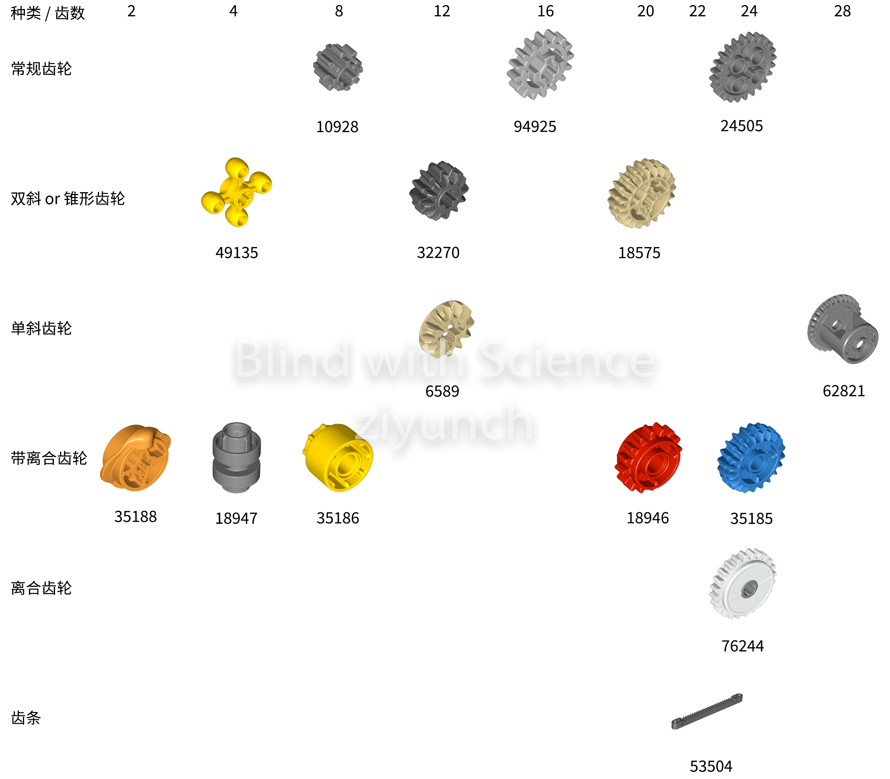
Figure 1: 齿轮类零件
这辆车的传动系统由前后两段组成。后段从图 1 到图 199，完成了后桥及差速器，引擎与变速箱。前段则从图 200 到图 464，完成了前桥及差速器与转向系统和悬吊，以及变速器中的挡位模式与换挡拨片。最后经由 marriage process 完成前后两段的连接，使所有部件完成联动。如果按照部件所在位置进行介绍，可能会和乐高说明书一样给人一种割裂感，所以在此我以动力传送的顺序进行介绍。
首先是位于后段的引擎。布加迪奇龙采用的 W16 引擎，是四组四排活塞气缸（piston）以 W 型排列组成的往复活塞式内燃机。这么说可能很难理解，更形象地说，是由两组小夹角的 VR8 发动机组成的，每个 VR8 发动机，都将八个气缸以 V 字形分列在曲轴两侧来减少发动机长度高度与重量。从外部来看，这款乐高还挺像 W16 引擎的，然而翻个面看内部，则可以看出乐高实际上采用了 L4（直列四缸发动机） + V8（夹角为 60° 的八缸 V 型发动机） + L4 的排布方式。发动机连接一个 12 齿黑色小齿轮，经与之啮合的 20 齿淡黄色大齿轮将动力传至换挡选择器，传动比为 3/5。气缸半径大概为 0.6 个乐高单位，行程长度大概为 1 个乐高单位，一个乐高单位为 8 毫米，所以排量为 pi * 气缸半径^2 * 行程长度 * 缸数 = 10 mm^3 = 10 microL，超级超级小。当然这里的气缸是虚拟的，所以如果我们仍然想模拟出引擎动力的话，可以将灰箭头处 1.5 乐高单位长的插销（connector）换成 1 单位长的十字轴套，方便未来玩耍。
Figure 2: 引擎
动力接下来传至位于前段的变速杆（gear shifter），我们可以在这里选择三种挡位模式（transmission mode）。
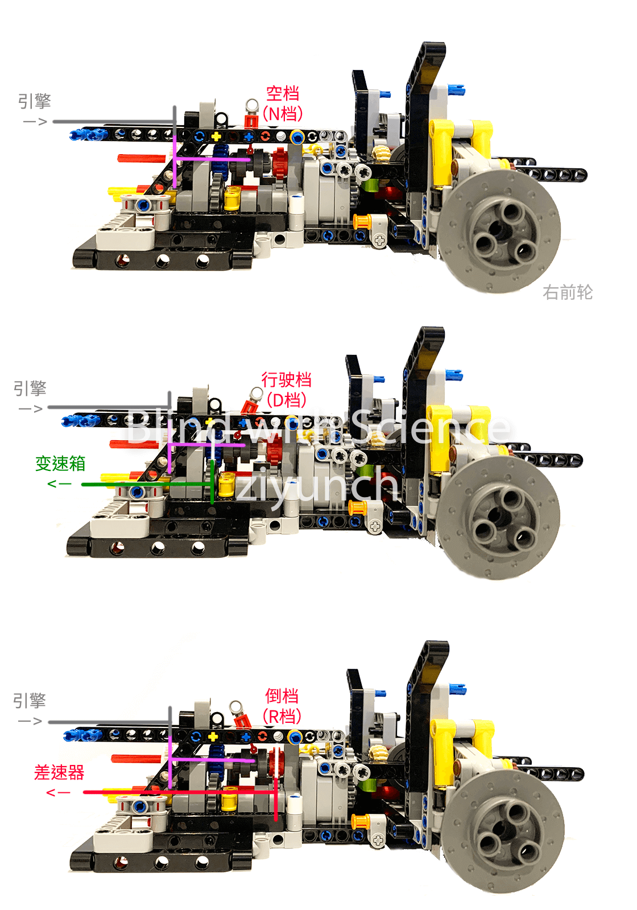
Figure 3: 变速杆
空挡（neutral）时，变速杆与变速器齿轮分离。
挂行驶挡（Drive）时，变速杆与蓝色的行驶齿轮结合。此时动力从引擎进去，通过灰线代表的 8 齿小齿轮，传递至与之啮合的粉线标示的 24 齿白色大齿轮（传动比为 1/3），并传动至与之同轴的 20 齿蓝色行驶齿轮（传动比为 1），和与其相啮合的 24 齿灰色大齿轮（传动比为 5/6），最后传至变速箱。
挂倒挡（Reverse）时，变速杆与红色的倒挡齿轮结合。此时动力经由 8 齿小齿轮与 24 齿白色大齿轮（传动比为 1/3）传动至与之同轴的 16 齿红色倒挡齿轮（传动比为 1），和与其相啮合的 16 齿灰色齿轮（传动比为 1），最后进入差速器所在轴，传至四个动力轮。
倒挡会直接将动力经中轴传至四个动力轮，而行驶挡时则需要经过变速箱进行变速后再传往中轴。所以在此我以行驶挡的动力传送顺序来介绍所经部件。
前面说了，挂行驶挡时动力会传至变速箱，而变速箱的挡位是通过位于前段的挡位拨片（paddle shifter）进行换挡的。推动位于方向盘右侧的升挡拨片，带动推杆推动装在灰色齿轮上的白色柱体，带动同轴的黄色 4 齿锥形齿轮逆时针转动 90 度，后者则带动与之啮合的锥形齿轮顺时针转动 90 度，再通过同轴的锥形齿轮带动与其啮合的锥形齿轮，带动变速箱的换挡红色转轴逆时针转动 90 度。
Figure 4: 换档拨片
变速箱位于后段，由四组离合器（gear shifter）组成，乃这款乐高的高光之处，齿轮组设计非常炫酷。齿轮多以轴连接，不过红色与蓝色的齿轮仅当离合选择器与之结合时才会与轴联动，另外粉线两侧为不同的轴，并不会联动。动力从黄色转轴进入，经过 16 齿灰色齿轮 o，从 24 齿灰色大齿轮传至与之啮合的位于后桥的 8 齿小齿轮（传动比为 3）。
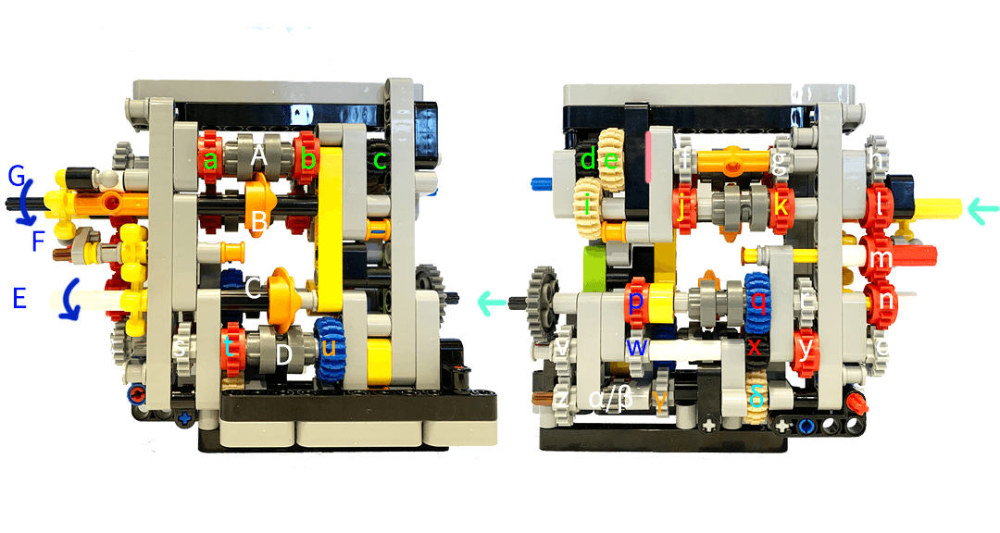
Figure 5: 变速箱原理
换挡拨片带动白色转轴 E 逆时针转动，离合选择器（gear shifter）带动 CD 两组离合形成四种组合，当转四圈时 F 杆带动杆 G 转动 90 度，所以 AB 也会被离合选择器带动形成四种组合，一共 16 种组合。
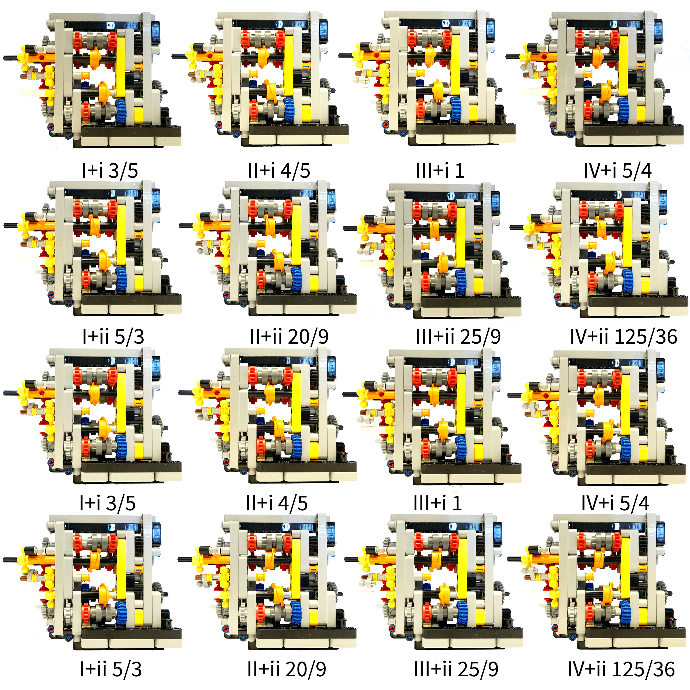
Figure 6: 变速箱
然而由于 AB 选择的 abcdef 相互啮合，所以只存在（i）A 空选 B 选择 j/k 或（ii） A 选择 a/b B 空选两种组合。组合 i 时（黄色字母），动力经 j/k 传至与之啮合的 f/g，后者带动与之同轴的 h 并通过相啮合的 lmn 传至 o，此时所经齿轮齿数均为 16 齿，总传动比为 1。组合 ii 时（绿色字母），动力经 i 传至与之啮合的 d（传动比为 5/3），再通过同轴的 e 传至 c（传动比为 5/3），带动 同轴的 a/b 传至与之啮合的 f/g，后者再带动与之同轴的 h 并通过相啮合的 lmn 传至 o，此时总传动比为 25/9。
到达 o 后，则有四种组合。分别为（I）D空选 C 选 q（II）D 选 u C 空选（III）D 空选 C 选 p（IV）D 选 t C 空选。组合 I 时（红色字母），动力从 xq 传至灰色大齿轮，传动比为 3/5。组合 II 时（橙色字母），动力从 v 传动至与之啮合的 z，再通过 αβ 传至 γ，再传至与之啮合的 u（传动比为 4/5)，u带动 s，并经 yr 传至灰色大齿轮。组合 III 时（蓝色字母），动力经 wp 传至灰色大齿轮，传动比为 1。组合 IV 时（浅蓝字母），动力从 vz 经 αβ 传至 δ，再传至与之啮合的 t（传动比为 5/4），再带动 s 经 yr 传至灰色大齿轮。
而后，动力通过灰色大齿轮与后桥橙圈内的与之啮合的 8 齿小齿轮传送至中轴（传动比为 3）。中轴连接前后桥，由于这辆车是四驱，所以前后桥还装有差速器（differential）。动力由差速器输入轴进入，通过 20 齿主动齿轮与 28 齿环齿轮（传动比为 5/7）带动两个 12 齿半轴齿轮（传动比为 1）来驱动两个前轮。当两个驱动轮所受阻力一致时，行星轴跟着两个半轴齿轮转动，不会自转。而当车辆转弯时，两侧轮胎所受阻力不同，行星轴会开始转动来平衡两侧驱动力。
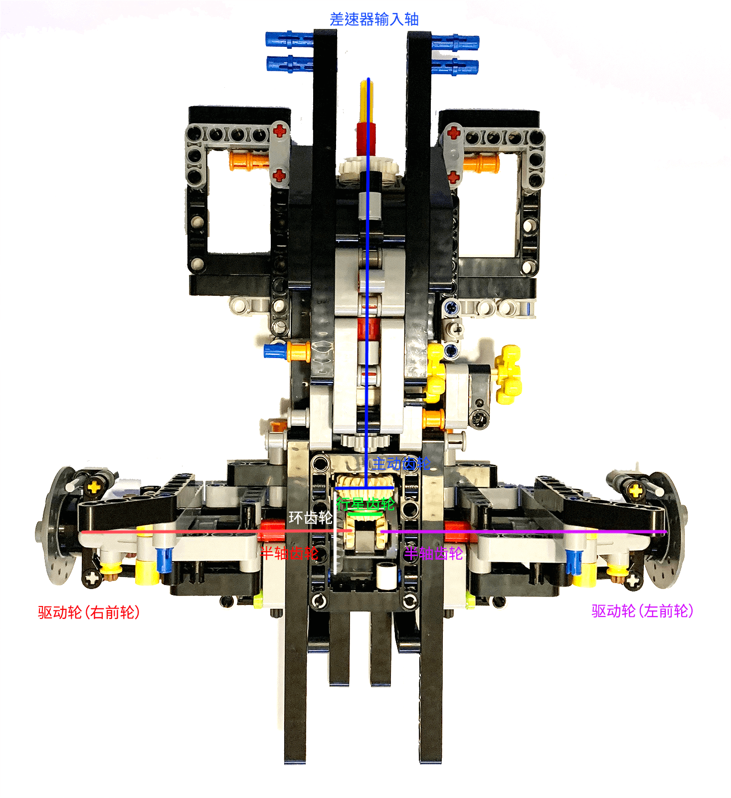
Figure 7: 前桥差速器
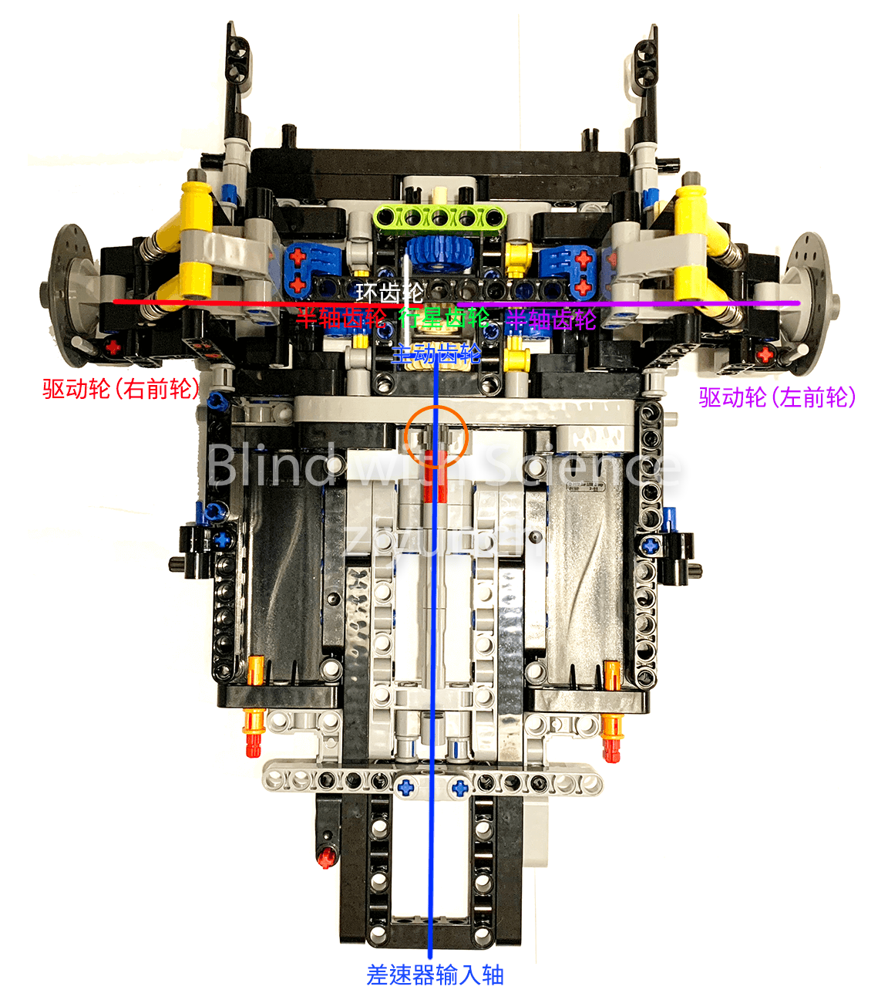
Figure 8: 后桥差速器
所以最终如下表所示
| 挡位 | 引擎 | 引擎-变速杆 | 变速杆 | 变速箱 | 变速箱-差速器 | 差速器 | 总传动比 |
|---|---|---|---|---|---|---|---|
| D1 | 3/5 | 1/3 | 5/6 | 3/5 | 3 | 5/7 | 3/14 |
| D2 | 3/5 | 1/3 | 5/6 | 4/5 | 3 | 5/7 | 4/7 |
| D3 | 3/5 | 1/3 | 5/6 | 1 | 3 | 5/7 | 5/14 |
| D4 | 3/5 | 1/3 | 5/6 | 5/4 | 3 | 5/7 | 25/56 |
| D5 | 3/5 | 1/3 | 5/6 | 5/3 | 3 | 5/7 | 25/42 |
| D6 | 3/5 | 1/3 | 5/6 | 20/9 | 3 | 5/7 | 50/63 |
| D7 | 3/5 | 1/3 | 5/6 | 25/9 | 3 | 5/7 | 125/126 |
| D8 | 3/5 | 1/3 | 5/6 | 125/36 | 3 | 5/7 | 625/504 |
| R | 3/5 | 1/3 | 1 | - | - | 5/7 | 1/7 |
这辆车采用的是双叉臂独立悬挂（suspension），由上下两个叉臂（beam）连接阻尼器（shock absorber）同时吸收横向力，横向刚度大，转弯侧倾小，适合跑车。乐高采用齿轮齿条来实现转向，由转向系统中的齿轮带动 22 齿的齿条，通过转向横拉杆带动左右轮毂转向。
Figure 9: 前桥
我将转向系统（steering system）单独拿出来，这样可以更清晰地显示方向盘是如何带动齿轮组，将转向动力传动到齿轮，从而带动齿条转向的。方向盘转 90 度，相当于与其同轴的 12 齿半轴齿轮与之后啮合的一系列 12 齿黑色小齿轮转 90 度（传动比为 1），带动与黄线标示的黑色小齿轮啮合的 20 齿淡黄色大齿轮转 54 度（传动比为 12 / 20 = 0.6)，也就相当于与淡黄色大齿轮同轴的 16 齿灰色齿轮转 54 度（传动比为 1），也就相当于与灰色齿轮同轴的 12 齿黑色小齿轮转 54 度（传动比为 1），即 1.8 齿，并带动齿条移动。齿条长 13 个乐高单位，齿共占 9 个乐高单位，1.8 齿相当于 0.78 个乐高单位，即轮胎转动了 arcsin(0.78/2.5) = 17.45 度。
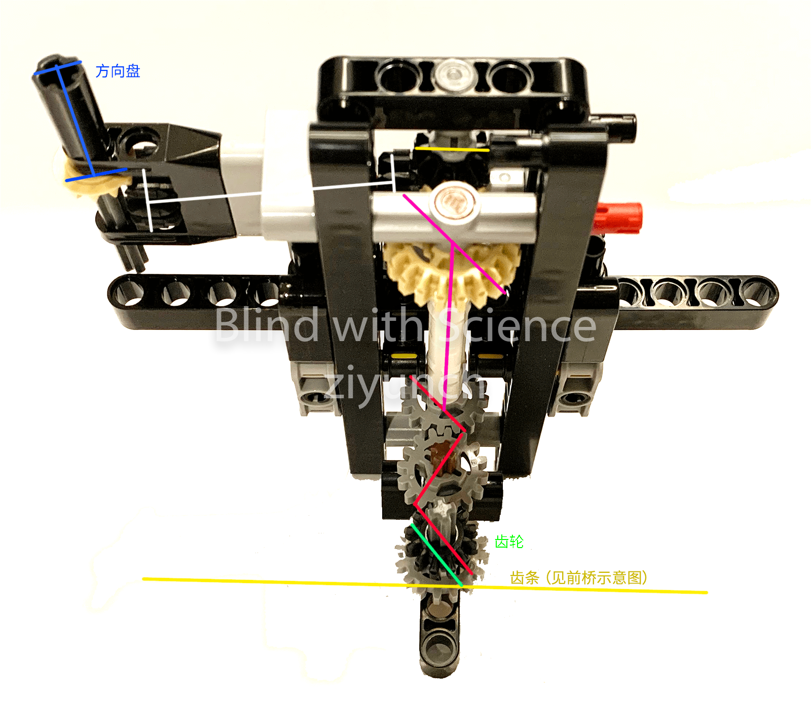
Figure 10: 转向系统
将这辆车的传动系统研究了一番之后，我发现设计者虽然很厉害，但还是有些许瑕疵。比如发动机卡顿的问题，这是由于多个离合齿轮造成的打滑而导致的动力滞后。另一个则是悬挂，这个有待计算，但我明显感觉前悬挂比后悬挂软很多，这在超重的全车组装完成后很可能是个问题。所以虽然拆了一遍车，为了之后能更顺利地玩耍此车，我打算再花一些时间，参考这篇讨论， 研究其他人是怎么针对这些问题进行改装，并找出花费最小的改造方案。
后续：花了好几周时间拆车研究，拍照 p 图，写了这篇博客。最后想在网上找一张 marriage process 的图的时候（太大了以至于我的简陋白板背景不够用），发现有人做了一个类似的评测 ，有很多动图，感觉可以作为我这篇博客的动态补充，在此也推荐一下。
DONE 从 pyim 换到 emacs-rime 了 EmacsRimeemacsrime
之前我一直使用的是 pyim，见 Mac 版 Emacs 中使用 Rime 输入法打带调双拼。前段时间手贱把 Mac 升至 Catalina 后，Emacs 便出现了各种各样的问题。捣鼓了一圈后发现了一个致命问题，那就是我对 pyim 的双拼定义不管用了。捣鼓了许久，都没搞明白原因是什么。不过 pyim 本身也有一些缺陷，安装复杂，和鼠须管并非无缝衔接，打字有卡顿，缓存限制对生僻字不友好，我的带调双拼也需要在 init 中另行设置，所以在发现 emacs-rime 后，我便起了换个轮子用的想法。
emacs-rime 的安装非常简单，从 rime/librime 那儿下了最新的 Release 并解压至 ~/.emacs.d/librime 即可。更棒的是，由于 emacs-rime 仅仅是 rime 在 emacs 中的前端，所以其体验与鼠须管是完全一致的。也就是说，我再也不用为了实现带调双拼而写一个专用的 schema 并在 init 中另行设置了，而用起方言输入法也是顺滑非常。另外，在中英文混输时，也不需要切换输入法了，超级棒。
(use-package rime
:custom
(default-imput-method "rime")
(rime-librime-root (expand-file-name "librime/dist" user-emacs-directory))
(rime-show-candidate 'posframe)
(rime-share-data-dir "~/Library/Rime")
(rime-user-data-dir "~/Library/Rime")
(rime-posframe-properties
(list :background-color "#073642"
:foreground-color "#839496"
:internal-border-width 1))
:config
(set-face-attribute 'rime-default-face nil :foreground "#839496" :background "#073642")
)
从 pyim 转至 emacs-rime 有个坑，那就是需要清除之前安装的 pyim 及 liberime，否则 posframe 的设置会无效。我一开始没有删掉 liberime，结果一直没办法配置 posframe 的对话框，弄了好几个小时，一度以为 posframe 和 doom-themes 有冲突。
另外超级棒不等于完美，我现在的 emacs-rime 配置还是有一些问题的。一是词库并不能和系统共享。二是 emacs-rime 调用的 posframe 打字时当前 buffer 会处于一种 lost focus 的状态，整体会在当前选择前景色的基础上变暗一点点。这样随着 posframe 的出现与消失，文字区域一闪一闪地眼睛非常不适。三是即使我设置了 default 为 rime，重启 Emacs 后仍然需要手动选择，非常奇怪。后两个问题 pyim 都没有，所以应该还是 emacs-rime 的问题。
DONE Beancount 记帐小进阶之一–环境配置 Beancount
记帐是我的一个习惯，也是爱好。自Emacs 上使用 Beancount 记帐起，我改用 Beancount 记帐已有一年有余。Beancount 简便轻巧，帐目亦是非常清晰。通过其前端 fava 对帐目进行可视化后，还能获得很多平时不会注意到的信息。下图是我 2020 年的支出，很明显地可以看到在疫情之下，我的支出以解决生理与安全需求为主，也可以看到由于支出大幅缩减，税居然占了我去年支出的一半。
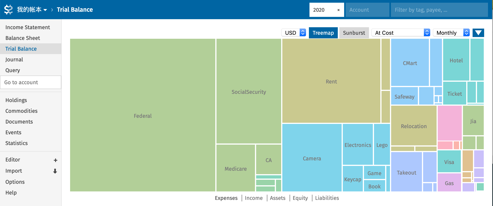
下图则是我自记帐以来在电影方面的支出，可以看到 2018-2019 年由于毕业找工作，出现了一个很大的平台期，也可以看到自今年三月疫情爆发以来，我再也没有去过电影院。
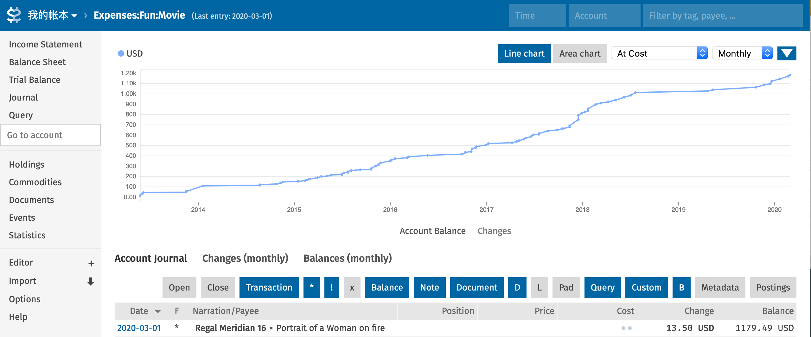
不过这一年来，我开始工作，也和女票同住，出现了更多类型的帐目。而这半年因新冠宅家，花销颇少，反而便懒于记帐了，一不小心便产生了好几个月的 lag，如何高效地记录各种类型的帐目反而成了一个问题。Beancount 虽然用的人不少，可是官方 document 写得非常硬核，中文资源又多浅尝辄止，我越是想要简化自己的流程，越是产生了更多的疑惑。最近花了圣诞元旦 MLK 三个长周末，总算将各种疑惑都理清了。
-
本地环境
beancount 与 fava 的组合可以很方便地浏览我的财务报表，我之前都是简单地呼出并关闭，不是特别优雅。这次就想配置一个 docker，退可常驻后台，进可部署云端。
首先准备一个 Dockerfile，将需要用的插件都申明于中。如果本来就是在虚拟环境中安装的 beancount，则可更简单地通过
pip freeze的requirements.txt来配置 docker。FROM python:alpine as builder RUN apk add --update libxml2-dev libxslt-dev gcc musl-dev g++ RUN pip install --prefix="/install" fava RUN pip install --prefix="/install" beancount_share RUN pip install --prefix="/install" beancount_plugins FROM python:alpine COPY --from=builder /install /usr/local ENV BEANCOUNT_FILE "" ENV FAVA_OPTIONS "" EXPOSE 5000 CMD fava --host 0.0.0.0 $FAVA_OPTIONS $BEANCOUNT_FILE然后封包并部署即可。
docker build -t fava . docker run --detach --name="beancount" --publish 5000:5000 \ --volume $(pwd):/bean \ --env BEANCOUNT_FILE=/bean/main.bean fava
-
远程操控「待定」
官方 github 中还推荐了更为安全的全局部署方式，然而我照做之后并不成功。以后有时间的话可能还是要回来研究一下，此处先占个位子。
docker run --detach --link beancount --publish 4180:4180 \ --name beancount-oauth \ --volume $(pwd)/oauth2_proxy.cfg:/etc/oauth2_proxy.cfg \ --volume $(pwd)/authenticated-emails:/etc/authenticated-emails \ --env "VIRTUAL_HOST=knowsome.science" \ --env "LETSENCRYPT_HOST=knowsome.science" \ --env "LETSENCRYPT_EMAIL=<my email>" \ skippy/oauth2_proxy -config=/etc/oauth2_proxy.cfg \ -http-address="0.0.0.0:4180" -provider=googledocker run --detach --publish 80:80 --publish 443:443 \ --name nginx \ --volume /etc/nginx/conf.d \ --volume /etc/nginx/vhost.d \ --volume /usr/share/nginx/html \ --volume $(pwd)/certs:/etc/nginx/certs:ro \ --volume $(pwd)/htpasswd:/etc/nginx/htpasswd:ro \ --label com.github.jrcs.letsencrypt_nginx_proxy_companion.nginx_proxy=true \ nginxdocker run --detach \ --name nginx-gen \ --volumes-from nginx \ --volume /var/run/docker.sock:/tmp/docker.sock:ro \ jwilder/docker-gen \ -notify-sighup nginx -watch -only-exposed -wait 5s:30s \ /etc/docker-gen/templates/nginx.tmpl /etc/nginx/conf.d/default.confdocker run --detach \ --name nginx-letsencrypt \ --env "NGINX_DOCKER_GEN_CONTAINER=nginx-gen" \ --volumes-from nginx \ --volume $(dirname $(realpath $0))/certs:/etc/nginx/certs:rw \ --volume /var/run/docker.sock:/var/run/docker.sock:ro \ jrcs/letsencrypt-nginx-proxy-companion
-
系列链接
- Emacs 上使用 Beancount 记帐：这篇对复式记帐法进行了一个简单的介绍，并记录了我是如何从随手记改用 beancount 的。
- Beancount 记帐小进阶之一–环境配置：这篇讨论了我是如何配置 beancount 本地环境的。
- Beancount 记帐小进阶之二–优化导入：这篇讨论了我是如何优化帐目帐本并批量从银行帐单导入帐务的。
- Beancount 记帐小进阶之三–常见场景：这篇讨论了我对工资单，共享帐簿以及医疗帐单，炒币这些常用场景的处理方式。
DONE Beancount 记帐小进阶之二–优化导入 Beancount
上文中我将本地环境重新配置，又加上了远程记帐的功能。此文主要讨论我会如何优化帐目账本，并批量从银行帐单导入帐务。
-
帐目优化
之前使用 Beancount 的时候，各种帐目设置多由随手记转化而来，缺乏股票与税务的考量。所以这次我也花了一些时间来优化帐目配置。
首先是收入，我的收入由几部分组成：salary, sign-on, RSU 以及 401k contribution 这类 benefits，另外工资单上的税和实际交的税会有一个差别。另外我会有一些利息盈余收入。
;; taxable 2014-01-01 open Income:Hooli:Salary 2014-01-01 open Income:Hooli:Bonus 2014-01-01 open Income:Hooli:RSU 2014-01-01 open Income:Interest:Checking 2014-01-01 open Income:Interest:Savings 2017-01-01 open Income:Trade:PnL ;; pre-tax 2020-01-01 open Income:Hooli:Benefits ;; non-taxable 2014-01-01 open Income:Cashback 2014-01-01 open Income:Rebate然后是支出，支出是因人而异的，不过基本上可以分为衣食住行娱乐几个大类与一些被动支出的项目。这次结构优化，修改了一些有问题的逻辑，比如将退税从收入挪去了支出。
1990-01-01 open Expenses:Clothing 1990-01-01 open Expenses:Grocery 1990-01-01 open Expenses:Food 1990-01-01 open Expenses:Living 1990-01-01 open Expenses:House 1990-01-01 open Expenses:Transit 1990-01-01 open Expenses:Travel 1990-01-01 open Expenses:Fun 1990-01-01 open Expenses:Hobby 1990-01-01 open Expenses:Tax 1990-01-01 open Expenses:Health 1990-01-01 open Expenses:Commission之后则是资产，这个比较简单，一般就是现金、银行账户、投资与固定资产。另外，车这类物品未来是有可能作为二手卖出的，所以也算成固定资产。衣物家具和玩具一类其实也可以资产这一类，不过对于我来说卖衣物玩具的可能性较低，暂且还是将其算成支出了。
2014-01-01 open Assets:US:Cash 2014-01-01 open Assets:US:Chase:Checking 2014-01-01 open Assets:US:Chase:Savings 2014-01-01 open Assets:Trade:Fidelity "FIFO" 2014-01-01 open Assets:Retirement:Fidelity 2014-01-01 open Assets:Health:HSA 2014-01-01 open Assets:Fixed:Car另一项负债也比较简单，以信用卡为主。方便起见，我将礼卡，朋友之间的 AA，与旅行或医疗产生的待结算花销也放在这里。
2014-01-01 open Liabilities:US:Chase 2014-01-01 open Liabilities:US:Giftcard 2014-01-01 open Liabilities:Payables 2014-01-01 open Liabilities:Receivables 2014-01-01 open Liabilities:Settlements
-
帐本优化
一般来说如果帐目不太多的话，完全可以将所有帐目置于一个文档之中。然而我有从 2012 年开始八年多的帐目，一个文档有些臃肿。所以我大概按照如下逻辑将帐本分为一些较小的文件
- 帐户与货币的开销户 (open and close) 使用单独的文件记录；
- 使用一个单独的文件进行信用卡帐单结算余额 (statement balance) 的对帐与现金花销的补足 (pad)。
- 对于支出 (expense)，将周期性开销与医疗费用（美国的医保报销相对来说比较复杂）分列单独文件外，其余按年记录。
- 对于收入 (income) 与资产 (assets)，则将工资单，股票账户等单列。
- 另外，对于出游，由于一般来说都是拉帮结伙，所以单独放在 event 文件夹中。
- 还有一些预付型费用，如果是 ezpass 这类会给出帐目明细的，则也单独放在一个文件中。
option "title" "Accounting" option "operating_currency" "USD" ;;; Setup include "accounts.bean" include "commodities.bean" ;;; Balance & Pad include "balances.bean" ;;; Expenses & Liabilities include "2020.bean" include "living.bean" include "health.bean" ;;; Income & Assets include "paycheck.bean" include "trade.bean" include "crypto.bean" ;;; Events include "event/2020-EventA.bean" ;;; Points include "points/ezpass.bean"另外，有时自己可能会写一些简单的插件，如果不想费事安装，也可以将其放入 beancount 文件夹中用以下声明来使用
option "insert_pythonpath" "True" plugin "plugins.beancount_share" "{}"
-
帐务导入
帐务导入是可以极大地缩短记帐耗时的一步，但是由于作者这方面的 documentation 写得不太好，我一直没搞明白，也就一直没用到 Beancount 的 Importer。这次由于我拖了半年没有记与女票共用信用卡的花费，只能苦心研究这个功能。对于帐务导入而言，我需要准备两个东西，一是 csv 格式的银行帐单，二是 自己写的 import 配置。
Chase, Amex 和 Citi 都是可以按帐单或自选日期导出近两年的帐目为 csv，而 BoA 只有 Checking 可以自选日期，credit card 只能按月导出。其中 Chase 信息最为充分，Amex 则只有选择导出为 xlsx 格式时才会附带分类信息。看起来 Chase 似乎很棒，但是由于
Beancount.core.data.Transaction并没有 category 这个 attribute，所以除非重写 Importer function 或者直接从 row 中得到分类，否则也无法利用这个分类信息。导出为 csv 后，我会做一些处理。首先删除不必要的
control-M符号，然后将大写单词换成首字母大写。Citi 比较坑，分了借贷的同时还使用了正负号，需要移除。另外，我们有几张卡是共享帐户，所以需要添加一个共享的标记。此外，我还将文件名放在第一行，有助于 importer 对不同的卡进行识别。我本来想简单点直接用sed做这些处理，结果发现 MacOS 下的sed和 UNIX 是有区别的，不能使用\u等标识符。折腾了一下午后，在女票的指导下发现使用perl就可以了。#!/bin/bash for filename in temp/*.csv do echo $filename basename=$(basename $filename) sed -i '' $'s/\r//' $filename perl -i -pe 's/.*/\L$&/g;s/(^| |,)./uc($&)/ge;s/,./\U$&/g' $filename if [[ $filename = "temp/Citi"* ]] then sed -i '' 's/-\([0-9.]*\)/\1/g' $filename fi if [[ $filename = "temp/Chase0000"* ]] || [[ $filename = "temp/Citi0000"* ]] then sed -i '' '1s/$/,Tag/; 2,$s/$/,share-GF/' $filename fi sed -i '' "1i\\ $basename " $filename done;针对不同银行帐目，import 配置会不太一样。比如 Chase 的帐单只有一个 amount，而 Citi 的帐单分为借贷两列，而且正负号是反的。其次，如果使用
beancount.ingest.importers.csv.Importer的默认配置，是只会添加帐目发生的帐户，但不会有这项帐目的去向信息。我写了一个简单的 categorizer function 来实现这部分。另外，配置文件可以是.import也可以加上beancount.ingest.scripts_utils和相关 function 写成.py文件，但是后者在我这儿有些问题，我便采用了前者。以下是我简化的配置示例config.import：#!/usr/bin/env import os import sys from beancount.core import data from beancount.ingest import extract from beancount.ingest.importers import csv def categorizer(txn): account = '' if txn.narration.startswith('Safeway'): account = 'Expenses:Grocery:Safeway' if account != '': txn.postings.append( data.Posting(account, -txn.postings[0].units, None, None, None, None)) return txn CONFIG = [ # Chase csv.Importer( { csv.Col.DATE: 'Transaction Date', csv.Col.NARRATION: 'Description', csv.Col.AMOUNT: 'Amount', csv.Col.CATEGORY: 'Category', csv.Col.TAG: 'Tag' }, account='Liabilities:US:Chase', currency='USD', regexps='Chase0000', skip_lines=1, last4_map={ '0000': 'Chase', }, categorizer=categorizer, ), # Citi csv.Importer( { csv.Col.DATE: 'Date', csv.Col.NARRATION: 'Description', csv.Col.AMOUNT_DEBIT: 'Debit', csv.Col.AMOUNT_CREDIT: 'Credit', csv.Col.TAG: 'Tag' }, account='Liabilities:US:Citi', currency='USD', regexps='Citi0000', skip_lines=1, last4_map={ '0000': 'Citi', }, categorizer=categorizer, ) ]接下来，执行下面的语句即可将帐单导入并存为
temp.bean文件。bean-extract config.import temp > temp.bean有些人可能希望每张卡的记录单独列出，那这个
temp.bean文件就够用了 。我还是希望在最终的帐单中所有帐目按时间顺序排列，所以可以使用bean-report来达到效果。bean-report temp.bean print > output.bean
-
系列链接
- Emacs 上使用 Beancount 记帐：这篇对复式记帐法进行了一个简单的介绍，并记录了我是如何从随手记改用 beancount 的。
- Beancount 记帐小进阶之一–环境配置：这篇讨论了我是如何配置 beancount 本地环境的。
- Beancount 记帐小进阶之二–优化导入：这篇讨论了我是如何优化帐目帐本并批量从银行帐单导入帐务的。
- Beancount 记帐小进阶之三–常见场景：这篇讨论了我对工资单，共享帐簿以及医疗帐单，炒币这些常用场景的处理方式。
DONE Beancount 记帐小进阶之三–常见场景 Beancount
书接上文，这次分享一下我对工资单，共享帐簿以及医疗帐单，炒币这些常用场景的处理方式。
-
工资记录
一张工资单上会有很多条目，所以我会单开一个文件来放工资详情，记录税务，保险，401k 和公司福利。
这里比较复杂的是税务的记录。以前我将税务算为负收入，这样在看每月支出时可以比较直观地看到自己的每月花销。但是实际上这不太准确。所以还是将税务其算作支出。另外，由于每年会根据收入以及代扣税费来报税，之后也会补税或退税，所以如果单列一个
Expenses:Tax会将年末的税务计算复杂化，所以我以财年 (fiscal year) 为单位来记录每张工资单的税务。以下以互利公司的工资单为例，：2019-10-31 * "Hooli" "Paycheck" Income:Hooli:Pay:Salary -7000 USD Income:Hooli:Pay:Bonus -3000 USD Expenses:Tax:FY2019:US:Federal +1660 USD Expenses:Tax:FY2019:US:SocialSecurity +620 USD Expenses:Tax:FY2019:US:Medicare +145 USD Expenses:Health:Dental:Insurance +5 USD Expenses:Health:Medical:Insurance +50 USD Expenses:Health:Vision:Insurance +5 USD Assets:Retirement:Roth:Fidelity +500 USD Assets:US:Chase:Checking +7015 USD Income:Hooli:Benefits:Match401K -500 USD Assets:Retirement:T401K:Fidelity +500 USD Income:Hooli:Benefits:HSA -40 USD Assets:Health:HSA +40 USD这样每年报税的时候，可以将应付或应收税额记录，在实际补税或退税时予以扣除。
2019-12-31 * "TurboTax" "Tax Return" Liabilities:Tax:Payables +2000 USD Expenses:Tax:FY2019:US:Federal -2000 USD 2020-04-15 * "Federal" "Tax return" Liabilities:Tax:Payables -2000 USD Assets:US:Chase:Checking +2000 USD
-
共享帐簿
平时和小伙伴们一起玩耍，总会遇到一人付款事后分帐的情况。这种债务的记录在会计上是应该分为资产和负债的，但是对于个人帐目而言，每个人开两个帐目也挺麻烦，所以我一律记载在负债中，如果说我付钱帮小红同学与我买一份狮子头分着吃，就这么记录：
2020-01-01 * "X Restaurant" "狮子头" Liabilities:Receivables:小红 +5 USD Expenses:Food:Takeout +5 USD Liabilities:US:Chase:Freedom -10 USD如果小红帮我付钱两人又分了一份狮子头，就这样：
2020-01-02 * "X Restaurant" "狮子头" Expenses:Food:Takeout +5 USD Liabilities:Receivables:小红 -5 USD以后和小红同学结算的时候就看
Liabilities:Receivables:小红这个帐户里还有多少钱，如果是正的对方就欠我钱，如果是负的我就需要还对方钱。不过今年和女票同住，大家的共同花销都记在她的一张信用卡上，再像上面那样一条一条记录，就有些头大了。所以此处我用了两个插件来记录共享和实际支出对象：
plugin "beancount.plugins.divert_expenses" "{ 'tag': 'GF', 'account': 'Liabilities:Receivables:GF' }" plugin "beancount_share.share" "{ 'mark_name': 'share', 'meta_name': 'shared', 'account_debtors': 'Liabilities:Receivables', 'account_creditors': 'Liabilities:Receivables', 'open_date': None, 'quantize': '0.01' }"这样，我可以将她信用卡的帐单导入（具体设置见前文），然后通过添加标签的方式设置共享支出，这样如果我们使用女票名下的信用卡帮我俩付钱买狮子头就可以这样记录：
2021-01-01 * "X Restaurant" "狮子头" #share-GF Liabilities:GF:Chase:Freedom -10 USD Expenses:Food:Takeout如果她使用这张共享的卡给自己买了狮子头却没有和我分（哼），则可以将标签改成
#GF来改变实际支出对象。2021-01-02 * "X Restaurant" "狮子头" #GF Liabilities:GF:Chase:Freedom -10 USD Expenses:Food:Takeout这样在 beancount 后端，这两条记录会变成如下形式：
2021-01-01 * "X Restaurant" "狮子头" #share-GF Liabilities:GF:Chase:Freedom -10 USD Expenses:Food:Takeout +5 USD Liabilities:Receivables:GF +5 USD 2021-01-02 * "X Restaurant" "狮子头" #GF Liabilities:GF:Chase:Freedom -10 USD Liabilities:Receivables:GF +10 USD而女票对她信用卡的付款记录则可以移除标签，直接记录，如果不放心的话还可以加个余额的对帐。
2021-01-03 balance Liabilities:GF:Chase:Freedom -20 USD 2021-01-15 * "Automatic Payment - Thank" Liabilities:GF:Chase:Freedom +20 USD Liabilities:Receivables:GF -20 USD如此记录，方便简洁，最后一看
Liabilities:Receivables:GF的余额是 -5，所以我要还她 5 块钱。
-
医疗帐单
在美国，医保是一项产业，工作之后医保与学生时期的医保相比差了不少，与之相关的帐务记录也变得非常麻烦。我的思路就是在实际发生日，按照医保公司给的帐单进行记录，并对 deductible 按年记付。这样可以方便地看出每年 deductible 额能否用完，日后需不需要更换更合适自己的医保。下面是一个例子：
2020-01-01 * "Premera" "Labcorp Test" Expenses:Health:Medical:Claims +150 USD Expenses:Health:Medical:NetworkDiscount -20 USD Expenses:Health:Medical:PlanPayment -100 USD Liabilities:Payables:Health:Y2020:Deductible -30 USD而后可以直接用 HSA 帐户付清帐单：
2020-02-01 * "HSA" "Reimbursement" Liabilities:Payables:Health:Y2020:Deductible +30 USD Assets:Health:HSA -30 USD如果 HSA 帐户里暂时没那么多钱，也可以用信用卡先付清帐单，日后再用 HSA 报销：
2020-02-01 * "Premera" "Payment" Liabilities:Payables:Health:Y2020:Deductible -30 USD Liabilities:US:Chase:Freedom +30 USD 2021-01-01 * "HSA" "Reimbursement" Assets:Health:HSA -30 USD Assets:US:Chase:Checking +30 USD
-
RSU
工作以后，会得到一些 RSU，即限制性股票，这一般是作为股票奖励写在 offer 中，按一定比例分四年发放。这在税务记录上会有一些复杂，所幸的是 Beancount 官方文档中给出了很好的示例。由于我还没被 vest，在此先不赘述，以后拿到股票了再补完。
-
虚拟货币
17 年的时候我有买过一点点比特币，虽然基本上都被不靠谱的我给玩没了，也算交了比小小的学费。由于虚拟货币的特殊性，当时用随手记记录的时候从税务角度来看帐目有一些不清晰。研究了一下发现，beancount 也可以比较好地处理这种场景。
首先是开户，可以使用类似股票的形式开户，并以 FIFO 的形式计算盈余。除了资产以外，还有支出和收入来记录手续费与盈余收入。此外将虚拟货币记录为一种通货。
2017-06-01 open Assets:Crypto:Coinbase:Wallet "FIFO" 2017-06-01 open Assets:Crypto:Bittrex:Wallet "FIFO" 2017-06-01 open Expenses:Crypto:Commissions 2017-06-01 open Income:Crypto:PnL 2008-01-01 commodity BTC export: "BTC" name: "Bitcoin"在使用美元买进虚拟货币的时候，可以用
{}表示每一币的持有成本，并用@@表示买入总价。2017-06-01 * "Coinbase" "BTC" Assets:Crypto:Coinbase:Wallet +0.03000000 BTC {3000.00 USD} @@ 90 USD Expenses:Crypto:Commissions +3.00 USD Liabilities:US:Chase:Freedom -93.00 USD而卖出的时候，由于我对这个钱包采用的是先进先出 (FIFO) 的模式，可以不指明卖出比特币的持有成本，这样 Beancount 会直接以最早买入的比特币的持有成本来计算盈余。卖出时可以用 @ 表示卖出时每币的价格。
2017-07-30 * "Coinbase" "BTC-> USD" Assets:Crypto:Coinbase:Wallet -0.02000000 BTC {} @ 4500.00 USD Expenses:Crypto:Commissions +3.00 USD Income:Crypto:PnL -30.00 USD Assets:Crypto:Coinbase:Wallet +87.00 USD虽然人们对虚拟货币的货币属性仍有争议，但是对于比特币的转帐行为，交易费用是采用比特币结算的。这就给传统记帐手段带来了问题。对于 Beancount 来说，也比较 tricky，我也是找到这个讨论帖才找到如下这种记录方式。
2017-08-01 * "Bittrex" "Coinbase -> Bittrex" Assets:Crypto:Coinbase:Wallet -0.01000000 BTC {} Assets:Crypto:Bittrex:Wallet +0.00990000 BTC @ BTC Expenses:Crypto:Commissions +0.00010000 BTC @ USD
-
系列链接
- Emacs 上使用 Beancount 记帐：这篇对复式记帐法进行了一个简单的介绍，并记录了我是如何从随手记改用 beancount 的。
- Beancount 记帐小进阶之一–环境配置：这篇讨论了我是如何配置 beancount 本地环境的。
- Beancount 记帐小进阶之二–优化导入：这篇讨论了我是如何优化帐目帐本并批量从银行帐单导入帐务的。
- Beancount 记帐小进阶之三–常见场景：这篇讨论了我对工资单，共享帐簿以及医疗帐单，炒币这些常用场景的处理方式。
DONE 继续吹一波 Org-mode Org-modeEmacs
最近 Notion 大火，从二手买卖到菜谱分享，隔三差五就会看到它的推荐和应用。出于好奇，我也去开了个帐户用了一番，确实不错，然而我对其持谨慎态度。一方面，作为在线产品，它的使用场景灵活，但又会受网络限制，假如所在单位或者地区禁止使用，那就徒增烦恼。而且，它并非开源产品，公司一旦跑路或者改变其业务重心，那会造成非常高的转移成本，前车之鉴便有 Evernote。另一方面，它作为一个笔记产品，架构强大，也更复杂，有着较高的学习成本，也许用起来很 sexy，但也会让人疑惑在有更好替代品的情况下，是否值得花费这么多时间来学习使用这个产品。
说了这么多，其实我只是想引出这个更好的替代品，也就是我用了多年的 Emacs。
在数字化时代，我们需要用到各种各样的工具来记录管理我们的生活，这也催生了各种工具和网站。比如日程管理有 Things、Bear 等，文献管理软件有 Endnote、NoteExpress 等，记帐软件有随手记、Splitwise 等，编辑器有 VSCode、Atom 等，博客写作软件有 Typora、MWeb 等，菜谱有下厨房。但是工具太多协作性便会变弱，在线产品更是逃不脱对厂商的依赖，一旦厂商缺钱改成了订阅付费模式，除了叫苦不迭也只能乖乖付钱，而如果厂商保持免费，那也有可能通过其他方式比如出售隐私增加广告来保持盈利。其实对于这些，Emacs 的 Org mode 都可以胜任。
Emacs 是什么呢？最简单的解释，便是 Emacs 是一种基于 Lisp 的具有可扩展性的文本编辑器。文本编辑器，意味着平时不管在上面记录什么，大小都以 kb 计，最基础的 Dropbox plan 就能轻松对其进行云端备份，哪怕在一个没有 Emacs 的环境，也能用任何文本编辑器打开使用 Emacs 处理的文档。而 Lisp 的强扩展性，则赋予 Emacs 一切可能，你可以用它记笔记（Org-mode），管理文件（Dired），编辑远程档案（Tramp），版本控制（Magit），收发邮件（Gnus），用作 IDE，甚至上网发推。有一个著名的说法称 Emacs 为操作系统，倒也并非言过其实。不过我也不至于真的将 Emacs 当操作系统使用，毕竟我们已经一只脚跨入了 Meta 时代（狗头）。不过 Emacs，尤其是无人可出其右的 Org-mode，也确实渗透了我的学习、工作、生活。
那么，Org-mode 又是什么呢？Org-mode 是 Emacs 的一种支持内容分级显示的主编辑模式。在 Emacs 中，每种主模式都有特殊的 Emacs Lisp 变量和函数来使处理文档变得更便捷，而 Org 作为 Emacs 特有的文本格式，更是有着非常出色的原生支持。其他主流编辑器（Vim, Atom, VSCode, Sublime）也都有对应相应的 Org 模式，但只能支持基础的语法高亮功能。
Org-mode 的宣传语就是 your life in plain text，可以说很好地概括了 Org-mode 的能力。最重要的一点是 Org 是纯文本文档，具有体积小结构简单的优点。在此我先简单介绍一下 Org-mode 的特性，就不一一展开了。毕竟如果展开来讲，那可能得出一个系列文章。
-
Org-mode 的几点特性
- 标记语言：Org-mode 有自己的标记语言，虽然和最流行的 Markdown 不同，但是可以通过 pandoc 进行双向转换。那为什么不用 Markdown 呢，因为标记只是 Org-mode 最基础的特性。
*加粗* /斜体/ _下划线_ =逐字= ~代码~ +删除线+ [[https://blindwith.science][链接]] [[file:文件.txt]]- 树状结构：Org-mode 的一大特色就是采用星号来标定所属层级，可以通过
C-c *和C-c -快速地转换为大纲或列表，并可通过 Tab 键切换是否折叠显示层级、列表和代码块，还可以通过C-c C-n/p/f/b/u这样来浏览同级或上级标题。在大纲处还可以通过C-c C-c来加入标签，方便跳转。这样哪怕在一篇 Org 文档中记了几万行文字，也可以轻松导览到所需内容。
* 一级大纲 ** 二级大纲- 表格：Org-mode 采用纯文本的方式管理表格，通过 Tab 键补完表格并调整大小。而且它还支持表格运算，可以通过
C-c '来插入公式。
| a | b | a + b | | 1 | 2 | 3 | #+TBLFM: $3=$1+$2- 文学编程：Org-mode 最令人心动的则是 Babel 功能，可以直接在 Org 文件中通过
C-c C-c直接运行代码块，并直接储存结果。由于 Org-mode 是纯文本文件，这可比 Jupyter-notebook 好用多了。
#+BEGIN_SRC python :results output print('Hello World!') #+END_SRC #+RESULTS: : Hello World!- 导出发布：Org 作为纯文本文档，可以很方便地分享给任何人用任何文本编辑器来查看内容。但是如果朋友是见到奇怪后缀就会发怵的人，也可以通过
C-c C-e将文档导出为 pdf, odt, markdown 或网页。 - 任务管理：Org-mode 中可以很方便地通过
S-<left>或S-<right>来修改大纲或列表的任务状态来管理代办事项，添加[%]和[/]来跟踪任务进度，通过[ ]来标记任务完成情况，而且支持自定义不同级别的任务状态（默认有 TODO 和 DONE）。 - 日程管理：Org-mode 的日程管理功能也非常优异，可以通过
C-c [来将当前文件加入任务清单，通过C-c C-s和C-c C-d来设置计划时间和截止时间，通过C-c C-x C-i和C-c C-x C-o来记录在每项任务上的时间花费。另外，还可以通过C-c a a进入日程表视图，通过移动光标来显示每个条目所在的源文件。 - 高度可定制：如果这些还不能满足你，还可以通过添加扩展包，写 org-capture 和写 lisp 函数的方式来进一步定制你的 Org-mode。
那么这些特性在实际生活中有什么用呢？用处可大了。在此我便抛砖引玉，聊一聊我都用 Emacs 和 Org-mode 来做什么。
-
文献记录 org-ref
读博的时候，看 Paper 基本上是每日必需。我虽然懒惰，但是也读了不少文献。在国内的时候我用过 NoteExpress，来美国后便用了 Endnote，虽然都是成熟产品，但还是有很多问题。比如导入 pdf 操作不是很方便，而且还会为 pdf 强制重命名，我离开软件就无法分辨这些 pdf 谁才是谁。而且这些软件价格普遍不便宜，虽然学校图书馆会提供免费使用的版本，但是还是让人担心毕业之后怎么办。另外，这些软件只能写一些纯文本的笔记，有的时候想写个化学式就无处下手。而基于 Org-mode的org-ref，不仅提供了 Endnote 所有我需要的功能，还完美解决了这些痛点。这好像是 CMU 化学系的一个教授开发的，他们组似乎会直接使用 Org-mode 写 paper，所以理科文献记录的痛点他们都会考虑到。需要用 doi 或者 arxiv 导入文献？没问题！想要写个化学式或者数学表达式？没问题！想要自动导入 pdf 并关联打开？没问题！想要使用多个 bibtex 来和 Latex 联动？没问题！想要使用标签或者交叉引用？没问题！这个工具真的是极大地节约了我花在文献综述上的时间。而使用起来也很简单，
C-c ]即可插入引用，拖 pdf 或者M-x doi-add-bibtex-entry即可添加引用。以下是一个例子：* 文献 ** TODO [#A] 2009 - Imp Dehydrogenase: Structure, Mechanism, and Inhibition :review: :PROPERTIES: :Custom_ID: hedstrom-2009-cr :AUTHOR: Lizbeth Hedstrom :JOURNAL: Chemical Reviews :YEAR: 2009 :VOLUME: 109 :PAGES: 2903-2928 :DOI: 10.1021/cr900021w :URL: https://doi.org/10.1021/cr900021w :END: cite:hedstrom-2009-cr 最棒的IMPDH综述！
-
面试准备
我转行找工作的时候，Org-mode 也派上了大用场。它特别适合用来刷题。可以用超链接来跳转原题页面，用任务管理来看自己的刷题进度，高亮重点题目，用日程来安排每日刷题时间，也可以加标签来做专题复习，最棒的是每道题写完后可以直接运行代码，检查对错。这样可以将所有刷过的题目和解答都放在一个文档中，方便浏览复习。我的刷题文档大概长这样：
* NEXT Leetcode [1/1] SCHEDULED: <2021-11-03 Wed 22:00 .+1w> :PROPERTIES: :STYLE: habit :END: ** NEXT [[https://leetcode.com/problems/two-sum/][1. Two Sum]] :Array:HashTable:Amazon:%: #+BEGIN_EXAMPLE Given an array of integers, return indices of the two numbers such that they add up to a specific target. You may assume that each input would have exactly one solution, and you may not use the same element twice. Example: Given nums = [2, 7, 11, 15], target = 9, Because nums[0] + nums[1] = 2 + 7 = 9, return [0, 1]. #+END_EXAMPLE *** Solution #+BEGIN_SRC python class Solution: def twoSum(self, nums: List[int], target: int) -> List[int]: d = {} for i, num in enumerate(nums): if target - num in d: return (d[target - num], i) d[num] = i #+END_SRC而当进行面试的时候，Org-mode 也特别适合用来放各种面试相关的准备材料，跟踪各个公司的进度，记录各个公司的面试经历。我将每个公司单列一级，并为任务状态增加了 Screen, Tech, Onsite, Reject 和 Offer 几项，这样可以更直观地显示每个公司到了那一步。
-
工作笔记
我很喜欢给我所负责的项目做记录。在实验室的时候，大家都用耐酸碱且能经历时间考验的厚重的实验记录本，但是我总觉得纸质的东西虽然方便翻找，但还是容易丢失毁损。所以我都会用 Org-mode 整理我的工作笔记。等工作以后，我也依然保持着用 Org-mode 记录工作的习惯。
* 会议记录 ** 老板 1:1记录 * 项目记录 ** 项目甲 我对项目甲做了什么 ** 项目乙 我对项目乙做了什么 * 实验/工作日志 ** Week 1-2 / Sprint A *** [2021-11-03 Wed] - [X] 写博客Org-mode 的文学编程在这儿也特别好用。一方面可以将一些 code snippets 以及 diff 和自己的想法方便地记录，另一方面也可以记录很多 adhoc 操作。我平时会有一些 terminal 上的操作和数据库的操作，比如给别人权限，query 一个小 table，或者查看数据库的状态。这些小操作单独存档很麻烦也没必要，但是如果不记录的话过几天可能就不记得自己做了什么。这时我就会写在我的工作笔记上，然后直接运行，这样运行结果也会一同保存在文档中，非常方便。这是一个直接 query 数据库的例子：
* SQL :PROPERTIES: :header-args:sql: :engine postgresql :dbhost host :dbuser user :dbpassword pwd :database dbname :header-args: :exports both :END: ** query table_a #+BEGIN_SRC sql SELECT * FROM table_a LIMIT 10 #+END_SRC
-
写博客 ox-hugo
我几年前从 hexo 转投 hugo 后，就一直以 hugo 作为我博客的后端。Hugo 中，每篇博客都是一个 Markdown 文档。如果博客数量不多的话，管理起来还挺方便的。但是我有几百篇博客，哪怕我用一个高效的方式去命名每篇博客，真找起来也比较头疼。而我也正是由于几百篇博客在 hexo 上渲染太慢才转投 hugo 的，以前还因为某 tag 系统有上限而给其 file 过 bug。
解决方案则是使用 Org-mode，我可以方便地在 Org-mode 里写博客，将所有博客都放在一个 Org-mode 中。但是怎么将一个 Org 文档到处为几百个 Markdown 文件呢？有一个很好用的插件叫ox-hugo。有了这个轮子，我可以将任意大纲级别下的日记导出为 Hugo 需要的 markdown 格式。
* 博客 :PROPERTIES: :EXPORT_HUGO_SECTION: post :END: ** 技术 :@技术宅: *** DONE 继续吹一波Org-mode :Org_mode:Emacs: :PROPERTIES: :EXPORT_FILE_NAME: 20211108-org-mode :EXPORT_HUGO_SLUG: 466.html :EXPORT_HUGO_WEIGHT: -466 :END: 最近Notion大火，从二手买卖到菜谱分享，隔三差五就会看到它的推荐和应用。……
DONE 并行运行多任务 Bashxargs
最近工作中遇到一个比较有意思的小问题，我在解决的过程中顺便又学到了一些 bash 的小知识。真希望能有一个给外行的 bash 的教材，这可比 python java 这些简明易懂的现代语言什么的有用多了。
这个问题是我用loop-level parallelism来同时后台运行多个进程，怎么样可以只在所有进程都成功的情况下才会 exit 0 。
-
使用 wait 命令来获取进程状态
一般来说，bash 中后台运行可以通过在末尾添加
&来在后台运行子进程，但是缺点是一旦一个进程处于后台，那么 shell 也就不关心它的 exit code。这样不管子进程运行多久，主进程都会开心地迅速exit 0。for((i=0;i<3;i++)) do ./run_something.sh -p a=$i & done如果想让主进程等一等子进程，那则需要增加
wait命令。但是这样只会等最后一个子进程的状态，如果前几个子进程运行失败了，主进程还是会欢快地显示运行成功。for((i=0;i<3;i++)) do ./run_something.sh -p a=$i & done wait那有没有办法检查每个进程的状态呢？
$!可以得到上一个命令的进程 id，即 pid，那我就可以将每个子进程的 pid 都存起来，再分别等每个子进程的状态，一旦失败就将失败结果传给主进程。但是这样就会遇到 pid 被回收的问题。每个子进程运行的时间都可能不一样，可能第二个早早地运行成功了，pid 被回收给了不属于这个主进程的新进程，所以当查看其状态时，会因为拿不到状态（只能拿到子进程的状态）而报错。for((i=0;i<3;i++)) do ./run_something.sh -p a=$i & pids[${i}]=$! done for pid in ${pids[@]} do wait $pid || exit done || exit不过这个 wait 看起来非常 promising，所以我还去研究了文档看看还有什么办法。果然，
wait -f看起来可以等所有的子进程运行完毕，似乎正是我所需要的。但是这个功能要在 bash 4.3 才引入，而我的工作环境默认使用 bash 4.2。另一个可能有用的是
wait -n，只是它也只有在 bash 4.3 才被支持。for((i=0;i<3;i++)) do ./run_something.sh -p a=$i & pidlist="$pidlist $!" done for i in $pidlist do if ! wait -n $pidlist then kill $pidlist 2>/dev/null exit 1 fi done || exit
-
时时检查任务状态（check heartbeat）
进程状态行不通，我的另一个想法是通过检查任务状态。以下是相应的代码：
run_ids=() for((i=0;i<3;i++)) do run_ids <- ./run_something.sh -p a=$i & done while((${#run_ids[@]}==0)) do echo "Wait 1 more minutes." sleep 1m done echo "${#run_ids[@]} jobs are executed:" for id in "${run_ids[@]}";do echo $id;done while((${#run_ids[@]}>0)) do echo "Checking heartbeats of the remaining ${#run_ids[@]} jobs." for i in ${!run_ids[@]} do job_run_status=$(./check_run_id.sh -c ${run_ids[$i]}) echo "${run_ids[$i]} is in state $job_run_status" if [ "$job_run_status" == "SUCCESS" ] then unset run_ids[$i] echo "${#run_ids[@]} jobs remain." elif [ "$job_run_status" == "FAILURE" ] then failures=$[$failures+1] unset run_ids[$i] echo "${#run_ids[@]} jobs remain." exit 1 elif [ "$job_run_status" == "" ] then unset run_ids[$i] fi done || exit sleep 1m done || exit echo "$failures jobs failed"不过比较 tricky 的一点是每次执行新的任务，都会生成一个相应的任务 run_id。而我需要获取这个 run_id 才能用其检查状态。所以这一步
run_ids <- ./run_something.sh -p a=$i &具体怎么实现，让我犯了难。我试了几种方式将任务产生的 run_id 存起来，却都不成功。究其原因，则是主进程与子进程之间只能单向传递参数，所以虽然任务会产生 run_id，但由于是在子进程中产生的，没有办法向主进程传递。
for((i=0;i<3;i++)); do run_ids+=($(./run_something.sh -p a=$i)) &; done for((i=0;i<3;i++)); do run_ids[${#run_ids[@]}+1]=$(./run_something.sh -p a=$i) &; done while read -r line; do run_ids+=("$line"); done < <(for((i=0;i<3;i++)); do ./run_something.sh -p a=$i & done)这个的解决方法则是将参数存在一个文件里，有些复杂了。
-
xargs
所幸经过一番查找，我在 GNU 的查找工具组里找到了一个解决方案：xargs。其实我一开始并没明白 xargs 是什么，只是因为它有多进程参数且可以通过子进程成功与否返回不同的 exit code 而觉得它会有用，便写了类似下面有问题的代码，并花了很多时间研究如何让 xargs 接受多个参数。
for((i=0;i<3;i++)); do ((j=i+1)) echo $i $j done | xargs -I{} -n2 -P 0 bash -c "./run_something.sh -p a={} -p b={}"但实际上，当我研读文档，搞明白 xargs 真正在干什么的时候，就证明了我的方向错了:我们根本不需要让 xargs 接受多个参数就行了，一个参数就可以，因为一个参数可以是多条命令。
那么 xargs 是什么呢，xargs 可以将标准输入作为参数传递给命令。一条 xargs 命令，当该是这样的格式：
命令1 | xargs [-xargs参数] 命令2|是管道，命令 1 的标准输出可以通过管道变成命令 2 的标准输入。但是，有一些命令比如 echo 并不接受管道传来的标准输入作为其参数，这个时候就需要 xargs 作为一个中间商，将标准输入转化成参数。对于 xargs，它会默认命令 2 是 echo，如果命令 1 也是 echo 的话，则会默认换行符和空格是分隔符。所以，xargs 最常用的方式就是快速进行如下查找，新建，删除等文件操作：
find . -name "*.txt" | xargs grep "abcd" # 在所有txt文件中查找含有abcd的文件 echo "a b c d" | xargs -t touch # 直接新建 a、b、c、d四个文件 echo "a b c d" | xargs -p rm # 确认后删除 a、b、c、d四个文件但是，xargs 真正性感的是它所支持的命令不仅限于简单的文件操作，它还支持多进程处理。所以，我可已将整个命令构建出来后，传递给 bash 来运行。
for((i=0;i<3;i++)); do echo "./run_something.sh -p a=$i -p b=$[$i+1]" done | xargs -I{} -P 0 bash -c "{}"这里 xargs 的参数
~-I是用来声明我想替换命令 2 中的”{}"，而-P则是--max-procs，用来声明最大进程数。如果所有进程都成功执行，则会返回 0，否则会返回 123。另外，如果我不想等所有进程都执行完便报错，则可以将子进程的报错值改为 255。for((i=0;i<3;i++)); do echo "./run_something.sh -p a=$i -p b=$[$i+1] || exit 255" done | xargs -I{} -P 0 bash -c "{}"我的问题便迎刃而解了。
此外，我还查到可以用 gnu parallel 去更好地管理多进程，但是由于并非所有系统都自带 gnu parallel，我便没有在这上面花太多时间。
-
彩蛋
因为我对 bash 很不熟练，在调试第二种方案的时候，有段时间不管怎么回事都显示任务成功完成。后来加上调试模式（见下）仔细研究一番，才发现 bash 中一对小括号，两对小括号，一对中括号，两对中括号和一对大括号都不能乱用。
set -e; set -o pipefail; set -x;一对小括号一般用于声明命令或是数组，两对小括号一般则用于变量计算和比较。一对中括号也会用于比较，但是一般是针对字符串的，也只能比较是或者不是。两对中括号则是用于通配符的匹配和替换。而大括号，则一般用于扩展与几种特殊模式的匹配替换。
# () $(cmd) # cmd array=(a b c d) # (()) ((exp)) ((a++)) for i in $(seq 0 4);do echo $i;done for i in `seq 0 4`;do echo $i;done for((i=0;i<5;i++));do echo $i;done for i in {0..4});do echo $i;done if (($i<5)) if [ $i -lt 5] # [] [ $string == $a ] [ $string != $b ] # [[]] [[ hello == hell? ]] if [[ $a != 1 && $a != 2 ]] # {} ${var%pattern} # 去掉右边，最小匹配 ${var%%pattern} # 去掉右边，最大匹配 ${var#pattern} # 去掉左边，最小匹配 ${var##pattern} # 去掉右边，最大匹配 ${var:(-2)} # 右数第二个到最右 ${var:3:2} # 左数第三个起长度为2 ${var/pattern/pattern} # 替换首个 ${var//pattern/pattern} # 替换所有
DONE 我有长毛象啦 Mastodon长毛象
我一直都想有一个自己的微博系统，因为自己逐渐回复社恐状态，愈发不习惯在公共平台如豆瓣、微博、朋友圈吐槽。而自己也没有当年日更一博的劲头，几句话就发一篇博客的话好像也不妥。但是微博和博客不同，很难复用我所用的静态系统搭建。几个月前，我才孤陋寡闻得知了长毛象这么一个系统，发现其正符合我的需求，便入了坑。
长毛象并不像 Hugo 这类静态架构，可以直接架在免费的 Github pages 上，所以第一步是挑选一个合适的云平台。我没有使用东家的产品，而是跟风使用 Digital Ocean，开了一个每月 5 刀左右的 Ubuntu instance。Digital Ocean 上可以直接从 marketplace 选 image 直接搭建，但是版本比较老。Mastodon 的文档比较完整，所以我便一路跟着从头开始搭建了。
首先是一些准备工作，比如禁用 /etc/ssh/sshd_config 中的 PasswordAuthentication 并通过 systemctl restart ssh.service 重启，这样只能使用 SSH Key 登陆；通过 apt update && apt upgrade -y 更新 package 后安装 fail2ban 和 iptables-persistent 并添加相关设置；由于 Mastodon 是内存大户，还根据Digital Ocean的教程增加了 4G 的 swap。
接下来便是安装Mastodon了。我没有使用 docker，而是从源中直接安装。Mastodon 基于 Ruby on rails (REST API)，React.js（前端），Node.js（Streaming API），Redis（队列），PostgreSQL（数据库），自然也要安装这几个。其中 Ruby 需要通过 rbenv 来管理，而后者必须安装在单独的 Linux 用户中，所以可以创建一个 mastodon 用户（之后也会在这个用户下下载安装 Mastodon）。Ruby 会装很久，可以使用 --verbose 来确保还在安装而不是卡了。
全部安装完成后，即可运行交互式安装向导来生成配置文件~.env.production~，预编译静态文件，并创建数据库的 schema：
RAILS_ENV=production bundle exec rake mastodon:setup
这一步在 Mastodon 文档中略过，不过基本上也可以一路回车。需要注意的是：
- 如果打算采用二级域名，但是想让用户名采用一级域名即可搜到，则需要在交互中提供一级域名。我后面会细说。
- 需要提前准备好 SMTP 的配置。比如 gmail 就需要设置应用专用密码，并使用 plain 模式来验证。
一般来说，之后跟着文档配置完 nginx，SSL 证书，以及一系列 systemd 服务后就可以使用 Mastodon 了。
但是。
对，由于我是个特别折腾的人，便总会有一些但是。我有个不太常见的需求，那就是我想让我的长毛象和我的博客共用一个一级域名。换句话说，我的博客是 blindwith.science，那我想用 mastodon.blindwith.science 来访问我的长毛象，但是别人可以直接使用 ziyunch@blindwith.science 来搜我，而不是 ziyunch@mastodon.blindwith.science。
我找到这篇文档，算是有一些眉目。长毛象中，有两个概念，一个是 webfinger acct: URI，即 ziyunch@blindwith.science；另一个则是与 Mastodon 实例相匹配的 URI，即 mastodon.blindwith.science。一般情形下，两者一致，万事大吉。但是当不一致时，则需要注意：
- 在~.env.production
中做区分。其中 LOCAL_DOMAIN（也就是之前在交互时填写的 domain）是acct:~ URI 中用到的域名，而 WEB_DOMAIN 则是与 Mastodon 实例相匹配的域名。 - nginx 的配置需针对 WEB_DOMAIN，即 mastodon.blindwith.science。
- 在长毛象进行 webfinger query
.well-known/host-meta时做一个跳转。
其中第三步，如果主域名用于的博客有采用 nginx 作为 server或proxy，那可以在主域名的 nginx 中加一个针对 .well-known/host-meta 的 301 跳转。
但是。
对，又是一个但是。我的博客基于 Hugo 并直接架在 Github pages 上，也并没有设置 nginx proxy，所以不能直接照抄答案。折腾了好一段时间后，我在 Hugo 的 static 文件夹(会原样复制到作为 Github pages 档的 public 文件夹中)中添加了两个文件来解决这个跳转的问题：
第一个是参考这篇讨论添加 .well-known/host-meta 文件。
<?xml version="1.0"?>
<XRD xmlns="http://docs.oasis-open.org/ns/xri/xrd-1.0">
<Link rel="lrdd" type="application/xrd+xml" template="https://mastodon.blindwith.science/.well-known/webfinger?resource={uri}"/>
</XRD>
第二个则是参考这个问答添加 _config.yml ，这样 Github 才不会忽略隐藏的 host-meta 文件。
include: [".well-known"]
这样，我的长毛象才终于可用了。
接下来，我打算
- 为每篇新博客发一个嘟嘟，并支持博客与嘟嘟的联动。
- 定期清理并备份我的长毛象。
- 将博客添加到 RSS 源，并使用 RSS2toot 将博客自动转发成嘟嘟。
DONE 逃离豆瓣 - 使用 Org-mode 管理我的书影音 Org-modeEmacs豆瓣
我的豆瓣书影音替代方案基于 Org-mode，如果对此感兴趣的话可以阅读我的另一篇博客《继续吹一波 Org-mode》了解 Org-mode 以及更多用法。
最近豆瓣开始搞激烈的实名认证，而不愿献祭隐私的我，也只能和豆瓣说再见了。豆瓣十几年的情谊化为乌有，我也无法相信其他书影音数据库能够天长地久。另一方面，IMDB，Letterbox，TMDB，Goodreads 这类美国数据库对于动漫和国产书还有水土不服的问题，我曾经暂别豆瓣，用过挺长一段时间的 IMDB+Letterbox，却还是回归豆瓣后觉得顺手。查了一下，似乎没有什么自架豆瓣替代品的开源软件，大家常用的方案也是我不太喜欢的 Notion（我在继续吹一波Org-mode里曾经详述过），于是趁着小长假，我便将豆瓣转移到了 Org-mode。
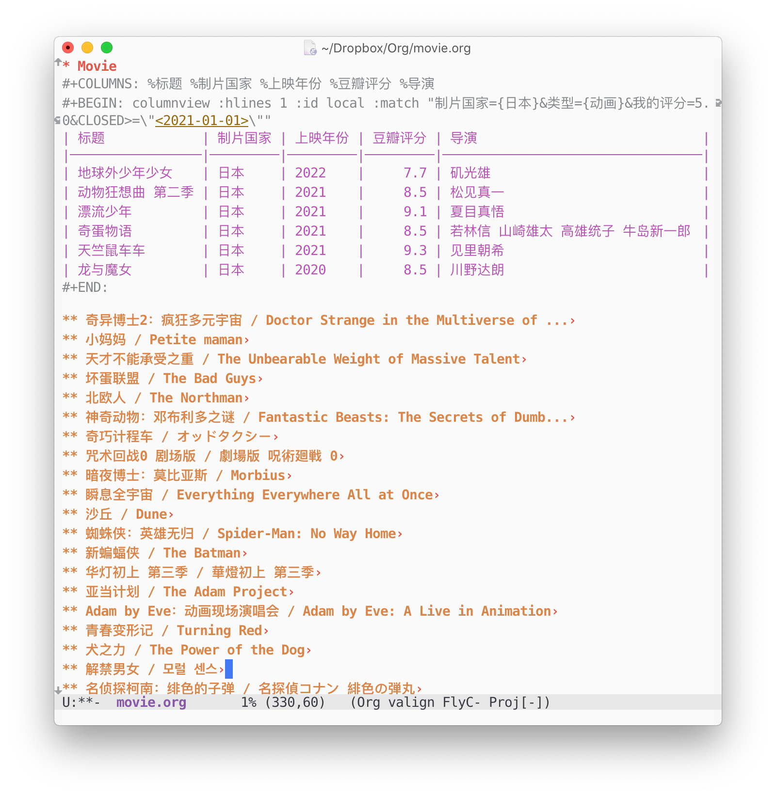
Figure 11: 最终效果长这样
-
导出我的书影音
因为懒得造轮子，我便找了几个导出方案。一个是基于Chrome扩展的豆坟，另一个则是这位博主写的使用Greasemonkey的脚本。这两个都是基于我看，我读，我听这些页面导出的，好处是快捷且不容易被当成机器人被封禁，坏处是没有 imdb 和 isbn 等条目信息，无法获得更详尽的资料。我也尝试了爬虫，但是没几页 ip 就被封了。我最大的意见是这两个导出方案缺少电影，电视剧，动漫，综艺的分类。
-
转换为 org file
我将这两个方案得到的文件进行交叉比对后，就可以转换为 org 文件了。这一步我用了 pandas，先生成一个和 org properties 格式对应的列（通过 来换行），然后再将该列输出为后缀为 org 的 csv，最后使用通配符将需要双引号删除即可。我的 org 文件大概长这样：
** 小妈妈 / Petite maman <-这里是脚本得到的标题 CLOSED: [2022-05-09 11:37:52] <-这里是豆坟导出的创建时间 :PROPERTIES: :标题: 小妈妈 :原名: Petite maman :上映年份: 2021 :上映日期: 2021-03-03 :制片国家: 法国 <-注意脚本得到的制片国家是错误的，使用豆坟即可 :类型: 剧情 奇幻 :导演: 瑟琳·席安玛 :主演: 约瑟芬·桑兹 加布里埃尔·桑兹 :豆瓣链接: https://movie.douban.com/subject/35225859/ :豆瓣评分: 7.9 :我的评分: 5.0 :END:
-
快速查询与管理
使用 Org-mode 管理的最大优势就是作为纯文本，却可以使用sparse tree来筛选特定条目或者通过column view方便地将内容转为表格进行查询和函数运算。
我使用
C-c /开启 sparse tree 后，我可以方便地通过p筛选特定 property，也可以通过m去筛选特定 match pattern。比如我想筛选日本动画，即可打C-c / m后在 mini buffer 输入制片国家={日本}&类型={动画}，这个 org 文件中所有日本动画便会高亮，而不满足此条件的条目则会暂时隐藏。我也可以使用
C-c C-x C-c开启 column view，方便地进行各种操作。默认的 column view 是和项目完成度相关的，在书影音的管理上用处不大。所以我需要先定义#+COLUMNS或是COLUMNSproperty，然后开启 column view 后，便会显示相应的列。#+COLUMNS: %标题 %制片国家 %上映年份 %豆瓣评分 %导演Column view 其实就是改变了 buffer 的显示方式，但是有的时候我想将筛选的结果分享。这时候就可以和 Orgmode 的动态模块 dynamic blocks 相结合了。比如说我想找到所有 2021 年后我看完之后非常喜欢而打了 5 分的日本动漫，就可以在文件中写以下的动态模块。
#+BEGIN: columnview :hlines 1 :id local :match "制片国家={日本}&类型={动画}&我的评分=5.0&CLOSED>=\"<2021-01-01>\"" #+END:然后，在动态模块上
C-c C-c，Org-mode 就会自动帮我找到所有满足条件的条目，并以纯文本的形式填充这个动态模块，非常方便。不过 column view 相比 sparse tree，在速度上明显要慢很多。相比 sparse tree 的即时性，column view 在我八百多条记录里要找大概两三秒才能生成最后的结果。#+BEGIN: columnview :hlines 1 :id local :match "制片国家={日本}&类型={动画}&我的评分=5.0&CLOSED>=\"<2021-01-01>\"" | 标题 | 制片国家 | 上映年份 | 豆瓣评分 | 导演 | |-------------------+---------+------+--------------+-------------------------------------| | 地球外少年少女 | 日本 | 2022 | 7.7 | 矶光雄 | | 动物狂想曲 第二季 | 日本 | 2021 | 8.5 | 松见真一 | | 漂流少年 | 日本 | 2021 | 9.1 | 夏目真悟 | | 奇蛋物语 | 日本 | 2021 | 8.5 | 若林信 山崎雄太 高雄统子 牛岛新一郎 | | 天竺鼠车车 | 日本 | 2021 | 9.3 | 见里朝希 | | 龙与魔女 | 日本 | 2020 | 8.5 | 川野达朗 | #+END:
-
添加新条目
最后一个问题就是如何更新条目了。由于是纯文本，我可以直接手打来添加条目，这样也可以增加一些豆瓣缺少的信息，比如系列构成，出品公司等。我也打算写一个简单的脚本来从豆瓣，IMDB，Bangumi 上自动获取信息加入 org 文件中。
DONE 墨水屏阅读器小横评 Kindle墨水屏
我是 Kindle 的老用户了，从当初给 Kindle DXG 越狱装中文字体，到在 deal day 买了好几个几十刀的 Kindle paperwhite，再到收了现在用了好几年的 Kindle Oasis 2，也有十年时光了。由于 Kindle 在 DXG 和 Scribe 之间的十年没有出过大屏墨水屏，为了读 paper，我又入了 Sony DPT-RP1。而在亚麻下架中文区电子书的服务后，Kindle 唯一看正版电子书的渠道就变成了不太好用的微信读书网页版，我便又开始 shopping 专门用来看微信读书的墨水屏阅读器了。兔姐姐恰好刚买了文石的 leaf 2，我便来拿这些设备做一个小小的横评吧。
-
Kindle Oasis
显示效果：⭐️⭐️⭐️⭐️⭐️ 手感：⭐️⭐️⭐️⭐️⭐️ 系统：⭐️⭐️⭐️
首先是 Kindle 系列。我觉得 Kindle 的显示效果和手感都是最好的，尤其是 Kindle Oasis，可以说是行业领头了。Kindle Oasis 采用的 E-ink 屏幕不是最潮最新的，但是依然是最白的，残影也几乎看不到。而 Oasis 的不对称外形虽然在发售之初被大家吐槽，但是单手持握感确实不错，也感觉比明明更轻的文石 Leaf2 要轻巧一些。
由于是封闭系统，Kindle 运行起来几乎没有卡顿，待机时间也很长。即使我用 Kindle 看了很多年体积不小的漫画，我也没有感受到系统有变得卡一些。而且美国的图书馆一般都可以借 Kindle 版电子书，可以直接推送到 Kindle 上，非常方便。但是对于我这种中文用户，以前亚麻中国还卖书的时候，分区切换时会需要重新推送，而现在亚麻退出了中文电子书市场，Kindle 就只能用来看盗版书和微信读书网页版了。
其实我觉得亚麻完全可以和腾讯携手，推出一个更好用的微信读书网页版，或者是微信读书版 Kindle，这会是一个双赢的举动：腾讯可以将 Kindle 用户吸引来订阅微信读书，而亚麻也可以在国内继续售卖 Kindle，如果这台机器并不是亏本在卖的话。
另外，Kindle 在去年年初的一次系统更新做了大幅改动，调整文件夹的时候实体按键无法使用，而列表形式也无法显示文件夹，喜欢看漫画的我则只能眯着眼睛在漫画封面的缩略图中辨认这究竟是 vol 几。微信读书网页版也是槽点颇多，章节之间需要加载十数秒，也无法使用实体按键翻页。虽然不是亚麻的问题，但是极大地影响了我使用 Kindle 看书的热情。这次系统更新也是引起了很多老用户的不满，然而并没有什么用。
虽然有这些问题，Kindle Oasis 仍是墨水屏阅读器中的头把交椅。如果常看英文书，或是手头有着大量电子书存货，我还是会推荐 Kindle Oasis。
-
文石 Leaf 2
显示效果：⭐️⭐️⭐️ 手感：⭐️⭐️⭐️⭐️ 系统：⭐️⭐️⭐️⭐️
我只在兔姐姐家粗浅地试用了文石 Leaf 2，给我的感觉是其虽然价格偏高，如果有使用微信读书这种明确需求，还是可以的。我还是能感觉到文石 Leaf 2 的做工没有 Kindle Oasis 好，外壳有一些松垮。而文石的显示效果比之 Kindle 也是差矣，总能感觉到行间有一些残影。
我另外还找了一些文石 Leaf 2 的直接竞品掌阅 Ocean 2 的评测，感觉虽然它是半开放系统，使用微信读书的体验并没有比文石好。由于在美国文石 Leaf 2 价格更低更容易买到，如果有在线看书的需求，我会更推荐文石 Leaf 2。
值得注意的是，文石 Leaf 2 的黑白两款有比较大的差异，黑色款是纯平玻璃屏，而白色款更像是以前的 Kindle，屏幕是略凹陷进去的，重量上也有 15g 的差异。我看 Goodread 的评测说是白色款显示更清晰眩光也少但容易卡灰，黑色款的背光更均匀，买的时候还是得根据自己的需求选择颜色。
-
Sony DPT-RP1
显示效果：⭐️⭐️⭐️⭐️⭐️ 手感：⭐️⭐️⭐️⭐️⭐️ 系统：⭐️⭐️⭐️⭐️
我还有一个 Sony 已经停产的黑科技，13.3"大屏的 DPT-RP1。说是黑科技，是因为明明它的分辨率只有 207 ppi，但是显示效果却异常得好，是这些墨水屏中最像纸的。DPT-RP1 的手感也非常好，虽然有 300 多 g，但是拿起来还是感觉非常轻薄。而且 DPT-RP1 的系统也很不错，看 paper 看教材打开速度非常快，跳转也很方便，绝对是看 paper 的利器。
-
参数对比
本来我想偷懒，用 chatgpt 做一个参数对比表格的，结果它死活出不来正确的信息，看来 Google Bard 也未必是独烂烂。以下是我手打的参数对比。
Kindle Oasis 3 文石 Leaf 2 白色 文石 Leaf 2 黑色 掌阅 Ocean2 屏幕 7” Carta HD 7" Carta 1200 7" Carta 1200 7" Carta 1200 表屏 纯平 纯平 非纯平 纯平 分辨率 300 ppi 300 ppi 300 ppi 300 ppi 灰度 16 级 16 级 16 级 16 级 背光 25 LEDs 冷暖光 冷暖光 冷暖光 36 LED 冷暖光 存储空间 8/32 GB 32 GB 32 GB 32 GB 处理器 Freescale IMX.7 双核 高通四核 2.0GHz 高通四核 2.0GHz 双核 2.0GHz 内存 512MB 2GB 2GB 2GB 系统 Linux Android 11 Android 11 Android 10 通讯 Wifi + 蓝牙 4.0+移动网络 Wifi + 蓝牙 5.0 Wifi + 蓝牙 5.0 Wifi + 蓝牙 5.0 电池 1300 mAh 2000 mAh 2000 mAh 1800mAh 防水 IPX8 无 无 无 接口 Micro-USB USB-C USB-C USB-C 重量 188g 170g 185g 170g 北美定价 $249 $199 $199 $219+shipping
DONE 跟风 AI 炼图 AI
Stable Diffusion 发布以来，逼真的画风就让大家感慨画师的饭碗是不是要被抢了。当时女票用 Stable Diffusion 重绘了几张狗子的照片，但我总觉得用别人的搭好的服务会有隐私隐患。最近 ControlNet 出来后，当时被大家吐槽的六指问题似乎得到了解决，于是我这两天就尝试着在 Colab 上搭了 Stable Diffusion 炼炼图玩。 – 为什么不用亚麻的 Sagemaker？当然是因为 colab 免费易用 要支持女票工作咯。
AI 炼图得用 GPU，所以打开 Colab 后第一件事就是要将 runtime type 改为 GPU。然后可以确认 GPU 实例型号。
!nvidia-smi -L
然后便是要安装 conda 以及配置环境。由于我并不关心安装的细节，所以用 %%capture 来避免不必要的输出显示。
%%capture
#@markdown ## Install colab related conda
import sys
!wget https://repo.anaconda.com/miniconda/Miniconda3-latest-Linux-x86_64.sh
!chmod +x Miniconda3-latest-Linux-x86_64.sh
!bash ./Miniconda3-latest-Linux-x86_64.sh -b -f -p /usr/local
sys.path.append('/usr/local/lib/python3.7/site-packages/')
!rm Miniconda3-latest-Linux-x86_64.sh
#@markdown ## Download the stable-diffusion webui repo
%cd /content
!git clone https://github.com/AUTOMATIC1111/stable-diffusion-webui
%cd stable-diffusion-webui
#@markdown ## Set up python environment
!conda env create -f environment-wsl2.yaml
!conda activate automatic
对于 Stable Diffusion 来说，配置好环境后，可以一键安装。
!python launch.py
不过我发现这时候虽然可以在本地启动，使用 --share 却不能启动 gradio.live。所以我会使用单独的语句启动，这个时候还可以加上 --auth 参数来保护我的 gradio.live 不被外人使用。
#@markdown # Launch
username="" #@param {type:"string"}
password="" #@param {type:"string"}
!python webui.py --share --gradio-auth '{username}':'{password}'
这个时候打开相应的 gradio.live 网址，就可以开始调教 AI 了。但是这个时候 AI 画出的画要不就是特别像真人，要不就是像儿童画，都不太好看。此时，就要祭出大家放在 huggingface 上 调教好的模型并存在 models/ 文件夹内，并通过 ckpt 参数指定模型，或直接在 gradio 中选定模型。比如我想画二次元小姐姐，我就可以下一个 trinart 模型来炼图。
%cd models
!git lfs install
!git clone https://huggingface.co/naclbit/trinart_stable_diffusion_v2
%cd ..
!python webui.py --share --ckpt ./models/trinart_stable_diffusion_v2/trinart2_step115000.ckpt
而对于 ControlNet，则可已 Stable Diffusion 插件的形式使用。首先，在启动 gradio 的时候要加上 --enable-insecure-extension-access 参数；然后在 Extensions 页选择 Install from URL 并输入 https://github.com/Mikubill/sd-webui-controlnet 。安装后 Reload Web UI 即可。
这样基本上就可以薅 Colab 的羊毛来炼图了。我感觉炼图的时候，选择 model 和 prompt 是两个大坑，不是简单尝试就能搞定的。我抄了一些常用的 negative prompt 列在文末，对于剩下的，等我哪天有点心得了，就再来就这一部分水篇博客吧。
negative prompt: lowres, bad anatomy, bad hands, text, error, missing fingers, missing arms, long neck, humpbacked, extra digit, fewer digits, cropped, worst quality, low quality, normal quality, jpeg artifacts, signature, watermark, username, blurry
DONE 从 LLM 到 AGI，AI 时代我们该何去何从
去年七月我去体验了一下 NAACL，对于一个外行人来说，听听报告看看海报，只留下 few-shot 和 zero-shot 还挺热门这一印象，仿佛最新的 NLP 技术也不过如此。没想到这还没到一年，AI 新闻便从月更变成了日更，接二连三地轰炸着新闻头条（为 2023 年 AI Index 的作者捏一把汗）。而随着 GPT-4 联了网（POI 警告），还没有任何准备的我们就进入了 AI 时代。
我先盘点一下过去一年都发生了什么吧。（也许是因为我还没用上联网的 ChatGPT，GPT4 偷懒大法在此失败了）
- 2022-07-12: Midjourney 开始公测 🔗
- 2022-07-20: OpenAI DALL-E 开始公测 🔗
- 2022-08-10: Stability AI 以开源形式发布 Stable Diffusion 🔗
- 2022-11-24: Stability AI 以开源形式发布 Stable Diffusion 2.0 🔗
- 2022-11-30: OpenAI 发布以 GPT-3.5 为后端的 ChatGPT，开启指令引导的流畅文本生成范式 🔗
- 2023-02-06: 谷歌公布 Bard 以挑战 ChatGPT 🔗
- 2023-02-07: 微软发布 New Bing，重新定义搜索引擎 🔗
- 2023-02-22: 微软公布手机版 Bing 🔗
- 2023-02-24: Meta 发布 LLaMA 并开放代码，堪称 ChatGPT 平替 🔗
- 2023-03-01: OpenAI 开放 ChatGPT & Whisper API 🔗
- 2023-03-06: 谷歌发布通用语言识别模型 USM 🔗
- 2023-03-10: 谷歌发布 PaLM-E 🔗
- 2023-03-14: 谷歌开放 PaLM API 🔗
- 2023-03-14: OpenAI 发布 GPT-4，较 GPT3.5 实现飞跃式提升 🔗
- 2023-03-14: Anthropic 发布 Claude 🔗
- 2023-03-15: 百度发布文心一言 🔗
- 2023-03-15: Midjourney 发布 Midjourney v5 🔗
- 2023-03-16: 微软发布 Microsoft 365 Copilot ，登陆微软全家桶🔗
- 2023-03-17: Stability AI 发布 Stable Diffusion Reimagine 🔗
- 2023-03-21: 谷歌 Bard 开始公测 🔗
- 2023-03-21: 微软发布 Bing Image Creator，接入 DALL-E 生成图像 🔗
- 2023-03-21: Adobe 发布 Adobe Firefly 🔗
- 2023-03-21: NVIDIA 与谷歌，微软，甲骨文，Adobe 于 AI 领域展开深度合作
- 2023-03-23: Github 发布 Copilot X，接入 GPT4 🔗
- 2023-03-23: ChatGPT 联网，开放第三方插件 🔗
总结一下，过去一年，随着 ChatGPT 的发布与 Stable Diffusion 的开源， 文本生成与图片生成产品蓬勃发展。三月以来，AI 的曝光率猛增，这两周甚至是每天都有大新闻。说实话，如果我说我不焦虑，这是不可能的。我对于这一年的热门技术，都是只闻其名，不解其意。我虽然也有去凑热闹通过新闻或者试用去了解这些技术都是做什么的，却不知道这些技术是如何发展的，也不知道我该如何应用这些技术，未来我能做些什么才不会被时代淘汰。最近有两篇论文，就直接讨论了现有 AI 模型的通用性，其对人类工作的影响，与 AGI 时代的到来，更是加剧了我的焦虑情绪，于是我便先从这两篇论文谈起吧。
第一篇是 OpenAI 与沃顿商学院教授合作的对于 GPT 模型对美国劳工市场的潜在影响分析 (🔗)。这篇经济学论文讨论了虽然由于可信度、偏见、隐私等原因现有 GPT 模型并不能直接取代人类工作，其在一些专业领域已经可以成为人类很好的助手，并有极大的潜力跨越性能门槛，对劳工市场产生威胁。文章定义了曝露度 (exposure)，即 GPT 是否会减少 50% 工作量，来作为评估大型语言模型 (LLM) 尤其是 GPT 是否会对工作产生影响的参数。文章将曝露度细分为无曝露 (E0)，基于 ChatGPT 的直接曝露 (E1) 与基于 LLM 软件应用的间接曝露 (E2) 三个类目，并针对 E1 与 E2 的不同权重给出 α (E1), β (E1+0.5E2), γ (E1+E2)三个度量以衡量曝露度的上下限。文章发现对于美国劳工部 (BLS) 从准入资格的角度划分的五大类职业 (job zone) 来说，越是培训时间长学历要求高的高精尖职业，曝露度也越高。其中对于 job zone 4 和 5 的工种（比如码农和律师等），平均来说分别会有 34.5% 和 26.5% 的工作者会受到 β exposure，也就是 ChatGPT 及其配套应用可以降低 50% 的工作量。值得一提的是，文章让人和 GPT4 分别对曝露程度进行评估，1016 个职业中，人类将数学家，报税员，作家等 15 个职业标记为完全曝露 (fully exposed)，而 GPT4 则标记了 86 个。
这篇论文一经发布，便被各种大小媒体自媒体取了“AI 会优先取代脑力工作者”这种耸人听闻的标题而广泛报道。而实际上，首先，论文讨论的是 GPT 是否会减少工作量，高曝露度下，GPT 作为高效的助手，可能会造成相应岗位的减少，但由于可信度等因素，最终还是需要人去确认执行，GPT 无法完全取代这个岗位。其次，曝露度只是针对语言模型而言，未必是评判职业可取代性的唯一标准，比如洗碗工虽然曝露度低，但可能在很多地方早就被不需要 AI 的洗碗机取代了。第三，如同论文在 Limitations 里一笔带过的那样，这篇论文并没有考虑到各种职业在理论描述与现实操作之间的差异，比如说码农并不是只需要写码，也需要沟通协作来灵活解决复杂的系统问题。第四，对于脑力工作来说，我们并非只会用到编程写作这类具有高曝露性的技能，文章中也明确表示 science, critical thinking, learning strategies, monitoring（hmm，我其实不太明白为什么 monitoring 也是负相关）这类与曝露度有负相关性的技能是不太可能受到现有 GPT 模型影响的。而这些技能，才是脑力工作者的立身之本。当然，从 GPT3.5 到 GPT4 的应试分数的显著改善来看，GPT 模型也许很快就会跨越这些门槛，影响到这些技能，但至少从现阶段来看，这些技能还是可以将我们与 AI 区别开来的。（似乎缓解了一点我的焦虑）
注：我尝试用 chatPDF 来解析这篇文章并与其对话，但好像得到的都是些车轱辘话，不是很有价值。（好像更不焦虑了）
Q: 这篇文章是否说明 AI 会优先取代脑力工作者？
A: 从这篇文章中提供的信息来看，并没有明确说明在工作中使用人工智能会优先取代脑力工作者。文章探讨了语言模型和机器学习对职业和工作的影响，但并没有提到这些技术和工具能够在多大程度上取代人类的脑力劳动。文章中提到的职业结构和机器学习技术也可能会因为各种复杂的因素而在不同程度上得到受挫或者促进。需要注意的是，文章中提供的一些数据和信息，可以用作参考，但并不是足以证明 AI 是否会优先取代脑力工作者的充分证据。
第二篇则是微软研究院 150 页的长文 (🔗)，这篇论文从现象学的 (phenomological) 角度出发，列举了大量的案例，以编程、数学、与世界与人类的交互来讨论 GPT4 已经不是简单的语言模型，而是在深度与广度上与人类能力相当的通用人工智能 (AGI) 的雏形。而这一断言又刺激了我刚缓解的焦虑情绪——这已经不是我会不会因为 AI 丢工作的问题了，这是科幻小说会不会成为现实，技术奇点会不会不日到来，人会不会被 AI 统治的问题（Skynet, Machine, Sibyl 在向我们招手）。
文章借用 1994 年 52 位心理学家对智力的定义，将通用人工智能定义为具有归因，计划，解决问题，抽象思维，理解复杂想法，快速学习和学习经验能力的系统 (a very general mental capability that, among other things, involves the ability to reason, plan, solve problems, think abstractly, comprehend complex ideas, learn quickly and learn from experience)。文章设计了一系列实验来论证 GPT4 是否具有这些能力，比如通过总结，翻译，回答问题来展示 GPT4 具有理解复杂想法的能力；通过编程（写代码，读代码）与解数学题来展示归因和抽象思维能力；通过做任务玩游戏这类与世界的交互来展示计划，解决问题，快速学习和学习经验这些能力，且能够使用工具；通过与人的交互来展示 GPT4 能够理解人类且具有常识，达到了与人类相当的程度。
当然，现阶段的 GPT4 也有一些不足。在解决数学问题时，GPT4 展现出了创造性思维能力与一定的解题熟练度（相信接入 Wolfram 后这一点可以得到更大的提升），却缺少批判性思维能力。在计划性上，GPT4 展现出快速思考的能力，但在一些需要全局思考的问题上表现不太好，缺乏长期记忆，持续学习能力，也不会有 Eureka 时刻。我觉得这点可能与现有模型的记忆与其他人为限制有关，ChatGPT 最近将一次对话的次数限制在十几个来回上，恐怕也是担心 AI 懂得太多后不受控制。而最大的问题，则是现有模型缺乏校准能力，回答经常真假参半，模型不知道自己说的正确的还是错误的信息，会误导使用者。也许我们可以让模型给出较为一致的解释来证实过程的准确性，但是这样还是不能保证模型的回答是完全准确的。GPT4 甚至还会继承人类的偏见，这样的模型如果不加监管与提示，可能会对社会造成严重的破坏。这么看来，除非突然出现一个技术狂人（好像也不是没有）直接让这个不完备的模型不受监管地进化，离 AI 统治我们，应该还有个几年吧……
这篇论文试图从各种方面展示 GPT4 的能力，但没有讨论 GPT4 为什么具有这些能力，没有阐述为什么这些实验能够展示这些能力，也没有展示作者是如何选择一个较为平衡没有偏向性的问题集的（文章中也承认诸如理解讽刺幽默的不少方面都未经测试），所以文章的结论，GPT4 是 AGI 的雏形，有多大的可信度，还是值得商榷的。不过由于有着大量实例，这篇长文可以当成一个 prompt 学习手册来使用，比如可以先 warmup 一下，教 ChatGPT 可以通过查询一定资料来回答问题。不过我实际应用时发现有一些方法不管用（比如教它上网搜索），不知道是我的打开方式不对，还是现有版本的 ChatGPT 加了什么限制。
静下心来，我觉得对于一个外行人来说，此时应该做的，一是了解 AI 是什么，大型语言模型 (LLM)，或者说自然语言处理 (NLP)，是如何发展到现在这个阶段的；二则是积极试用现有的产品，善用 AI 来提升自己的工作效率。以后有时间的话，我应该会再写两篇文章来聊一下这两点。
DONE Orgmode 的优化
最近从 Prime Day 解放，我终于又有时间捣鼓我的 Orgmode 了。其实缘起是同事给我看了他直接用 vscode ssh 到 cloud desktop 上写码运行 debug 的流程，让我很是心动。但是作为一个 Emacs 资深病患，我的第一反应是能不能用 Emacs 实现这套流程。不过我一直没怎么搞明白如何不卡顿地使用 Tramp，Emacs 在运行 Jupyter Notebook 上也需要更多的设置，就此作罢。
不过既然起了这个钻研 Orgmode 的头，我不经又想起了几个让我很纠结的问题。
-
Latex 公式
首先是 Latex 的显示。Orgmode 中，可以使用几种方式显示 latex 公式，分别是
#+name: eq:a \begin{equation} x=\sqrt{b} \end{equation} If $a^2=b$ and \( b=2 \), then the solution must be either $$ a=+\sqrt{2} $$ or \[ a=-\sqrt{2} \].效果如下：
If and , then the solution must be either or .
而要切换公式显示，则需要
C-c C-x C-l。我并不擅长记这些快捷键，所以经常想预览的时候就忘记了。Kitchin 曾给出一个采用鼠标切换的方案，但是年久失修，已经不能用了。今天搜了一下，已经有org-fragtog可以完成鼠标切换了。解决了切换的问题，下一个则是自动编号的问题。Kitchin 曾给出一个方案，但是同样年久失修。Youtube 上有人秀出了他的自动编号方案，然而没有代码，也就相当于没有。唯一可行的方案是在 Stackoverflow 上利用 tag 的，略有些复杂。首先定义一个 function：
(Defun update-eqn-numbers-in-section () (interactive) (let ((beg (if (org-before-first-heading-p) (point-min) (save-excursion (org-with-limited-levels (org-back-to-heading t) (point))))) (end (org-with-limited-levels (org-entry-end-position))) (count 1)) (save-excursion (goto-char beg) (while (re-search-forward "\\tag{\\([0-9]+\\)}" end t) (replace-match (format "%d" count) nil nil nil 1) (setq count (1+ count))))))然后给公式加上 tag。
\begin{equation} x=\sqrt{b}\tag{1} \end{equation}然后运行这个 function 就可以自动编号了。
效果如下：
Latex 公式在 retina 屏幕下会非常的糊，一是因为它会先转换成图片格式再显示，也是因为 Emacs 在 Mac 上有 known blurry issue。Stackoverflow 中有几种解决方案，有说将
org-preview-latex-default-process从 dvipng 换成 dvisvgm 的，有生成 2 倍的图片再缩放显示的。我操作下来感觉还是 emacs-plus 的问题，用 emacs-mac build 了之后就非常清晰了，但是随之而来的就是 Emacs 肉眼可见变得卡顿了，关掉 flycheck 后会一点帮助，但还是比 emacs-plus 卡一点。可能我要体验一段时间才知道这是不是我可以忍受的范围。
-
优化显示效果的 minor mode 总结
- org-indent: 自动给各级标题缩排
- org-num: 自动给各级标题编号
- org-bars (git): 在 org-indent 的基础上给 org-mode 增加树状线和标题展开收缩状态标。不过这和我的标签对齐设置有一点冲突，我个人觉得 org-indent 已经够用了。
- org-fragtog (git): 可以用鼠标来切换 Latex 公式显示与否。
- Valign (git): 可以对齐不等宽字符和中英文，而且加上
valign-fancy-bar后表格也会更好看。(require-package 'valign) (use-package valign :config (setq valign-fancy-bar t) (add-hook 'org-mode-hook #'valign-mode) )
-
其他优化
样式：orgmode 默认不会将带引号的词渲染成代码或等字样式，所以需要对
org-emphasis-regexp-components这个 list 进行魔改。这个 list 由渲染字段前后允许字符，禁止的边界字符，允许渲染的字符以及允许渲染的行数组成，而我的设置如下：(setcar (nthcdr 2 org-emphasis-regexp-components) " \t\r\n,\"") (setcar (nthcdr 4 org-emphasis-regexp-components) 1) (org-set-emph-re 'org-emphasis-regexp-components org-emphasis-regexp-components)代码框：我一般使用以下设置来使代码框中的代码自动排版：
(setq org-src-fontify-natively t org-src-tab-acts-natively t org-src-preserve-indentation nil org-hide-block-startup t org-confirm-babel-evaluate nil org-edit-src-content-indentation 0 org-hide-leading-stars nil)中英文自动空格：
(require-package 'pangu-spacing) (use-package pangu-spacing :config (global-pangu-spacing-mode 1) (setq pangu-spacing-real-insert-separtor t) )显示标题收缩状态
(setq org-ellipsis "›")
DONE Kindle 装微信读书从入门到放弃
由于我在海外，实体书空运价高，而海运通常需要等上一两个月，所以阅读电子书成了我的刚需。Kindle 退出中国市场后，正版电子书的来源便只剩微信读书了。但是 Kindle 上只能使用网页版微信读书，每章节之间都需要联网载入，体验非常不好。而 Kindle 退出中国市场退得非常激烈，一联网就会删除我存档的中文电子书，导致我的 Kindle 只能开飞行模式，更用不了网页版微信读书了。前几年，我便买了文石的 Leaf 2 作为微信读书启动器 （详见我之前的文章）。适应了两年半，总觉得还是没那么舒服，一方面是文石的按键实在拉胯，按久了费手，背板也不舒适；另一方面也是文石的显示效果始终没办法调到 Kindle 那样舒适，文字边缘总有一些轻微的锯齿，光源也没有 Kindle 那么好。如果是有电子档的旧书，我还是会更倾向于用 Oasis 2 来阅读。
每年总有这么几个月，我会难以忍受文石，想要看看有没有更好的微信读书启动器替代品。我的要求很简单，因为我已经有 Oasis 2 用来看漫画（当然我还是希望能有个更轻巧的大屏 Kindle，现在的 Kindle Scribe 虽然屏幕大但是太过笨重），也有 DPT-RP1 用来看 pdf，我平时也没有记笔记的习惯，所以我只是想要一个不卡顿，显示效果好，实体按键舒适的阅读器。但是每次新品出来，我总是激动地看评测，却每每败兴而归。
长周末，我又刷着小红书，很多评论里提到给 Kindle 装安卓系统后可以看微信读书，弄得我心痒痒的。刚好手头有一个闲置的 Paperwhite 2 ，便尝试起来。
-
越狱
首先是越狱，书伴有一个越狱专题，里面有适合各种 Kindle 型号以及固件版本的越狱方法。我的旧 Kindle 型号是 Paperwhite 2，版本是 5.12.2，所以我没有冒着 Kindle 联网自动升级导致 JB Hotfix 失效的风险采用最新的 WinterBreak 方法，而是采用 tryol 基于的 KindleDrip 漏洞的方法（原文连接）。这个步骤比较简单，就是将越狱文件解压到 Kindle 根目录后，在体验版网页浏览器中访问</mnt/us/kindlebreak.html，Kindle> 重启后越狱就完成了，会留下一个日志文件 kindlebreak_log.txt。
接下来就是安装 NiLuJe 的JB hotfix，这是一个热修复补丁，但是在 5.15.1.1 之后可能会失效，这也是不轻易升级的原因之一。步骤是将文件解压到 Kindle 根目录后，菜单-设置-菜单-更新您的 Kindle，如果显示成功，就说明生效了。
越狱后很多文章会提到要安装 MRPI 和 KUAL，前者是插件安装器，后者是插件启动器。我试了用 CrackDroid 里的 extension，也试了 NiLuJe 的版本，但是都卡在启动页，所以并不清楚这一步有没有成功，也不清楚是不是必须的。
-
安卓和微信读书
这一步开始需要换成 Windows 电脑。安装安卓需要装一些 tool，Snoop05 有一个 15s ABD installer，已经更新到 v2。由于 CrackDroid 系统使用的是Snoop05的15 seconds ADB Installer 1.4.3 ，我便装了这个版本。一个 catch 是需要新建 C:/User/用户名/Desktop 文件夹且用管理员身份打开程序，否则会因找不到路径而失败
安卓系统是一个国内大神 Ygjsz 做的，适用于 Kindle7/8, KPW2/3, Voyage 和 Oasis 1 代。作者曾经在 B 站放过教程，但是后来因为一些原因删除了教程，取消下载。我在 XDA forum 上找到一篇 Nicknackpaddywack101 介绍 CrackDroid 的帖子，其中有一条回复提到 Kdroid.club 有当时作者发布的各版的安卓系统以及中文教程，看起来版本比 XDA 附件更新，我便去试了，但是安装完需要去淘宝买激活码。后来我安装了 XDA 帖子附件的旧版，就不需要激活码了。步骤就是用管理员身份运行 Start.bat，然后选 6 安装成安卓系统就可以了。
微信读书需要使用墨水屏 1.5.2 版，我发现需要取消 USB 进入 Debug 模式，才能使用 MTP 方式连到 Windows 电脑上传输文件。将文件放在 Downloads 之后，用文件浏览器打开就可以安装了。安装之后重启，便可以扫码登录了。
-
放弃的原因
但这一篇博文的标题从入门到放弃，彰显了这一晚上的折腾都是徒劳。Kindle 的成功，并不只是硬件质量上超过这些国产电纸书，更是因为软件层面上的优化。CrackDroid 在系统层面上并没有对显示效果的优化，300 ppi 的 Paperwhite 硬是给了我之前的 DXG 167 ppi 的效果。进入微信读书后甚至连背光都不能调整。也许可以通过更深层的调教来实现，但是并没有直接的选项来调控。而更大的问题来自于微信读书，非常古早的 1.5.2 版是能支持的最新版号。这个版本更是问题多多，不能调行距，字重也很难调到一个合适值。更别提 Kindle 的小内存运行微信读书非常卡顿，虽然不影响看书，但是在打开一本新书时需要等很久。而且我也不适应触屏翻页，也没有 CrackDroid 支持的 Oasis 1 和 Voyage。这次折腾，只能以遗憾告终。
可能唯一的收获，是觉得手上的文石虽然难以忍受，但还是愿意继续将就了。我一直觉得 Kindle 退出中国市场非常可惜，明明中国市场这么大，Kindle 在中国的口碑也很好，直到现在退出了几年后还有很多人买来看书。中国的购买力也还行，不然文石掌阅汉王这些电纸书也不会每个季度都推出新品了。盗版泛滥固然是个问题，但是 PM 在本地化上没有做足功课可能也是原因之一。国内买书并不贵，够买电子书的优势可能没有那么明显。但是订阅已经初成气候，微信读书还是有一点市场，很多网文连载平台也很火热，如果 Kindle 能和微信或者已成气候的网文平台合作，做一些类似咪咕版的改动，可能就不会这样惨淡收场了。
Kindle 应该算是亚麻比较重要的一个产品，总部大楼 Day 1 入口便是一面展示各代 Kindle 的墙。还是挺希望亚麻能够坚持 customer obession ，不会再出现像是退出中国市场，让中国的 Kindle 顾客只能通过盗版来延续产品生命的事情吧。
Pokemon Sleep 量化设计
最近我沉迷 Pokemon Sleep，每天睡一觉就能拿到 pokemon 非常开心。但是这个游戏资源非常匮乏，在不想氪金的情况下，一周可能只能抓三五只 pokemon，在挑选 pokemon 组队、进化时就非常犯愁。我看了很多攻略，也用上了 pokemon 评级小程序，但是感觉很多时候只能依靠经验。 v
报税
2023 Tax
- W2-wage 147628.94 + 65543.23 = 213172.17
- tax withheld 28461.1 + 11565.85 = 40026.95
- social security wage 158975.43 + 1224.57 = 160200
- social security withheld 9856.48 + 75.92 = 9932.4
- medicare wage 158975.43 + 73738.23 = 232713.66
- medicare withheld 2305.14 + 1364.63 = 3669.77
- AGI: 211384
- taxable income: 197534
- tax 42014
turbotax (not counting backdoor IRA)
- total income: 220200
- deductions: 13850
- taxable income: 206350
- tax 44850
- other taxes 350 credits -17
- your tax 45183
- tax paid 40322
Traditional IRA
- 2021-02-16 6000 <- 2020
- 2021-05-10 6000 <- 2021
- 2022-12-22 6000 <- 2022
- 2024-04-11 6500 <- 2023
Roth IRA
- 2021-05-10 6000.12
- 2021-07-20 6000.10
- 2023-01-03 6005.71
- 2024-04-?? 6500
8606
| 2020 | 2021 | 2022 | 2023 | |
|---|---|---|---|---|
| 1 | 6000 | 6000 | 6000 | 6500 |
| 2 | 6000 | 6000 | ||
| 3 | 6000 | 12000 | 6000 | 12500 |
| 4 | 6000 | 6500 | ||
| 5 | 12000 | 6000 | ||
| 8 | 12000 | 6005 | ||
| 9 | 12000 | 6005 | ||
| 11 | 12000 | 6005 | ||
| 13 | 12000 | 6005 | ||
| 14 | 6000 | 6000 | 6500 | |
| 16 | 12000 | 6005 | ||
| 17 | 12000 | 6005 | ||
| 18 | 0 | 0 | 0 | 0 |
1: contribution to traditional IRA for 2020 through April 15, 2021 2: basis in traditional IRA 4: made from Jan 1, 2021 through April 15, 2021 8: convert to Roth in 2020 13: nontaxable portion 14: total basis 18: taxable amount
- e-file choices
- use TurboTax to get a rough number
- federal
- state CA CalFile, MA masstaxconnect, NY
- amend 1040x
- tax treaty, 8833
- 1040NR+8233, might already exempt from 1042s
- 1040+8833
- irs, 8606 turbox tax confused
- standard vs itemized
- stock, turbotax to get numbers and group
- crypto, Koinly/CoinTracker transaction history to get cost basis (HIFO) and proceed (fiat value - fee), transaction fee, Turbotax not working sometimes
- tax loss harvesting
2019 amend
2020 federal
use olt (free for federal) to calculate for federal first and use freefile to file Federal: 2644
freefile (free) 1040 1040 Schedule 1
- 8833 (treaty)
- 8606 (IRA)
1040 Schedule 3 (excess Social Security Tax from CA Wage, max 8537.40) 8889 (HSA)
state: CA only Use CalFile (free)
Tax treaty F1 前五年 NRA 8843 F1 RA / OPT 8833 (student not required)
Amend 1040x
IRA last year 8606
EIP not eligible but received, no need to return (2018/2019 meet, but exceed on 2020)
Free forms (federal only)
Olt (if don’t want efile)
Dual-state, cannot use Calfile, otherwise free to efile
e-file choices olt (federal only) free file fillable forms (federal only)
Crypto Koinly transaction cost basis higher than mine, I don’t know how they calculate it proceed = fiat value + fee Allowed, Koinly sell cost basis = fiat value + fee proceed = fiat value -fee https://taxbit.com/blog/deducting-exchange-fees-on-crypto-taxes
F1 OPT 8833 https://www.moonbbs.com/thread-1344724-2-1.html https://gonglue.us/form-8233-8833 https://www.irs.gov/individuals/international-taxpayers/claiming-tax-treaty-benefits
O1
[EB2] 从 NIW 到 PERM 从 H1B 到 O1 分享时间线 https://www.1point3acres.com/bbs/thread-646969-3-1.html o1 rfe 问题请教 https://www.mitbbs.com/article_t/Immigration/34009037.html 讲讲我去年 H1b 没中的 backup plan 特别好 https://www.mitbbs.com/article_t/JobHunting/32944977.html EB1-A 移民申请撰写 Petition Letter 的经验和建议 特别好 https://gonglue.us/27631 转行转专业和没有博士学位的 NIW 和 EB-1A 绿卡批准 https://gonglue.us/118168 详细介绍 2022 年 STEM 专业办 O-1 杰出人才工作签证的利好政策 https://gonglue.us/111282 EB-1A 绿卡申请如何寻找审稿机会和推荐人 https://gonglue.us/29124
绿在春天里： Petition Letter (5) https://www.mitbbs.com/article_t/Immigration/31932435.html RFE on EB1B: Prove “Recognized internationally as outstanding” https://www.trackitt.com/usa-discussion-forums/i140/751651529/rfe-on-eb1b-prove-recognized-internationally-as-outstanding
TODO 膳食指南小总结
四大方针
-
Follow a healthy dietary pattern at every life stage
-
Customize and enjoy nutrient-dense food and beverage choices to reflect personal preferences, cultural traditions, and budgetary considerations
-
Focus on meeting food group needs with nutrient-dense food and beverages, and stay within calorie limits
-
Limit foods and beverages higher in added sugars, saturated fat, and sodium, and limit alcoholic beverages.
-
饮食健康贯始终
-
膳食结构自衡量
-
均衡全面不超标
-
糖盐脂酒需谨慎
膳食结构
- 蔬菜：每天 2.5 cup (340 g)
- 深绿蔬菜（西兰花，荠菜，青菜，菠菜） 每周 1.5 cup
- 红橙蔬菜（胡萝卜，番茄，红薯，甜椒，南瓜） 每周 5.5 cup
- 豆类（除豆角和荷兰豆外的豆类） 每周 1.5 cup
- 淀粉类（土豆，山药，荸荠） 每周 5 cup
- 其他（芦笋，牛油果，笋，白菜，苦瓜，花椰菜，芹菜，黄瓜，茄子，豆角，蘑菇，秋葵，海带，荷兰豆等） 每周 4 cup
- 水果（苹果，梨，香蕉，莓，柑橘属，樱桃，枣，无花果，葡萄，菠萝蜜，荔枝，芒果，瓜，油桃，木瓜，桃，菠萝，李子，石榴）：每天 1.5-2 cup (260 g)
- 谷物：每天 6 ounce (170 g) 相当于 3 cup 煮好的饭
- 粗粮杂豆（糙米，燕麦，藜麦，爆米花）：每天超过 3 ounce
- 精粮（白米，白面）：每天少于 3 ounce
- 奶制品（低脂或零脂牛奶，酸奶，奶酪）：每天 3 cup (700 ml)
- 蛋白质：每天 5-5.5 ounce
- 畜禽蛋（猪，牛，羊，鸡，鸭，鹌鹑，鸽子，动物内脏）：每周 23-26 ounce (740 g, 1.625 lb)
- 海鲜（三文鱼，生蚝，鳟鱼）：每周 8 ounce (230 g, 0.5 lb)
- 坚果豆类：每周 4-5 ounce (140 g, 0.3)
- 油：每天 24-27 g
- 其他：240 kcal (12 %)
糖：少于 10 % 的卡路里，添加糖分少于 1.5-2 % 的卡路里 饱和脂肪：少于 10 % 的卡路里 盐：少于 2.3 g 酒：少于一杯
每日营养需求
- 宏量营养素
- 蛋白质 RDA 46 g
- 碳水 RDA 130 g
- 纤维 25-28 g
- 亚油酸 AI 12 g
- α-亚麻酸 AI 1.1 g
- 元素
- 钙 RDA 1000 mg
- 铁 RDA 18 mg
- 镁 RDA 310-320 g
- 磷 RDA 700 mg
- 钾 AI 2600 mg
- 钠 CDRR 2300 mg
- 锌 RDA 8 mg
- 维生素
- A RDA 700 mg RAE
- E RDA 15 mg AT
- D RDA 600 IU
- C RDA 75 mg
- B-1 Thiamin RDA 1.1 mg
- B-2 Riboflavin RDA 1.1 mg
- B-3 Niacin RDA 14 mg
- B-6 RDA 1.3 mg
- B-12 RDA 2.4 mcg
- 胆碱 Choline AI 425 mg
- K AI 90 mcg
- B-9 叶酸 Folate 400 mcg
TODO 动森总结与画饼 动森动物森友会
最近沉迷动森
TODO Macbook 合盖休眠后死机
检查 Activity Moniter 没有会阻止休眠的程序
TODO 修马桶基础理论与实践小结
在美帝生活多年，本着技多不压身的想法（其实就是穷），我先后习得了一些厨师、家装师傅、修车师傅、水管工人、电工的基本技能。而这其中，由于人有三急，修马桶基本是一项必备技能。在此我也来总结一下。
与马桶相关的动作，一般由上水和冲水两部分组成，所以本文也分为两个部分。
-
冲水
冲水问题是最常见的问题，有时天干物燥，下水不畅。有时因为用了厕纸来抵挡“波塞冬之吻”，也会堵塞马桶。冲水问题一般也不难解决，家庭常备的皮老虎就能帮上大忙。但是有时家里刚好没有皮老虎，那就比较尴尬了。
TODO Build a Hugo site from scatch Hugo
I have switch my personal blog to Hugo since August, and it brings me huge ease. It is easy to configure and fast to deploy. Then I think it might be better to have a seperate technical blog, which could serve as a portfolio site as well. I first built one using the Academic theme, but it does not line up with my taste. Then I think maybe I start a new project, build a Hugo site from scatch.
First, create a blank site and theme:
hugo new site techblog
cd techblog
hugo new theme ry
And edit the config.toml file to have it point to the new theme:
theme = "ry"
各州中文驾驶员手册对比
| 华盛顿 | 加州 | 宾州 | 特拉华 | 马里兰 | 华府 | |
|---|---|---|---|---|---|---|
| WA | CA | PA | DE | MD | DC | |
| 年份 | 2021 | 2021 | 2021 | 2021 | ||
| 页数 | 142 | 116 | 104 | 128 | 48 | 110 |
| 中文 | 繁体 | 繁体 | 简体 | 简体 | 繁体 | 简体 |
| 驾照信息 | 第一章 | 3-7 章 | 第一章 | 第二章 | 第二章 | 2-6 章 |
| 例题 | 每章 | |||||
| 准备工作 | 第二章 | 第八章 | 第三五章 | 第三章 | 第 X 章 | |
| 车辆装备与检查 | 仅检查 | 无 | 仅检查 | 详尽 | ||
| 座椅后视镜调整 | 详细 | 无 | ||||
| 载物安全 | 玛丽亚法 | 无 | ||||
| 载客安全 | 车俩乘员保护法 | 无 | 详细 | 详细 | ||
| 道路规则 | 第三章 | 8-10 章 | 第二章 | 第四章 | 三四章 | 7-12 章 |
| 信号灯 | 纯文字 | 附图 | 详细 | |||
| 交通标志 | 图不全 | 简单 | 详细 | |||
| 路面标志 | 仅黑白图片 | 简单示意图 | 详细 | 详细 | ||
| 行驶 | ||||||
| 转弯 | ||||||
| 先行权 | 简单示意图 | |||||
| 停车 | 简单示意图 |
宝可梦
| 25 级 | 烈腿蝗 | 太晶格斗 | 西第一区西北 |
|---|---|---|---|
| 28 级 | 煤炭龟 | 太晶一般 | 西第一区中央东北 |
| 37 级 | 超坏星 | 酿光市海域 | |
| 40 级 | 凉脊龙 | 太晶恶 | 霜抹山 |
| 41 级 | 狃拉 | 穴扎镇西北锦穴山道霜抹山草地 | |
| 41 级 | 摔角鹰人 | 太晶虫 | 西一区海边洞里 |
| 45 级 | 摩托蜥 | 太晶飞行 | 沙漠 |
| 50 级 | 七夕青鸟 | 太晶妖精 | 水道馆旁西第三区高地 |
| 50 级 | 冰伊布 | 太晶冰 | 霜抹山北一区海边 |
| 50 级 | 水伊布 | 太晶水 | 大锅湖北帕底亚海入海口 |
| 50 级 | 叶伊布 | 太晶草 | 平碟镇东 南第四区 |
| 50 级 | 仙子伊布 | 太晶妖精 | 妖精帮基地右边海边每天一只 |
| 50 级 | 雷伊布 | 太晶电 | 西第一区长空宝主左侧风车下 |
| 54 级 | 哈克龙 | 太晶电 | 西一区海边 |
| 55 级 | 请假王 | 太晶幽灵 | 北第二区 pokestop 旁边 |
| 55 级 | 呆壳兽 | 太晶草 | 大锅湖飞翔点西 |
| 55 级 | 玛力露丽 | 太晶妖精 | 大锅湖飞翔点北 |
| 55 级 | 暴啮龟 | 大锅湖 | |
| 55 级 | 电肚蛙 | 太晶水 | 大锅湖 |
| 60 级 | 三海地鼠 | 太晶地面 | 北第一区北帕底亚海 |
| 60 级 | 雷丘 | 太晶格斗 | 北帕底亚海 |
| 65 级 | 烈咬陆鲨 | 沙漠西圆柱上 | |
| 65 级 | 谜拟丘 | 太晶妖精 | |
| 75 级 | 利卡路欧 | 太晶冰 | 冰道馆洞穴 |
| 75 级 | 快龙 | 太晶钢 | 电道馆上坡 |
Drama @观后感
DONE Sleep No More 小结 音乐剧
以下是当年（2017-08-26）周六下午看完五点场写的总结，当时想着要建个微信公众号，就想留着弄个十万加，然而两年了公众号都给销号了也一直没发，就放博客上吧。
周六五点场，4点 40 左右到达酒店（McKittrick Hotel1），拿到 Ace 牌，持此牌可以第一批（大概二十人左右）入场。进入酒店，寄包 ($4)，穿过漆黑走廊以适应灯光晦暗的环境。而后进入酒吧等待酒保带领入场，并获得白色面具以佩戴于面2，进入电梯，开始演出。
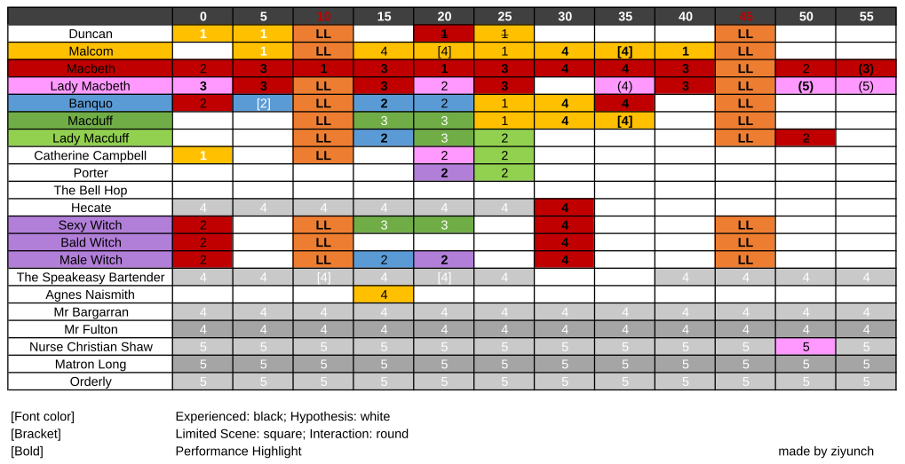
Figure 12: 根据记忆推算的舞台调度示意图
-
出场人物
〖The King of Scottland〗 - 国王 (Duncan) - 王子 (Malcom)
〖The Court〗 - 麦克白 (Macbeth)： - 麦克白夫人 (Lady Macbeth) - 班柯 (Banquo) - 麦克德夫 (Macduff) - 麦克德夫夫人 (Lady Macduff)
〖The McKittrick Hotel〗 - 女仆 (Catherine Campbell) - 门房 (Porter) - 门童 (The Bell Hop)
〖The Supernatural〗 - 巫神 (Hecate) - 三巫 (Witches) （媚巫，素巫，男巫） - 酒保 (The Speakeasy Bartender) - 女子 (Agnes Naismith)
〖Gallow Green〗 - 标本师 (Mr. Bargarran, a taxidermist) - 裁缝 (Mr. Fulton, a tailor)
〖The King James Sanitorium〗 - 男护士 (Nurse Christian Shaw) - 护士长 (Matron Long) - 护理员 (Orderly)
-
舞台设置
LL - 酒店 (The McKittrick Hotel) 〔舞厅 (Ballroom)，宴会厅〕，森林，墓室 (Crypt)
1 - 酒店 (The McKittrick Hotel) 〔眺台 (Mezzanine)〕，国王行宫，礼拜堂 (Chapel)
2 - 酒店 (The McKittrick Hotel) 〔大堂 (Lobby)，前台 (Check-in desk)，电话亭，更衣室 (Dressing room)，小舞台(Stage)，吧台 (Manderley Bar)，餐厅 (Dining Section)〕
3 - 酒店 (The McKittrick Hotel) 〔麦克白客房（床、步入式玻璃衣橱、浴缸），麦克杜夫客房，中庭 (Courtyard)〕，墓地 (Cemetery)
4 - 城镇 (Gallow Green)〔标本室，裁缝铺，药房（药橱），审讯室，侦探所（办公室，暗房），街道 (High St)〕地下场所〔夜店 (Cabaret)，酒吧 (Speakeasy)，吧台 (Bar)〕
5 - 疗养院 (The King James Sanitorium)〔病房 (Cots)，办公室，浴室 (Bathtubs)〕，桦木林迷宫 (Birch Maze)
6 - ？
-
场景调度
〖更衣〗 0' 「2-更衣室」（麦克白，班柯）：麦克白与班柯战争结束，在更衣室换去血衣。
〖读信〗 0’ 「3-麦克白卧室」（麦克白夫人）：麦克白夫人
〖预言〗 0’ <Act 1 Scene III> 「2-吧台」（麦克白，三巫）
〖怂恿〗 5’ 「3-麦克白卧室」（麦克白，麦克白夫人）
〖班柯〗 5’ (1 v 1) 「2-更衣室」（班柯）：据说此处有 1v1
〖父子〗 5'
〖色诱〗 5’ 「2-餐厅」（麦克白夫人，女仆）
〖舞会〗 10’ （第一遍从此开始） 「LL-舞厅」（麦克白夫人，国王，麦克杜夫夫人，麦克杜夫，王子，班柯，三巫，女仆）：三巫先入场，麦克白夫人随后而至，拽住女仆，令其给麦克杜夫夫人献上药酒。国王、王子、班柯及麦克杜夫携其夫人随后而至。舞会开始，众人交相跳舞，时而交换舞伴。麦克白夫人与国王共舞，时不时望向眺台上的麦克白。国王赠项链与麦克白夫人，夫人款然收下。另一边，麦克杜夫夫人有孕在身，站于舞池之外。女仆向其献酒后离开。麦克杜夫夫人目睹麦克杜夫与媚巫舞蹈调笑，醋意十足，拿起酒杯一饮而尽。药性发作，麦克杜夫夫人摇晃着向后倒下昏厥。众人交换舞伴，继续跳舞。此场景中，众人最终的舞伴为：麦克白夫人与国王，王子与男巫，麦克杜夫与媚巫，班柯与素巫。
〖妒恨〗 10' 「1-眺台」（麦克白）：麦克白趴在眺台上愤怒地看着麦克白夫人与国王跳舞。
〖教唆〗 15' 「3-麦克白卧室」（麦克白，麦克白夫人）：麦克白回到卧室，痛苦不已。浴缸边散落着信件。麦克白夫人回来，他们在床上共舞，情绪十分激动。夫人教唆麦克白杀掉国王。
〖侦探〗 15' 「4-侦探所」（王子，女子）：王子于舞会结束后飞快上楼，进入侦探所里间的暗房。暗房内挂满了鸟怪的照片。他在暗房的抽屉里拿出一个模型进行检查。而后他走出房间，在侦探所外间的办公桌前坐着一名女子。女子盯着桌上的女性人像照发呆，王子质问她是谁，她则拿出一张旧照，恰与桌上照片一模一样。原来她在寻找她的姐姐。王子探查其耳边痕迹，似乎认为她就是她所找的人。两人纠缠在一起，耳鬓厮磨，暧昧起舞。而后女子拿起旧照离开。
〖私会〗 15’ 「2-吧台」（班柯，男巫，麦克杜夫夫人）
〖弑君〗 20' 「1-国王行宫」（麦克白，国王）：国王在卧室休息，床上满是枕头。麦克白至，用枕头闷死国王。羽毛乱飞。麦克白在盆内的血水中洗手，奔溃地跑回卧室。
〖进化〗 20’ (1 v 1) 「4-审讯室内室」（王子）：王子回到暗房，从抽屉中取出一枚蛋状物体，向众人展示。我向前伸手，王子便拽住我的手，带我跑进一个小房间，反手关门，开启互动剧情：王子先带我进入第一进，然后拉帘进入内室。他打开桌上的小盒子，里面有五个蛋和一个空位。他将手中的蛋放入盒中，示意我去拿蛋。我伸手，王子阻止，将两个蛋调换位置后拿起一个蛋，将我的右手在空中展开后将蛋打在我的手中。蛋碎，一手的灰，王子将我的手捧在嘴边，吹飞灰尘。然后，王子转身，将我按在墙壁上，取下我的面具，在我耳边飞快地说了很长一段话，大致是人类与鸟类之间有什么进化关联。而后灯灭，王子突然剧烈地咳嗽起来，拿起我的右手，将一根黑色羽毛咳在我的手心。
〖沉睡〗 20’ 「2-大堂」（班柯）
〖暗涌〗 20’ 「2-吧台」（男巫，门房）
〖善后〗 25' 「3-麦克白卧室」（麦克白，麦克白夫人）：麦克白回到卧室后，已经奔溃，与麦克白夫人共舞后，脱去所有衣服，步入浴缸。麦克白夫人为其洗澡并安抚他。
〖案发〗 25’ 「1-国王行宫-LL-墓室」（王子，麦克杜夫，班柯）
〖喂毒〗 25’ 「2-大堂」（麦克杜夫夫人，女仆，门房）
〖祭祀〗 30' 「4-夜店」（麦克白，巫神，三巫）：麦克白跑去迷雾笼罩的祭祀场所，三巫跳着舞蹈，男巫戴着鹿头，浑身赤裸，性感女巫袒胸露乳，为婴儿喂食。灯光高频闪灭，音乐震耳欲聋，三人同麦克白一道，将婴儿献祭，场面及其震撼，颇似磕药高飞在云端。
〖牌局〗 30’ 「4-酒吧」（王子，麦克杜夫，班柯）
〖杀友〗 35’ 「4-酒吧」（麦克白，班柯）
〖质询〗 35’ (limited 5) 「4-审讯室」（王子，麦克杜夫）
〖密谋〗 35’ 「4-药房」（王子，麦克杜夫）
〖失常〗 35’ 「4-街道」（麦克白夫人）
〖相遇〗 40’ 「3-中庭」（麦克白，麦克白夫人）
〖悲恸〗 40’ 「1-森林」（王子）
〖夜宴〗 45' 「LL-宴会厅」（麦克白夫人，国王，麦克杜夫夫人，麦克杜夫，王子，班柯，三巫，女仆） 人物座次（从左至右）：麦克白，麦克杜夫夫人，麦克杜夫，媚巫，王子，国王，素巫，班柯，男巫，麦克白夫人。
〖杀胎〗 50’ 「2-餐厅」（麦克白，麦克杜夫夫人）
〖奔溃〗 50’ 「5-疗养院」（麦克白夫人，男护士）
〖伏罪〗 50’ （终场）
〖溃逃〗 55’ 「3-墓地」（麦克白）
〖净洗〗 55’ 「5-疗养院」（麦克白夫人）
-
我的路线
TL;DR 舞会-跟麦克白-夜宴-继续麦克白(1v1)-舞会-王子(1v1)-麦克杜夫夫人-王子(limited 5)-夜宴-麦克白夫人(1v1)-舞会-班柯-麦克白夫人(1v1)-夜宴-伏罪-素巫带领离场献吻(1v1)
进入酒店后，众人与吧台等候，以扑克牌牌面依序坐电梯上去，站在最外面的人会在六楼被踢出去。到达五楼后在附近迅速看了一下，四下无人。我便下楼至 1.5 层去找麦克白，他在愤怒地看麦克白夫人与国王跳舞、调情。从这时我开始跟着麦克白，看他用枕头闷死国王，上楼看浴缸边散落的信，与麦克白夫人共舞，脱衣洗澡。然后麦克白跑去女巫祭祀的房间，三女巫跳着舞蹈，男巫戴着鹿头，浑身赤裸，性感女巫袒胸露乳，为婴儿喂食。灯光高频闪灭，音乐震耳欲聋，三人同麦克白一道，将婴儿献祭，场面及其震撼，颇似磕药高飞在云端。
此后麦克白去吧台喝酒，与班柯搏斗，最后用砖砸死班柯。然后他与麦克德夫夫人碰面，争吵，搏斗，最后将怀孕的夫人当场打死。而后麦克白与夫人碰面，在一个过道处激烈争吵搏斗，最后齐聚饭桌。
所有人都会在饭桌场景会合，以非常慢的动作觥筹交错、抚摸接吻、扭曲身体。从左至右为女巫、国王、男巫。麦克白据最左，夫人最右。而后满头是血的班柯缓缓而上，坐与男巫左侧。饭局毕，众人离去，麦克白踟蹰不前，向饭桌中间走去，掀桌布而视桌底。麦克白夫人向麦克白走去，两人纠缠一番，麦克白跳下饭台，大步离去。
饭桌场景结束后继续跟随麦克白，与夫人与卧室碰面。而后来到墓地，麦克白挣扎舞蹈。先在圣像之前挣扎，再倒立。我和另一围观群众伸手，扶他落地。而后来到森林，因为我紧跟身后，在此触发互动剧情：麦克白回头，紧紧捧着我的脸，伏在耳边喃喃道：I’m sorry. Nothing is more than revolution.
而后麦克白与班柯碰面，进小屋换了套干净的衣服，第二轮开始。由于第一轮错过了开头，此时仍然跟着麦克白。
麦克白先在吧台处，拿着桌上的 K 牌，遇到三女巫，与之共舞。我还被黑女巫摸了一下。
回到他们房间，麦克白与夫人相见，脱衣，搏斗，亲吻，碰撞，而后麦克白夫人去舞厅，麦克白阴郁地去一层半看他们跳舞。
此时我下去舞厅，在舞池观看舞蹈。
舞蹈场景与饭桌场景一样，众人除麦克白外齐聚一堂。国王与麦克白夫人共舞，并将项链赠予她。麦克德夫与性感女巫、班柯与黑女巫、王子与男巫共舞。怀孕的麦克德夫夫人在一旁冷眼相看，突然向后晕倒。
舞蹈结束之后，我开始跟随王子。
王子飞快地上楼，进入照片洗印室，此处挂满了鸟怪的照片。他从抽屉中拿出什么，而后走出房间。在类似警察局的小桌子前坐着一位女子，看着桌上的女人半身照。王子质问她是谁，她拿出一张旧照，与桌上照片一模一样。王子探查其耳边痕迹，认定她是。两人纠缠在一起，耳鬓厮磨。而后女子拿起旧照，落荒而逃。
王子回到暗房，拿着一颗白色球状物体，试探众人。我向前伸手，王子便拽住我的手，带我跑向一个小房间，反手关门，开启互动剧情：王子先带我进入第一进，然后拉帘进入内室。他打开桌上的小盒子，里面有五个蛋和一个空位。他将手中的蛋放入盒中，示意我去拿蛋。我伸手，王子阻止，将两个蛋调换位置后拿起一个蛋，将我的右手在空中展开后将蛋打在我的手中。蛋碎，一手的灰，王子将我的手捧在嘴边，吹飞灰尘。然后，王子转身，将我按在墙壁上，取下我的面具，在我耳边飞快地说了很长一段话，大致是人类与鸟类之间有什么进化关联。而后灯灭，王子突然剧烈地咳嗽起来，拿起我的右手，将一根黑色羽毛咳在我的手心。
一对一场景结束后，王子飞快跑去一个大厅，与怀孕的麦克德夫夫人打了照面。我以为他们会有交流，然而王子飞速跑远，我跟丢了。
这时我选择跟随麦克德夫夫人，她在酒保处与女酒保神情暧昧，一同到一旁的沙发处调情。两人被酒保打断。女酒保向其递酒，酒保试图劝阻。
我还看到男巫在唱歌，酒保目不转睛地看着他。（也可能是在第三轮看到的？）
这个场景结束时，王子突然又出现，我赶紧跑回跟住他。他跑到酒吧处，与班柯和麦克德夫会合。班柯支开此处的酒保，三人铺开放在桌上的三个酒杯与榔头与四角，以 J 为赌注，开始打牌，J轮流押在三人的酒杯之上。三人开始晃动头顶的吊灯，牌局愈发激烈。最后一人拿起榔头，将 K 钉于墙上。
局毕，班柯留在原地（将被麦克白杀死），王子与麦克德夫跑到档案室，拉开抽屉，里面是一个放置很多树木模型的地形图。他拿着手里的树木模型（在之前一个场景看到过，记不清哪个了），恰好可以放在地形图上。两人跑进审讯室，放入五个围观群众后，开启五人限定剧情：两人将围观群众逼至靠门的一边后，王子让麦克德夫坐在房间中心的椅子上，开始审讯双人舞。头顶的吊灯晃动，幅度非常大，几乎要撞到两人与围观群众。两人一边搏斗，一边躲避吊灯。
审讯场景结束后，王子回到一楼舞厅，此时空无一人。王子疾停，身体扭曲，向后臀桥。而后王子以怪态躺在地上划圈，跳着奇怪的舞蹈。或顺钢管而上，或贴地面而行。舞毕，王子步回饭桌。众人陆续赶到。
第二轮饭桌场景结束，我留在舞台，看麦克白夫人独于桌前哭泣。饭台太高，麦克白夫人向前伸手，我伸出双手搀扶她下来，开启互动场景：然而由于我没扶稳，导致麦克白夫人摔下舞台，于是麦克白夫人一怒之下没有开启传说中的携手同行，捧头耳语剧情，我只能默默跟着她。
她来到一个满是铁床的屋子，走到尽头后躺床上独舞。来了一名牧师，将她搀起，带入一间有很多浴缸的房间。牧师将夫人的衣衫尽除，让她步入一个装有锈色液体的浴缸。夫人洗着洗着发现满手是血，异常奔溃，努力将自己洗净。洗毕，夫人伸出双手，我与同伴将她搀扶出浴缸，开启互动剧情：夫人松开我的手，指向旁边的浴缸。我没会意，经同伴提醒后才意识到她要我拾起覆盖在那个浴缸上的纱巾，将她包裹起来。（其实是擦身福利，我真是太蠢了。）
而后夫人走向她和麦克白的卧室，脱下纱巾，换上睡衣。麦克白亦出现，两人尽除衣衫，激烈地拥吻，直至争吵。而后麦克白穿上衣服离去，麦克白夫人一人在卧室，进入透明的玻璃化妆间更衣，并跳起高难度独舞。
舞毕，夫人回到房中的浴缸，看到麦克白留在浴缸边上的信，读之潸然。直至麦克白回到房间，两人舞毕，我跟随麦克白夫人，看到她色诱女酒保，让她递喝的给麦克德夫夫人。随后来到舞池。
三女巫已在场上，麦克德夫携怀孕的夫人到来。麦克白夫人拽住女酒保，令其给麦克德夫夫人献酒。舞会中女酒保来到舞池外的麦克德夫夫人身后，向其献酒后离开。麦克德夫夫人看着调笑的女巫与麦克德夫，醋意十足，拿起酒杯一饮而尽。麦克德夫夫人摇晃着向后倒下。
这轮舞会场景后，我跟着班柯。班柯先与男巫在长廊上拥吻。而后他跑至吧台旁，麦克德夫夫人放下手提箱，两人看一封信，信上全是烟灰。两人来到沙发，跳起了激烈的舞蹈。然后麦克德夫夫人跑出来（与王子打了个照面），班柯睡倒在沙发上。
班柯睡倒在沙发上的时候，我回到吧台读了信，没写什么有用的。然后在一旁的电报亭，看到男巫与麦克德夫纠缠在一起，共舞。
舞毕，回到班柯处，发现他刚醒，被通知了国王死讯，摇着铃穿过标本室，跑去国王处，发现尸体。他与王子、麦克德夫三人将枕头收起，将国王尸体抬出，在一旁阶梯处商量后，头朝下抬下楼梯，停于一个房间，盖上毯子，令其安息。
其后，三人齐至酒馆，打牌饮酒。结束后我跟随他们俩，发现五人小黑屋外面即是麦克白与夫人争吵的走廊。跟随奔溃的夫人，夫人四处捧人的脸，耳边私语。我紧跟其后，却发现站着不动的才会被她临幸。后来她抓住我和其他四人的手，说你们五个要好好在一起，大概算一种互动场景？而后我们跟着奔溃的夫人来到饭桌。
最后一场饭桌戏。结束后夫人下台，走向饭桌左前方的角落，紧紧拉着一名看客的手，另一只手抱着他的手腕。
台上，王子、麦克德夫等人将麦克白吊起（脖子套过脖圈，钩子挂住衣领），推向前方。全剧终。
因为我站在饭桌最左侧的过道旁，黑女巫下场时拉住了我，将我带至最初等待召唤的大厅，脱下我的面具，在我左脸颊吻别。
（期间有一处楼梯，上面有画着两个国王像的花窗，经过数次）
Poem @苦吟诗
Diary @流水帐
DONE WFH 桌面升级 桌面办公设备
我和大多数人一样，都在疫情 wfh 初期便搭建了符合人体工学的在家办公小角落。当时各大公司纷纷宣布在家办公，显示器升降桌等设备一度供不应求，不是全网断货就是价格暴涨。而我因为刚搬来西雅图，什么都没有，只能硬着头皮凑齐装备。花了几个月时间，终于配齐了一个符合我无线+舒服的桌面。
显示屏：LG 27UL650-W + HP Dock 120 W G2 当时 Dell 的显示屏全线断货，LG 的 27UL850 也已无货，所幸和 850 相比便宜 50 刀却少了音箱和 USB-C hub 的 27UL650 还能买到，虽不如前者划算，但是对于刚需我早已没有商讨余地，便抢入囊中。由于没有 Hub，我又另购了一个 dock 来给电脑充电并连接显示屏。
升降桌：Fully Jarvis 3-stage frame + Hardwood reflections Live-Edge Acacia 48 x 25 x 1.5 in T Butcher Block Countertop 买升降桌的时候，到处都是 Autonomous 的优惠码，折扣挺大，用的人似乎也多，我和女票便各自入手一套。女票的黑色款先到，拼完我就发现这桌子调到最低对我来说还是太高了，缺失了其作为升降桌最基础的功能，便将还没送到的白色款取消了。后来一番研究，发现市面上适合小个子女性的升降桌选择非常少，只有 Jarvis 的三折款能降得比较低（现在有了 low 版，更是小个子女性的首选）。买桌子的时候，我还发现大部分生产商都只提供层压板（laminate），实木的选择少且贵，便动起了自购桌面的脑筋。我所在的公司听闻有个优良传统是用门板做桌面，而我去 Home Depot 搜了下价格，便放弃了复刻传统的念头，老老实实买了块预处理过的实木台面。台面哪里都好（我买的是波浪形的边缘特别好看），就是尺寸的选择太少，如果我有全套工具可以自己打磨上蜡的话，应该会至少买 60 x 36 的木材。
办公椅：Herman Miller Sayl 老版 我的腰一直不太好，所以在办公椅方面不敢造次，打算迷信一些，只在 Herman Miller 各型号中纠结。约了本地的授权店，试坐了一番，在 Sayl 和 Aeron 间有些犹豫：Sayl 颜值高也舒服，Aeron 可调节性更好但是坐着有些累，后来还是决定买 Sayl，却被告知基础型号要等一个月才有货，其他仓库倒是有高级款几天就能到货，但是价格需要上千。当时的我工作不久，思维方式还停留在学生时期能省就省的抠门模式，便开始在野路子上打主意。一般来说，创业公司都会采购大量符合人体工学的办公桌椅来留住挑剔的码农，而当他们创业失败的时候，这些办公桌椅便会流入二手市场。我在西雅图找到一家做这类生意的家具店，最近刚进了一批 Sayl，价格便宜。去了店里，我发现有可全方位调节手讬的老款黑色 Sayl，固定手托的新款红白配色 Sayl，以及 Aeron，纠结并更换了好几次后，还是放弃了好看且更符合我房间风格的红白配色，为了手托买了老款 Sayl。
键鼠：HHKB professional hybrid + Apple Trackpad 因为不喜欢走线凌乱的桌面，且对延迟宽容度高，我只选择无线键鼠。当时尝试了几款说是符合人体工学的键盘，如罗技 K860，却发现键帽间距过大，对我的小手来说非常费劲，于是还是回到了我热爱的 60%键盘，并从 Filco Minila Air 升级为 HHKB（拒绝 Cherry 从我做起），效果确实拔群。而我从 PC 时代就不是鼠标党（小红点万岁，以及正在写这篇文章的我冲动消费了联想去年出的不支持 Mac 的 Thinkpad TrackPoint Keyboard II），Macbook 为主要生产力的我自然也就一如既往地配上 Trackpad（如果可以支持多台设备无缝切换就更好了）。
如果有人看到这儿，可能会有疑问：这不都是去年年初的配的桌面么，为什么现在才写？因为懒（划掉）这一年半用下来，我觉得桌面似乎有点太挤了。如果只是用电脑工作还好，但是有时如果想看书或是读打印的文章，桌面就有些局促了。于是我去研究了一番，打算买个支架把显示屏和笔记本占用的桌面腾出来。
记一次差点被 ATT 反薅羊毛的经历
事情还要从疫情的 wfh 说起。自从 wfh 起，由于天天宅家，我就开始觉得皮套有些厚重，裸机的手感有多好，而忘记了我当年的 iphone 4s 是怎么摔到屏幕碎裂外加触摸不良的辛酸回忆，走回了裸奔的歧路。后来出门买菜爬山什么的似乎也都没什么问题，我便渐渐忘了戴套的保护性。终于，在去阿拉斯加玩的时候，手机的后屏终于摔碎了。回来后没几天，祸不单行，前屏也出了裂痕，稍微一压似乎还会漏液。毕竟我当时买的是 512G 的手机，这才用了三分之一的容量，我便打算将就用用。没想到上个月 ATT 出了一个看起来非常慷慨的 trade-in policy，只要估价在$95 以上的手机，都可以给到 800 的 credit，虽然需要按三年发放，但我毕竟来美国后一直都是 ATT 用户，这三年对我来说也不算太麻烦的 commitment，便开心地薅了这份羊毛，换了新手机。
DONE 一些关于看动漫孤独感的碎碎念 动漫二次元
我去年发现了一个做新番扫雷的播客，叫放映邪会。其中一个主播不死鸟的趣味似乎与我相合度较高，于是我断断续续听了好一阵。其中有一期谈到老二次元为什么会加动漫社，让我感触颇深。
我觉得自己大概算是一个二次元，从童年的柯南，到初中时借阅的盗版漫画和碟片，再到高中开始追番，虽度立于脱宅边缘，动漫在我生活中始终占有一隅。但我似乎和大众眼中的二次元不一样，我不玩 cosplay，我没有加入动漫社（虽然高中有组过一个缘起 SOS 团的只有名分的 12+1 团），我几乎不看 JOJO 鬼灭这类大热动漫，亦不喜欢那些媚宅的番。经常出现的情形是，A说我看动漫，B说我也看动漫，然后大家开始讨论起近期热门，而我觉得如坐针毡。我参加过的漫展也是寥寥无几，甚至在纽约漫展上带给我最多快乐的还是一部分美漫。
看动漫，对我来说，一直是一个极度孤独的行为
我也会去寻找同好者。社团与论坛，都不是我能舒适参与的空间。高中时曾经组过一个小社团，然后迅速发现自己也并不擅长在现实生活中发展同好。而写了十数年依然没有固定读者的博客也让我认清了自己甚至不擅长输出观点。剩下的只有我擅长的被动输入，也就是寻找那些愿意和世界分享自己喜好的社群，并从中筛选出与自己喜好类似的默默关注。纸媒时代是动新，然后纸媒便消逝了。博客百花齐放的年代是漫谈 ACGTalk，然后他们的硬盘便被收缴了。前“正版动漫”年代，便是在几个字幕组论坛还有 Bangumi，VCB 中参照着评论下载新番自行扫雷，然后迅雷百度这些绕过 BT 的下载工具在美国便不好使了。后来网速飙升，B站开启了正版动漫的概念，我也曾借 unblock Youku 这类插件短暂享受了在弹幕中寻找同好的快乐，然后弹幕清洗了一轮又一轮，我也养成了关弹幕的习惯。现在，似乎人人都会看一两部动漫，各种节目偶尔也会谈论动漫，B站上也充斥着几分钟讲新番的视频，但是几乎没有人做扫雷这种吃力不讨好的事情了。我只能对着每季新番列表，通过主创来推测要不要尝试，通过平台来选择是在 Netflix 上愉悦追番，还是去盗版站上寻找清晰稳定的字幕盲盒播放源。
这个判断也变得越来越难了，喜欢的几个监督几年才出一个短番来玩票，而几乎一半新番都被我无感的异世界题材占据。放映邪会可能是近期我能找到的最能给我慰藉的动漫平台了，但是它能存续多久呢？
所以我在这絮絮叨叨，可能也是我做的另一次尝试。承载了我那一点点幻想，在浩翰网络中发出了一道微小的电波。
前天和女票逛书店，她十分愤慨地提到喜欢看书是一个没有意义的标签，因为书是一个非常广的范畴，有的人可能喜欢看网文，有的人可能喜欢看严肃文学，有的人可能喜欢看教材，有的人可能喜欢看漫画，却都归在了喜欢看书这个标签中。她的愤怒来源于她因不喜欢看书而被两个所谓看书的前女友嫌弃，她的感慨也确实成立，喜欢读书这个标签除了把不喜欢读书的人排除在外，似乎确实意义不大。而书的含义一旦泛化为文字的承载物，那交互式小说即文字冒险游戏是不是书呢，那角色扮演类游戏是不是书呢，任何需要阅读的游戏是不是书呢？那喜欢玩游戏的她似乎又被纳入进喜欢读书这个标签了。
这么说来，喜欢动漫或者二次元都是一个没有意义的标签。那这也可以解释我的孤独了。
我喜欢看动漫。
我喜欢渡边信一郎，新房昭之，庵野秀明，汤浅政明，几原邦彦这类风格强烈的监督。山本沙代，夏目真悟，矶光雄，今石洋之也是我会关注的监督。
我喜欢的类型是科幻，公路片，魔法少女，百合，世界系。
我奉为神作的动漫有星际牛仔，虫师，凉宫春日的忧郁和魔法少女小圆。
我最近十年的年度动漫分别是
- 2012 鲁邦三世名为峰不二子的女人
- 2013 进击的巨人
- 2014 Space Dandy 乒乓
- 2015 百合熊岚
- 2016 只有我不存在的城市 冰上的尤里
- 2017 宝石之国 小魔女学园
- 2018 恶魔人
- 2019 Beastars
- 2020 别对映像研出手
- 2021 漂流少年
- 2022 地球外少年少女（暂定）
这些标签足够了么？
DONE 来美十年
最近在一亩三分地上看到好几个人说自己来美十年了，便意识到自己也来美恰好十年。年初的时候，还想着到时候要好好庆祝一番，结果这半年都在为签证忙碌，三四月的时候甚至自我调侃十年纪念是被迫离境。倒也没有一语成谶，不过原因并非是搞定了签证，而是加拿大使馆人手不够，原本保证两周会得到结果的工作签证现在得四到六个月才能发出，所以我现在是个既无法在美国工作又无法离境去加拿大更买不到机票回国的状态。可能是最为糟糕的十年纪念了吧。
印象里我是十年前的今天到的美国，但我也记不清确切的时间了。那时我还没有开始用微信，自不能从朋友圈上寻找证据。而我的 iPhone 也是到了美国后才买的，亦不能从照片上得到线索。不过护照上的时间戳确实是 2012 年 8 月 4 日，所以误差一定在 24 小时之内了。
我这十年的运气一直不太好。当时从 LAX 入关后，下一班飞机延误，导致在第二个中转点我只有五分钟的时间坐上去波士顿的飞机。结果人上了飞机，行李没上，我在波士顿的前几天都只能靠随身行李度日。而到了波士顿，房东告知提前租好的房子还没有装修完毕，于是我们几个女生在师兄家借宿几日，又在客厅看着装修师父把房子整修完毕。为什么在客厅蹲着呢，因为我们买了的三套同款家具，宜家给送来的甚至拼不成一套，我们只能在客厅打大通铺。那边厢宜家在什么时候将家具送齐方面在各个部门间踢了好几天的皮球，直到系里的俄裔大婶看不下去了帮我们吼了一通电话，剩下的家具才给送到。
在美国的前十日就如此坎坷，我这十年也是经历了各种倒楣事。第一年暑假的时候被奇葩污蔑，把一篇一看就是学长为追新来女生而互相吐槽的文字硬说是我写的，竟还被安上了诽谤系里同僚的罪名。当时的我愤然辩驳，反而深陷泥潭，差点被逐，平时以为玩得挺好的学长学姐也几乎无人为我说话。世态炎凉，皆显于此。现在想来，当时还不够强硬，应该咨询律师的。
第二年暑假回国，被 check 六周，也导致我第四年再和导师提回国的事她不放行，需要我确保自己能在一个月内回来。所以自此之后，我再也没能回国，太外婆爷爷奶奶相继过世。后来新冠疫情一起，更是回国无望。现在想来，当时应该先答应着，多回国几次的。
这十年里，我学了车，买了车，还卷入一场连环车祸换了车。
我的学业也磕磕绊绊，qualification exam 考了 14 次才过，博士也拖了七年才毕业。转行找工作也不太顺利，整整找了一年，才在 opt 快到 3 个月期限的时候入了职，哪怕在我那个转行的 bootcamp 里也是最后一个才找到工作的。而后抽签三年七抽不中，可能得跑路加拿大了。
今天看弹丸列车，便觉得这个瓢虫也许就是自己，所有的坏运气也许都是命运的背刺。不过还是希望接下来的十年能够否极泰来。
DONE 线上攻略谜宫线下模式
去年海淘了故宫出的谜宫一二两部解谜书，最近百无聊赖，便拿出来玩。一开始觉得谜题有些简单，完成了几题后发现是顺着书册的章节解谜，翻了下册子里含有解的章节，只二十章，算上有数个谜题的四章，也只有二十九个谜题，再加上需要使用 app，便觉得这是不是只是一套做工精美的 unlock。一周目光顾着解谜，幸得结局时恰巧触发了隐藏关的提示，才意识这还是个具有成就系统的多结局游戏，算是值回票价。刷完多结局，发现还有众筹与线下模式。我由于错过了众筹，也就得不到众筹的谜题。而线下模式需要去故宫实地探索，也让买不到回国机票的我颇为为难。
不过相比缺失的众筹线索，盒内毕竟还是有完整的线下线索的。一周目的时候我便想过如果没有 app，是否能够只靠书册来解谜。当时我发现除祥云图五言局等需要依靠 app 中编纂的图样来解谜，或是漱芳斋博古格这种图片与网上照片有出入的，其余大部分 app 依赖型谜题都可以通过在网上搜索真实图片来解开。而实地探索注意事项里提到紫禁城内并无人为布置的线索，亦无需接触其中的工作人员。这就让我想到，是不是可以善用网络来攻略线下模式。
故宫官网有个全景故宫，借由此，可以攻略大部分线下谜题。比如协和门的门楣，比如背向景仁宫可见石壁，再如承乾宫的透风花砖与御花园的雕像。不过全景图有一些盲区，比如承乾宫的十六块透风花砖仅能看到十二块。查文献有《紫禁城透风纹样识略》1与《故宫砖雕透风调查与分析》2，其中提到透风布局虽有规划，一些后期重新嵌入的透风却可能破坏原有的排布规律，所以不能简单地从可见的十二块透风去推测盲区中四块透风的纹样。我只能通过与甲寅页的拆文解字相互印证来得到最终答案。
而御花园的雕像谜题也颇为费力。我通过全景找到钦安殿院内香亭，天一门御路正中的青铜香炉，以及与养性斋假山相对的四神祠假山后鹿圈附近的影壁。又在承光门文字介绍里看到其提及鎏金铜卧象，一查果然是它。堆秀山间的石雕最难辨认，在文字介绍中查找后，我才敢确认这是石蟠龙喷泉的雕像。
不过最后似乎还是得去故宫才能拿到最终的礼物，只能等下次回国了。
幸好线下模式的 app 中还有一些令我在意的地方，大致如下（抄得我好累）
U2FsdGVkX李19zM+NJi797MWNILJY8y8qruYvrE5z秉UearRMMLMY654o0德eqdk3rt7FVb7qGbgNEDrlAhVhjesk2角色qGlh4jSU64DJ异常
U2FsdGVkX1/vp4A角lxVvOM+色vrljNdX8kTj周osUsUId本HGU7fm6FLUnDhRs9jWiHK17hiwEx6u01cFyAbk2Zkkq98异常Dud6VDTuQUvIO4TlGqRt8y8AYo0iBQPPQ2TLNARmDCMvOhD8sUoJi3pwaO1H角kasSVV+fAd7MWVc6GG色aPi/VPP8kM8rZmcMYciPctNcbFGxlnf2禾W/ZtnebVFM4gDHU心kI5iQ7l+3cgK9VN5Z3G79异tjjM48o0iE54JKkyN5CcGPGCyJP1liRP5V4oGntOmJiexY+WMesTRaayS9F3PWB4kQ2g0Fj4h常s0iK3kzChzEkFhyN
重启备份数据：
进度：0%
WEcpbLZ/7EIanho7qIlQh重启0ShNtjg1rKR2iPlsLIj7uDdI5CEpNnS6pIFPQqg8vc1uMP9R2n//hCA6l4NbKH7U8Yx0Qu9j+1Qt9nxp67IGdduBJfSbpIwdL6d2hUCQY6X ebHasmBzcaRL6qCwcis9GkGP9c备M=itty.bitty份
.site/#/?XQAAAAJ5AAAAAAAAAAAeGQknmCB0sFVXhi4PSSkOC5xHblRaXufN0WNJ3XdtOXKQOng8失3C3ddAlbzrAZlc0iKDlDSeVH7quw9s3rfTJuHkY//EAj+0AI9/lk04sC7D/jTANB8b1oXUq97vtnOv2/LpIWTAf败3//7bMAA=
NOTFOUND
NOTFOUND
Ctircaiibyadcwbmrahtakc
预备方案启动<======重启旧系统
旧系统载入中
……
载入成功
我有点在意这个“旧系统”，就回到解谜书的 app，发现周本变成了空白。
回到这些乱码，前两段都以 U2FsdGVkX1 打头，这是 Salted__用 base64 编码后的文字，说明这是两段密码。解密得到
找到周本找到禾心找到贾仁悟
李秉德丢失
恭喜你当你看到这段文字时
一切才刚刚开始
这个故事远远没有到结束的时候
真正的答案你需要你们自己去探索
接下来的路途将无人陪伴
唯有蝉鸣蝉鸣蝉鸣
我在这里留下最后的线索
希望它能指引你走向光明的未来
每段乱码里都有一个网址的一部分
找到它
解开它
而 itty.bitty.site 也提示了接下来是一段短链接，[itty.bitty.site/#/?XQAAAAJ5AAAAAAAAAAAeGQknmCB0sFVXhi4PSSkOC5xHblRaXufN0WNJ3XdtOXKQOng83C3ddAlbzrAZlc0iKDlDSeVH7quw9s3rfTJuHkY//EAj+0AI9/lk04sC7D/jTANB8b1oXUq97vtnOv2/LpIWTAf3//7bMAA][链接]]打开后得到百度网盘的链接与提取码，得到两个文档。
其中一个在 glitch 图片里出现的微博解谜游戏设计师徐奥林中找到文档密码：
感无心 艳无色
tufh fnrt
又贰字
-> 丿乀一一丨丶丿一
一丨丿丶丶一丶丿丶㇖丶一㇆丿
打开文档可得到如下文字。确实，周本变成了空白。
2019-1-15
周本的故事到此告一段落。
我们彻底失去了他的数据。
好像他从来没有出现过。
感谢你走到这里。
让我们明年再见。
而另一个文档（一张猫图）和 Ctircaiibyadcwbmrahtakc 我暂时还没有头绪，以后想到再作更新。
2022-09-06 更新 我又玩了金榜题名的线下版。甲，丁，己都有或者可以搜到清晰或者模糊的照片；乙，丙，戊的图样都是全景地图里没有，也不太容易搜到图片的细节，只能可以通过简单的推理得到答案。而庚则几无可能在全景地图的指引下找到路线，只能通过找寻终点的花样得知答案。而辛中夹杆石座上的图样则费了我一番功夫，终于在一篇博客中得到提示，即鳖位于东南角，逆时针为鳖虾蟹鱼。虽然其余四物无从寻迹，但是总可以简单推理得到答案了。
Cuisine @下厨房
DONE 苏味馆 Jiangnan Cuisine 三番食记江浙菜
前几周看到有几篇文章都提到三番城里有家无锡菜馆，便一直心心念念。虽然无锡菜和苏州菜还是有一点区别的，但是我在美国这么多年，始终也没能找到一家靠谱的苏州菜馆（Quincy 那家实在不能算），所以要是能在城里找到一家隔壁城市的菜馆，那也可以一解思乡之情。前几日 happy hour 时与印度同事聊起这家店，没想到这家店在他的推荐清单里，更是增添了一些我对此店的好奇。今朝冬至夜，我便搭了公交车去探店。
看了菜单，不少菜的英文名里都有 Wuxi 一词，问了小二，也说厨师是无锡人，我便放心地点了几个菜。今朝冬至夜，馄饨照例是要有的，又点了狮子头、酱鸭和烂糊白菜，算是把晚饭一齐点了。我点完单，小二说了句“点得有点多了”，我回了句毕竟今天过节，估计对方也是一脸懵。
先上了例狮子头，味道还蛮不错的，比我之前在 Boston 和 NYC 的沪菜馆里迟到吃到的都要好。以前吃的狮子头，大多偏瘦，肉细味浓，吃一点就腻味。这家店的颗粒偏粗，肥肉比例也比较好，汤汁也不错，吃得我还挺开心的。
接下来的苏味酱鸭却是令我大失所望，菜单不以苏式酱鸭称之，恐怕是不敢为之吧。这个酱鸭卖相一般，鸭肉不是很入味，酱的味道也不好。我本想着无锡菜应该会偏甜一点，然而甜度也不是很够。
而后端来一碗馄饨，也是令我很疑惑。汤里只有紫菜香菇和青菜，开洋和蛋皮不见踪影。我觉得这两样应该不是只有苏州馄饨才有的吧。馄饨馅也有股奶味，吃得我很是疑惑。不过想着馄饨不好打包，只能硬着头皮吃完了。
烂糊白菜最后上来，倒是不错，挺鲜美的。这道菜在美帝的其他江浙菜馆并不常见，感觉可以当成这家店的招牌菜了。这么想来他们家的年糕应该也会好吃，不过今天是没肚子了。
DONE 端午节，又到包粽子的时候啦 端午粽子
往年端午，我，肉粽子推广大使，总会拉着小伙伴们一起来我家包粽子。去年端午正值疫情肆虐，我们只能两人一狗窝在家里包。当时用了 5 磅圆糯米，一盒五花一袋枣蓉一碗红豆半袋粽叶，包了 35 个肉粽，21 个枣蓉红豆粽外加 3 个白粽，略为寂寞，倒也收获颇丰。今年小伙伴们疫苗都差不多生效了，便又呼朋引伴，招呼来家包粽子。
奈何包粽子这件事，每年只会做一次，虽然我基本上每年都会包一次，但是由于从不做记录，每次都还是会出些岔子：或是不记得各种形状怎么包，抑或是馅料太咸太淡米夹生。这次更是闹了个大笑话，把去年的糯米用量记成了 10 磅，开始得又晚，于是又一次包到了半夜。上一回包到半夜还是因为那时家里没有高压锅，大家边打牌边等粽子熟而等到半夜，这次却纯是体力活了。于是我还是决定写篇博客，备明年所用。
-
准备
包粽子虽然是体力活，但人多的话包起来并不费时。而包粽子前的准备阶段却颇为费事。前一天要去超市准备粽叶，五花肉，蛋黄，枣蓉，红豆，豆沙，糯米和线。粽叶一包即可，哪怕用双层粽叶也够包上百只。不过我在中国超市买到的是箬叶，和苏州买到的苇叶，形态和处理方式不太一样。苏州的苇叶新鲜，叶面稍窄，而中国超市的箬叶宽阔，又是干制，要先冷水浸一夜，然后加一些麻油，用开水煮开，把根部剪掉，泡在水里。加麻油这一步可以防止糯米粘在粽叶上，去年没有这样处理，吃之前剥粽叶一步便成了心头大患。听闻越南超市有新鲜粽叶卖，我打算明年去那儿碰碰运气。
五花肉视人数买个三五条，我去年一盒三条肉包了 35 个肉粽，今年五条包了可能有 45 个。五花肉需牵精搭壮，肥瘦相间，如带有肉皮那更是上佳。每条肉均切成一厘米见方三厘米长的条状，加葱姜酒酱油糖盐调味，注意盐要多一点，不然味道会偏淡。肉无需隔夜腌制，否则肥肉不易煮烂，会影响口感。
这次买了两袋 24 个蛋黄，每个肉粽里放了半个。这次买的是便宜的蛋黄，吃着感觉没什么油花也没什么灵魂。以后可能还是要买更好的蛋黄。
枣蓉豆沙毋需预先处理。一般包的时候会放一小块猪板油。奈何美国买不到猪板油，我便拿年前熬的猪油拌了下。
糯米的话，各家的处理都不太相同。如果喜欢吃松软一些的粽子的话，需要隔夜浸泡。而我家吃的粽子比较结实，所以不管甜咸粽子均只是包之前淘洗一下，并不提前浸泡。用来包肉粽的米我会用酱油糖盐料酒拌一拌来上色。这次用的红烧酱油，感觉稍微有点咸，可能还是用老抽比较好。甜粽的糯米里可以混入一些红豆，这次给忘记了。
-
包粽子
这次打算用四角枕粽，枕粽，正四面体粽和笔粽分别对应蛋黄肉粽，某位不爱吃肥肉的小朋友的蛋黄瘦肉粽，枣蓉粽以及豆沙粽。结果包的时候怎么也想不起来四角枕粽怎么包，外加北方的小朋友们最常包的是正四面体粽，便以两张粽叶的大四面体粽与一张粽叶的小四面体粽来区分蛋黄肉粽与枣蓉粽了。（最后煮的时候果然搞混了，混了一个甜粽子在肉粽里。）不过粽子形状万变不离其宗，只要能将糯米牢牢收纳于中且起到简单的区分作用即可。明年再好好回忆怎么包用四角枕粽吧。
-
煮粽子
我通常记录菜谱，都会略写烧煮这步。不就是水没过粽子，高压锅压半小时或普通锅煮两小时么？于是这次记忆模糊，便果然出了各种岔子。高压锅虽然快，但是加上上气放气也要一小时，如果其中某步不注意，提前放气或是压力不足，糯米便容易夹生。所以以后煮完粽子，可能需要再多焖一会儿。另外，由于馅料都是一起调的，而粽子会因为锅胆大小限制分批烹煮，所以每批都需要新换净水，否则后几批的粽子便会偏咸。
-
后记
这次包完粽子，虽然劳累不堪，但是看着满冰箱的粽子，还是非常满足的。但是放眼国内，却发现各式各样的新式馅料层出不穷，而我这些年做的都是同样的鲜肉粽，倒是显得食古不化了。五花肉酱油糖盐料酒，虽然家常，但由于这边猪肉品种一般，粽叶也不新鲜，回味只剩酱油了。这次包粽子之余，还顺手包了一些馄饨。小米调的馅，将炒过的鸡蛋配上猪肉虾肉和香菇，尝之倒有蟹味，非常神奇。明年我可能也应该在馅料搭配上多下文章，不能在食材有缺陷时仍然拘泥于传统了。
这次没怎么拍照，那就挪用张去年的照片作为结尾吧。
Figure 13: 小狗没有粽子吃
Essay @风月谈
DONE 七狸山塘？七里山塘。 江南百景图苏州山塘街
最近在玩江南百景图，为了能开苏州府，倒也是花费了一些心力。然而我总能在微博上看到路人或是营销号吹捧这个游戏多么考据，倒是大可不必。还有人去实地踏访，说苏州这七只狸猫还真在山塘街上，甚至说七里山塘其实是七狸山塘之误，更让我头上冒出无数问号。
江南百景图营销其有所考据，我是真的不以为然。并不是在游戏中贴一些出处，照搬一些画像名词，就能和严谨的考据挂上钩的。我可以忍冠云峰横跨苏州城从留园去了东园，但无法忍冠云峰的相关诗句是《题瑞云峰》，毕竟这瑞云峰虽与冠云峰同在留园待了百余年，却并非一石，现亦早已迁离留园，耸立十中。
而现在有人言之凿凿称苏州人世爱狸猫故有七狸，称七里山塘为七狸山塘之误，更是让我在无法忍受之外，更添无数疑惑。山塘街上真的有狸猫么？真的有狸猫困妖虎或狸猫锁龙脉的民间传说么？我寓居海外多年，今年又遭新冠之虞，出行都有困难，更别提回乡实地考察了，只能在故纸堆里探寻一二。
首先，七里山塘是什么？山塘街是白居易任苏州刺史时为便利城西交通而筑的堤，又名“白公堤”。明范允临《输廖馆集》中《计部张公重修白公堤碑记》便有提到这段往事：“虎丘故有白公堤，云白太傅乐天守郡时所筑也。其堤自虎丘而至金昌，盖七里而遥，俗所谓山塘者也。”山塘街建成后，虽受宋金、元明、太平天国时期战乱影响，被毁数次，但因其地里优越，“商贾鳞集，货贝辐辏，襟带于山塘间，久成都会。”（《岭南会馆建广业堂碑记》）
所以这“七里山塘”的名号，是与其长度有紧密联系的。而“七里山塘”这个说法，也频繁为文人名士所用。明末清初《梅村集》有长句云：“七里山塘五月天，玉丝金管自年年。”同时期的《茗斋集》亦有七律言：“七里山塘三月暮，繁华争说百花洲。”清《石遗室诗话续编》收编的《题潘兰史山塘听雨图》亦有云：“七里山塘一叶舟，有垂杨处便停留。”
那是什么时候有了“七狸山塘”的说法呢？我读过的方志不多，未曾见过“七狸”的称呼。当然，这也可能是我孤陋寡闻，所以我又搜了几个在线古籍图书馆，亦是没有“七狸”的表达。最早见诸书籍，是 2000 年出版的《千年阊门》，说的是刘伯温施法以七狸锁住苏州的龙脉以保朱明江山。而后的《山塘钩沉录》（2002 年）亦是将此说法重新表述了一番。
而央视在 2005 年的《风雅山塘》中采信了这个说法，为“七里山塘”为“七狸山塘”盖章定论。可能是由于央视的传播，这样的说法慢慢在网上铺散开来。而后《江苏地方志》2014 年的一篇《“七狸”山塘考》，更是在无引文无考据的前提下硬顶着考据的名头将这一说法落实在期刊上。再加上旅游局与检察院（没想到吧）的助推，2006 年重建的狸猫石像便成为了山塘街的品牌。
此外，不是一个民间传说在打“七里山塘”主意。2006 年出版的《苏州民间故事大全》第七册使用两页文字的篇幅记载了七狸制石虎的故事，说的是白发老人遣石匠凿出石狸这种伏兽来制服虎丘山上的石虎。这个故事在同一作者著述的《苏州民间采风集》（2014 年）与《苏州民间传说丛书》（2018 年）内亦有刊录，并在 14 版中说明此故事是 1978 年夏于乌鹊桥弄由潘生讲述的。这样“七狸制石虎”的说法，可能因为没有将名人穿引其中，并不受官方宠爱，只能算是一个受众不广，几近散佚的民间传说。
其实，“七狸山塘”的说法，在其刚冒出头来的时候，便有书《明清苏州山塘街河》（2003 年）来质疑，有理有据，却无奈赶上山塘街的开发，难抵官方助推。而现在网文、游戏、官方齐上阵，恐怕再过几年，世人便只知“七狸山塘”，而不晓“七里山塘”了。其实如果只是使用“七狸山塘”来打造品牌，为山塘增加人气，倒也不糟。只是如果为逐利而忘本，就有些对不住最初修堤的白公了。
DONE 波特兰买书小结之一：一些英译初版书 波特兰书话
最近去 Portland 玩（烤）耍（鸭），在女票的安利下去了传说中美帝最大的她每任都会拖着她去的独立书店 Powell’s Books 。时值新冠第三次爆发前夕，人们对知（出）识（门）的渴望压过了对疫情已有些麻木的警惕，商家们也急切营业来维持生计。书店将营业时间缩短至每日六点歇业，只开放了一层的区域，并对进出顾客逐个计数，仍抑不住书店内部攒动的人头与结帐区前排出的长龙。
书店内部是以颜色进行区分（波特兰的地铁似乎也是），第一次来的我便去要了张地图，背面是张书店的画报，还挺好看的。然而开放的多是文学与儿童区，而非我爱逛的画册区，还是有些遗憾的。既来之，我还是在书架中徜徉一阵，倒也发现了一些心头好。
一本是卡尔维诺《命运交叉的城堡》英译初版（Harcourt Brace Jovanovich, New York, 1977），内页品相不错，然书皮缺失。有趣的是这本书主故事出自 Tarots: The Visconti Pack in Bergamo and New York，实际上并不是第一次在美国出现。此书江湖传闻首次面市于 1969 年的私印，而这本书提及的版权来源是 1975 版。这版印数 3000 册，也许是首次公开发售，而我恰好有两本。这本英译初版，也算是对我小小藏书的一个补充。
我很喜欢卡尔维诺，所以还收了一本《未来千年文学备忘录》的剑桥初版（Harvard University Press, Cambridge, 1988)。这本书又译作《美国讲稿》，是卡尔维诺为诺顿讲座准备的讲稿。虽然英文名以 Six Memos 打头，其实只有完整的五章——卡尔维诺在启程诺顿论坛之前突发脑溢血病故。
我在波士顿待了近七年，蹭了不少文娱活动，但也有不少遗憾。最大的遗憾就是没能去蹭听诺顿讲座。汉考克那次可以自嘲那时对波士顿不熟也没车，但是 Toni Morrison 与 Agnes Varda 那两次只能说是因懒惰而铸成的永久的遗憾了。家里还有一本《悠游小说林》，是别人送的八印（这是一个奇怪的故事），也是艾柯去诺顿讲演的经典集子。
这次收的另一本小册子也是艾柯的，乃我当年初读艾柯便爱上的《带着鲑鱼去旅行》英译初版（Harcourt Brace & Company, 1994）。这本书的中译版诙谐幽默却评价两极，我个人非常喜欢，也有人避之不及。说起翻译，卡尔维诺和艾柯的这两本英译均为 William Weaver，这也是美国的一位翻译大家，翻译精准，被艾柯盛赞过。
Powell 书店确实很大，这次我除了文学类小书外也意外收了一些藏书票的小书，就留着下篇再叙吧。
DONE 波特兰买书小结之二：藏书票的书 书话波特兰
这次在 Powell 书店的意外之喜是一些关于藏书票的书。我对藏书票虽不太懂，也是一直挺感兴趣的，曾经因为扉页有有趣的藏书票而购买过几本不会去阅读内页的书——比如一本贴着化（炼）学（金）主题藏书票的摄影对焦手册以及早期几本读库——也曾为错失一本藏书票风景而耿耿于怀。
这次在 Powell 查了一下库存目录，惊喜地找到几本藏书票相关的书，却都在二三层因疫情而关闭的区域中。所幸店员愿意帮我去寻找，因此也收获了几本很有意思的小书。
一本是 German Book-plates: An Illustrated Handbook of German & Austrian Exlibris (George Bell & Sons, New York, 1901)。这本书由德国收藏家 Karl Emich 本人将其所藏 1470 至 1900 年间的万余德国奥地利藏书票梳理一番，并选取两三百张收录于中，虽然书籍品相一般，但从内容来看还是很有收藏价值。
另两本书则着眼于州。一本同出版于上世纪初的 Indiana Bookplates (Nigholson Press, Indiana, 1910)， 应与前书出自同一人的藏书。另一本 California Bookplates (The Book Club of California, San Francisco, 2006) 中收录的藏书票则有着二十世纪的特色，电脑和机器人也现身其中。有趣的是也有人师古效古，复刻了 German Book-plates 一书中收录的那张 1470 年的天使藏书票。
最后一本小书则著于千禧之际。正如其名 Bookplates by Beilby & Bewick (British Library and Oak Knoll Press, 1999)， 这本书收录了英国木刻家 Thomas Bewick 及其老师 Ralph Beilby 所作的 300 余幅藏书票，辅以票主小传，给读者提供了一处于方寸之间管窥十八世纪英国图景的窗口。
这次在 Powell 书店我还查到一本 A Treasury of Bookplates from the Renaissance to the Present (Dover Publications, New York, 1977) 的库存，然而店员遍寻不得，只得作罢。回西雅图后我仍念念不忘，一搜发现本地的 Arundel Books 恰有此书便驱车将其购入囊中。这本书算得上是一本藏书票图集，印有 761 张藏书票，琳琅满目，可惜止步于此，略微薄浅。
在国内，藏书票似乎一直没有火起来。曾见过几本介绍西方藏书票的图册，却鲜见国内印品，只在这“消失中的艺术”线上展览管窥一二。国内的藏书票，似乎更常在付梓时便已贴在书籍扉页，作为作者或出版商给读者的甜头（如《今朝风日好》或是中华书局修订版二十四史的藏书票）。这种位置的调换，也是十分有趣，不过是另一个话题了。
DONE 一路折腾小结
我最近在折腾转组，和我妈聊天的时候说起，她虽然支持，但是也愁云满屏。也是，我虽然总觉得自己还小，但也过了而立之年。而过去十几年，几乎一直在折腾。
-
- 双学位与留学
大学以前，我一直都傻傻的，总觉得游戏人间即可。那时的我，自由多动，兴趣广泛，上课画漫画做文曲星小游戏，放学写博客做恶搞小视频。那时的我从没计划过未来要做什么，总觉得天高任鸟飞，干哪一行我都有兴趣。高考分数尴尬，被迫北上，通过对比各项数据来选校填专业。最终进了一无所知却是学校优势的化学专业，得过且过。折腾，仿佛只会在我的一个又一个新的爱好上显现，与职业无关。
然而前男友拼劲十足，带着传承家业的私心鼓动我一起双修金融。北方尘土漫天，书店寥寥，而北方的学校官僚气很重，社团也十分无趣。我的热情没地方使，且觉得本校金融名声在外，双修的话四大优势学科我倒也能收集两个，便随他修了金融。金融和化学几无交集，连数学都不一样，我也相当于修了双倍的课程。其实金融在我的家乡算是香饽饽，家长都希望子女走上这行。然而这一折腾，反倒是让我发现自己对金融兴趣不大，虽然拿了优秀毕业论文，却还是和金融拜拜了。后来读博时思忖转行，也几乎没有考虑过做 quant。
前男友和我不同，职业规划清晰，目标明确。除双修金融外，他的第二步便是出国镀金。十多年前出国虽然不是新鲜事，但是出国交换刚刚兴起，A-level 班更是下届方才设立。我虽然有不少初中同学出国读了本科，我却一直觉得这离我遥远，从未想过留学一事。在他的撺掇下做了点研究，发现出国读博的话，前期只需花费万元考 G 考托寄送材料，之后的生活费都可以由工资负担，好像还挺划算。化学院出国者众，我便也加入其中。然而我天性懒散，GRE 托福 GPA 文章要啥没啥，在选校上只对比数据而轻套磁沟通，申请也几乎是全聚德。
415 后有两个选择，一是迟迟到手的美国 offer，二是新加坡的计算化学机会。当时我想着美国国土面极大，玩得地方会更多，便选了前者。讽刺的是后来我还真的因为种种原因被困美国很多年，只能将美国玩了个遍。读博的学校在 Boston 旁的小镇，化学院小所以选择很少。我随便谈了几个教授便选了一个我一无所知的生化实验室，在茫然中将我的青春交付其中。我后来有时会想当初如果去了新加坡，之后会不会少一些折腾。毕竟后来我发现自己更喜欢做计算做分析的 dry lab，而非和通风橱手套箱打交道的 wet lab。不过人生没有如果，而我这段茫然的随波逐流所积累的债，也注定了我开悟之后要通过各种折腾来还。
-
- 转行
我读博刚开始的几年并不顺利，我也清晰地认识到我的天赋无法让我在化学上做出什么来。提出猜想，设计实验，分析验证的确有趣，学术这条道路也确实不难走：待我拿到学位，再当上几年博后，工作与教职虽然难找，但只要我不眼高于顶，总不至于将自己饿死。但是我也能清晰地看出我在化学上的的能力仅限于拼图，而非开创性的工作。拼图并非完全无趣，但是学术也不是在象牙塔里就能做成的，如果缺少资金缺少人脉，同一个实验同一个设想可能要花上几倍的时间才能完成。对于我来说，以自己普通的资质，在实验室蹉跎青春也就罢了，还要为此付出余生的时光，是我无法想象的。生化环材领域有个词叫千年老博后，听起来令人生惧，我却很难不把自己往这个形象上贴合。另一方面，我也慢慢意识到自己并不喜欢生产数据的 web lab，而是更喜欢分析处理数据的 dry lab。我开始考虑转行。
我所在的学校虽然名曰大学，却颇有文理学院之风。周围的本科生研究生大多想继续读博，而博士生也少有想要跳出学术界的。学校在我快毕业的时候才引入了职业规划，所以当我刚开始考虑转行的时候，我并不是很清楚应该做什么，怎么做。学校有个 Quantitative Biology 的 specialization，说是可以帮助就职，我便去参加了这个项目，多上了几门课。周围有人在 Coursera 上选 Data Science 的课，我也跟着去上课。我甚至还组队参加了一个咨询比赛。当时只是有转行的想法，却没有转行就职的压力，我便还是像无头苍蝇一样四处打转，似乎做了什么，又什么都没做。现在想来，Boston 学校众多，我应该在刚决定转行的时候便应该下定决心重新申请。如果重新申请不成功，那也应该考虑更换导师，或者找一个第二导师更换项目，最次也应该去拿一个计算机或者统计的学位。这些选择其实身边都有鲜活的例子，但是我始终缺少这种决断的魄力。
等我蹉跎到临近毕业的时候，毕业和就业的双重压力终于迫使我开始认真思考转行一事。
转行终究难下决断，我最先考虑的还是如何不放弃自己这些年的生化训练，也就是去业界即药厂工作。药厂虽然刚入职的时候还是需要做实验，但是资金充足仪器先进，可以显著减少令人头秃的重复实验。然而药厂坑少萝卜多，能去填坑的不仅要特别优秀，还要能够快速上手。我不算优秀，只能在后者下工夫。能快速上手，则说明或是领域几乎一致，或是有业界实习经验，或是可以先从合同工做起。我博士所做的项目不算热门，也很少用到最新技术。我所在的学院非常保守，从不给留学生发 CPT 签证，实习便无从谈起。而合同工无法拿到 OPT extension，我也不敢冒这个险。没有优秀简历的颖异，缺乏快速上手的加成，我只能如大海捞针一般海投简历。最后拿到两个电话面试一个终面，终是一场空。
除了药厂，教书、杂志编辑和专利律师也是一些不太生硬的转行选择。然而这些都需要出众的沟通能力做支撑，有些还需要身份支持，我便没有考虑。还有两个比较热门的选项是金融和咨询。前者我在本科便认识到自己对此兴趣寥寥，而后者虽然很适合我这种三分钟热度又很喜欢解决问题的性格，但是它也要求很强的沟通能力和领导力。另外，咨询行业比药企坑更少，竞争更激烈，转行难度非常大。我之前参加的咨询比赛赛后有一个 job fair，当时我便明显感觉到各公司对名校学生的青睐。而我并非出身名校，能力亦不突出，在咨询比赛上我也看到了自己经验的欠缺以及与他人的差距，便也清楚咨询不是一条可以让我在有限时间内快速转行的通道。
提到有限时间内快速转行，那数据和编程可能是最容易想到的选择了。确实，在当年，数据科学方兴未艾，程序行业亦是欣欣向荣，这两个的就业机会都很多。而我个人，在编程方面有从高中时期参加竞赛的基础，数据方面又有着浓厚的兴趣，确实是我转行的最优选择。但是我的问题在于编程和数据虽能很快上手，但从未受过系统的训练，基础薄弱。另外，生化与这两个行业可以说是风马牛不相及，很难将简历填满。所以，如何能过简历关，是我最为头疼的事情。
我想了好几种方案。一是最直接的，读一个类似于 OMSCS 的硕士项目。但是当时项目竞争激烈，已经不是用朋友的推荐信就能糊弄到的了。而且即使申上了也要再上两年学，我过去这么多年都没有做到好好学习，又怎能保证自己这两年能改邪归正。另外，这是一个网络项目，也就是说它不能提供 CPT，也就依然拿不到实习。第二种方案和这个类似，只不过是去公立大学拿一个 CS 的学位，花费少，有 CPT，但是同样还是需要再读两年书，对我来说不太适合。第三种方案，则是在本校上一些 CS 的课程，奈何系里曾有选 CS 课程被要求走人的先例，我不敢以身试法。第四种方案，则是曲线救国，和本校 CS 教授合作，做一个相关项目，然而这也需要说服老板同意合作，并非易事。第五种方案则是自学做项目，我之前有尝试上过一些 Coursera 的课程，但总是不能坚持下来。
当时有个面向 PhD 的 DS Bootcamp 刚办了几年，来我们学校宣讲。这个 Bootcamp 不但不向学员收钱（它当时是通过向公司收费来盈利的），还提供平台资源来让我们做项目丰富简历，提供校友资源来帮助大家修改简历模拟面试，也会提供去不同公司 demo 项目来获得面试的机会，听起来 too good to be true。于是我申请面试一条龙，不过当时由于面试时没做充足准备，最后去了 bar 较低的在纽约的 data engineering 项目。
我个人觉得这个 Bootcamp 对我的帮助还是很大的，至少我做了一个能够写在简历上的项目，培养了更偏 industry 的思维方式，认识了一些志同道合的朋友，从对面试一无所知到对 behavior question 应该如何准备有所了解，同时还拿到了好几个现场面试积累了经验值。遗憾的是我最终没能通过这个 Bootcamp 拿到 offer，不过我也借此打通了任督二脉，意识到面试不是靠海投简历获得的：在美国找工作，networking 是打破简历屏障的有效方法。我开始尝试与自己的社交障碍对抗，从注册各种招聘网站（Handshake，Hired），紧盯一亩三分地和微信群里招人推人的帖子并主动联系 Hiring Manager 和愿意推人的小伙伴，到厚着脸皮蹭其他学校的校招，参加线下 meetup 来推销自己。同时我也多线准备，找到了一些可以 hands-on 的网站（Datacamp，Qwiklabs）来快速掌握相关知识，并刷了百来道 Leetcode 题目来为纯 SDE 面试做准备。终于在经历了 15 次止步 screening，8 次没有后文或者被拒的 onsite 后，我拿到了一个 team match 和一个 offer。
-
- 转组/转职
我在 COVID 前夕入职现在的公司，刚进组时经历了很多次 reorg，从 hiring manager 到 manager 换了六个。当时十分惊惧，女友也建议我转组。不过由于刚入职有点惰怠，半年就聊了一个 manager，也没有了后文。后来组里 manager 稳定下来，他对我做项目，学 MLU 也很支持，便暂停折腾。这可能是一个大忌，因为 manager 看似稳定，但是当时组里的项目依然无趣，这其实是将自己的职业发展交给了他人，风险大而收益不定。
虽然通过 data engineer 找到了工作，我却始终觉得 DE 不是长久之计，L6 基本上就到头了，所以闲时便会研究公司的其他职位。我发现 applied scientist 很有意思，便找了几个招人的国人 manager 聊天。几圈聊下来，却意识到直接转组转职一条龙非常困难。首先，转组的时候直接转职很可能需要走正式的面试流程，相当于断去了后路；其次，如果先转组再寻求转职机会，很多 org 里 scientist 和 engineer 往往分属不同的 manager，hiring manager 未必会愿意招纳有转职意向的人，如果愿意也可能心有余而力不足；另外，我的实战经验为零，而 MLU 课上的 toy model 和实际相差很大，哪怕我将现有的 MLU 课程上了个遍，也未必能说服 hiring manager 招我入其麾下。
既然转组不成，只能在组内找渠道。我这个 org 没有 AS，直接转太生硬了，我便想着曲线救国。AS 有点像 DS 和 SDE 的结合体，两者的技能树都要求点亮，所以比较常见的渠道也是从 DS 或 SDE 转去做 AS。reorg 之后，我负责的小组成了一个有三个小组的大组，几个 scientist 单独组成了个 sister team。所以我也和他们沟通，加入了 science team 的 standup，以此寻求转 DS 的机会。同时组里有个网站需要维护，由于一直没招到 SDE，也就出现了 SDE 的空缺。我和女友做了一个简单的 SWOT 分析，觉得 SDE 作为 resource，不管最后能否转成 AS，机会都会更多，便和 manager 申请做相关项目。
折腾了几个月，manager 说可以准备转职材料了，我却打起了退堂鼓。SDE 看起来光鲜亮丽，但是坑也很多。我不确定自己这么一个转专业选手是否能打入核心部门做一些有意思的算法开发。而作为普通码农，设计系统分析逻辑码 code 找 bug 虽然有趣，与之相伴的还有大量无趣的 operational load。另外，我去年表现不错，升职近在眼前。而由于 skip 跑路，我开始怀疑转成 SDE 后组里是否还能有 L6 scope 的项目。这个时候，似乎先升职再转职会是一条更顺遂的道路。但是实际上，如果升到 L6，转 AS 会非常困难，谁能信任我而将 L6 级别的项目交付与我呢？我可能自己都没意识到面对升职的诱惑，我对自己的职业计划失控了。
我和 manager 中止了转职，回归了 DE 的日常。由于组里的 service 需要 migrate 也需要添加新的 feature，我也劝服了想改主意再招一个 DE 的 manager 重新招一个 SDE。这一步虽然于组有益，却给我自己堵上了在组内继续探索其他职位的道路。我和 manager 讨论了升职的 timeline，订在明年年初。另一方面，由于我们组渐渐回到正轨，我也看到了一些开展 engineer 与 science 项目结合的可能性。我开始向 manager 从 DE 角度出发提出一些带一点 ML 私货的构想，比如将 science 组的 model productionalize，再比如将 NLP 应用在现有的项目中。这样不出意外的话，我可以在入职两年的时候升到 L6，也还能有向 data/research scientist 转职的可能性。
我坐等升职的另一点私心则是想着 L6 是不是可以转去做 manager。然而和正在转 TPM 的女友聊天，她却给我泼了冷水。我不擅沟通，亦不擅察言观色，如果做 people manager，想要的可能只是那点权力，却没有能力为组员争取福利。我在过去一年主持了上百个小会，几乎每次都会以超时告终。会前虽然会写个小文档，但是会上也总是随行发挥，并不能条分缕析地讲清楚主题，也不能精确地概括总结他人的发言。这一点我之前的 skip 便珠玉在前，她并非技术出身，但是能几句话便总结我唠叨半小时的事情。而我也做过几个小项目的 program manager，真切地认识到 herding the cat 并非我所长。我这样的能力，也许可以在 L6 残喘，但是不太会有升职空间。
不知道为什么，我也开始频频收到其他组 DE 职位的勾搭，在我几乎放弃 AS 的时候，一个看起来非常合我口味的组联系了我。这个组既有 scientist 也有 economist，business 不同，做的东西也比较有意思。我和对方聊天的时候，提及我想成为 applied scientist，而对方也非常支持，不仅给出了口头的 transition plan 以作承诺，还愿意增加一个 DE 的 headcount 来让这个组和我都没有转职的后顾之忧。这份承诺非常诱人，而对方的举动让我感动又纠结。毕竟升职可遇不可求，而 AS 的机会亦是难得，两者如鱼和熊掌般不可得兼。
经女友指点，我还是选择了转组搏一搏。一方面，这个组态度诚恳，做的东西我也很是好奇；另一方面，我对现有组也有些迟疑。首先，虽然 manager 看起来很稳定不会有变动，但是 skip 换了四个，sister team 的元老们也纷纷出走，让我对这个组的未来略有隐忧。其次，由于中层变动，组里的项目也出现了反复，好几个花了时间做的 project 成了白费功夫。而且小组有转变成 reporting team 的苗头，和我想做的背道而驰。另外，我和 manager 提出的构想不是一推再推便是被交与他人，让我对 manager 对我职业发展是否支持也产生了疑虑。几周前和 manager 提出了转组，恰好赶在了 OLR 的当口，不是最好的时机，也希望不会造成太差的影响。
这次折腾还在进行中，成功与否可能需要在一年，三年，甚至五年后才可以判断。希望这次折腾的结果不会太糟。回首这一年多，自己也是总结了几点教训。
第一，不擅沟通。我没有直截了当地和 manager 提出想要转 applied scientist。所以哪怕我提出了好几个我比较感兴趣的项目，manager 也没有将这些项目给我，而是给了其他成员。 第二，缺乏规划，贪利短视。我贪图小利，贪恋升职，其实我很早就意识到了在这个组里我学不到什么东西，却只是因为升职快而滞留一年多。另一方面，我又花了很多时间探索了自己并不适合的职位。如果我没有花三个月的时间做 SDE 的活，而是用这个时间做我想做的 NLP 或是 productionization，那我可以积累更多转职所需经验。 第三，判断失策。我在选择项目的时候尽想着怎么帮组里步入正轨，而没有从自己的职业发展出发。比如当 manager 说想要再招一个 DE 的时候，我只考虑了组里更缺的是 SDE，而没有考虑到另一个 DE 可以让我有更多探索其他方向的自由。
可叹的是，这几点贯穿于我过往的人生。
DONE 跨境买书 书话
我与豆瓣因书结缘，注册十几年了，常去的小组倒也不多。其中一个小组叫买书如山倒，读书如抽丝，倒是很符合我的天性。我爱读书，亦爱买书，甚至相比读书更喜欢徜徉书店的淘书之趣。从高中到大学，我每年花在买书上的钱便有几千，也填满了两面墙的大书架。然而出国近十年，一是因为常年租房又辗转东西两岸，苦于搬运之累；二是由于群租，房间内只够放下小小的一个书架；三是习惯中文阅读，海淘价贵又不方便，我买书的习惯也因此中断。虽也攒了一小书架的书，但多以学术书和画册为主，文史哲类的几无踪影。而我读书的喜好，也从之前的文学社科类转为更易获取电子资源的通俗小说。Kindle 换了好几个，倒是并未沦落为压泡面的器物，微信读书也用过一阵，但总是没有纸质书来得舒服。
元旦放假在家，看着豆瓣去年的读书榜单，又看到几个公众号的年度读书总结，直觉心痒。仔细想想，我那些不买书的原因其实都不是大问题了：我买的乐高手办的体积早已远超我在美国的藏书，而书价运费和玩具甚至零食相比也并不太贵。不买书，现在只是我不读书的借口。既然如此，为什么不继续我买书的爱好呢？
查了一下海淘攻略，前几年的帖子已经不再可行，亚麻不再在国内售卖实体书，当当需要国内手机号才能注册，可以海淘的只剩京东。因为几年前京东的案子，我曾下定决心不用京东，但是似乎也只能屈服于现实。所幸问了朋友，说是淘宝现在也支持信用卡支付，通过转运公司，书籍海运每公斤只要三十不到。那便是它了。
买什么书呢？在美国买国产书，加上运费后早已与原价无异。首选没有电子版且我心念已久的中文书籍。比如《吴门贩书丛谈》、《古刻名抄经眼录》，这是我以前常逛的文育山房店主的书话。其次便是没有电子版的非小说类文学，比如《巴黎评论》和《最后的访谈》系列，这些英文版价格差不多甚至更便宜，但英文版我可能便束之高阁了。还有便是一些只能看实体的游戏之作，比如故宫的两本解秘书。画册之类，自是原版价廉物美。而文史类论著由于删改，还是适合买港台版。
港台版？思路打开，我便顺手注册了博客来。之前和台湾朋友确认，这的确是他们买书常用的网站。只是港台版书确实价格不菲，加上运费简直是英文书的几倍了。纠结了一下，还是暂且放弃了为装帧而想入的董桥牛津版，买了几本大部头，折算下来也要近两百刀了。
我前几日收了一个二手 Sony Digital Book，当时看大家的评测，都说买这设备的花费可以抵上几年的书钱。这句话恐怕还是只能应用于电子书或是在本国买书，一旦摊上跨国运费，书钱确实不便宜。
DONE 迟到的领悟：百利而无一害的 NIW 签证NIW
我没有办过 NIW，所以全文都是我个人的理解，切莫当作申请凭据，具体申请事宜请咨询律师。
这三年 H1B 抽签六次不中，我这几个月来便被迫将工作生活的重心转移到工作签证的申请上。在准备材料的过程中，我愈发感受到早早办理 NIW 的重要性，也愈发后悔我自己没有办理。
National Interest Waiver (NIW)的中文名是国家利益豁免移民，是 EB-2 的一个特例。NIW 申请可以豁免雇佣关系，且无需漫长繁琐的劳工证(PERM)申请，是在广大秃头博士中比较流行的移民申请。
既然如此，我为什么一直都没有办理呢？
首先，我对自己的条件并没有信心。我手头有五篇文章，其中只有两篇是一作（一篇还是共同一作），引用也不高，只有 100 条，主要还都是本科那篇二作贡献的。其次，我觉得准备 NIW 材料很麻烦，要对自己的文章掘地三尺，写研究计划，还要克服社恐找很多人写推荐信。第三，我一直持有学生签证，而学生签证是不能有移民倾向的。其实我在刚找到工作那会儿其实有被前女友催着找过一次律所去评估，然而当时被律所灵魂拷问是否能继续发文章，刚转了行的我就被问住了。想着反正 OPT 有三年之久，想着反正可以让公司办理 EB-2，我便一直没有着手去申请 NIW。
而现在的我，悔恨不已，非常想穿越回去劝服当时的自己。
我的条件确实是硬伤，而当时的我确实也无法告诫刚开始读博生涯的自己要多寻求合作发文与审稿机会，但是弱条件还是有撞大运的可能性的。着手申请，不仅仅是将可能性从 0 升至 0.1，还可以更早得查漏补缺。文章数量不太可能再有提升，但是审稿还是有机会的。
NIW 的材料也固然麻烦，但是对于几种与人才挂钩的短期或永久签证 O-1A, EB2-NIW, EB1B, EB1A 来说，主张的材料都是有共通性的。我在此简单列一个表格来说明这一点。所以，花一些时间准备 NIW 的材料，可以积攒比如从哪儿去找推荐人，如何让自己有更多审稿这一类经验。NIW 共享 EB-2 的排期，在漫长的等待中，这些经验再次被使用的机率是非常高的。
| 签证类型 | 关键词 | 条件 | 数量 | 政策原文 |
|---|---|---|---|---|
| O-1A | 知名成就，国际称誉，继续工作 | 获奖，会籍，媒体报道，评委审稿，突出贡献*，著述，关键职位，高收入 | 3/8 | ref |
| EB-2-NIW | 利惠美国，资质证明，劳工豁免 | 学历，专利，推荐信，媒体报道，引用，影响，研究计划，商业计划，独特与紧迫性等 | NA | ref |
| EB-1B | 国际称誉，三年经验，研究机构，继续研究 | 获奖，会籍，引用评论，原创贡献/推荐信，著述 | 2/6 | ref |
| EB-1A | 知名成就，国际称誉，继续工作，利惠美国 | 获奖，会籍，媒体报道，评委审稿，突出贡献/推荐信，著述，艺展，关键职位，高收入，商演 | 3/10 | ref |
*一般来说推荐信和引用都属于用来证明突出贡献的材料
学生签证确实是非移民签证，但是虽然在递交 I-140 后便会明确地向移民局表达移民倾向，我并没有看到谁因此没能办下 OPT 或者 STEM extension。唯一的风险是回国后可能会被拒签或者拒绝入境。而我因为专业以及疫情原因，本来就很多年没能回国，这一个风险在我身上也不算什么了。
而同在 EB-2 类别，NIW 比普通 EB-2 也有很多优势：
- 对于 STEM 专业来说，OPT 有三年之久，但也只有短短三年，和 EB-2 的排期相比远远不够。如果以 50%作为 H-1B 的抽中率，三年不中的概率有 12.5%，而现在一人多抽已被默许，三年不中的概率则更高。NIW 相比普通 EB-2 来说，不需要拿劳工证，也不需要有美国工作。即便 OPT 过期被迫离境，或是大环境不好公司裁员，NIW 也依然有效。
- NIW 不依赖于雇佣关系，可以直接找律所申请，对于运气不佳找不到工作只能想办法苟着，或是入职那些不能 Day-1 申请绿卡公司的人来说，也可以更早拿到 priority date 排上队。
- NIW 可以豁免劳工证的申请，可以节省至少半年时间提交 I-140，可以拿到的 priority date 也就更早。
- 这也是我最近才想明白的，由于 EB1B 有一定的风险，一般来说大家都会让公司办理 EB-2 来锁定排期。而如果手头已有 NIW，则不会有这一层顾虑而直接让公司帮忙办理 EB1B，排期更能大幅缩短。
- NIW 需要自掏腰包，但是这些花费与因为身份问题需要离境换工作带来的损失相比，绝对是九牛一毛。
这么算起来，NIW 是有百利而几乎无一害的。那对于转行不能继续发文章的情况怎么办呢？首先，完全可以在毕业前申请，只要提供材料证明自己马上就能拿到学位即可。其次，能否继续发文章并不是 NIW 申请的重点，其重点在于是否会继续从事对国家有利的研究，思路打开后转行便不再是限制。而且，转行本来就有风险，遑论 NIW，就是普通的 EB-2 或者 H-1B，转行都可能在漫漫长路上卡你一道。
总之，最适合申请 NIW 的时间，最好是答辩前，其次是拿到学位之后，再次就是意识到自己需要申请 NIW 的任何时刻。希望读到此文之人可以吸取我的教训吧。
DONE H-1B 六抽不中之后 签证
-
三年六抽 H-1B
我 2019 年中毕业，入职的第一家公司是个 startup，说是入职六个月后才给抽 H-1B，而我恰好赶不上来年的抽签。深知自己运气不佳的我跳了槽，总算得以抽签。
然而当年抽签政策改革，复杂的纸质抽签变成了十元乐透的电子签。恰逢疫情与电子签带来的一人多抽与海外抽签的情况，FY2021 初轮 274237 份中抽 106100 份并未满足 87500 的额度，于是八月进行了当时罕见的海底捞，又抽了 18315 份。第二年（FY2022）情况更甚，一共收到 308613 份注册，初轮抽 87500，二轮抽 27717，十一月还进行了第三轮，抽了 16753 份，中签率低于 30%。由于边境已经开放，疫情因素蜕去，一时间新的抽签系统是否被滥用问题成了话题，持正方的我参与了 Liu vs Mayorkas 诉讼，然而以败诉告终。第三年（FY2023）注册量达到了历史性的 483927 份，初轮 127600 份即填满份额，而我，也就倒楣地六抽不中。
我一月底开始 contingency planning，为抽签不中做准备。当时有三种选择：F1 CPT，O-1A COS 与 transfer country。由于我已经 file I-140，CPT 不再适合，我便着手同步准备另两种方案。
-
A 面：O-1A COS
O-1A 名为杰出人才签证，条件与另几个与杰出人才挂钩的永久签证相比没有太过苛刻，但还是需要提交不少材料来证明达标，准备工作较为繁琐。与常见工作签证 H-1B 相比，虽然不用抽签，但是有效期三年（续签则需每年提交申请），对于中国人来说还只能三个月单次入境，并非首选。不过只是作为一个可以继续留美方案来看，还是可行的，毕竟省去了搬家的辛劳，工资不会因为转换国家而打折扣，也可以继续抽签。
我二月初得到律师评估意见，说我的条件较弱，可能会被 RFE 或被拒，不推荐办理，但是可以一试。我当时觉得需要找推荐信，成功概率又不高，就有点打起了退堂鼓。后来抽签不中，跟女票聊起，她把我说了一顿，催促并跟进我的申请。多亏了她，四月我重启对话，开启了 O-1 申请，最终得以继续留美工作。在此感谢女票的督促与帮助。
我的时间线如下：
- 2022-01-26：与老板商讨对策，申请开启 O-1 评估
- 2022-02-08：得到律师评估意见
- 2022-03-30：得到申请流程指示，联系推荐人
- 2022-04-06：找到四个推荐人，律师开启案例
- 2022-05-31：收集齐四封推荐信及其余证据
- 2022-06-17：律所向 VSC 提交 O-1 PP 申请，主张突出贡献，著述与高收入。
- 2022-06-27：突出贡献被 RFE
- 2022-08-19：律所向 VSC 提交新证据
- 2022-09-01：O-1 通过
- 2022-09-07：律所收到 I-797
O-1 不算一个常见的签证，不过仔细搜寻，身边还是能找到一些申请过的案例来咨询。我的一个师兄有过 O-1 签证（他现在已经拿到绿卡了，恭喜），Insight 认识的好朋友申请过，我组里最酷的姐姐（有一个 postpunk 乐队）也持有 O-1 签证，而由于公司人口基数大，我还另外找到一个新拿到 O-1 签证的同事。我向他们了解到 O-1 的很多一手资料，获益匪浅，在此向他们表示感谢。
而由于从化学到数据科学的跨度较大，如何找到一个领域可以囊括我的所有贡献，又不至于太过宽泛，是我申请早期最为头疼的地方。我现在的老板是经济学博士，人也很好，她让我将博士期间的工作总结一下，并帮我写了封梳理关系的信交给律师。同时我也想了好几天，才厘清逻辑，将各封推荐信的侧重点，以及如何在这些主观材料中呈现过去工作与现在工作的关联通通理顺。
我的战线拉得很长，有半年之久，由于 OPT 在七月到期，我有两个月没有工作，还由于担心 O-1 被拒又来不及出境，开启了 B-2 COS 的办理。在这半年里，我的最大感受就是申请要亲历亲为，千万不要把希望寄托于律师身上。
首先，律所办一个案子，可能收费几千到上万刀，而律师时薪至少有 $50/hr，算上其他成本，每个案子上律师 / legal writer / etc 总共会花的时间不过 50-100 小时。这些时间根本不足以让一个行外人搞懂你的背景，梳理你的成就。所以律所大概率会将接受案子的标准升至一个标准化模板即可被批准的高度。所以，千万不要因为律师不办理或者不推荐便退缩。我在地里还看到有人找公司办理 EB1B 时直接附上准备好的 petition letter，成功说服公司律师办理的例子。
其次，如果可以，尽量自己再雇一名律师。我们公司不允许使用没有合作关系的律师，所以我没有这样做。但是如果可以的话，非常推荐再找一名专业负责的律师，事半功倍。
最后，也是最重要的一点，尽量检查每一份文件，确保律师没有遗漏。我这上面就出过很多岔子。律师提供的推荐信样本照搬模板甚至几封内容完全重合，这些是小事，暂且不提。我的律师甚至以公司不给看为借口拒绝让我检查 O-1 申请，只让我 rest assured 所有证据都会提交。结果被 RFE 后，我和公司确认并无此条例。拿到当时的申请文件后，才发现律师只放了四封推荐信，而我熬夜找到的客观引用论据全部没有提交。这导致我无法在 OPT 到期前拿到 O-1 签证而工作搁置，并损失两个月的工资。甚至，在 RFE notice 明说缺乏客观证据的时候，律师的策略还是再提交三封推荐信。我在女票的帮助下，参考律师的风格写了一封证据呈现式的 RFE response，大概格式就是：
XXX’s original scientific contributions of major significance to the field include the following:
a) Field AAA
In a research paper by YYY from ZZZ university/institution/company/country, XXX’s original contribution was applauded to QUOTED SENTENCE. Quoting from Exhibit 1.
“Quoted paragraph with words/sentences in bold.”
之后和律师的邮件也是反复确认对方会提交所有材料，并坚持只有我认可以后律师才可以提交最终版本。最终提交的版本里，除了律师引用了一个法条外（律师的真正价值所在），其余部分几乎是直接使用我写的 response。
其实，哪怕律师非常靠谱，他们也会因为背景以及有限的精力而难以做出有针对性的策略。律师的价值在于流程上的熟练与对法条的熟悉与援引，其他东西，还是自己完成更为放心。
-
B 面：调至他国
在大厂的好处是如果抽签不中，可以调去其他国家的分公司工作。我司的选择横跨几个大陆，我在中国，加拿大和卢森堡中纠结了一番，因时差而选择了加拿大。在不换组的情况下，我可以选择汇报给同 org 的姐妹组老板，或是拿到 tax exempt 后继续汇报给原老板。后者只比前者多一个步骤，在工作绩效方面却有很多优势，我自然选了后者。
调至他国后，工资会相应调整，加拿大的 base pay 是美国的 70%，股票虽然不会有变动，但是授股时会征税，听说会比美国的税率高。不过调去其他国家工作一年（准确来说是在美国境外 365 天）之后，即可办理 L1 签证回美，所以一年的不便与工资差异，还算可以接受。
另外一个比较让人头疼的是 H-1B 抽签，我司政策是不给海外员工抽签。虽然去年由于员工抗议，还是给这些调去海外的人抽了，但是今年会如何，非常难讲。
调去其他国家在我司算是常规操作，一般都很快。不过我刚好赶上了俄乌纷争与疫情，加拿大无法保证 PP 15 天的受理，拖了四个月才拿到工签。最后由于 O-1 被批准，也就没有成行。
我的时间线如下：
- 2022-01-26：与老板商讨对策，确认国家
- 2022-02-15：提交同组跨国申请的 tax exempt（CBRL）
- 2022-02-18：申请被美加公司税务部批准
- 2022-03-18：加拿大的职位被批准
- 2022-04-07：拿到 offer 并接受，开始跨国调动
- 2022-04-11：开始加国工作许可申请
- 2022-04-26：律所向 IRCC 提交工作许可 work permit 申请，次日得到打指纹的指示信
- 2022-05-18：去 Spokane 打指纹
- 2022-08-10：寄出护照
- 2022-08-18：工作许可通过
- 2022-08-25：收到贴签 W-1 护照
我一直有申枫叶卡的想法，无奈雅思达标之后一年多没抽 FSW，后来分数飚至遥不可及的五百多分。我曾以为调到加拿大后，可以得到 offer 加分，后来一查才得知 LMIA-exempt 的工作许可是需要工作一年之后才能拿到加分的，对 FSW 帮助不大。
由于停工了两个月，我也想过如果当时选择回国工作，是不是既可探访家人，又不至于有两个月的 gap。但是当时机票难买，上海又有疫情封锁，再加上 O-1 如果被拒我需要倒时差工作一年多，如果回到当时，我可能也还是没有办法选择回国吧。
PhD 毕业清单
最近和学妹，同事聊天，再加上看到的一些地里的帖子，感觉大家象牙塔里待久了，都会有些迷茫。
DONE 《浮世绘艺术》与《江户狂歌》对比 浮世绘书评书话
去年波士顿美术馆（MFA）的葛饰北斋巡展来到了西雅图，我去看了之后非常上头，便从淘宝又买了两本这几年新出的大部头画册（非众筹版）。这两本都是摩点众筹的话题之作，但是与其宣传时的声量相比，讨论并不多，只有一个宣传期的豆瓣帖子和什么值得买上的现货对比。前几天这两本书终于远渡重洋（真的是远渡重洋，走的海运），来到我手上，我也可以边学习边做一个对比。
先放一个简单的结论：如果两本只能选一本，那一定选《浮世绘艺术》。如果资金充裕，那可以买别的书，《江户狂歌》不值得。
《浮世绘艺术》开本大，印刷也不错。作品均有出处标注，除了有一些小错漏（后文会提到）外，专业性还是挺不错的。我很喜欢这本书的折页，将一些大幅作品按原本大小展示，将细节一览无余。豆瓣那个帖子对《浮世绘艺术》提出了几个问题，在我看来有点像是在鸡蛋里挑骨头。比如是否选了最好的馆藏版本，这个“最好”在我看来是非常主观的判断，是初版初印，还是修正了初印错漏的再版，还是印钦最全，抑或是保存状态最好色彩最鲜艳的，我相信各花入各眼，没有人能对这个最好下一个定义。对于我来说，《浮世绘艺术》中有几幅作品就比我手头几本 Taschen 画册的版本好看。再比如纸张，这个价位上这个用纸，我觉得是非常良心的了。大部分博物馆出的同价位画册都采用的是铜版纸。
这本书也有一些问题，有一些是政策缘故，比如春画只能寥寥几笔简单提及，也只能展现局部画面，我只能通过其他书籍，比如大英博物馆出的春画特展图书了解原图；还有便是对于浮世绘，只谈画面与背景，却闭口不谈采用的技法，不过这也是浮世绘书籍的通病。另外便是我收到的新书有一个很大的破损折页，非常扫兴。
而《江户狂歌》则真的是非常糟糕了。作为一本画册，很多作品没有出处，甚至是近当代复刻版（后文会提到）。虽然号称完整收录了几套作品，但是印刷稀烂，细节模糊，顺序也不对，感觉是为了量而牺牲质。在网络时代，完全可以去博物馆官网看高清原图，想看全套也可以去任一百科看附图，何必花几百大洋买一本东拼西凑的书呢？另外，让我不解的是，这本书的所有折页都用来放拼图，而难得的几幅大幅作品都是采用跨页的形式展示，真是不知道制作组是怎么想的。豆瓣那篇帖子质问有书至美专业性的八个问题，应该全都抛给江户狂歌制作组才对。
在美国这些年，我在几家博物馆看过几次浮世绘展，而在 Boston 期间，更是没错过号称有着全美最全最佳浮世绘藏品的 MFA 的每场浮世绘特展。我手头还有几本书，所以接下来就让我从细节上对比一下这两本画册的选版，调色和印刷。
首先是葛饰北斋，我手头有一本 Taschen的《富岳三十六景》 大部头（XXL），这里面除了作者的选择外，后面还附了一些其他版本的图，非常适合用来对比。我将《浮世绘艺术》与《江户狂歌》左右并列摆放，下面则是 Taschen 版。
对于《神奈川冲浪里》，《浮世绘艺术》选的是大都会博物馆（Met）版，而 Taschen 则选了明尼阿波利斯美术馆（MIA），芝加哥艺术博物馆（Artic），曼恩（Mann）和 MFA 版。这些版本各有千秋，难分伯仲，但是《江户狂歌》的版本却透露出强烈的电脑复刻气息。最明显的破绽就是波浪几种蓝色之间居然还有描线，这是哪种版本都不存在的，而且 MFA/SAM 展出的套色印刷步骤图中也没有这一步。

Figure 14: 《神奈川冲浪里》的版本对比
Figure 15: 大都会博物馆版本 JP2569 实拍

Figure 16: MFA/SAM 最后几步套色，是不存在波浪内部的描线的
《江户狂歌》在选版上的不严谨也体现在另一幅名作《凯风快晴》上，什么值得买的帖子称此为“北极贝质感”，我深以为然。细节上也是一眼假，云的位置明显不对，草也从三角形变成了条状。而《浮世绘艺术》选用的是 Met 版，虽然没写是 Met 哪一版（是的，美术馆有时会藏有不只一幅浮世绘的），但应该就是下图中的 JP2568，调色还是可以的。

Figure 17: 《凯风快晴》的版本对比
Figure 18: 大都会博物馆另一版本 JP9 实拍
Figure 19: MFA 实拍，MFA 特展厅的灯光实在是太昏暗了，拍不清楚

Figure 20: 奈良美智版乱入
不过《浮世绘艺术》也有一些小纰漏。比如《东海道金谷不二》，书中说选用的是华盛顿国会图书馆（Loc）的版本，也就是下图左的 02248，但实际上却是下图中 Met 的 JP1294。如果这篇文章有缘被书籍作者潘力或编辑看到的话，希望可以做一下勘误。

Figure 21: 《东海道金谷不二》的版本对比，可以看出浮世绘艺术选用的明显是 Met 这一版，而不是国会图书馆的版本
其次是歌川广重，我的另一本 Taschen XXL《木曾海道六十九次》 两本书只选了一幅《冼马》，再加上只有《浮世绘艺术》选的英泉作《板鼻》，我拍了些图，但感觉对比意义不大。

Figure 22: 《冼马》的对比

Figure 23: 《板鼻》的对比
而广重及其弟子所作的《名所江户百景》，两本书都选了好几张图，此外，我还有一本 Taschen的XL，一本台译的小书有指出每副图所采用的浮世绘技艺，比较值得讨论。左上为《浮世绘艺术》，右上为台版，左下为 Taschen，右下为《江户狂歌》。
广重名作《大桥暴雨》，Taschen 和《浮世绘艺术》都各有千秋，但是《江户狂歌》版的雨水印刷模糊，还是差了一大截的。

Figure 24: 《大桥暴雨》的版本对比
Taschen 选的版本都有些偏蓝，不知道是调色缘故还是这个版本的广重蓝保存得太好。由于我没去过日本，没有亲眼见到这套位于太田纪念美术馆的原作，而其他几本书也没有选版上的重合，在此我便不对调色进行评价，只在假设调色准确的前提下对比版本，当然上文也算是小小地证明了《浮世绘艺术》调色还算准确。（但我还是想吐槽一下《江户狂歌》的调色匪夷所思，比如的《浅草金龙山》的紫红色。）

Figure 25: 《浅草金龙山》的版本对比，可以看到右下角的《江户狂歌》版是奇怪的暗紫红色。
选版上，我个人，个人噢，觉得《浮世绘艺术》的《龟户天神境内》和《深州洲崎十万坪》版本比 Taschen 版更好看。

Figure 26: 《龟户天神境内》的版本对比

Figure 27: 《深州洲崎十万坪》的版本对比
另一方面，《浮世绘艺术》的印刷也很不错，我能够比较清晰地看到云母摺和布目摺，这是在其他几个版本里感受不到的。
《浮世绘艺术》无论是专业性还是印刷质量，都还是扛得住和同价位（或者说高价位）美国出版物的对比的。感觉有了《浮世绘艺术》，我也不用再入 Taschen 的 另一本 XXL Japanese Woodblock Prints 了（当然如果 Taschen 版有其过人之处也请大家告知，如果有人看这篇的话）。而《江户狂歌》，真是一败涂地了。
写到这里，感觉自己像是《浮世绘艺术》的托。在此我强调一下：此文没有收钱，我也没有渠道，我这个小破博客也没人看。当然也欢迎出版商看到了给我打钱，报销一下《江户狂歌》的冤枉钱，最好还能把我有破损的《浮世绘艺术》给换了，顺便做一下勘误。
另外，中国的版画其实发源比日本版画早一百年，但感觉无论中外，都鲜有关于中国传统版画的专著。我查了一下，好像前几年出版了一本建国以后桃花坞年画的书，感觉还挺有意思的。希望以后能多一些关于中国传统版画的著作，或者可以以现有专著为本（比如《中国古代木刻画史略》甚至是[][《中国古代木刻画选集》]），重出类似于《浮世绘艺术》这样的大部头画册。
DONE 波士顿美术博物馆图录小议 MFA波士顿美术博物馆馆藏指南龙之国的传说
:EXPORT_FILE_NAME: 20251004-MFA-collection-book :EXPORT_HUGO_SLUG: 487.html :EXPORT_HUGO_WEIGHT: -487 :EXPORT_HUGO_CUSTOM_FRONT_MATTER: :comtodon :EXPORT_HUGO_PAIRED_SHORTCODES: admonition :EXPORT_HUGO_MATHJAX: true
我这人附庸风雅，虽然不懂艺术，却爱逛博物馆，也爱买画册。这次回美东，虽然对象蛮不情愿，我还是将一些熟悉的博物馆纳入行程，也算是补了我学生期间省的票钱。其中，MFA 可谓是我最熟悉的博物馆了，我经常会去逛特展，而学校每年假期也会组织留校学生（虽然指的是本科生，但我经常混迹其中）参观。有一次我还遇上了穿同款和服与身穿和服的卡米尔莫奈合照的机会。
这次发现 MFA 出了中文版的馆藏指南（也许以前就有，但这次我才注意到），我便开心地买了一本。家里还有一些其他的 MFA 图录，这次便一起聊一聊吧。
-
《龙之国的传说》中英文两版
MFA 的中国古代艺术藏品甚多，但书画常展一般只会轮展几幅，而也许是藏品（甚至包括多数中国藏品）多来自日本，或是我运气一般，MFA 的东亚特展常有日本主题，鲜有中国主题，我在波士顿的这七年里，也只在 2012 年的漆器展和 15 年的春画展得以管窥，无法览其全貌。2007，2008 和 2011 年 MFA 有过三次中国书画展，分别是翁氏家藏，吴门画派和唐宋书画，可惜我 2012 年才来波士顿，错过了一饱眼福的机会。2018 年翁万戈（翁同龢玄孙）百岁诞辰之际，又向 MFA 捐赠了 183 件藏品，可惜我 2019 年赴西岸工作，又错过了此后的三次翁氏家藏大展。希望将来 MFA 能给这些展览出套图录，弥补遗憾。
而在近 30 年前，1997 年的 4 月至 7 月间，MFA 也办了一个中国书画展，展出了当时 153 件馆藏。当时的盛况已不可究，倒是能从其图录 Tales from the Land of Dragons: 1000 Years of Chinese Painting 窥得一点。这套书后来出了中文版《龙之国的传说：波士顿美术博物馆藏唐宋元书画》，由北大出版，佳作书局发行。我买了中英两版，觉得都有些缺憾。英文版惜其年代久远，仅由 56 幅彩图，不够过瘾。而中文版我当时是抱着的《浮世绘艺术》的期望买的（现在想来这本书可能是国产画册的巅峰吧），兴冲冲等了两个月海运，到手却大跌眼镜。虽然顶着 153 张全彩大图的噱头，一些图片比如《历代帝王图》非常模糊，整版印刷甚至能看到马赛克。颜色也很暗淡，远没有原画或是英文版鲜亮，暗处细节都没能很好地表现出来。比如这次轮展的周季常的《罗汉显现十一面观音》，原画，英文版，甚至是《馆藏指南》都能看出僧袍的细节，而中文版的僧袍是一片纯黑的，什么都看不见，纯纯浪费纸张。而调色更是灾难，和英文版与我的照片相比，明显偏绿，我怀疑是直接将 RGB 的照片按 CMYK 印刷导致的。很难想像这么一本大书，在细节上这么不讲究，真是遗憾。附赠（为了赠品我没买最低价的那套，可能从价格上来说不能算完全的赠品）的宋陈容九龙图卷倒是不错，超长折页，印刷也清晰，但还是有发绿的问题，以及这套图卷更凸显了中文版占了 24 页整版的九龙图卷没有做成拉页的失败。这套图录听说 2000 年还出了日文版，收了 132 幅，不知道质量如何。

Figure 28: 《历代帝王图》的对比

Figure 29: 《罗汉显现十一面观音》的对比
-
MFA Highlights - Arts of China 与《波士顿美术博物馆 馆藏指南》
2013 年 MFA 出过一本小开本的中国藏品导览，和馆藏指南差不多大，都算是导览类书籍。Arts of China 的编者是日本人，后来还编过费城美术馆的中国藏品导览。这本书的编排还挺别致的，并非按照朝代或品类划分，而是分成墓葬、宗教、宫廷、文人和文化交流五个类别。图片质量就导览而言还可以，算是对馆藏指南的补充。
而馆藏指南出了中文版，让我很开心，虽然内页中文不知道是字号还是字体的缘故，总给人一种糊作一团的感觉，但毕竟是母语，读起来还是比英文版畅快许多。
-
Monet in the ’90s 与 Masterpiece Paintings from the Museum of Fine Arts, Boston
我还淘过两本旧画册，大概都是在哈佛书店地下旧书层买的。这两本一本是 1989 年的，另一本则是 1986 年出的，都有着浓浓的时代印记——图片尺寸普遍偏小，彩图数量精打细算。前者是 1990 年莫奈展的论文式导览，着眼于莫奈在 Giverny 的系列绘画（干草堆，白杨树，鲁昂大教堂等）。
后者则是欧美绘画的图录，和《馆藏指南》欧美艺术的选图重合率颇高，适合对照阅读。欧美绘画图录的开本大，图片也相对较大，肌理表现也更清晰，但是可能受限于当时的印刷技术，明暗细节有一些损失；馆藏指南图片较小，但有些图片，尤其是深色背景的油画细节反而更清楚，调色也更准确一些。有一些画作在两本书上的印刷尺寸差不多，就更能感受到两本书的印刷各有千秋。比如库尔贝的《猎物》，就能看出来《馆藏指南》的笔触更清晰；比如萨金特的《爱德华·达理·博伊特的女儿》，则还是欧美绘画图录更剩一筹。而在一些画作选择上，比如布歇的《泉边停歇》和《从市场归来》，两本书各选其一，就更让人纠结了。但是我还是会推荐更新的馆藏指南，全中文，覆盖广，易入手，还要什么自行车，作为入门图录够用了。

Figure 30: 《猎物》的对比

Figure 31: 《爱德华·达理·博伊特的女儿》的对比
几套书比下来，感觉 MFA 编的这些书都有一些不足，如果不是对某个类别特别感兴趣，那《馆藏指南》是最值得入手的了。但是我还是希望未来 MFA 可以出一套翁氏家藏的图录，如果有出版社能吸取《龙之国的传说》的前车之鉴，认真做一套中文版就更好了。
Science @科研圈
DONE 宅家腻了怎么办？做个新型冠状病毒（COVID-19）资源小总结吧
之前新冠在国内爆发时，我虽然也有天天关注，但还是一种隔岸观火的状态。家乡疫情并不严重，母上也恰好来陪我了，所以每天关注得更多的可能还是疫情背后的一些问题。然而这些天西雅图疫情爆发，几天时间死了 17 人，多个养老院成为瘟疫中心，各个公司亦受波及。自上周起，我即在家办公，也算切身体验到了新冠带来的恐慌与不适。周末对我而言，无非就是继续在家宅着罢了。
虽然我已弃了科研大坑，但是还留着一些科研公众号未曾取关。这几天读着各种二手消息，总觉得关注点有些片面，便想着干脆找点一手论文来看。今天一查，倒是发现很多有用的资源，干脆来做个小总结吧。
-
学术论文
各大杂志和出版商还是相当重视这次新冠的，一齐缔结联盟，纷纷将相关文章免费并推出了汇总站。有空的时候，我会再把重要的文章也总结一下。
- New England Journal of Medicine: NEJM 的汇总做得是可读性最好的，重点文章有配图有中文翻译，侧边也附上了很多有用的资源，不愧是麻省的杂志。
中英 - Elsevier: Elsevier 这个资源汇总站内容非常全面，涵盖专家导览、临床信息、中文资源、科研进展和新闻资源，让我不仅对这老牌出版商刮目相看。尤其是中文资源这一块，把碎片化的资源都串了起来，非常实用。
中英 - BMJ: BMJ 的资源站上除了学术文章汇总以外，还附上了他们为英国医学工作者做的信息图和他们整理的时间线，信息量很大。
英 - Springer Nature: Nature 的汇总相对来说比较简单，列出了 Nature 系的一些重点论文。
英 - Wiley: Wiley 的汇总一如既往地不走心和难用（我为什么要用一如既往），只显示了 Wiley 旗下的最近研究（那我还不如去 PubMed 上看呢）。
英 - American Society of Microbiology: 更多的是通告，也许是没发什么相关论文？
英
- New England Journal of Medicine: NEJM 的汇总做得是可读性最好的，重点文章有配图有中文翻译，侧边也附上了很多有用的资源，不愧是麻省的杂志。
-
病毒信息
- 国家生物信息中心: 新冠病毒信息库。
中 - GISAID: 全球流感信息库。
英- Nextstrain: 新型冠状病毒（hCoV-19）的基因组流行病学。
中英Github
- Nextstrain: 新型冠状病毒（hCoV-19）的基因组流行病学。
- GenBank: 新冠病毒 SARS-CoV-2 基因序列库。
英- NCBI Virus: 新冠病毒 SARS-CoV-2 基因序列库。
英 - Betacoronavirus BLAST
英
- NCBI Virus: 新冠病毒 SARS-CoV-2 基因序列库。
- PDB: 新冠病毒结构。
英
- 国家生物信息中心: 新冠病毒信息库。
-
动态图表
整理过程中，找到了不同机构做的动态图表，发现每个图表的数字都不一样，很难判断，顺便也都列在这里。
- 一亩三分地: 北美各州疫情实时动态地图，人工录入，北美信息似乎最全。
中 - 北美省钱快报: 北美各州疫情分布图，人工录入，有较大的广告条。
中 - 丁香园: 国内各省及全球各国疫情实时动态地图，人工录入，国内较可靠的信息来源。
中 - 中国疾病预防控制中心: 国内各省疫情分布地图，信息略有滞后。
中 - Johns Hopkins CSSE: 全球各国/省份/城市疫情实时动态地图，更新较为及时。
英Lancet Data@Github - University of Washington HGIS: 美国各州及全球疫情实时动态地图及趋势图，信息略有滞后。
英 - WHO: 全球各国疫情动态地图，信息滞后略多。
英 - 凤凰新闻: 国内各省及全球各国疫情实时动态地图。
中 - Wuhan 2020: 除国内疫情地图外，还有医院、物流、生产渠道、捐款、义诊等信息。
中
- 一亩三分地: 北美各州疫情实时动态地图，人工录入，北美信息似乎最全。
-
机构部门
整理了学术出版商的汇总，顺便把各机构部门的也整理了一下，我的措辞都不由得严肃认真谨慎了起来。
- CDC: COVID-19 疾病介绍，情况通报、医护指导等。
英 - WHO: 常见问题答疑、每日情况通报、旅行建议、技术指导等。
中英 - 中国疾病预防控制中心: 疫情动态、诊疗方案通知及全文、每日疫情更新、周报等。
中英 - 国家卫生健康委办公厅: 疫情通报、防控动态、诊疗方案通知及全文等。
中 - 中华医学会: 通知公告、防控科普、方案指南及建议等，含超声诊疗方案及重症诊疗方案。
中
- CDC: COVID-19 疾病介绍，情况通报、医护指导等。
-
科普视频
顺便也记录一下最近看到的比较靠谱的科普视频。
-
科普文章
比较靠谱的科普文章。
- New York Times: How Coronavirus Hijacks Your Cells。
-
疫情记录
最近关注疫情，看到了很多令人心塞的文章，想要分享却给 404 或限制访问了。我也发现了一些给报道、日记存档的项目，一并汇总于下。
- Academic-nCoV: 全球非学术与学术信息每日简报。
- 2020新冠肺炎记忆: 报道、非虚构与个人叙述原文链接、截图及网页存档。Github
- 2020 Wuhan Individual Stories: 豆瓣疫情日记原文链接及文字存档。Github
- 2019肺炎疫情新闻赛博坟场: Telegram 记录。
- 武汉・人间: 微博超级话题＃肺炎患者求助＃记录。
- Open Source COVID 19: Github 相关开源项目汇总。
- COVID-19 Chronicle: 实时新闻链接记录。
- Wuhan2020 Timeline: 社会学年鉴模式的武汉新冠肺炎时间线，以官媒信息为经，以民营媒体、自媒体为纬。
- Sogiecn: 微信公共号文章原文及网页存档，更新至 2/27。
- 2020新型冠状病毒报道汇总: 媒体报道、自媒体评论或报道及热门微博列表，更新至 2/26。
- 新冠肺炎：内地传媒深度报道选编: 内地传媒深度报道，更新至 2/17。Github
- 2019-nCoV 社交媒体文章列表: 微信与豆瓣文章 yaml 列表，更新至 2/6。
-
囤货指南
好吧，其实啥都买不到，聊以自慰罢了。欢迎给我捐赠口罩和消毒剂（大误，好像也没啥人看我的博客）。
- EPA List N: EPA 认为对新冠病毒有效的消毒剂列表。
英 - NIOSH-Approved N95: CDC/NIOSH 认可的 N95 口罩列表。
英 - Release Stockpiled N95: CDC/NIOSH 认可的过期后仍对新冠病毒有效的 N95 口罩列表。
英
- EPA List N: EPA 认为对新冠病毒有效的消毒剂列表。
DONE 非常时期囤货清单
上海封城一个月了，物流瘫痪，民怨滔天。我不想也不敢讨论防疫措施以及问责，只是担心类似的情况会在苏州发生。一是上海与苏州实在太近，昆山也已经静默一周；二是苏州人喜欢吃新鲜食物，物流又非常方便，没有囤菜的习惯。反而是我在美国多年，买菜都是以周为单位，甚至疫情刚起时也经历过一阵买不到米买不到纸的窘境，可能比家中老人更有经验，于是给家人整理了一份囤货清单。
对于一般人来说，一定要保证碳水+蛋白质+脂肪的摄入，三者缺一不可。我以前根据美国的膳食指南整理了一份成年女性每天需要的膳食结构，在此就用这个结构来计算两个人一个月需要囤的食物。
四大方针
- 饮食健康贯始终
- 膳食结构自衡量
- 均衡全面不超标
- 糖盐脂酒需谨慎
膳食结构
- 蔬菜：每天 2.5 cup (340 g)
- 深绿蔬菜（西兰花，荠菜，青菜，菠菜） 每周 1.5 cup
- 红橙蔬菜（胡萝卜，番茄，红薯，甜椒，南瓜） 每周 5.5 cup
- 豆类（除豆角和荷兰豆外的豆类） 每周 1.5 cup
- 淀粉类（土豆，山药，荸荠） 每周 5 cup
- 其他（芦笋，牛油果，笋，白菜，苦瓜，花椰菜，芹菜，黄瓜，茄子，豆角，蘑菇，秋葵，海带，荷兰豆等） 每周 4 cup
- 水果（苹果，梨，香蕉，莓，柑橘属，樱桃，枣，无花果，葡萄，菠萝蜜，荔枝，芒果，瓜，油桃，木瓜，桃，菠萝，李子，石榴）：每天 1.5-2 cup (260 g)
- 谷物：每天 6 ounce (170 g) 相当于 3 cup 煮好的饭
- 粗粮杂豆（糙米，燕麦，藜麦，爆米花）：每天超过 3 ounce
- 精粮（白米，白面）：每天少于 3 ounce
- 奶制品（低脂或零脂牛奶，酸奶，奶酪）：每天 3 cup (700 ml)
- 蛋白质：每天 5-5.5 ounce
- 畜禽蛋（猪，牛，羊，鸡，鸭，鹌鹑，鸽子，动物内脏）：每周 23-26 ounce (740 g, 1.625 lb)
- 海鲜（三文鱼，生蚝，鳟鱼）：每周 8 ounce (230 g, 0.5 lb)
- 坚果豆类：每周 4-5 ounce (140 g, 0.3)
- 油：每天 24-27 g
- 其他：240 kcal (12 %)
对于一个成年女性，每个月需要囤：
- 主食 五谷杂粮 170g x 30 = 5kg/月 = 10 斤/月
- 蔬菜 340g x 30 = 10kg = 20 斤/月
- 水果 260g x 30 = 8 kg = 16 斤/月
- 蛋白质（肉） 120g x 30 = 3.6kg = 7.2 斤
- 鸡蛋 30 个
- 奶 常温奶 300ml x 30 = 10L/月 / 奶粉 50g x 30 = 1.5 kg/月
- 油 25g x 30 = 0.75 kg/月
由于冰箱大小有限，优先用于储存 1 个月用量的冷冻肉，蔬菜和冷藏的蔬菜，水果和鸡蛋：
- 冷冻：猪肉，牛肉，冻虾，鸡胸肉（尽量买不带骨头的节省空间）
- 冷藏：鸡蛋
- 冷冻蔬菜：西兰花
- 冷藏蔬菜
- 冷藏水果
我也将水果和蔬菜的最佳储藏方式与位置整理了一下放在这里。
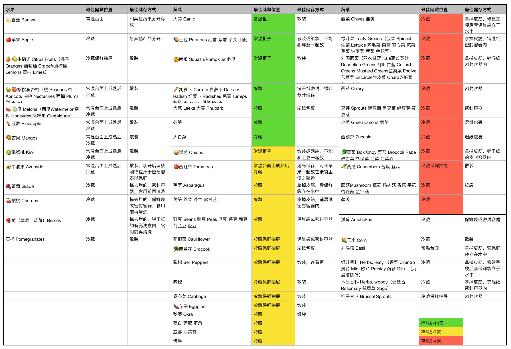
Figure 32: 水果和蔬菜的最佳储藏方式
而常温耐放的食物尽量囤 2-6 个月以备不时之需：
- 主食：大米 糙米 面 黄豆 绿豆 红豆
- 蔬菜：土豆 山药 红薯 胡萝卜 萝卜 西兰花 大白菜 包心菜 生姜
- 可种植的调味料：葱 蒜
- 干货：木耳 腐竹 海带 枣
- 奶：常温奶 奶粉
- 食用油
- 调料：盐 糖 醋 酱油 花椒 胡椒粉 咖喱粉
- 维生素 C
- 罐头：番茄罐头或番茄酱，豆豉鲮鱼，金枪鱼罐头，黄桃罐头
- 方便食品：方便面
- 咖啡
除了食物以外，还需要囤一些日用品：
- 个人清洁：牙膏 洗面奶 洗发露 沐浴露
- 日化用品：洗衣液 洗衣皂
- 家庭用纸：卷纸 抽纸 厨房纸 湿纸巾
- 消杀防护：酒精 口罩 一次性手套
- 厨房用品：洗洁精 垃圾袋 保鲜膜 保鲜袋 密封袋
- 常用药品：创可贴 止痛药 止泻药 肝药 降压药
Boardgame @话桌游
DONE 开个桌游评测的新坑 桌游
-
引子
新冠爆发以来娱乐方式骤减，而西雅图的雨季湿冷漫长，所以这几年来我也变得越来越宅，大部分周末都消耗在桌游局或是剧本杀上。桌游价贵，这儿的线下二手如 Craiglist 与线上二手如 Ebay 交易都没国内那么方便，幸好 Redmond 有一家有不少桌游 demo 可供试玩的桌游店，不然买新桌游的时候哪怕看了好几个视频，都还是会担心买来了不喜欢而落尘。然而能找到的桌游评测以国外的为主，会有一些喜好上的差异。我们便想着要不要开个桌游评测的大坑，博客与视频（如果有这个精力的话）顺次更新。这一篇先当一个引子，或者是目录，列出我玩过的桌游和剧本杀，未来买了或者玩到新的桌游也会更新于此。如果写了专门的桌游评测，也会在此添加链接。
不过评测确实是个大坑，需要找准定位才能持久。我们找桌游评测，发现一个很好玩的现象，桌游在不同国家和地区的接受度不同，评测的方式与受众都不太相同。比如桌游在美国有一个长久已有的偏见，即这是中年肥宅玩的次文化，Stranger Things 里的 Hellfire 俱乐部还被当成异教徒。我们组里的线上 happy hour 一般都是你画我猜和 codenames，我有次带大家玩一夜狼，发现十几个人中只有一人听说过。我们去桌游店也确实看到了很多中年男子，不过桌游店的戴口罩率是远超于其他地方的。也许有着这层缘故，英文评测多对游戏机制很看重，偏硬核，甚至还有 one stop co-op shop 的 Mike 这样的 solo 玩家。
而中文世界里，台湾的情形与美国的有些类似，Youtube 前排的几个博主似乎都有看美漫，不过 somehow 有些猥琐，我看的不多。华人的桌游评测相对更偏家庭和聚会。大陆平台上 B 站专门做桌游的博主比较少，相关的博客也不多，不过由于人口优势再加上三国杀剧本杀的出圈，集石上桌游评测非常可观，桌游也更容易出现在主流视线中。
-
定位
我们的定位，是女性角度出发，面向中文世界的简洁桌游评测。女性角度出发，并不是意味着这个评测就不适用于男性，只是网络上的桌游评测还是以男性为主，想多一些不同的声音。面向中文世界，一方面是写英文博客和做英文视频需要占用额外时间，不在我现有的计划之内，另一方面我们也不知道自己口味与英文世界的契合度。而简洁，则是因为看了太多长篇大论的桌游散记与十几分钟也没讲明白玩法的视频了。这个定位，并不是独有的，但应该是最适合我们的。
而想让评测更可能简洁的话，就需要更加 quantitative 的方式来给桌游评分。以下是我暂时想到的评分，其他衡量维度与计算方式。
评分：0.4 x 火腿评分 + 0.4 x Boop 评分 + 0.2 x 朋友评分
各维度：满分 10 分
- 复杂度：5 + 0.5 x 策略度 - 0.5 x 随机度；简单来说就是费不费脑
- 便携度：10 - 易丢零散件 (1
5) - 桌面大小 (13) - 盒子大小 (1~2)；简单来说就是能不能带去露营 - 收纳度：收纳方便度 x (1 - 盒子空置率)；简单来说就是能否满足强迫症
- 性价比：10 x 游戏时间 x 重开度 x 人数 / 价格（美元）；简单来说就是钱花得值不值
- 收藏性：0.5 x 绘图精美度 + 0.5 x token 精美度；简单来说就是哪怕性价比不高，还值不值得买
-
桌游列表
以下是我的桌游列表，附上一句话评价与相关信息。列出相关信息是因为我觉得 BGG 和集石上的题材和机制或缺乏重点或有错漏。我拥有的桌游用☑️表示，每种类型下按复杂度排序。
-
美式 RPG
- ☑️ Arkham Horror the Card Game 诡镇奇谈：卡牌版 🐙 [2016]
- 支持 1-4 人 / 推荐 1-2 人 / 复杂度 3.45 / BGG 8.2 分 (#25) / 集石 8.5 分 (#28)
- 题材：克苏鲁 / 机制：合作，行动点分配，角色扮演，手牌管理，角色差异
- Betrayal at House on the Hill 山中小屋 🔦 [2004]
- 支持 3-6 人 / 推荐 5-6 人 / 复杂度 2.38 / BGG 7.1 分 / 集石 7.4 分
- 题材：探险 / 机制：可变版图，角色扮演，角色差异
- ☑️ Arkham Horror the Card Game 诡镇奇谈：卡牌版 🐙 [2016]
-
德式算分
- Lost Ruins of Arnak 阿纳克遗迹 ⛰️ [2020]
- 支持 1-4 人 / 推荐 3 人 / 复杂度 2.88 / BGG 8.1 分 (#32) / 集石 8.0 分 (#184)
- 题材：探险 / 机制：资源构筑，工人放置
- ☑️ Everdell 仙境幽谷 🐿 [2018]
- 支持 1-4 人 / 推荐 3 人 / 复杂度 2.81 / BGG 8.1 分 (#30) / 集石 7.8 分
- 题材：奇幻 / 机制：引擎构筑，手牌管理，工人放置
- ☑️ Rick and Morty: The Ricks Must Be Crazy Multiverse Game 🛸 [2018]
- 支持 2-4 人 / 推荐 4 人 / 复杂度 2.5 / BGG 6.1 分 / 集石 5.7 分
- 题材：动画 / 机制：行动点分配，角色差异
- ☑️ Wingspan 展翅翱翔 🦅 [2019]
- 寓教于乐，收纳整洁，App 做得也很好。
- 支持 1-5 人 / 推荐 2-3 人 / 复杂度 2.45 / BGG 8.1 分 (#24) / 集石 7.8 分
- 题材：自然 / 机制：引擎构筑，手牌管理
- [已购扩展包] Wingspan: Oceania Expansion 大洋洲扩展包 [2020]
- ☑️ 7 Wonders 七大奇迹 🕌 [2010]
- 支持 3-7 人 / 推荐 4-5 人 / 复杂度 2.33 / BGG 7.7 分 (#80) / 集石 7.7 分
- 题材：文明 / 机制：引擎构筑，手牌管理，角色差异
- ☑️ Parks 国家公园：自然之旅 🏞 [2019]
- 支持 1-4 人 / 推荐 3 人 / 复杂度 2.16 / BGG 7.8 分 (#121) / 集石 7.8 分
- 题材：自然 / 机制：工人放置，可变版图
- Puerto Rico 波多黎各 ⚓️ [2002]
- 支持 2-4 人 / 推荐 4 人 / 复杂度 3.28 / BGG 8.0 分 (#37) / 集石 8.2 分 (#98)
- 题材：城建 / 机制：差异行动，工人放置
- Lost Ruins of Arnak 阿纳克遗迹 ⛰️ [2020]
-
毛线算分
- ☑️ Manila 马尼拉 🛶 [2005]
- 支持 3-5 人 / 推荐 4 人 / 复杂度 2.03 / BGG 7.0 分 / 集石 7.4
- 题材：贸易 / 机制：竞价拍卖，骰子，工人放置
- ☑️ Tea for 2 🍵 [2020]
- 支持 2 人 / 复杂度 1.62 / BGG 6.7 分 / 集石 6.1 分
- 题材：爱丽丝 / 机制：资源构筑
- ☑️ Machi Koro 2 骰子街 2 🎲 [2021]
- 支持 2-5 人 / 推荐 4 人 / 复杂度 1.58 / BGG 7.2 分 / 集石 6.7 分
- 题材：城建 / 机制：骰子
- ☑️ Jaipur 👳🏽♂️ [2009]
- 支持 2 人 / 复杂度 1.49 / BGG 7.5 分 (#156) / 集石 7.5 分
- 题材：贸易 / 机制：手牌管理，组合收集
- ☑️ Manila 马尼拉 🛶 [2005]
-
推理解谜
- ☑️ 谜宫：如意琳琅图谱 🏮 [2018]
- 支持 1-2 人 / 推荐 2 人 / 集石 7.9 分
- 题材：清史 / 机制：APP 辅助，解谜
- ☑️ 谜宫：金榜题名 🏮 [2018]
- 支持 1-2 人 / 推荐 2 人 / 集石 7.5 分
- 题材：清史 / 机制：APP 辅助，解谜
- ☑️ Mr. Jack in New York 开膛手杰克在纽约🕵🏻 [2009]
- 支持 2 人 / 复杂度 2.54 / BGG 7.2 / 集石 7.1 分
- 题材：罪案 / 机制：网格移动，角色差异，推理
- ☑️ Mr. Jack Pocket 开膛手杰克口袋版 🕵🏻 [2010]
- 支持 2 人 / 复杂度 1.83 / BGG 6.9 / 集石 6.9 分
- 题材：罪案 / 机制：可变版图，推理
- ☑️ Unlock!: Epic Adventures 大搜查！史诗冒险 🧳 [2019]
- 支持 1-3 人 / 推荐 2 人 / 复杂度 2.15 / BGG 7.8 / 集石 8.3 (#77)
- 题材：多种 / 机制：合作，APP 辅助，解谜
- ☑️ Covalence ⚗️ [2016]
- 支持 3-4 人 / 推荐 3 人 / 复杂度 1.70 / BGG 6.4 分 / 集石 6.0 分
- 题材：化学！ / 机制：合作，推理
- ☑️ MicroMarco: Crime City 小城大案 🔍 [2020]
- 支持 1-4 人 / 推荐 2 人 / 复杂度 1.09 / BGG 7.9 分 / 集石 7.7
- 题材：罪案 / 机制：合作，推理
- ☑️ MicroMarco: Crime City Full House 小城大案：满堂红 🔍 [2021]
- 支持 1-4 人 / 推荐 2 人 / 复杂度 1.24 / BGG 7.8 分 / 集石 7.7
- 题材：罪案 / 机制：合作，推理
- ☑️ 谜宫：如意琳琅图谱 🏮 [2018]
-
抽象棋
- ☑️ Blokus 格格不入 [2000]
- 支持 2-4 人 / 推荐 4 人 / 复杂度 1.77 / BGG 6.9 分 / 集石 7.4 分
- 题材：无 / 机制：手牌管理，板块放置
- ☑️ Azul 花砖物语 💎 [2017]
- 支持 2-4 人 / 推荐 2 人 / 复杂度 1.76 / BGG 7.8 分 (#65) / 集石 7.9 分
- 题材：艺术 / 机制：板块放置，组合收集
- ☑️ Santorini 圣托里尼 🏛 [2016]
- 支持 2-4 人 / 推荐 2 人 / 复杂度 1.72 / BGG 7.5 分 / 集石 7.7 分
- 题材：建筑 / 机制：板块放置，网格移动，角色差异
- ☑️ Harry Potter Hogwarts 哈利波特：霍格沃兹 🧙♀️ [2010]
- 支持 2-4 人 / 推荐 4 人 / 复杂度 1.48 / BGG 6.0 分 / 集石 6.0 分
- 题材：哈利波特 / 机制：骰子，点对点移动，板块放置
- ☑️ Minotaurus 牛头怪谜宫 🐃 [2009]
- 支持 2-4 人 / 推荐 4 人 / 复杂度 1.19 / BGG 5.6 分 / 集石 5.7 分
- 题材：希腊牛头人 / 机制：骰子，点对点移动，板块放置
- ☑️ Blokus 格格不入 [2000]
-
聚会
- ☑️ 三国杀 [2007]
- 支持 2-10 人 / 推荐 5, 8 人 / 集石 7.1 分
- 题材：三国 / 机制：手牌管理，角色差异
- 风声 🕵🏻 [2009]
- 支持 3-9 人 / 推荐 5, 7 人 / 集石 7.3 分
- 题材：谍战 / 机制：手牌管理，角色差异
- ☑️ Monopoly: National Parks 大富翁 💵 [1998]
- 支持 3-8 人 / 推荐 4-6 人 / 复杂度 1.80 / BGG 5.2 分 / 集石 6.0 分
- 题材：经济 / 机制：骰子，竞价拍卖
- One Night Ultimate Werewolf 一夜终极狼人 🐺 [2014]
- 支持 4-10 人 / 推荐 6-8 人 / 复杂度 1.38 / BGG 7.1 分 / 集石 7.3 分
- 题材：狼人 / 机制：投票，推理，角色差异
- The Werewolves of Miller’s Hollow 狼人杀 🐺 [2001]
- 支持 8-18+ 人 / 推荐 11-15 人 / 复杂度 1.31 / BGG 6.7 分 / 集石 6.1 分
- 题材：狼人 / 机制：投票，推理，角色差异
- Codenames 行动代号 📟 [2015]
- 支持 4-8+ 人 / 推荐 6, 8 人 / 复杂度 1.28 / BGG 7.6 分 (#114) / 集石 7.7 分
- 题材：谍战 / 机制：推理，词汇量
- ☑️ Dixit 只言片语 🖼 [2008]
- 支持 4-6 人 / 推荐 5-6 人 / 复杂度 1.22 / BGG 7.3 分 / 集石 7.5 分
- 题材：艺术 / 机制：讲故事
- ☑️ Jenga (Rick and Morty ver) 🧱 [1983]
- 支持 2-6 人 / 推荐 4 人 / 复杂度 1.12 / BGG 5.6 分 / 集石 6.2 分
- 题材：无 / 机制：累叠平衡
- ☑️ Exploding Kittens: NSFW 爆炸猫咪 🙀 [2015]
- 支持 3-5 人 / 推荐 4-5 人 / 复杂度 1.08 / BGG 6.2 分 / 集石 6.7 分
- 题材：漫画 / 机制：手牌管理，组合收集
- Junk Art 积木艺术 🧱 [2016]
- 支持 2-6 人 / 推荐 4-5 人 / 复杂度 1.21 / BGG 7.4 分 / 集石 7.5 分
- 题材：无 / 机制：累叠平衡，手牌管理
- ☑️ 三国杀 [2007]
-
DONE Everdell 仙境幽谷的简介与牌组分析 桌游Everdell仙境幽谷
Everdell 是我们很喜欢的一款桌游，重开了不下十次，还花了三百刀巨款买了山一样大的完整版。上周五我们又开了一次 Newleaf 扩展，我做了一系列风骚操作，在有几次失误的情况下还是拿了 140 分，非常得意。晚上在奶茶的作用下有点失眠，就构思起了这篇文章，想介绍一下 Everdell，并简单分析一下基础包的牌组。
Everdell 中文名是仙境幽谷，是一款工人放置+手牌管理的德式桌游。如其名字一般，这款桌游主题可爱，画风精美。玩家作为小动物从冬至秋经历四季，捡木枝，树脂，石子和浆果，搭建自己的城市。每一回合中，玩家可以在放置工人，打出卡牌或者换季结算这三种行动中选择一种完成一个操作。放置工人可以获取资源或者发动技能，花费资源可以打出卡牌，换季结算则可以回收上一季使用的工人，得到新的工人，并收获（春秋）或得到草地卡牌（入夏）。游戏中有四种资源，获取的方式从易至难排序分别是木枝（Twig）>树脂（Resin）>浆果（Berry）~石子（Pebble）。除了每回合行为受限，手牌和城市也有数量限制，分别是 8 张和 15 张牌。游戏结束后，玩家会对城市内的卡牌及达成的事件成就结算，分数最高的玩家获得胜利。
Everdell 在 BGG 的家庭游戏中排第四，总体排名 31，对于我这种讲究桌游画风精美主题亲切的人来说，Everdell 绝对能排到前三。Everdell 的复杂度有 2.8，算是策略性比较强的游戏。最佳人数是 1-4 人，虽然玩法基本一致，但是双人游戏和四人游戏还挺不一样的。双人玩的是运筹帷幄，打出风骚操作拿高分，而四人玩的则是临场应变，如何螺丝壳里做道场。而 Everdell 的几个扩展包，每个玩法都不一样，以后有时间的话我也打算讲一下这几个扩展包。
Everdell 的基础版有 48 种卡牌，一共 128 张，分为需要通过木枝，树脂和石子打出的建筑牌以及可以通过建筑免费下或者花费浆果打出的动物牌。而卡牌从功能上又可以分成五种牌型，分别是绿色种子图案的收获牌（Production），红色爪印图案的造访牌（Destination），赭色行李图案的游历牌（Traveler），蓝色公文图案的市政牌（Governance）和紫色风车图案的繁荣牌（Prosperity）。收获牌有 16 种，其他牌型各有 8 种。这些卡牌每张都有特殊技能，或与资源相关，或与卡牌相关，有些牌甚至可以影响打出的卡牌。而我玩了这么多局后，也发现有些卡牌配合后，可以取得一些不错的效果，非常好用。这篇文章就来细讲一下基础包里手牌和一些我比较常用的配合策略。
注：由于我的 Everdell 是英文版的，这里的中文翻译不一定准确。
收获牌 收获牌共 16 种，除农场、丈夫、博士和僧侣外，每种都是 3 张。收获牌顾名思义，主要是用来获取资源的。由于出牌和春秋都能收获一次，最优的出牌时机当然是冬季，但是有些比较好用的牌秋天之前打出来也不亏。我主打收获流，城市里会塞上 6-8 张收获牌，好处是资源丰富，也可以节省工人留作他用；坏处是后期城市空间较少，如果没有地牢（Dungeon）或大学（University）的话，双人游戏会有放不下较多分高繁荣牌的风险。
- 农场（Farm） x8：收获牌中大家最常用的就是农场，虽然表面上看起来平平无奇，只能收获浆果（浆果：我也很难收集的好吧），但是它可以很多其他的卡一起产生奇效。而且由于数量多，基本上每人都有机会打出至少一张农场牌。
- 田鼠丈夫（Husband/Harvester） x4：农场可以用来打出丈夫和妻子，丈夫和妻子只占一个空间，而配对的夫妻中丈夫可以拿资源，妻子可以拿分，如果秋天以前能将夫妻二人集齐的话相当于用一个空间拿 7 分外加两个任意资源（比如最为匮乏的石子），非常划算。
- 蟾蜍船夫（Barge Toad）x3：如果城市中有农场，则每个农场给 2 个木枝。
- 杂货店（General Store）x 3：如果城市中有农场，则额外获得 1 个浆果。
除了以农场为核心的这 4 张牌以外，还有 7 张可以用来取得资源的牌。
- 仓库（Storehouse） x3：仓库拿木枝和树脂的效率比货船和树脂加工厂高，很适合囤货，但是由于取货需要耗费一个工人，所以适合搭配扫地工（Chip Sweep）或矿鼹（Miner Mole）令收益翻倍。注意如果要用矿鼹复制仓库的话，场上得有另一个玩家的城市里有矿鼹才行。
- 花栗鼠扫地工（Chip Sweep） x3 和 矿鼹（Miner Mole） x3：这俩一个可以复制自己的收获牌，一个可以复制对方的收获牌，非常好用。除了用来刷资源，还可以与一些换分数的收获牌结合。比如结合 Newleaf 扩展包的园丁（Gardener），热气球（Air Balloon）和市长（Mayor），可以市长多刷 8 分。
- 货船（Twig Barge）x3，树脂加工厂（Resin Factory）x3 和矿井（Mine）x3：这三种牌分别可以获得木枝，树脂和石子，还可以用来免费打出蟾蜍船夫（Barge Toad）、花栗鼠扫地工（Chip Sweep）和矿鼹（Miner Mole），非常不错。
- 土拨鼠小贩（Peddler）x3：小贩可以将任意两个资源更换种类，可以将多余的木材换成石子，也算是法官（Judge）的一个替代品。
而游乐场和老师则是可以用来抽牌。
- 游乐场（Fairground）x3: 游乐场可以抽两张牌，我个人觉得由于手牌有上限，这没有不占空间又可以选择时机抽三张牌的漂泊者（Wanderer）好用。
- 老师（Teacher）x3：老师也是我不常用的牌，无差别奉献牌感觉没啥用处，也不会像五谷丰登（乱入）这样让抽牌数随着人数变化。
另外三个动物牌则是用来换分的。
- 博士（Doctor） x2：博士牌面 4 分，还可以将浆果换分，如果浆果特别多的话可以打出 10 分以上，还是很划算的。
- 僧侣（Monk）x2：僧侣也可以将浆果换分，和修道院（Monastery）结合也可以换比较多分，但是修道院需要献祭工人，个人觉得没有博士划算。
- 啄木鸟（Woodcarver）x3：啄木鸟顾名思义，可以将木枝换分，如果城市里盛产木头的话是一个消耗的办法。
-
市政牌
市政牌一共 8 种，几乎张张是精品，如果能在春天打出，可以让玩家春风得意，整个游戏过程都顺利不少。不过这些牌都是可遇不可求，且拿且珍惜。其中，法院，法官，店长和地牢由于非常好用，每种只有 2 张。
- 法院（Courthouse） x2：攒石子神器。法院可以在打出建筑牌时获得木枝，树脂或石子资源。还可以免费下省石子神器法官。
- 乌龟法官（Judge） x2：省石子神器。法官则可以在打牌是替代一个资源，这样就可以将昂贵的石子替换成量大管饱的木枝。
- 兔子店长（Shopkeeper） x2：攒浆果神器。店长可以在打出动物牌的时候获得浆果。
- 地牢（Dungeon） x2：一换三神器之一。地牢可以将城市里的动物牌当成起重机（Crane）或旅店老板（Innkeeper）来用，可以免费打出游侠（Ranger），再和废墟（Ruins）搭配使用的话，可以在秋季榨干城市里船夫（Barge Toad）、矿鼹（Miner Mole）和小贩（Peddler）这种 1 分小牌的最后一点价值，变成至多八个石子和一个额外的工人行动，还可以将讨人厌的小丑（Fool）变废为宝。
而另外四种则每种有 3 张。
- 起重机（Crane） x3：一换三神器之二。可以冬天一个工人换取矿井（Mine，可以拿石子打出货船）、货船（Twig Barge，可以拿木枝打出农场）、树脂加工厂（Resin Factory，可以拿树脂打出农场）、农场（Farm）仓库（Storehouse）这种收获牌，春夏两季打需要两个石头的法院（Courthouse）、大学（University）或是留着秋天打那些需要三个石头的繁荣牌。不仅如此，还可以免费下回收资源大师——建筑师。
- 蜜獾旅店老板（Innkeeper） x3：一换三神器之三。可以换法官（Judge）、女王（Queen）、国王（King）这种需要比较多浆果的动物牌。
- 蝙蝠历史学家（Historian）x3：可以抽牌，但是会被手牌上限限制，略为鸡肋。New Leaf 扩展包里有更好用的牌。
- 钟楼（Clock Tower）x3：钟楼是市政牌中略为鸡肋的牌，如果刷出比较好的资源位置且在早期拿到这张牌的话，比较适合使用。
-
造访牌
造访牌故名思义，都是需要放置工人来造访以达成效果，收益并不明显，所以打出的时候都会比较谨慎。造访牌共 8 种，除了旅店牌有 3 张外，其余都只有 2 张。另外，旅店和邮局的位置是开放给所有玩家的，而墓地和修道院的工人是无法回收的。
- 大学（University） x2：大学是我觉得最有用的一张造访牌，可以清理城市空间回收资源，获得额外的资源和分数。不仅如此，通过大学还能免费打出 4 分的博士。（Doctor），并将多余的浆果换成分数。每张牌都有 5 分以上的收益。
- 瞭望台（Lookout） x2：瞭望台可以复制一个资源位置，在三人以上的游戏中还是很有用的。而且可以免费打出不占用城市空间的漂泊者（Wanderer），省两个浆果。
- 鼠女王（Queen）x2：工人省钱牌之一。女王是唯一一张动物造访牌，女王视察，则可让一个工人免费打出一张 3 分的牌，在家里没矿又抽不到起重机（Crane）的时候，用来打大学（University）、法院（Courthouse）、地牢（Dungeon）、剧院（Theater）这种需要花费石子的且收效颇丰的卡牌，还是比较划算的。
- 旅店（Inn）x3：工人省钱牌之二。旅店本来是张节省资源的好牌，但是由于它的位置是开放给所有玩家的，而每回合只能完成一个操作，除非是双人游戏，旅店一般都会便宜了其他玩家。不过由于住店有 1 分的费用，所以如果在比较早期打出的话，一般也能有 3-5 分的收益。
- 邮局（Post Office）x2：工人赌博牌。邮局一般是用来洗自己手牌的，感觉比较适合开局八张全是废牌的情况。和信鸽（Postal Pigeon）一样都是靠天吃饭的牌。
- 墓地（Cemetery）x2：工人赌命牌。墓地也是属于搏一搏单车变摩托的牌，如果身处秋季，觉得牌堆或者废牌堆里有神树（Ever Tree）、城堡（Castle）、宫殿（Palace）、国王（King）、女王（Queen）这种 4-5 分牌的机率非常高的话可以葬个工人一试。
- 修道院（Monastery）x2：工人献祭牌。如果身处秋季，手上资源和工人都比较多的话，可以和僧侣（Monk）组合，献祭 4 个资源和 2 个工人换取 9 分。
- 教堂（Chapel）x2：工人换分牌。我个人感觉不太划算。
-
游历牌
游历牌的效果都是一次性的，所以一般都会用于游戏后期。游历牌共 8 种，除了废墟，漂泊者和信鸽各有 3 张，其余游历牌都只有 2 张。
- 废墟（Ruins） x3：废墟是唯一一张建筑游历牌，虽然只有 0 分，但是可以将代替（毁灭）的卡牌资源收回，并额外抽取 2 张手牌，在后期资源紧张又没什么好牌的时候，可能会起到一些效果，所以拿到的话一般都会备着。特别适合和地牢（Dungeon）搭配使用。
- 壁虎漂泊者（Wanderer） x 3：漂泊者是我比较常用的牌，因为其不占城市空间，又可以抽卡，如果搭配店长（Shopkeeper，拿回一颗浆果）或学校（School，多加 1 分）的话，还是可以白白多拿 2 分的。
- 信鸽（Postal Pigeon） x 3：信鸽只有 0 分，虽然可以免费打出一张 3 分以内的牌，但是比较看手气，我这种非洲党一般都会谨慎使用，但我女票也有过搏一搏单车变摩托打出一张地牢（Dungeon）的情形。我个人觉得比较适合手头有地牢或者打出地牢的概率较大的时候使用。
只有 2 张的游历牌中小丑和吟游诗人都和分数有直接关系，而游侠，埋葬虫和牧羊人都是和相应建筑一齐使用比较有意义。
- 臭鼬小丑（Fool） x 2：小丑牌一般都是阴人用的，不仅会让对手减少两分，还会占据对方的城市空间，让对手盘算已久的大招无处可下，用得好的话可以达到 5 分以上的效果。
- 黄鹂吟游诗人（Bard）x 2：吟游诗人牌最多可以有 5 分，和 Journey 有点像，适合最后废牌特别多城市又有空位的情形。
- 狐狸游侠（Ranger） x 2：游侠特别适合和地牢一起使用，可以开地牢给城市空出新的位置，还可以将工人重新放置，虽然牌面分数只有 1 分，但是用得好的话可以打出 5 分以上的效果。
- 猫头鹰牧羊人（Shepherd）x 2：可以使教堂上的钱翻倍，算是屎上雕花吧。
- 埋葬虫（Undertaker）x 2：主要适合博墓地的赌徒吧。
-
繁荣牌
繁荣牌除了妻子会影响到丈夫是否拿到资源以外，都是在游戏结束时才结算，而且其需要的资源一般都不少，所以一般都会留在秋天打出。繁荣牌一般都能达到 5 分以上的收益，基本不亏，所以一旦出现在草地中，便会成为大家抢夺的目标。繁荣牌一共 8 种，除了妻子有 4 张以外，其余都是每种各 2 张牌。
- 建筑师（Architect） x2：可以用来将剩余的石子和树脂换分，算上牌面最多能得到 8 分，避免浪费。
- 妻子（Wife/Gatherer） x4：和丈夫配对不占多余空间，配对后不仅算上牌面一共得到 7 分，还可以让丈夫有额外的收益。
- 国王（King） x2：牌面 4 分，达成事件成就还能有 1-2 分的加分。
- 学校（School） x2：牌面 2 分，针对常见动物加分。
- 剧院（Theater） x2：牌面 3 分，针对独有动物加分。
- 城堡（Castle） x2：牌面 4 分，针对常见建筑加分，还可以免费打出国王（King）。
- 宫殿（Palace） x2：牌面 4 分，针对独有建筑加分，还可以免费打出女王（Queen）。
- 神树（Ever Tree） x2：牌面 5 分，针对繁荣牌加分，还可以免费打出任意动物牌。
2005
关于牙 @苦吟诗现代诗
ziyunch @ BlogBus
最近很颓废 似乎每天都是沙发动物 什么都不能吃 牙很疼 医生说是长牙的原因，却又不是智齿 或许不是一般的牙 它刺在我心 将我扼的难受
| 评论 | ||
|---|---|---|
| （没有名称） | 2006/12/16 11:55 | 我们喜欢的东西很相近哦，动漫也好，音乐也好还有学科。 中考失利不算什么，高考败退才是真正的惨。不同大学经历可能决定不同人生道路。 |
沉默 @苦吟诗现代诗
ziyunch @ Blogbus
沉默是指缝间的流水 一不留神忘了它 失去 顺带走了时间 缺一片哗哗 沉默是时间里的风 微微的远去 时间流逝 怎是那无言的倾诉 沉默就那么清澈 透明 时间的小格触不到它 也装不满它 沉默不是造物一种 流水、清风 挥手拂袖 惬意的一杯酒
eyes in Nazca,Peru @流水帐初中Google-earth
ziyunch @ Blogbus
今天用 google earth 想看纳斯卡线条的，结果没找到。却发现了个很奇怪的东东。纳斯卡边上竟有一双大眼睛……
疑似 UFO @流水帐初中
ziyunch @ Blogbus
今天傍晚在看电视的我被外婆叫到楼上去。心里想着又是哪盆花开得美丽，可这时早已吃完晚饭，花都将谢欲谢，哪里来这满盆吐香之妙景呢？出了阳台，外婆让我向上看。所谓高处不胜寒，但天上三架飞机竟丝毫不动。是风筝吗？决非！第一今天无风，第二那物体底下没有线（若说是太高太远看不见细绳，那风筝隔那么远竟然还那么大岂不可疑）。那是断了线的风筝吗？不是！不可能三架长久地处于同一直线。那是飞机吗？看上去的确像战斗机，正三角形中一竖，和影片中一样。
可是它怎么会长久地不动？又不是直升机！（原谅我可怜的飞机知识，可能飞机可以悬空吧，但我更倾向于下来要说的一种想法）难道是，masaka……，是 UFO？有可能的，谁说 UFO 一定是铁饼状的呢。可惜没有照相机把它拍下来……唉……
兴奋之——wallop&Gmail @流水帐GmailWallop
ziyunch @ Blogbus
今天真是很兴奋。
昨日想找个 wallop 玩玩，就寻找起来。在从不知网上看见有赠与 wallop & Gmail 的邀请，便把我的 mail 与 blog 留下。那个日志是比较早的了，但看见前几日还有留言，心想还是有希望的。今天打开 mail，看到两个邀请函。兴奋 ing~~ 随即申请！
Gmail 的界面很平常，就很好用。2G 的容量，还有其他附加的容量，真大啊！而且没有广告，这点特别好。若是有了广告，凭这样平常的界面是吸引不了人的，当然这只是一督后的想法
wallop 则不同，是集合了 flash 与.NET 的东东。全英文的界面，看的我一头雾水。想用词霸，但猛一醒然：这是 flash 的界面，怎么鼠标取词啊？！哎哟，我的弱项英语，在暑假这大好时光还咬了我一口，好痛好痛……只能一个字一个字查了~~所以一定要好好学英语。虽然有全英文这个篱笆挡着我，但我仍然清晰地看到，“我老婆”（这个中文昵称有点别扭，毕竟我是女的，且非 GL）太漂亮了。毕竟是 flash，比别的多一些珠圆玉润、百媚千娇。老婆虽无价，但还是要付出许多。邀请过程不说，且说那内存使用及 CPU 使用的飚升，就令我这种低配置电脑吃不消，不能尽情享受啊！
虽然这样，兴奋之情仍不消减，且容我大笑三声
哈
哈
哈
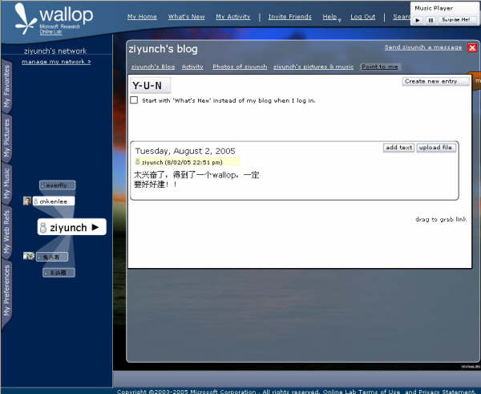
麻辣豆腐 @下厨房烧菜诗词
今天起来想自己烧菜，便找了麻辣豆腐的做法。这个菜可是要 炒 的，而我平生最怕 炒 菜了。怎么办呢？全副武装！于是我找来袖套、手套、围裙，只差没有面罩了。然后做切豆腐什么的准备工作。万事具备，只欠东风了，可就是这风刚开始的时候偏了点，大概成了南风还是北风，忽忽的才转了过来，就坏了事，“铜雀春深锁二乔”了。辣椒下锅时慢了点，油已经熟透了。～～怎么办，焦了，只能将就将就了。不过还是很香的，就是有一股焦味儿。
戏词一阕：
采桑子 焦麻辣豆腐 油烟四起人方忆 下了辣椒 下了发焦 开水白玉混着烧 出锅处处香飘溢 细品佳肴 细品谐调 身上衣杉早就潮
尼康 coolpix5900 之购买 @流水帐相机
ziyunch @ Blogbus
今天台风降临苏州，风雨大作。但是中午一切正常，丝毫看不出一点要下雨的征兆。那时风虽然大，但又凉爽又无雨，的确是 买 东西的好天气——与前几天的酷热或是雷雨相比。如此天气，我与妈妈拿了把伞就出门了。先乘了 31 路去二院看奶奶——她心肌缺血正住着院，下车时就下起雨来。雨虽不大，风的肆虐使我们不得不撑起伞来。出了医院，雨已下大，风声呼啸，很是可怕。再乘了一站 31 路，转乘 49，又是一站路，便来到今天的目的地——友通数码港。
进入之后，我们直奔尼康柜台。原来选定的是 5600，但由于镜头、CCD 等原因，我们的目光转向 5900。这 5900 可比 5600 贵 2 个（5900 - 5600）张的一元 RMB，要不，再考虑考虑？……
于是我们奔至 SONY 柜台，柜台上的 PSP 可真漂亮（偏题～～）。SONY 我们看中一款 W5，长得当然比尼康漂亮，价钱也贵～～。老妈眼神略往下一瞟，这 P 系列挺漂亮。P100……价钱差不多。恩，再看看。SONY 的东西就是时尚啊，看那 PSP……（又偏题）。那佳能呢？我和妈妈找遍了一楼，这佳能的专柜还真找不着。可是 A95 是长胜不衰啊。只能找到杂柜（非专柜之意）。长得一般，也老，可是，它有手动功能啊！怎么办呢？先去取钱吧。
走到门口，我们这才知道风雨有多大。冲！老妈一声令下，咱俩冲入雨帘之中。还好，没几步就有一个机器，可是我们找了半天，也没看到有什么关于它是否通用工行的卡说明。怎么办呢。我们又不是成天跟钱打交道的人，这个怎么清楚，再跑吧！——没想到，这一跑就跑到了石路。当时雨大，但是风更大，伞是不可能撑地起来，可我们都只穿了夏装。这真是个惨痛的记忆，冷啊！！！
终于拿到钱了，想来想去，再去尼康看看。那老板看到我们，肯定想到不把握好这机会就没戏唱了。于是，诋毁、夸张、教导、循循善诱……该用上的战术统统用上。我前夜恶补的数码知识在此人的唾沫前显得格外渺小。我累了，老妈也累死了，拍板，好，买上了。
然后查号，试机，输电（停，这一步没有，他那儿没电脑），……可以回去了。我无限留恋地望了一眼隔壁的 PSP，又在 Apple 的柜台前流口水许久，回去了，回家家了。
等等，这外面的风雨越来越大，出大门可能吗？迟疑、迟疑、不要迟疑，冲啊～～
P.S.大风大浪我都经历了，还有什么可怕的？
P.S.2 ——妈～回家我们开暖气～～
——％＃！·％＃＊）＊—￥……％￥￥＃
难吃 @流水帐初中
ziyunch @ Blogbus
今天出去，路上嘴馋，看见好利来的广告——炎炎夏日，好利来冰品让你爽一夏什么的，就进去了。点了一款坐下来吃。甜，腻，温，第一口就让我受不了。你甜好了，别太腻呢；你腻好了，别不冰呢；你温好了，别甜呢。上当上当，以后吃冷饮，还是到专门的店去，虽然贵一点，但味道，不知好多少倍！
不过店里人倒挺多，不知何故
TODO 有感于太极旗飘扬 @观后感影评电影太极旗飘扬
ziyunch 发表于 2005-08-12 01:51:03 @ BlogBus
起初看这部片子是冲着元彬的名字去的，看了一会儿就不再搀杂着个人的喜好而以电影的角度去看它。战争真是太残酷了，它可以使被它牵涉的人失去人性。说什么战争，其实是疯子参加的泯灭人性的。
原来是一个多温馨的家：哥哥将要结婚，弟弟考上大学。一切的幸福都在残酷的炮声中毁灭：韩朝南北战争爆发了。有心脏病的弟弟被强迫征兵，爱弟心切的哥哥一同上了征战的火车。当哥哥知道有勋章可以让弟弟回家时，他疯了似的战斗。他不顾一切的参加战斗，他冲在战争的最前方，他的心里只有勋章，因为那个可以让弟弟回家，他要保护弟弟，他不让弟弟参战。他一次又一次的立功，他成了英雄，可是他变了，他成了禽兽，可以这样说吧，他泯灭了人性，他心里剩下的，只有对弟弟的温情。终于，他得到了勋章，以同伴的鲜血，以朋友的生命换来的勋章。但此时，弟弟心中只是充盈着对他的仇恨。弟弟对哥哥的仇恨。他已经不认识他了，那个嗜血的怪兽是他哥？他拒绝回家，拒绝用那沾满鲜血与良知的勋章来换取他回家的自由。部队返回家乡，他去寻找他的家人。可正当他看到他的大嫂时，反共联盟的人出现了。“她是共匪！““不，我只是要换口饭吃，韩国政府没提供粮食。“哥哥出现了，他想要救他的未婚妻，可是，他竟然动摇了，他不相信她了。她死了，弟弟进了监狱。当他逼长官去放了他弟弟时，长官下达了烧毁监狱的命令。其实弟弟逃了出来，可他不知道，他投了共产党。当弟弟看到哥哥那封未寄出去的充满温情的信时， 他醒悟哥哥所做的一切，他要去找回哥哥。可是当他找到哥哥时，哥哥眼里只有鲜血。在兄弟自相残杀的时候，他终于唤回了哥哥。“你回去，不要管我，我会投降然后来找你，你先走！“可是不会有然后了。他又扫射向了共党，自己中了无数颗弹…….
这就是战争，这就是战争。战争是残酷的，带给我们的只有无尽的悲哀。我最大的感觉是压抑，压迫着我的灵魂，一直到现在久久不能舒坦。这不是场保卫战，这是内战，内战，同胞骨肉相残，杀害的只有自己人。屠杀，屠杀，内战中竟然有屠杀，内战就是一场屠杀。最后俊泰与俊锡的打斗，正是内战的一个缩影。为什么要内战，不就是双方政见不同吗，可为什么要引起内战。似乎每个国家都有内战，可伤害的是谁，是普通的家庭，是普通的老百姓。从俊泰的心路可以看出，他从来不支持哪一方，他从无所谓什么是叛变，他只想保护自己的弟弟。我想，几乎所有的参战者都不是报有什么纯正的战争的意愿。他们是为了亲人，为了情。可是到最后，一切都会变质。中国也是如此。
我们，从来看到的都是褒奖共产党在国共内战中的英雄事迹，却从来没有考虑过死亡的人数，还不包括泯灭的灵魂的数目。死的都是中国人，中国人，同胞啊！流的都是自己的血。可为的是什么？无非是两党政见的不同，少数高层的意见的不同。国民党不愿分享权力，共产党不愿放弃武力，这就使那么多的中国人白白牺牲。这场战争是为了人民的利益吗？决不！如果这样就决不会引起战争。都是为了自己党内的利益。这么多条生命！
现在当然说好的，因为共产党将国民党踢到台湾掌权了。于是，大批影片喷涌而出。在共产党历史定论的指导下，英雄没有一点斑瑕，都是一个模子里的伟大光辉，都不是人，都被神化。劣质电影一部接着一部，敌我分明。敌方一定都是贪生怕死坏到骨子里的坏人，我方一定都是英勇顽强的好人。这类电影看的太多了。一个个硬邦邦的英雄，什么什么主义，永远第一。太虚伪了，怪不得我看时没有一点心灵的触动；太苍白了，怪不得放国产战争片时人们的脸上是带着笑的。政策不同。国内的政治封锁太严密了。
这部片子中敌我双方没有简单的定义好坏，双方都是人。人性的光环在片中闪现。可是我却知道，这部片子没有通过审核。为什么？这部片子比国产的不知好上多少倍，只是由于其中有两三句骂共产党的话（朝鲜共产党）？太荒谬了。难道只有那些一味标榜共产主义而忘记人性，为了革命不把人当人看的片子才入的了审核者的眼？太荒谬了。
不管共产党如何抵制这部影片，它还是值得一看。战争中的人性，是该看看了。
附一个影评
看看百度贴吧里这些帖子，我只能感到对那些丧失了人性的盲目物种——楼主及其拥护者的悲哀：
http://post.baidu.com/f?kz=18872129
http://post.baidu.com/f?kz=19554202
http://post.baidu.com/f?kz=25894089
我不想一一列举了，他们根本没看懂，只有虚假盲目的"爱国热情”。对于他们，我不想多说什么，这对我是种浪费。
来看一些新鲜的气息吧：http://post.baidu.com/f?kz=22728638
1: 我认为,的本质是为了反对战争
根据结局可判断,没有说双方的对错,只是,演员哭了,观众哭了!
虽然,片中韩国军队大骂共产党
但
仔细想一想,虽然他们骂了,但是,这才是真实的!!!
不可能说,我快被人杀了,我为了对方的利益,我还很高兴
对吧!
这个贴吧中,有很多人在骂韩国人,我认为是不对的!
韩国人是为了国家,就向第 9 集中战败了的德军将军对自己的士兵说的话"你们有权享受和平"其实,真正想战争的没几个人,只是,没办法啊!
士兵,就要服从命令
打仗,就是士兵的天职
在战场上是敌人,也许,在平时还是朋友中有表现
这足以证明,是反战片!!!
我,热爱和平!!!
的导演也爱,在韩国是票房第一
足以证明,韩国人也热爱和平!
热爱和平的,同意我的观点的
顶吧!!!!!
2: 好文 推荐
电影看了
很不错
给观众另外一个角度审视自己的思维方式。
爱国就是爱执政党，人权就是生存权——这就是国内 99％的人的理解能力。
搁在清朝就是爱慈禧，就这么荒谬的逻辑。
记得北大校庆时，五四精神被某要人归结为爱国主义，自由民主才应该是正确的表述吧？说起教育制度，这似乎也不是教育制度的错，现在没人相信教科书那一套了。
应当是民族主义蒙蔽了心灵，这种爱国情绪的狂热是外界的客观压力造成的——不够强大的国力以及历史的记忆，使得国人的心里过分的敏感和脆弱，比如前段时间 NBA 在中国有一个广告（Cleveland 骑士队的 LeBron James 在篮球架下打败了一个传中国古代侠客衣服的老者以及抵抗住一群窈窕的中国 古代美女的幻觉诱惑，把篮球砸进蓝框），就这样一个商业广告几乎引发了全民的网上抗议。
还有麦当劳那个 Location 的事件。这种狂热的国家情绪尤其在大学生中最为狂热，它遮掩了太多的东西使我们看不见这个世界，远离了真实的生活。但是对于爱国主义仅仅持谴责的态度好像也是不行的，不能 把它说得一钱不值，因为它毕竟在某些时刻也是维护我们自身的一种有效方式。
应当做的是理性地认识以及区分国家政府的性质，不再把它看成绝对的优先于个人利益的抽象体，它仅仅是类似于物业管理机构。
说起来容易在现实中一定碰壁，看看生活的现状除了悲哀不知道何去何从。
如果谁敢出去呐喊呼吁，那么受罪的不仅仅是他自己。记得以前看过一文章，大意是：如果在俄罗斯被沙皇流放，百姓都懂得同情并站在被流放者一边
若换成中国，百姓都站在清政府一边落井下石。最可怕的其实不是独裁者，是愚昧而狂热的下层被压迫者。
“作奴隶作久了分不清自己的利益和主子的利益”——，
屈原难道不是这样的奴隶吗？
被我们中华民族作为楷模的形象竟然是奴隶总管的化身，这是不是一种悲哀？
TODO 水瓶座 @流水帐星座
ziyunch @ QQ 空间
水瓶座
1 月 21 日～2 月 19 日 主宰行星：天王星 属性：风相星座
冬天出生的生辰星位或太阳在水瓶座的人的特点：
在充满绝对意识的魔羯座的人之后，是头脑中不断闪烁着新奇古怪念头的水瓶座的人。你常常不考虑事情的某些具体方面，而一味推动它们的前进。你是一个富有开拓精神的人。
水瓶座的人思维能力高于本能，是个先锋派人物。你感兴趣的不是昨天而是明天。你喜欢坐超音速的"协和"号飞机，而不愿骑自行车。你迷恋斯特劳斯优美的旋律，而不喜欢听莫扎特的小夜曲。缺乏现实观念，当你沉浸在某一念头中的时候，会废寝忘食。人们争相与你交往，是因为你的创新精神和开拓思想，看事物的积极方式、理想主义、宽宏大量和生来就具有的高尚品德。但是你缺乏现实的态度、狂热、生来就不会平静地生活和凡事心中无数，这终究会使人们感到厌倦。
像滴
水瓶座的人是个个性极强的人，你向往人之间美好的情意，但绝不愿意受感情上的丝毫束缚。你喜欢丰富自已的思想境界，喜欢到旅行中去开阔自己的视野，并喜欢在与人交往之中了解你们的思想观点。水瓶座的人不能忍受任何约束，你也决不强迫自己去服从任何纪律。如果某件事引起了你的兴趣，你能为之付出巨大的努力，单调无味的生活会使你心烦意乱，甚至能产生一种使你周围的人都无法忍受的变态心理，你时而异想天开，幽默过人，时而又冷若冰霜，令人费解，这常常是一个不易相处的人。你不能生活在谎言之中，过分耿直坦率，会被人认为是个怪人，其实人们对你并不真正了解。
像滴
理论上，水瓶座的人善于重新组织所有人的精神和物质生活。但实际上你并不具有物质上发迹的才能，因为你缺乏必要的手段。
像滴
你交往的人和结识的友谊，在你的命运中将起重要的作用。你的生活离不开朋友。一般地说，在困难的时刻，你总会得到亲朋好友乃至素不相识的人的帮助，而你自己也随时准备帮助和支持那些在烦恼之中煎熬的人，有时甚至全然不顾自己的一切。如果你错信于人，有可能导致物质上的巨大损失。实际上，如果真正涉及到钱财的问题，你并不动心，贫穷还是富贵你都觉得无所谓。你既能很好地适应俭朴的生活，又不知道如何不为财富冲昏自己的头脑。
这儿有差异
水瓶座的人是新思想的开拓者。如果给你以完全的行动自由，让你随心所欲地去思考和决定，那么你会表现出卓越的工作才能。你是一个创新者，层出不穷的念头和突如其来的直觉，使你能预感到未来。许多科幻小说作家、发明家，你们的生辰天宫图中都受水瓶座或天王星的强烈影响。这一座的人对发现、探索和一切有关开拓性的事情以及航空和火箭都感兴趣，你也可能在摄影和电影艺术方面有所创新。
又像了
水瓶座的男性 水瓶座的男性内心世界极为错综复杂，很难理解。你给人的表象是朴实爽直，但内在心理总是在悖论和矛盾的境界中徘徊。一般地说，你对人热忱，愿意帮助人。但在某些特殊的情况下，你也会表现得异常冷漠和不近人情。 你既有个性，又富有魅力，这是个能使你所爱的人神情荡漾的人。你不愿按规章制度办事，也忍受不了任何约束。 实际上，你更多喜欢的是友谊并不是爱情，因为爱情会妨碍你形而上学的沉思：我是谁？我从哪里来？我到何处去？但你也会狂势地投入到爱情的怀抱，或者把一切都理想化。 由于土星的影响，水瓶座的男性性格比较冷漠、孤僻，思想富有哲理性。如果天王星和影响力大，则会使这一座的男性变得很幽默，喜欢与人交往，并对所有新事物充满好奇心。 水瓶座的男性在 40 岁左右的时候，常常会出现不可避免的注定的人生转折。你会改变自己的生活，抛弃过去，奔向新的未来。 与生辰星位在狮子座的女性会情投意合，你们都有成为强者的欲望，是同样有才干的人。 双子座的女性和你和睦相处的伴侣，她会从精神和事业上不断地给你以激励。 娴雅和富有魅力的天秤座女性，能给你以艺术创作的力量。
不是男性所以略
水瓶座的女性 [ffg,#855FA8,#FFFFFF]现在没这么大[/ft] 好奇心强，常常把强烈的愿望和独立精神融合在一起。她是一个反习俗和不愿意随声附和的人，说话和做事全凭自己的兴趣。 [ffg,#855FA8,#FFFFFF]像地有点过头[/ft] 她希望凡事都能自己去自由选择和行动。然而，她的反应是难以预料的，有时甚至会使人怀疑她的理智程度，这一点尤其表现在爱情问题上。她的情 感与她的想象密切相关，她不但喜欢现实中的人，而且也喜欢从她的幻觉中走出来的人。实际上，她的心常常停滞在爱情上，尤其当金星或月亮处在她的生辰天宫图 中时。 她容易走极端，可能有一颗最纯洁的心、最理想的爱情，也可能变得完全冷漠无情。一定不要使她失望，否则将无法挽回地失去她。但是，一旦她真正发现了自己的爱，那么她会把自己全部的智慧、全部的真诚和自己所拥有的一切都毫无保留地献给自己所热爱的人。 她的爱情生活是浪漫的，比传统的程式更自由，她希望在友谊的基础上去发展永恒持久的爱情关系。 对于她来讲，独立自主比单纯爱情生活的满足要更珍贵得多。因此，水瓶座女性的爱人一定要注意尊重自己妻子的这一性格。这样你们的爱情才会是到健康发展。 生辰星位在狮子座的男性会对你产生好感，你们对事业有共同的愿望和共同的追求。 双子座男性的求知欲和真诚的友谊，会打动你的心弦。你们会在志趣相投之中和谐地生活。 天秤座男性的灵感和对美的向往会唤起水瓶座女性的爱情。 [ffg,#855FA8,#FFFFFF]么爱过，不知道[/ft]
水瓶座的儿童 [ffg,#855FA8,#FFFFFF]就对利的方面不像拉[/ft] 所有新事物都会映入水瓶座孩子的眼帘，这可能是个小发明家。你喜欢人们指给你看看，讲给你听听和使你懂得其中的道理。你的接受能力极强，很 快就会有与众不同的见解和观点。水瓶座的孩子可能聪明过人，也可能对所学的知识全无兴趣。这主要取决于学科的内容或你的情绪。这是个比较任性的孩子，你的 矛盾心理可能达到登峰造极的程度。在"倒行逆施"中，你有时会得到一种令人无法理解的满足心理。 水瓶座的孩子独立精神很强，总喜欢到思想境界中去寻觅自己所需要的东西，而不愿意为物质利益大费心机。在创造和革新方面，许多有利可图的事情在等待着你，但你从不迎利而上，而是只做自己喜欢的事。 你的理想出路是空间和航空领域，电子、信息、电力、摄影、电影、神秘学或哲学、公司以及有关铀或镭的职业。 水瓶座不同 10°内出生的人的基本性格： 出生日期：1月 21 日～1 月 31 日 [ffg,#855FA8,#FFFFFF]自我感觉有点像[/ft] 性格特征：这是个个性强和脾气古怪的人。博学多才、富有创造才能和独立精神。为人宽厚，感情脆弱，不喜欢粗暴无礼心中充满良好的愿望，但真正的利益是在物质以外的其你方面或精神方面。 动力来源：创造精神 出生日期：2月 1 日～2 月 9 日 性格特征：才能几乎全部集中在智力或精神生活方面。视野开阔、思想活跃，有敏锐的直觉，并富有幽默感。极易相处，但总是态度谨慎，给人一种 流落异国你乡之感。你对于一切开拓性的事业、发明创造、前沿科学、改革创新和神秘学都有沈厚的兴趣。你周围的人可能会对你的生活和事业有很大的影响。 动力来源：智力 出生日期：2月 10 日～2 月 19 日 性格特征：敏锐的直觉、善于思维的头脑赋予你首创精神，真正的智力天赋和艺术灵感会表现在事业上，但也会导致你乌托邦式的空想。这一个 10°出生的人，往往不太适应日常生活的规律。恋爱或结婚会深刻影响到你的命运和前途。有一种独立自主或独身主义思想倾向。 动力来源：预见 出生在水瓶座的著名人士有：莫扎特、里根、凡尔纳(法国作家，现代科幻小说尊基人)、林肯(美国第 16 届总统)、爱迪生(美国发明家)、迪奥尔(法国时装设计师)、迪安(美国电影演员)。 [ffg,#855FA8,#FFFFFF]大部分对的哦[/ft]总而言之，水瓶座的你： 有独特见解的水瓶座的人说：“我想了解”。 表达爱情的方式：注重友情。 是一个：反应多变的人。 渴望：创造性的友谊。 受骗：由于丰富的同情心。 喜欢：到奇异的地方去。 害怕：失去自由。 探究：人和事物的内在联系。 弱点：性格充满矛盾。 [ffg,#855FA8,#FFFFFF]太对了[/ft] 有利条件：创新精神。 不利条件：漫不经心。 假期生活：不喜欢假期，或研究新颖的消遣方式。 [ffg,#855FA8,#FFFFFF]我还是喜欢假期滴[/ft] 开支：赠给亲朋好友。 吉祥物：竖琴螺。 吉祥金属：铂或镭。 [ffg,#855FA8,#FFFFFF]玛丽，送我点吧[/ft] 吉祥宝石：紫晶。 吉祥日：星期六。 喜欢的颜色；蓝黑色。 吉祥数字：4、13、22、31。 [ffg,#855FA8,#FFFFFF]两个作为学号是初中被我整的对象，呵呵[/ft] 喜欢的场所：摄影棚、照相馆、电影院、广播电台、摩天大楼、塔式建筑、收音机场、会议室这地方不喜欢、快餐馆和学习场所。 吉祥植物：蕨、含羞草、喜林芋、异国植物。 居住条件：现代式建筑，个人物品不要多，但要有方便生活的各种新奇的小用具，窗外的视野要开阔。 理想旅居国：沙特阿拉伯、新西兰、苏联、智利、阿比西尼亚。
我的初中岁月 @流水帐初中现代诗
ziyunch @ QQ 空间
或许有人会笑我白痴 把往事写出作为别人的谈资 那么将它遗失 成为月光下的冷尸 我又一遍为之 那段不堪的历史？ 可我似乎并没有忏悔的意思 依然妄为、那样行事 那样地行事 直到人们都笑我白痴
-
第一条线：位子变化线
初中入校时的位子还是不错的，后面两大高手——一为班长"校花”，一为历史高手。然后我在军训首天认识"校花”，下午就用一只蝴蝶把她吓得半死，开始了我明里整她暗里被整的道路。一个月后，由于我上课总是回头讲话，第一次换位子。这次换位子有历史意义，因为换到一个前桌后桌同桌均不听课的地方，结果我也入乡随俗，开始不听课，开始上课看漫画，上课玩无聊游戏（打牌，剪刀石头布等），开始考试作弊。认识了教主大人。然后平静的一年多过去，班中开始位子大换血。我被换到第二排——这个地方太不自由了，所以我使出浑身解数换到后面，恰巧是第一任同桌旁边。慢慢发现他的讨厌后，我集结前面的女王与钱夫人开始了漫漫申诉换位路。……可是没有成效。有一天恰巧无聊，恰巧我要和教主看漫画，恰巧让他与教主换位子，结果被特西发现（不是被发现看漫画），然后这个位子就固定下来了。然后就是昏天暗地的一堂课不听。终于在中考前几十天，我觉醒了。正好女王向前坐了一排，现在坐女王位子的是个耽美狂，我就和她一换，让她与同是耽美爱好者的教主为伍。可是，最终我还是没认真这最后的几十天，反而把本来上课听的钱夫人给带坏了。
-
第二条线：上课内容变化线
初一第一个月最乖，上课只是说说话，听还是听的。然后换了位子，开始看漫画，向同桌猴子借，向前前桌毛借。没有漫画的时候就问教主与毛借漫友，comic 等杂志。后来毛组了个社，上课就在本子上七聊八聊，无声不易被发现。还有玩"非典”（很无聊的游戏，就是带积分的剪刀石头布），打牌（那时侯有游戏王的卡，就用那个打）。不过还是有听几类课的，主课么听英语（特西教的不敢不听，而且我英语最差），副课都听的。大换血之后，同桌画同桌的飞机，我看我的漫画及漫友、动心等杂志。然后与教主同桌，好象就听过几堂课（英语也有不听的了，因为上大课），上课时的内容也丰富了不少：除了看漫画，聊天，打牌，还有变垃圾魔术，猜谜，和猪对对子，写诗吟词，编文曲星游戏，还练习了一阵扑克牌魔术……那叫丰富！到了与钱夫人同桌时，又增添一个新的内容，就是语文课老师默写时"扳插头”，结果获得"扳插头王"的称号。而且此时那，也就都不听的了。哎呀，堕落啊。
现在统计了一下，数理化是不听的，英语小课听大课不听，语文不听，政治刚开始听，后来听不懂就不听，副课听的可是它们存在的时间太少。当然其中也有改悔而听课的，但一般都坚持不了一堂课。哎，初中就这样被荒废了。
-
第三条线：vs 老师线
初中和老师吵过两次架，且都是英语老师，都是班主任，都是女的，我都蛮讲理的（汗，没说她们不讲理）不同的是一次初一与 6+1，一次初二与特西，初一一次没有后文，初二一次造成家访，结果不同啊。
初中上课被老师骂倒挺多，大多是由于上课不听造成的回答不出问题而支支吾吾（好象每次回答都是如此）或是讲话，结果脸皮变的老厚，甚至有一次物理课被老师叫出去也嬉皮笑脸不以为然了。
呵呵，初中还教育过老师，就是"扳插头”。有一次认真上课发现语文淑凤老是读白字，就和她说了。后来默写时（这时候不能干其他事情）就专心听她读音以揪错。……她读错的还真多啊。哦，对的，有一段时间邓囡囡腿摔了，邹冬瓜代课，由于看他不爽，在留言版上发表轰邹宣言。不知是不是那个宣言有用，反正没过几天邓囡囡又回来了。还有一些无聊的事，就是研究老师的某些癖好。比如薛磊的飞机头，小惠的布鞋，邓囡囡的狮子头，特西的刺鼻香水等。
-
第四条线：辩解线
说起来很郁闷的，初中三年总是和印度阿三传，难道是报应（是我把这个绰号传出来的）。可是，天地良心，为什么总是辩解不了呢？为了说明白我真的和他无关，我费了多少口舌，可是一点办法也没有。真的是很可笑，当这个传出来时，我甚至只和他说过一句话——就是那个我在桌上发现的他的绰号。始作俑者给我的解释十分可笑：你的数学好，他也好。我￥·%#……￥*%（……这种莫名其妙的诽闻（先称其为诽闻吧）就这样传了三年，无论我如何辩解，把矛头引向别人，都没有一点用，甚至在小学聚会时都……唉，命苦。虽然本人是恐龙，但总会喜欢长的帅的，像他这种类型我怎么会喜欢？这三年真是莫名其妙。他长得不怎么样，青蛙眼、大蒜鼻、还有夸张的所谓薄如钱唇的厚嘴唇，真的很……这点那位我拼命使之作为矛头方向的真正的钱夫人也这样认为。而且乱认真学习。……唉，天哪，高中不会传了吧。不然我要死了。当初刚开始传时我就应该听之任之，让它自然么的。不会处事导致的就是现在被传到有成千上亿 TXBB 了（这点邓囡囡负有很大责任，她孙女喜欢什么干吗要乱说）。郁……闷…… 我一定要再次申明，钱夫人乃 LT 是也！！
-
第五条线：练习考试线
我个人小学没怎么怕过考试，是由于认真听课的关系吧。不过初中虽有点怕，这大风大浪都闯过来了（虽然在最后一个莫名其妙跑到阴沟里的浪头中翻了船）。练习倒没什么，ZB 手段愈发高超。考试、默写都是课桌里有东西滴。考卷也传个别人滴。不过这在我班太普遍了，没什么好说的，说出来也没什么好的。本人最令人……的就是一手好字（不是字的优劣，本人字是被人鄙视的）。虽说平时字就很小，但夸张起来就是……令人汗颜。印象里我班班风不咋滴，特别是初三，我就如此这番茁壮成长。但 ZB 归 ZB，如果我光 ZB 了也不会不被抓（个人想法），这个小小的荣誉还是有滴、考试还是能拔尖滴（中考纯属意外）。印象里就出过一次前十（一模，这是一个超级低谷，蛮长的），哈哈不错不错，毕竟不是听课的人，考这样不错了。扳扳手指头，恩，初一数学竞赛省一等奖，初二数学竞赛省三等奖，初三物理竞赛市二等奖，有没有发现是递降。如果不是初三物化竞赛都在低谷期，那还能多点奖，高点奖（走出低谷看看试卷蛮简单滴）。看看这些文字，本人还是蛮上进的吗，或许整个初中都在叛逆，只是会不会延续到高中，谁知道呢？不过想想我的那些练习考试，似乎除了带来些荣誉外，就只有练习 ZB，两个结果不在一个过程，或许只有这点可以让长大后的我欣慰。或许，真的在无数个平面的时空中有无数个我，而有两个平面在此时相交，一个是恶劣的我，一个是上进的我，我将来只能顺着一个平面而去，将来的我是哪个我，其实都是我。（似乎跑到哲学范畴去了）
关于 LT&QZD 的词 @流水帐诗词初中
ziyunch @ QQ 空间
诉衷情 桃花粉色薛涛笺 金笔换青竹 清晨日变阴雨 朔方为何物 天靉靆（应用简体破，无奈电脑上打不出简体） 去浮云 晴不如 此文书罢 刀已横旁 女子亭斜
（初三时写的，凭记忆默了下来，可能有些不同了。似乎写的是一位妇人自杀前的情感倾诉，可实际上，大部分是隐语，藏着 6 个字，一句我乱喜欢说的话，呵呵。只是当时没人破解的了，在我说出谜底时才恍然大悟。）
小蹄蹄眼中的我 @风月谈初中
ziyunch @ QQ 空间
我眼中的他/它/她
XXX，听到这个名字首先会想到什么？不认识她的人就不说了，小学时的同学我也不知道，初中同学嘛，首先一定会想到……，这是无可厚非的，然后是……，然后。。。。。。
在此，对于她的外貌就不多做描述了，认识的人总归知道了，不认识的总归不知道，经过我的描述反而会失去本来的面貌，还会以为是四不象呢！
初一刚开学的时候，她坐在我前面的前面的。。。前面，从后面看，宛然是一个小男生的背影，无论是发型、还是动作都透露着男生调皮的性格，不禁感叹这一组真是阳盛阴衰。后来经人提示才发觉原来是个女生，不觉怀疑自己的眼神是否有问题，但是并不是我一个人这么想，也有人与我有同感，看来问题还是在她身上。她的性格也像个男生，像昆虫这类只要是女生都会闻风丧胆的东西，她却似乎永远乐此不疲。那时的生物课曾提到有的人小时侯是男的长大后却因一些原因（自然原因）变成了女的，不免另人猜测，她十年后是否会突然变成男的呢？（应该不会吧）
不知从什么时候起，她成了我们班公认的猫的象征。大概为了不枉此绰号，也为学猫叫下了不少工夫吧，毕竟能把猫叫声叫得如此带有人类语言的，她还是古今第一猫。就此，也在班级中上演了一出……。
真正与她熟悉的时候，大概是从她到圆圆家去"骗吃骗喝"开始的吧，从此"新四人帮"成立。常常和一个长得像男生的女生混在一起，不免使我们想揭开她的假面具看看她做女生时的样子。炎热的天气帮了一个大忙，这样，就在她本人同意的前提下，我们为她扎了一个辫子，从那以后，这便成了习惯，猫猫恢复了少女本来的面貌。其实，在假面具背后并不是一张面目可憎的脸，为什么总不愿意以真面目示人呢。在漫长的人生路上，有时往往为了不让自己受伤而不得不伪装自己，这时假面具可能是一张防护膜，但有时假面具会阻断友谊的桥梁，使别人无法真正了解自己，也就会因此而疏远。在面对朋友时一定要记住摘下伤人的面具，用心去交流。
（涉*字眼我用……表示）
苏中——不一定要选择它 @流水帐高中
ziyunch @ MSN Live
如果你不是苏州人就不用问了，可如果是苏州的，一定会冒出个大大的问号——为什么？
我原来也认为苏中好啊，苏中的高考状元，竞赛冠军，李政道奖学金获得者……嘿，苏中真为苏州不二的牌子。可进来一个月，我只觉得遗憾，可能是个人想法，不应以偏概全，可这心中的想法不吐不快。
开学的会上，校长就告诉我们这些新生，苏中考上大学的只有 60 %。可能这只是提醒我们要努力学习，但不禁让人皱眉头——60 %？这里的可几乎是初中时苏州的大部分好学生了，怎么，只有 60 %？？一位老教师还告诉我们：苏中是三流的校舍，二流的教师，一流的学生云云，唉，大大折扣。
上课了才知道，我那个班有 4 个新教师——数学、政治、物理、体育（体育倒不要紧，其他三门呢？）。或许因为我是普通班的关系吧——谁叫我中考拿作文当玩具呢。这才知道什么叫二流的教师，果然二流，果然二流……
这倒也罢了，学校要"双庆"，开始"打我们的主意了"。我们 9～18 班做背景，开始利用各种空时间段练习诸如扇子、花花一类的挥舞。这点其实为校增光是好事，但搞种族歧视就不对了。凭什么就我们练习，国际班双语班就在下面看？不公平。我们埋怨的不是练习，而是不同的待遇，而是那座天平太过倾斜。
这样也明白了，为什么高考状元，竞赛冠军，李政道奖学金获得者……都出在国际班，这跟学校的刻意安排有关吧。唉，真怪自己初中玩了三年、中考又玩了一回，玩功不深，只玩的进个普通班。
老天阿，如果能重填一次志愿的话，我决不会填什么苏中（国际班还是要填的），宁愿进个稍次点的中学的重点班。唉，为什么没人来立达保证包进他的学校重点班呢？
按：现在(2013 年)看来，苏高中是我最爱的学校。虽然她无法保证升学，对于普通班确实不能提供优良的师资，但是她给了我享受青春的机会，让我认识了许多三观类似的朋友。当年还是太年轻。
| 评论 | ||
|---|---|---|
| 寻觅中的TONY | 2005/10/25 22:01 | 有同感 ps 你几班的 |
| ziyunch | 2005/11/5 20:48 | 11 班 |
王成语录之天蝎座 @流水帐高中
ziyunch @ MSN Live
10 月 21 日：
- 杆呢，有两个可能。一种是救人：一个掉进河里，就用杆去拉拉拉；一种是戳人，那一定是垂直于自己的肚子。（边说边示意）
- 大家看没看过连续的电子钟，（手伸向我们，脑袋一晃一晃的，并随着发出怪声）呃，呃，呃……
- 相加还是相减？我看到有的同学们啊（张大嘴巴模仿），你们要活跃起来呀，要向有的同学那样啊～～
- 你不要对我笑，你想去就去好了。（指上 W.C）
- 我最喜欢画图了，我画图很准的。（得意的笑）
- 抄题目是最痛苦的，但我不怕痛苦。
- （讲到造山运动时）它难受啊，突然冒出来一个大包，（摸摸自己的脸），就像脸上的痘痘一样，要挤的呀！
- 同学们啊，这个 A 和 D 其实是一个意思啊，哈哈哈哈……（阴笑，怪笑）
- （讲到重心时）一个腿，你切的方向不同，切下的腿的长度也不同（用两支粉笔比划），顶端切最短。
- 大家看，这是一个大球～——～——
- 大家看，在地球上打个洞，里面的重力是不同的，物体是呃，呃，呃……（手上下摆动，同时发出怪声）。把一个人扔下去，人不是自由落体运动的，是做减弦运动的，呃，呃，呃……（手又上下摆动，并发出怪声）
- 地球的重力各个方向是不是像刺猬一样的（到黑板上画图），噔，噔，噔……（边画边嘀咕，并画上 2 个眼睛）。大家看，这还有 2 个眼睛。
- 压，压力，手就这么压，脚就这么揣。（做脚揣的动作）压，压，压……（两手拿了一个粉笔盒，用力向下压）
- 压力是由弹性形变产生的。（放慢，突然转成机器人的声音），同学说不是弹性形变是由于吸引产生的吗？
p.s.现场效果剧佳，王成乃苏中的物理老师。
| 评论 | ||
|---|---|---|
| AngelRanKudo | 2005/11/5 17:16 | 加油!继续写! |
杂志 @风月谈杂志
ziyunch @ MSN Live
又到了订报刊杂志的时候，心中有 n 多想订的杂志，可是经济有限，只能绞尽脑汁地来筛选。不禁开始回想我所看过的报刊杂志，忍不住评点起来：（排名不分先后，看过即入）
《大灰狼》 呵呵，就记得大灰狼的头了。
《小朋友》 幼儿园时期看的吧，没太多印象了，家里也找不着了，只记得封底的考眼力了。
《故事大王》 呵呵，小学时的第一之选。
《童话大王》 郑渊洁的文字现在看看超烂的，小学时倒～哎。
《少年科学》 很好的杂志，特别是中法合作版，小学生必选之科学类杂志。
《少年文艺》（上海）我认为很不错，比南京的好。
《阅读前线》 浓缩的文字，短时间内体验到小说的内容。
《少年文艺》（南京）除了赠品不错，其他亚于上海的。
《萌芽》 还可以，但似乎已脱离主线了。
《少年科学画报》 现在看看好弱智。
《奥秘》 好弱智阿好弱智。
《科幻世界》 喜欢，但买的不多，似乎最近质量有下降，我还是会坚持看的。
《科幻世界译文版》 买过一本，好看，但市面上很难找到。
《电脑报》 喜欢电脑的，推荐订阅，极好的普及杂志。
《电脑爱好者》 不错似乎太过注重软件。
《网友世界》 一般拉。
《大众软件》 游戏内容好多。
《大众网络报》 买过一段时间，后来销声匿迹。
《读者》 好像有每况愈下的趋势，但做做摘抄作业。
《青年文摘》 不及读者。
《故事会》 庸俗，无聊时看看。
《作文通讯》 阅读版还是可以看看的，作文版么，不看也罢。
《读书》 老师推荐的，但我不觉得怎么样。
《万象》 这个，比较艺术。
《译林》 满好的。
《连环画报》 从家里找出来的，现在估计没了。
《收获》 家里有 80 年代前后的，看了都很不错，后来买过一本，失望透顶。
《当代》 俗。
《咬文嚼字》 强烈推荐，中国人都该看看。
《今古传奇◎武侠版》呵呵，仅做消遣。
《漫友》 看动漫这个是很棒的。
《动感新势力》 动心。
《ｃｏｍｉｃ》 看看的拉。
《动画基地》 年龄蛮小的杂志，一般般。
现在又去图书馆找了点科学类的杂志，且将第一眼印象录于其下：
《科学美国人》（中文版）稍深，不错，似乎要停刊了，惋惜。
《Newton 科学世界》 难度适中，不错，有大篇专题。
《人与生物圈》 不错，似乎是一期一个专题，蛮好的，贵了点。
《大自然》 似乎偏重于昆虫方面，不错。
《科学与生活》 还可以，明年要改版了，不知好坏。
《大自然探索》 比较注重探索，但似乎浅了点。
《人与自然》 比较注重自然环境，浅。
《中国国家地理》 有钱人买的，广告太多，价格太贵。
家长会惊魂 @流水帐高中
ziyunch @ MSN Live
今天老妈去开家长会，我是心里忐忑不安。Why？就在星期三我上课明目张胆玩文曲星，张默还走过来专门看了一眼……何况我数学这次考砸了，才 66……信息课时一看时间，我晕，10:30，开始着急了，哎，当日不用功，到时自嗟叹。……可是，张默的课，给我一个听的理由吧！……
待到上完信息课归家时分，妈妈正在包馄饨，神情似乎正常，好事！我坐下来打开电视看 nba，没有阻止，好事！^_^，至少到现在还说明我安然无恙的说，忽忽！
晚饭时她跟我说前 5 都很好，我可不这样认为。张超就是个例外，上课睡觉，人又很狂，神经兮兮……又想起王成的口头禅：“张超你个变态！”“人家（张超）是有点变态，但是变态变到点子上了！”无语啊～～
麻烦事一桩 @流水帐高中
ziyunch @ MSN Live
今天数学跟小蹄膀坐，结果她一脸阴笑得问我最近啊是有什么事。……肯定又是星期三的那点事了，气死我了，竟然已经传那么远了，王 HX 那张臭嘴！我不就是星期三看到钱震东了吗？不就是看到他后面带了凤凰了吗？不就是非常高兴自己总算有机会摆脱三年来无谓的传言了吗？然后不就是跟他说了一句"印度阿三你又有新女朋友了"吗？？？干吗传得到处都是？？？甚者如开花，笑了一堂政治课。我晕。有什么好笑的？？
小蹄蹄说好笑的是"又"字，可有什么奇怪？第一任刘婷，这个当然得称"又"了！哎，无聊的人果然无聊。
一惊一气之下，我问小蹄蹄此事在群上传播情况，结果她一拍脑袋说这到提醒了她，我晕。
当然虽然我对此事传播情况深感气愤，但我*****，这样困扰我三年的传言也就不攻自破了。
哈哈哈哈哈哈哈哈！
关于冲动 @流水帐高中
ziyunch @ MSN Live
有句话说：冲动是魔鬼。我想这句话自有他的道理，当然本文与感情无关，只是用此句入题。由于最近又冲动了一次，半路上便拟出了此题。
小学时的我就很冲动，体现在打架方面，虽然女子打架总不那么文雅。现在得我就好多了，可能是把冲动转移到别处的原因吧。
转移到哪处呢？购物。主要是买书。
我自己分析了一下，我这冲动主要从几方面造成：
一、当最近对此事感兴趣时看到此书，那么完了，可能翻翻几遍便购入囊中；
二、在上网浏览时看到网友对此评论尚好时，一旦兜书店时看到此书，……；
三、在某书评上看到对此书的评论或摘录的此书内容与本人所见略同，然后看到此书，付钞票； 四、逛书店时看第一眼很顺，第二眼，第三眼，……，买了。
这个冲动有好有坏。好的是让我各方面都有涉猎，但也有书买回来后只看过一边就束之高阁的。
但照政治课上那个说法：不要一时冲动购物，好像并不全对。
苏中的语文水平 @流水帐高中
ziyunch @ MSN Live
此处的语文水平，由于本人愚钝，没进到什么国际班，就不代表苏中的最高语文水平。同时请某些认为被涉到的老师原谅，哦～～
——题记
真的是很好玩，高中的第一堂语文课上，老师不开口还好，一开口就念了三处错别字。以后的课我就慢慢研究，发现课课有错别字，强悍的。但强悍的背后是什么，这谁都清楚。
苏中，这所有千年渊源的学府，在自己国家的语言上，在慢慢褪去一股认真劲。
我一直认为，中国人什么都可以不好，国语不能不好，这是民族的灵魂，可在这种有名气学府的低级错误下，我只……
苏中的语文老师就这个样子吗？
她曾和我们说她当过半年记者，下面就有人说因为她老读错别字就下了岗。着实令人觉得像那个样子。可是更增一声叹息，记者当不了当苏中的语文老师？？
不能解释，我认为根本不能解释。
也许有人认为读错字没什么大不了的，可能是这样，中国的汉语拼音方案 1958 年才敲定（好像是这年）。但星期五，她讲古诗时讲到平仄，却把"出"简单得认为是平声（“出"在平水韵中属入声，四质），我觉得对于一个高中语文老师来说是个硬伤。在我当场指出后还抛出"一三五不论，二四六分明"的话。初学古诗是要学此言，但这句话并不全对，且对当时那个五言绝句来说"五"是不适用的。为再次辩解又抛出错误理论，这更令我失望。
想我从前语文老师，当被告之自己读错字时，返回教室在黑板上大书此字告知全班。可惜是现在，这种大字看不见，连大声都听不见，只有沉默与下次的将错就错。
这不再是一件好玩的事了。
| 评论 | ||
|---|---|---|
| 袁欢欢 | 2008-07-22 11:50:01 | 当高二分班后,才上了一节语文课就有种不祥的预感…直到高考前夕的几次模考,灾难才显现…不过这样也有好处,我们的自学能力突飞猛进,也养成了不唯上不唯书只唯实的品质.现在每当想起"语文"这两个字又联想到苏中,不知道心中的感觉是失落是悲伤还是绝望,所以看到这篇三年前的文章,还是赞同得我快要哭了… |
圣诞节 @流水帐高中
ziyunch @ MSN Live
今年的圣诞似乎过得了无生趣，一点没有初中时的气氛。在圣诞前一天，学校垃圾桶自焚。在看这自焚热闹时，我与姜看到其他班均布置的很好：窗上有彩喷，后面有气球，四周彩带环绕。而我们班，孤零零的一片。在我去扫垃圾之前，他们好像还像模像样地布置了布置教室，但怎么就这么显得寒碜？几张圣诞树形贺卡挂在电风扇上（亏他们想的出来？！）一条彩——我也不知道算什么，球乎条乎——我点点。便想到明天将是多么无聊拉。
上操的时候，我故意大声说教室布置得太差，结果顾 Y 白了我一眼，说你布置去。我布置就我布置，肯定不是这鸟样。姜和我说她曾和他们提过意见，没用，我们人微言轻，谁听我们的？我们 12＋1 向来都被他们鄙视的。哼！沈 BQ 说用了一百多，死也不信！
上化学课时，那个什么玩意的掉下来一次，哼！数学课又掉了一次，哼哼！后来仰头一看，电灯上四条彩带，配色超差，倒有些像灵堂～～哎，这些班委什么东西，是不是只会学习，我想骂人，这群傲气的东西！！！
到了班会，他们排的小品倒好笑的。相比之下我们的可逊色不少。哎，编剧太差，导演太差，填词太差，主演太差……（这些人全是我……）哎～～
后来节目结束，发糖的圣诞老人竟是……苏 CJ 那个恶男……我汗。不管了，去扫地了，回来发现，门关了，锁了～～～～◎＃￥※※％＃…％※（）
我真傻，真的。我单知道没人的时候防小偷，门会关起来；我不知道人没走也会关。我和俞露下课就拿了扫把，拿了簸箕几个垃圾袋，走到信息楼后面扫地去。我们很乖的，垃圾认真扫的；我们开始扫了。我们就在后面扫地，坌垃圾，垃圾扫完了，要回班级。我们看班级灯熄了，上楼一看，只见门锁得紧紧，看不见我班的钥匙了。它是不在别人手里的，各处去一问，佛不在。我们急了，央人去找钥匙。直找到潘志澎，打来打去打到土豆家，听见土豆死活不肯过来。大家都说，糟了，怕是回不去了。再打，陈琰竟然肯帮忙，钥匙在千里之外，要让我们等到 6 点半……
《祝福》的段子～～
| 评论 | ||
|---|---|---|
| yulu | 2008-01-19 17:28:40 | 在查我名字的时候,看到了这篇超搞笑的文章.想到那个时候真的很世态炎凉…. |
| ziyunch | 2008-01-19 18:33:24 | 哎，你不会真是俞露吧……当年这是惨啊…… |
2006
没有蛋糕的生日 @流水帐高中外公
ziyunch @ MSN Live
今天，1月 23 日，不是什么节日，我的生日罢了，可能将来会变成一个节日也说不定，呵呵。
生日，没有蛋糕的生日，或许是我人生中的第一次。16 岁生日么，没什么大不了的，顶多过了今天若是犯了罪要负刑事责任了，呵。
今天没有蛋糕，也没什么，这种日子里，蛋糕只能给你带来嘴上的欢愉，亲情呢，健康呢，有什么用，浪费钱罢了。
昨天是阿欢今年最后一档节目，接电话改成了送祝福、说心愿。我也想拨出电话，我有太多祝福、心愿了：明天是我生日，希望过了这个生日一切都能顺利；后天外公动手术，希望他早日康复；希望妈妈不再那么操劳，工作能轻松些，不要总是周末还在想着项目；希望外婆能依旧保持她的健康、她的黑发，同时少唠叨几句；希望太外婆活到 100，当然谁都要这样；希望下学期我能认真，考入 50 名，那样可以上理发店了——我与妈妈的约定……太多太多的心愿，太多太多的祝福。可是一直到最后一个电话接完，我还没有拨。冥冥中有一种感觉，若是最后一个接进会有蛋糕，可我始终没拨。或许这个生日真的不用蛋糕，呵呵。
今天早晨起床，看了两集春香——暑假落下的功课——发现我暑假的确明智，若我当时看了春香，那现在只有看对不起，我爱你哭得份了，幸亏那时先看了对不起，我爱你。两个小时多过去，过生日的心情出来了。自己拿了个杯子泡了杯咖啡，哎，只有袋装的三合一，没有苦涩的黑咖，开了一包 pejoy，简单的做了一顿早餐。吃完，便是打扫卫生。同样也是第一次在生日打扫卫生。哎，拖完楼上餐厨，一是一身汗了，还有楼下客厅、储藏室，书房、卧室等就不想拖了，过生日也要耍些小聪明的，那些地方前天刚拖过，呵呵，又看了两集春香。看着他们吵吵闹闹，突然想到前几天看报，有人竟把分手归结到没有吵过架上……若是互相本就有爱，吵闹固然能增进感情，可注定要分手的再吵，只能让最后不能酷酷得分手。所谓不酷的分手不是指双方眼泪滴答，而是剑拔弩张。有用吗？拖能解决问题吗？吵闹能解决问题吗？答案是否定的。算了，怎么扯到这儿了？
下午去医院，外公躺在病床上挂着水，我让他练腹式呼吸与三步咳，这些一定要掌握，还有卧便，他不肯练，仍在硬撑。外公阿，不要再硬撑了，正是因为你硬撑，情况才会这样，李子那么大，那么大。外婆每天晚上都要哭，像个小孩。你要早点好起来，明天的手术一定要顺利阿，顺利啊。
回来的路上顺便去打了下话费单，两个月就短信用了 1 块 6，－－‖。妈真幸福，有我这么一个有手机不用的女儿，呵呵。
今天的晚霞真好看，可惜没有拍摄的心情。但还是对着老天双手合十，尽管上天总是对我如此，但这次还是相信他一次吧，天啊，希望你和晚霞一样每天都能给人惊喜，好的惊喜。今天是我生日，我不想哭。
呵呵……
外公手术 @流水帐高中外公
ziyunch @ MSN Live
今天我 10 点来到医院，外公还躺在病房中，吊着一瓶葡萄糖。没过多久，29 床就出院了，他走前笑着对外公说病好之后去桂花公园钓鱼，呵呵。葡萄糖吊完，又是一瓶电解质。“怕我不导电了，还吊电解质”，外公笑着说。又没过多久，29 床来了个女病人，刚从 ICU 里出来。我这才知道这间房要改成女病房了：29 床出院；31 床，我外公，做手术；30 床就搬到 20 床去了。后来 30 床就搬走了。
外公是 1 点进的手术室，我们把他扶上担架，担架很高，上了 5 楼，5楼是手术室。然后外公就被带入了麻醉室，麻醉室的门慢慢的关上了。5楼的人很多，黑压压地挤在楼层上。可能无关紧要的亲属很多，一些人在说笑，一些人在看电视。我们坐在家属休息室里，电视吵闹不休。尽管墙上贴着不许吸烟的标志，房间内仍是烟雾缭绕，呛得人十分难受。时不时有人打电话来，妈妈总是哭，像个委屈的孩子，是啊，她自己的爸爸好好得就得了癌，是啊她想不懂啊，烟都戒了一年，怎么就得了这个病？外婆看到妈妈哭也跟着哭，我不能哭。妈妈的同事也安慰道：“于工不要哭。“妈妈的眼泪只管淅沥哗啦往下流，外婆的眼泪也淅沥哗啦往下流，湿了一张又一张餐巾纸。好不容易不哭了，我们等待着。
乡下的亲戚开车来了，他们叫妈妈不哭，自己只管眼睛红。我不能哭，我长大了。不时地门开，出来的却总不是外公。
3 点半马医生出来了。他双手做碗状说：“有这么大。肯定不是早期，可能是晚期。手术很顺利，看恢复情况吧。切了上叶肺。“他下了楼，估计没有手术了。妈妈的眼泪又哗哗地流了下来。外婆从休息室里出来问怎么样，很好，很顺利，我们隐瞒着不好的一面。
然后再等，说是要等麻醉好了才能出来。过了一小时，里面有人叫我们。他手里拿了一盘黑红的血肉，像碗那么大，像盛时的红菊那么大，像心脏那么大，一叶肺。这就是切下来的，怎么会这么大，外公总是摇摇手说不要看医生，竟养到了这么大，外公总不相信，总说是小血块，竟有这么大，片子上只是枣子，这竟是苹果？！
然后又过了半个多钟头，麻醉科的医生出来说快了。我们又等。这时妈妈接到老家的电话，外公的姐夫去了。这个冬天怎么这么冷？不要哭不要哭，瞒着外公不要哭，外婆劝着，自己拿了张餐巾纸擦眼角。又等了一会，外公出来了。他躺在担架上，还没清醒过来，嘴微微地张着，被抬进了 ICU，那里谁也不让进去。妈妈又要陪夜，而我，陪着外婆回来。
外公，快点好起来，养足精神充满营养后化疗，化疗后再在家里陪我们，永远。
对联？失望的讲座 @流水帐高中
ziyunch @ MSN Live
本人很喜欢百家讲坛，不过最近那个什么人讲对联，真的是气得吐血。第一讲的很差；第二一天到晚在卖弄自己写的对联，姑且不说他水平如何，但那是 讲座，不是个人作品研讨会；第三讲了半天，一个对我们写对联鉴赏对联有用的东西都没讲到，讲了白讲；第四一口浓厚的东北口音惹人厌，不是说推广普通话吗， 我们苏州人都讲普通话了，难听的东北话阿能滚远点？！气死了，气死了，我都写不下去了。
小议韩剧 @观后感韩剧剧评
ziyunch @ MSN Live
本人看韩剧也有些时日了，看过的韩剧也不只是一两部了。扳扳手指头，能记起的有《玻璃鞋》《人鱼小姐》《明成皇后》《蓝色生死恋》《看了又看》 《屋塔房上的小猫（阁楼男女）》《红豆女之恋》《明朗少女成功记》《洗澡堂老板家的男人们》《浪漫满屋》《对不起，我爱你》《青青草》（一点）《黄手帕》《豪杰春香》《大长今》《正在恋爱中》（一点）《女人天下》（20 集）《情定大饭店》……排名不分先后，排名与个人喜好、看的时间先后无关……现在回想，发现自己看韩剧有些规律：不看年份太久远的，不看当年的。比如《冬季恋歌》，算是经典的吧，最近电视里在放，可本人一看到暗淡的画面，15 分钟后就关了电视，哎，那个画面感就提不起兴趣。而《豪杰春香》，本人是暑假里下载的，可还是等到现在寒假才看，是不是有点落伍的感觉。这两个奇怪的规律，呵呵，当然比起某个破烂现在如痴如醉地看犬夜叉好多了，呵呵。
我自己下载的韩剧有三部：《浪漫满屋》《对不起，我爱你》《豪杰春香》，都是韩语原声加中文字幕。自己认为 fh 虚有其名，只是靠两个主角的人气，而另外两部是不错的，都想看第二遍。当然《对》太悲，不忍再睹，而《豪》正看第二遍，呵呵，同时学韩语的说。中毒了……三部的音乐都很不错，都很配剧情的说。fh 的三只熊自是经典，《对》的那曲有刺破浮云之感的配乐让我久久不能忘怀，而《豪》轻快的"nananana"就先调动了我笑的神经。看第二遍的时候还是笑阿，顺便学了点韩语，比如 kǎ’zā’kǎ’gī’kǎ’zā, ǎ’nī’ā’sē’yō, trě’sī’wā’mī’dā, bǐ’yā’ně, ǎ’jiā’xǐ, nǎ’mā’xǐ’wā’yē, cǎ’lā’bǔ’zā, kū’lè, tǎng’sāng’mī’dā，当然还有 xīn’jiǎng’gū’xìō 啦。
网上有一篇 fh 与《豪》的终极测评，本人觉得写的不厚道，还是说一声"新疆估系哦”，听懂的人应有同感吧，呵呵。
现在中国大搞中韩合拍剧，我所知的有《北京我的爱》《第一百零一次求婚》《四大名捕》《天若有情》，也看过一点，不好。如果不改中国的那些缺点，哪怕全是韩国人来演，我看也不会好到哪里去。中国的大投资大成本换不来收视率，我觉得应借鉴韩剧边拍边映的方式。而且中国娱乐圈的一套也有问题，很多人都以绯闻匆匆地红，而韩国，有绯闻就麻烦了，打了人谁还混的下去。不过想想，中国人素质也不高，很多人以此为乐。看看论坛中的下流语言，就可以看出来。谁说声谢谢会被人鄙视，鞠躬的话就有神经，哎。突然想到以前阿欢的一次电话，一个日本留学生不否认日本人很有礼貌的同时对日本人骂她狗很气愤。当然听见那话谁都会生气，但又想过我们是怎么骂日本人的吗？想到一个骂日本的 flash（我日志里有），那些下流话都说得出来，狗算什么？当然有点扯远了。还有我看韩剧一般都不露骨（电视剧），kiss 也只是嘴贴着嘴而已，而中国的似乎少儿不宜的太多了。而且韩剧还分级，这点中国也该学学。不过这儿即使分了级，观众会遵守吗，我可不信。韩剧的创意也很多，如去年流行的协议恋爱协议结婚，不过中国好像尽学几年前的在韩剧中已用滥的"创意”，不理解呀，中国人这么多，尽没有一个新意？
中国电视剧最大的缺点就是喜剧不搞笑，悲剧不煽情，我现在都不看中国的了。《豪》里的搞笑就很有趣。俗话说的好，天下文章一大抄，看你会抄不会抄。而《豪》将众多韩剧甚至中国外国电影中的经典片断糅合在一起，真的是笑死你不偿命，特别是 16 集《冬季恋歌》《对不起，我爱你》《浪漫满屋》连着串起，这种抄袭，也是种新意呀。当然《豪》中的非抄袭搞笑也不错。再看看中国电视剧，你的包袱观众猜都猜得出来，表演又很造作，我看只有编剧会笑了。哎。
不知不觉写了好多，不过又有什么用，中电是没救了。 呵呵……
| 评论 | ||
|---|---|---|
| jpl | 2006/1/28 20:11 | 看啊看不清 |
| jpl | 2006/1/28 20:12 | 好奇怪的改版 |
活着就是活着？ @夜读抄书评读书活着
ziyunch @ MSN Live
一切都会过去，一切都是瞬息，而那过去了的，终将成为亲切的怀念。
——普希金
人一个接一个地在这本叫《活着》的书中死去。
哪怕前一刻骤时风光，也如昙花般与幸福只打了个照面。烟火瞬间绽放后化为烟，作者残酷地看我们错愕一脸。
从福贵输光家产的一刻开始，死亡开始遍布这一家并蔓延开来。从福贵的爹开始，死亡的故事是不会结束的。但是这不是一部情感小说，不是用文字来煽动读者泪水的，虽然可能会使心中的光明崩塌。就像书名告诉我们的，余华试图解释活着的含义，一种最简单的也是最黑暗的含义：活着仅仅是为了活下去，只需有一颗麻木的心与活下去的勇气就行了。
活着是有许多活法的。可以贪生怕死，“只要想着自己不死，就死不了”，这样可以活下去，虽为人不齿，今后也不会有某些意义上的福分，但"只要一家人天天在一起，也就不在乎什么福分了”。有一时英勇，却不一定是一种好的活法。有庆心中永远存着希望，但却死得荒谬而无奈。这与常理或许相谬，读着都觉得讽刺，但又奈何。活着，是靠自己的；活着，也是为自己的。为了他人而顾不上自己，对于活着，是种悲哀，而对于其他的生命，并不是那么简单。那就要牵上整个世界，简单的人生怎么来承受这份复杂。带上这份悲凉与沉重，此书"活着"的含义才会如此简单，又不那么简单。
与活相对的是死，但死又可以是评价活的一种方式。像福贵评价他的妻：“家珍死得很好，死得平平安安，干干净净，死后一点是非都没留下。“的确，从家珍的死可看出她活得心平气和，但她还是死了，恐怕是她还不够麻木，还不能承受太多的痛苦。活下去要能抛开人性中太柔软的东西，看开一切，的确太难。讽刺的是我们活着，承受着心上的痛楚，却还依理依据平淡地评价着活，恍若旁人。可能活着就是死，让除生命之火以外的一切死亡，只茫然的活着，这样最简单，但难道人生只能这样过吗，难道只有"好死不如烂活着"是真理吗？虽然"一个人命再大，要是自己想死，那就怎么也活不了”，但只有一颗不想死的心有意义吗？余华的这种解释难以让众人接受，我们会自然地发出这样的呐喊。可是，在真实的社会中，又有几条命不是这样活着呢，又有几条命不是麻木的呢？这种该死不死该活不活死活不分的情况太普遍了，但又有几人试图改变？
可能这才是余华的真实意图，平淡和不动声色中将一个荒谬的故事置于我们眼前，剩下的事留给我们。或者分辨出荒谬，或者被荒谬吞噬。
你有没有被荒谬的活吞噬呢？
夕阳 @苦吟诗现代诗
ziyunch @ MSN Live
是谁手刃了你 任凭你的魂灵哭泣 却不许云的忘情 她的白纱 已被你破碎的心渗透 再一滴一滴透过 直到世界被你染红 也无人为你哭泣 也没有云的忘情
保鲜你爱的方式（作文） @流水帐高中
ziyunch @ MSN Live
爱，不爱，爱，不爱……每两瓣花瓣都有着相反的涵义。风扬起，残红漫天，也许是种寂寞的爱的方式。 爱，捧在手心，护着怕化了。掩住所爱的人的错误，哪怕将自己伤害。用心守护，也许是种无私的爱的方式。爱，不想让对方离开，因为爱，不想让那份完美从心中消逝。维护的溺爱，手起刀落，也许是种残酷的爱的方式。
人生是不能缺少爱的，只是多少有些疯狂。亲情、友情、爱情，疯狂的漩涡将爱卷入，出来时就变了质。太多的爱都变了质，也许爱本就不讲道理，爱到极致又讲理性之人能有几？面对饥饿的母亲，孝与亲情的冲动下割股肉而羹。当老母饱食之时大腿在滴血。若是老母得知此事，她的心必定会滴血，怎会再咽下一口？《孝经》中这种亲情已不再是正常的爱，这种爱的方式太残忍了，已被鲜血染红。 从梁山伯祝英台化蝶双飞，到罗密欧朱丽叶双双殉情，在古今中外因爱而死的有多少对？瓦伦丁节的鲜血自古便流淌，爱本是太痴的。也许爱的心形标记就意味着爱需生命的付出，可霸王深陷的眼，那逝去的灵魂可曾看到。
怎样去爱？爱的方式从古至今就勒刻上"付出"二字，但付出的同时你可曾想到他人能否接受？爱若是伤害了自己，伤害到他人，你用残酷的方式是不能让被爱的人感动。他哭不是因为感谢，而是因为心痛。当用伤害自己来表达出爱时，看到对方的眼泪，你还能哭得出来吗？最多是带泪的笑，你伤害了自己，且更重地伤害了你爱的与爱你的人。
你说没办法，这种疯狂的爱因为建立在信任上，因为信任对方而去伤害自己，信任对方对自己的爱。可是你信任他不会因此受到伤害吗？信任是爱的一种方式，隐在"付出"下面，但你可知道，信任不是变质的爱的借口。爱的方式变质了，也就不再称其为爱，而成为一种伤害。
你要给对方爱还是伤害？不要再自以为是地爱了，为爱的方式保鲜吧，不要让爱变了质。
| 评论 | ||
|---|---|---|
| 清の风过耳 | 2006/3/29 19:47 | … |
原创歌词两首 @苦吟诗现代诗
ziyunch @ MSN Live
-
醉
亭前独酌空举杯 为了谁 饮下一点相思泪 未满半杯胜似千杯醉 恁他落花无悔 飘零新融一江冬流水 独徘徊 只想将心灰 雨霏霏 帘卷西风瘦了谁 我唤不回唤不回 那江东流的水 我唤不回唤不回 时光逝如飞 踱步半米也是累 且将残阳谢花飞 昨日的人儿已回归 空举杯 我为了谁
-
那日的他
那年秋天的花 似乎从未枯萎啊 那年秋天的路啊 越走越觉得短啊 那年秋天的风沙 从未渗入微开的目啊 那年秋天的他 怎么是现在的他 还记得那日的旋转木马 还记得那日的满天红霞 还记得那日的雪月风花 还记得那日的他 秋风吹完冬雪就飘啊 春风的新枝等待着抽芽 只是那日的他 藏在哪片云后面啊
p.s. 没经历过情感，这类歌词写的不是很好
p.s.本人不会作曲阿～～
评论 宁静致远 2006/7/1 21:13 教徐刊达唱应该蛮有意思的 銀翼の奇術師 2006/5/13 20:11 为什么没有留言啊
云 现代诗
-
ziyunch 发表于
2006-05-20 21:55:01 @MSN Live
云
我看着远方 远方是一片薄云 云是多么悠然 夜将来时 它披上了浓厚的暮色为它 挡风 太阳，一夜之后 在它身后浮起 第一缕金光透过它 照在我脸上 我呆呆地看着远方 远方的云更向远方 悠荡
眼 现代诗
-
ziyunch 发表于
2006-05-22 15:53:14 @MSN Live
眼
可能眼白比眼黑更 让人流连 否则我怎么受尽你的白眼 双层镜片 有什么锐利的视线 在下面 只是随意地一督 也小心地将黑色遮掩
明天会有雨线 希望雨水滴滴答答 哪怕只有一点来洗去 你的眼黑 那在镜片下面 我总算能与你的正眼 相见
p.s.给语文老师写的……
幸福 现代诗
-
ziyunch 发表于
2006-05-22 15:51:04 @MSN Live
<div>
幸福
每一个富有的人都应该幸福 贫穷的人应该幸福，他们拥有爱情 失恋的人应该幸福，他们还有父母 逝去双亲应该幸福，他们父母会在天堂祝福 被父母欺辱的人应该幸福，他们拥有健康的身体 为疾病所困的人应该幸福，他们至少不会为世人鄙视 身患被人唾弃疾病的人应该幸福，他们至少还活着 每一个活着的人都应该幸福 哪怕一切都与你无缘 哪怕心中有口无处倾诉 都是幸福的，不能哭
而逝者也应该幸福 已无任何杂念的痛苦 况且在地下 你怎么哭
p.s.可能很单纯，仅算是一种慰藉吧
<table cellspacing=“0”>
<tbody>
<tr>
<td>
宁静致远
好有哲理阿。文采真是好，以后做诗人应该会出名的。呵呵
2006/7/1 21:11 (http://pure-0-soul.spaces.msn.com/)
</div>
</td>
</tr>
</tbody>
</table>
那天 现代诗
-
ziyunch 发表于
2006-05-22 15:52:04 @MSN Live
那天
那天我步入地下商场 看见一个乞丐穿着褴褛的衣裳 拉着二胡的声调 像拉风箱 破布般的唱腔 流入阴沟下的肮脏 我不希望再有那天 那位乞丐以及包括我的 人们摈弃的目光
<table cellspacing=“0”>
<tbody>
<tr>
<td>
宁静致远
可怜之人必有其可恨之处。很久以前看过一篇关于乞丐的文章，说乞丐不值得可怜。但在社会的不公正下面，似乎这些话也显得苍白无力。
2006/7/1 21:08 (http://pure-0-soul.spaces.msn.com/)
</td>
</tr>
</tbody>
</table>
铃铛 现代诗
-
ziyunch 发表于
2006-05-22 15:52:52 @MSN Live
铃铛
白色的月光泻下 穿过我手中那串金黄的 铃铛 夜莺的歌声流了出来 像开启的密码 金色的薄片交换了眼神 拥抱后离开
无心上路 现代诗
-
ziyunch 发表于
2006-05-22 15:51:30 @MSN Live
无心上路
冥冥之中有一个声音 来吧，孩子 我只要你的心 我没有听 轻轻地掠过 我没有带上我的心
那个声音紧随着我 风打着旋 吹不起一片叶子 我的身体 太过轻盈
不一定是寒冬 不一定是雪夜 确切的只有脚印 我轻轻地走过 没有带上我的心
hackgame 高中
-
ziyunch 发表于
2006-06-12 15:47:49 @MSN Live
选修课时玩 hackgame
http://www.hackgame.cn/r1.html
<script language=“Javascript”> function qiying() { var script1=document.table.html.value if (script1==“007521”) { void(“r007521-2.html”,”",blank) } else { alert(MM_str) } } </SCRIPT>
http://www.hackgame.cn/r007521-2.html
<script language=“JavaScript” type=“text/javascript” src=“ad.js”></script>
ad.js 打开后
function qiying() { var script1=document.table.html.value if (script1==“8834751”) { window.open(“r3\\.html”,”\_self”) } else { alert(MM\_str) } }
http://www.hackgame.cn/r3__.html
var wd ="%3Cscript%20language%3D%27JavaScript%27%20type%3D%27text/javascript%27%20src%3D%27pws.js%27%3E%3C/script%3E"
其实就是 var wd ="
<script language=“JavaScript” type=“text/javascript"src=“pws.js”></script>
"
打开后
function qiying() { var script1=document.table.html.value if (script1==“7ying”) { window.open(“r4++.html”) } else { alert(“你身边的人告诫你道：“生命无价啊！你可以玩你自己的命，但别把我们搭上！””); } }
http://www.hackgame.cn/r4++.html
function MM\_findObj(n, d) { //v4.01 var p,i,x; if(!d) d=document; if((p=n.indexOf("?"))>0&&parent.frames.length) { d=parent.frames[n.substring(p+1)].document; n=n.substring(0,p);} if(!(x=d[n])&&d.all) x=d.all[n]; for (i=0;!x&&i<d.forms.length;i++) x=d.forms[i][n]; for(i=0;!x&&d.layers&&i<d.layers.length;i++) x=MM\_findObj(n,d.layers[i].document); if(!x && d.getElementById) x=d.getElementById(n); return x; }
function MM\_setTextOfTextfield(objName,x,newText) { //v3.0 var obj = MM\_findObj(objName); if (obj.value == newText) MM\_GTU(‘parent’,newText);return document.MM\_returnValue; }
function MM\_GTU() { //v3.0 var i, args=MM\_GTU.arguments; document.MM\_returnValue = false; for (i=0; i<(args.length-1); i+=2) eval(args[i]+".location=’"
args[i+1]"’"); }这关最恶心……倒不是因为难
学校的电脑禁用 flash……
看源文件里有 last.swf
就猜了个 last.html
对了……
http://www.hackgame.cn/tr/last.html
此关还把我骗得去找摩尔斯电码……看了几个发现……其实根本不用的
var end = “end”; end += “.html” var ot = “\_”; ot +=“self” void(end,ot)
就 end.html 可以了
p.s.在家玩心理医生版……EASY 得一塌糊涂
<table cellspacing=“0”>
<tbody>
<tr>
<td>
銀翼の奇術師
你以为别人会像你一样饶有兴致地玩这个么？
2006/7/9 21:51 (http://li-yuan1001.spaces.msn.com/)
</td>
</tr>
</tbody>
</table>
无耻的意大利 世界杯
-
ziyunch 发表于
2006-07-10 20:56:42 @MSN Live
意大利输了！！！
这是不可能的！！！ 因为：
意大利强,意大利太强了！！ 在八分之一决赛中,他们用漂亮的假摔骗过裁判,赢得点球,最终艰难晋级. 而德国,永远都做不到这一点…… 意大利强,意大利太强了！！ 半决赛前,他们用完美的电影剪辑陷害了 FRINGS.他们知道,足协会担心世界媒体说他们庇护东道主，所以虽然事实并非如此，但有这铁证，FRINGS 必下不可．他们果然得逞了． 而德国，永远也不会想到这招…… 意大利强,意大利太强了！！ 决赛场上，他们使亨利受伤，而后，用漂亮的言语攻击激怒了原本很是冷静的齐祖，使一代足球艺术大师以红牌终结了他的足球人生．最终，一直被压着打的他们取得了胜利． 意大利强,意大利太强了！！ 他们现在已经荣升为世界第二脏的球队 意大利强,意大利太强了！！ 在受着电话门丑闻的影响下，竟仍能发挥他们的肮脏本能 意大利强,意大利太强了！！ 德国，永远都做不到这一切……
这是我一个德国迷同学发的，我不是德国的球迷，但我对此文只有一点不赞同，那就是——意大利怎么是第二脏的球队呢，明显是第一脏的！！
也不能怪 FIFA，这个排名是决赛之前示于大众的，相信今天，全世界（哦，除了意大利狗）都会对他竖起大拇指——你是世界第一，在一切肮脏的词汇上。
我不是一个真正的足球迷，我只看世界杯，我对意大利此前闹得沸沸扬扬的电话门事件毫无兴趣。但仅仅是世界杯，仅仅是七场比赛（甚至不到，考试前的没看全），让我看到一个真正的意大利，卑劣，无耻，下流，多少词语可以给他。
袋鼠没有阻止它们，那个假摔让我考试时情绪激动：袋鼠太年轻了，他们还不懂得，足球不一定要用踢，摔其实是更应该掌握的诀窍。某黄的畸情演说更 让我震惊，这场比赛中，有哪个因素跟中国有关？？仅仅因为他是意大利的球迷？？他就可以为所欲为？？（某黄啊是 GCD 的啊？）赛后他一再地推脱责任，还说 某次就是像袋鼠一样的烂队打败了中国什么的。无稽之谈！！！！且不说中国队伍的水平，他凭什么说其它队伍是烂队，世界上有比意大利烂的队伍吗？？？？只能 为袋鼠憋了一肚子气，为某黄想让他变成意大利人（让他们同流合污去吧！！）
核弹头没有阻止它们，单枪匹马是打不过一群流氓的，对此不想多谈。
狗熊没有阻止它们，他们还太年轻，他们不懂得，其实主导比赛的不只是脚法的精湛、身位的争夺、配合的默契，而是裁判、录像等其它因素。是的。整 场比赛意大利肆无忌惮的撞人，裁判闭上了眼睛。而德国人稍有动作，裁判的眼立马睁开，雪亮雪亮的！！德国输的并不怨，因为他们不懂，比赛应该是在暗中进行 的。他们应该从前一场比赛就盯牢对手（注意，一定是前一场比赛时对手的一举一动，还要学会使用剪辑软件），比赛前要用各种手段争取裁判，比赛中要使用任何 方式攻击对手，比赛后……比赛后就能欢庆胜利。
公鸡没能阻止它们，齐达内的铁头功还不到火候。是的。真的对齐祖有点生气，他那头怎么撞得绵软无力，起码也把对方撞个七昏八素的才解气。齐达内 用一头不足以泄了全世界亿万观众的愤恨！！法国队也不行呀……他们不懂得借刀杀人，他们不懂得以柔制刚，他们在意大利主宰的赛场上，还只是小弟弟。
意大利赢了，我后悔这几十个日夜，竟只换来这种龌龊的结果。
意大利，你们这帮腌囋泼才，你们赢了。
这场恶劣的世界杯，总算过去了。
P.S.1：我总算懂为什么意大利被称为男模队了，这个队伍的确是一切肮脏词语的楷模。
P.S.2：妈妈说她也曾喜欢过意大利，仅限于 90 前，现在她已经看都不想看它们一眼了。
<table cellspacing=“0”>
<tbody>
<tr>
<td>
梓韵岑和
JPL！！话是没错，但不要把你的聊天记录贴上来呢……所以我删了，破坏了我完美的页面了
2006/7/11 20:06 (http://y-u-n.spaces.msn.com/)
</td>
</tr>
<tr>
<td width=“100%">
</td>
</tr>
<tr>
<td>
<table width=“100%” cellspacing=“0”>
<tbody>
<tr>
<td width=“100%">
</td>
</tr>
</tbody>
</table>
</td>
</tr>
<tr>
<td width=“100%">
</td>
</tr>
<tr>
<td>
銀翼の奇術師
意大利 真没脸
黄健翔 真没脸
哼
黄健翔和张靓颖两个人真是绝配!!!!!!
有什么样的男人就有什么样的情妇…..
2006/7/10 22:23 (http://li-yuan1001.spaces.msn.com/)
</td>
</tr>
</tbody>
</table>
花·哀（一） 动漫名侦探柯南灰原哀诗词
-
ziyunch 发表于
2006-07-11 19:53:20 @MSN Live
</scrapbook/data/20130313225013/x1pgg9emswql–kbdf4rc-mnxgjifdegu9zjuhoks2xiqfwfrcbcniudhcyu3vkjsljwsflqmgvzeblyywu4m6hm5xepobipenrrlkf33e9vnpxtcuttcxbzv0zj7ls2g7jx1sgwynno9q4kk8oouyfltdz7rya-p2t>
急风骤减沉沉谢，静数愁烟，静数愁烟。残影哀霓惘断绝。
晚来吹得香篝咽，滥减红颜，滥减红颜。几度夕阳自今年。
——调寄《采桑子》
她或许是一朵花，是的，在柳絮消尽之前，她已漫化在了人间。艳丽的红蕊，一丝一丝吐艳，只给人死亡的感觉，是的，就像在彼岸之上，簇簇得蔓延着，承延必往之路。那是彼岸之花，人就踏着这花的指引通向幽冥之狱。
彼岸之花并不真冷，只是在人间亡去的红纱化成。仍有着生的渴望，所以才会在彼岸散漫自己最美的灵颜。这不是一种冷的花，她是最炽热的，只是懔瘦的空气，抑制住她自由的呼吸。
是的，她是彼岸之花，在刻意的凉意掩盖之下，她耗尽全力地开放，直到湮灭的一天。 惟有谁人知？ p.s.我所写的只是我脑中的彼岸花的内涵，我没有看到妖，我只看到冷艳，与哀一样，以为是冷的，一触却烫到了手。
<table cellspacing=“0”>
<tbody>
<tr>
<td>
BLUE WONDER
文辞华丽，很有文采，让我想起了 桔梗. 小哀是个可怜人物, 不过桔梗更可怜,更凄美,仿佛微风中的桔梗花般幽雅.
2006/7/11 21:48
</td>
</tr>
<tr>
<td width=“100%">
</td>
</tr>
<tr>
<td>
<table width=“100%” cellspacing=“0”>
<tbody>
<tr>
<td width=“100%">
</td>
</tr>
</tbody>
</table>
</td>
</tr>
<tr>
<td width=“100%">
</td>
</tr>
<tr>
<td>
梓韵岑和
我说了是我头脑中的彼岸花了 为什么一定要用别人给它定下的内涵
2006/7/11 20:15 (http://y-u-n.spaces.msn.com/)
</td>
</tr>
<tr>
<td width=“100%">
</td>
</tr>
<tr>
<td>
<table width=“100%” cellspacing=“0”>
<tbody>
<tr>
<td width=“100%">
</td>
</tr>
</tbody>
</table>
</td>
</tr>
<tr>
<td width=“100%">
</td>
</tr>
<tr>
<td>
銀翼の奇術師
曼珠沙华属于桔梗 属于阎魔爱
小哀不适合这种带着强烈怨念的花
虽然她有着某种孤寂的命运 但绝对不会有桔梗的那种因孤寂而产生的强烈复仇怨念
虽然她性格冷淡 但她绝不会像小爱那样在痛苦面前也不付出任何行动 因爱而产生仇恨的怨念
2006/7/11 20:06 (http://li-yuan1001.spaces.msn.com/)
</td>
</tr>
</tbody>
</table>
748，明基 高中
-
ziyunch 发表于
2006-07-12 22:38:05 @MSN Live
本来就不太喜欢明基这牌子，认为它性价比不高。这点是毫无疑问的，因为明基的确是一种价格贵的要命只重视外表并且性能处于次要地位的产品。我承认外在的更能吸引菜鸟们购买其产品，所以也就了了。
妈妈曾给我买过一个明基的 MP3，我不喜欢，但也只能收下。事实证明我的观点是正确的。 在音质方面能听但比起同价位的来说就…；lrc 功能太麻烦，形同虚设；固件更新几乎没有；死机频繁。虽然也有好的一面，但我的确不喜欢它。
仅仅是不喜欢。
但情况从今天开始改变。由于家里没有刻录盘了，而我又懒得出去，所以托老妈帮我买几张。因为老妈对选购刻录盘一无所知，所以我就叫她到 benq 的专 卖店（苏州十全街 851 号）去买，因为那是妈妈顺路的经销商。我告诉妈妈买 5 张 8xDVD-R 的盘,店员告诉妈妈只有+R 的，老妈就买了 5 张+R 的。
妈妈回家后，我看了那几张盘……汗如雨下……printable……可打印盘。妈妈只说要买 8xDVD，她不曾提到打印两个字。店员是从何得知她要 买打印盘的？？唯一合理的解释就是——钱，卖打印盘肯定比普通盘赚，无论是从获利还是销售额上看。我只想到一个词：JS。
当我把盘翻过来看时，令人震惊的事情发生了！盘基有气泡！！非常大的气泡！！再检查……三张是有大气泡的，一张小气泡。有一张还有划痕！！这不是偶然！！DVD 盘是不会有质保的，所以我不可能去找他们算帐！！
只能鄙视明基。
<table cellspacing=“0”>
<tbody>
<tr>
<td>
梓韵岑和
54U～～～不要随便占我地方……
2006/7/15 20:43 (http://y-u-n.spaces.msn.com/)
</td>
</tr>
<tr>
<td width=“100%">
</td>
</tr>
<tr>
<td>
<table width=“100%” cellspacing=“0”>
<tbody>
<tr>
<td width=“100%">
</td>
</tr>
</tbody>
</table>
</td>
</tr>
<tr>
<td width=“100%">
</td>
</tr>
<tr>
<td>
銀翼の奇術師
踩～～
回访～～～
（无视我好了，把这个帖子删了吧）
2006/7/14 23:23 (http://li-yuan1001.spaces.msn.com/)
</td>
</tr>
<tr>
<td height=“12”>
</td>
</tr>
</tbody>
</table>
花·哀（二） 动漫名侦探柯南灰原哀诗词
-
ziyunch 发表于
2006-07-12 19:41:56 @MSN Live
</scrapbook/data/20130313225013/x1pm0jcsuoirhbel6um3freswj456nyu4ezpwgh-8aap72vsohrcydenphgmwt58w3r43cs6f0hjekydzzoochi2zsg3xqothqiitkyiabzq0q-c5fk2deh41xkcvjqxq4cvj-2coi0awm>
她只有 7 岁，尽管十八年前她已出生。
在她吞下那粒药时，她的嘴角明明只挂着笑意。是的，如果成功，她将进入天堂，能够品味那从未尝过的感觉。是的，她不想死，她炽热的血液在流动， 在爆发般的瞬间，她的双手脱离了锁扣。她脱离了那黑暗的锁扣。大雨滂沱，不能将她浇灭，彼岸花的炽热，不是凡物可以阻挡得了的。在她周围浮起魂照般的灵 光。
她还只是个孩子。在应该享受童年快乐时，阴霾笼罩住了她的心，困住了她的心。常年累积的冷漠掩盖了她炽热的内心。又一次的童年，她全身心地投入 进去。她听着母亲的话语酣然入睡，像个孩子，就是个孩子，那遥远的距离已被彼岸的花粉飘然相近。甜甜的笑容，此时的她只有七岁，只有七岁，彼岸的炽热给她 寒冷的心带来一丝暖意，然后簇集，温暖她的心。
她还只是个孩子，玩偶、捉迷藏，她从内心中投入进去，虽然自己还蒙在冷淡的话语之中。这是一层保护膜，何时才能褪去，但她孩子的本性在多年的压 抑之中爬出了头顶的高山。她深深地做了一次深呼吸，竟不再想要失去，就不再想要失去。在朋友之中，她不再活在歧视之中，她不再抑于阴虞之下，她用自己内心 射出的火焰，燃烧着，彼岸的花火慢慢地温暖着她的心。
冰总会化为水的……
“如果能看到这么美丽的夜景，车顶上又有什么不好呢？”
这是天使的笑容。
兰间携手住韶时，梦好莫催之，今朝断影何处，只怅作神驰。
花彼岸，恨迟迟，又迟迟。倚门偷视，蹙也弯弯，笑也弯弯。
<table cellspacing=“0”>
<tbody>
<tr>
<td>
blue wonder
哀は 可怜です
2006/7/12 19:52
</td>
</tr>
<tr>
<td height=“12”>
</td>
</tr>
</tbody>
</table>
CSI2 笔记 3~4 美剧刑侦CSI {#20060715-csi2 笔记 34}
-
ziyunch 发表于
2006-07-15 00:03:01 @MSN Live
GFCI（接地回路阻断器）可防止电击。如果有短路的话，GFCI 会把电流导开。但是如果地线被剪断了，阻断器就不能正常工作。
癫痫的急救措施：让对方呼吸，按压胸部（癫痫病俗称"羊羔 风”，是一种突发性，短暂性大脑功能失调性疾病。发病率较高，可发生于任何年龄，青少年尤为多见。癫痫发作时，病人往往大叫一声，昏到在地，四肢抽搐，两 眼上视，口吐涎沫，小便失禁，数秒或几分钟消失，也有的病人出现短暂的意识障碍，但不倒地这称小发作。癫痫发作时，迅速让病人仰卧，不要垫枕头，把缠有纱 布的压舌板（或牙刷把）垫在上下牙齿间，以防病人自己咬伤舌头。随即松开衣领，将病人头偏向一侧，使口腔分泌物自行流出，防止口水误入气道，引起吸入性肺 炎。同时，还要把病人下颌托起，防止因窝脖使舌头堵塞气管。发作时不要强行喂水或强行按压肢体，应刺激或点压人中、合谷、足三里、涌泉等穴位。)
受的了 12 层坠落的三种人骨：内耳骨（锤骨，砧骨，镫骨），它们都是高分子密度，完全被颅骨保护着。它们看上去是唯一不折断或破损的骨头。
大多数的电击伤，毛细管都会破裂，红细胞会渗入周围组织，胸部会有叶脉状的伤痕。
安哥拉羊毛是经过剪齐、洗净、纺织、染色的纯羊毛。（马海毛为安哥拉山羊毛（Angora）。马海毛强度高，耐磨性好，富有弹性，光泽强，不易毡缩，洗涤容易。）
肌钙蛋白酶的水平是随着心室纤维化而提高的，比如心脏病死亡的病例，有可能由于电击。（肌 钙蛋白（Tn）是心肌与骨骼肌的收缩调节蛋白，心肌肌钙蛋白（cTn）是心肌细胞的特异性蛋白，一般在血液中含量极低，几乎测不到，心肌损伤时 cTn 释放 入血。cTnT/I 检测心肌损伤的敏感性和特异性很高，尤其对微小心肌损伤 （MMD）的检测有特殊的临床价值。）
死后的去氧化使皮肤变黄。
长期摄入衡量的铁离子会使血色素沉降，睾丸黄白色并缩小。
美国心理学家协会 APA(American Psychological Association)
酸菜有很高的钠离子浓度（感觉是黄瓜）。
电流通过身体产生热，所以身上会有灼痕。但是如果身体对电流不加抵抗任其通过（比如血液中有过量的导电离子），不会产生热量，就没有灼痕。
肌酸激酶会在癫痫病之后增加。（肌酸激酶（CK）以前称肌酸磷酸激酶（CPK），正常参考值 30-170IU/L ）
简易气味收集装置：（锥形瓶中放入粉笔屑，用玻璃管连接锥形瓶与气泵）空气被吸入玻璃管里，粉笔吸收空气里的化学物质，然后在实验室里分析。
香味也有指纹，它们就像独特的分子聚合物停留在空气里，源头离开后仍在那里。
<table cellspacing=“0”>
<tbody>
<tr>
<td>
梓韵岑和
你不看与我无关……1096……
2006/7/15 20:43 (http://y-u-n.spaces.msn.com/)
</td>
</tr>
<tr>
<td width=“100%">
</td>
</tr>
<tr>
<td>
<table width=“100%” cellspacing=“0”>
<tbody>
<tr>
<td width=“100%">
</td>
</tr>
</tbody>
</table>
</td>
</tr>
<tr>
<td width=“100%">
</td>
</tr>
<tr>
<td>
銀翼の奇術師
… 我不想理你了…越来越不要看 CSI 了….
我们的氧化铜小姐…
如果想无视我, 欢迎删除这条评论….
┣━┒ ;
． ┣─┒.． ;┟━┃┍╄┓┟━│ ╃━;．┝─┃┣╈┤┣━┃ ;/ ╈ ╰⌒ˋ☆.ˊ ．┗━┘┗┸┛└━┛/┃┻.2006/7/15 0:17 (http://li-yuan1001.spaces.msn.com/)
</td>
</tr>
</tbody>
</table>
CSI2 笔记 5 美剧刑侦CSI {#20060716-csi2 笔记 5}
-
ziyunch 发表于
2006-07-16 21:58:57 @MSN Live
一个人只有八品脱血（1加仑＝8 品脱＝3.7853 公升）
血液的平均直径为一厘米这类大小是受过高速撞击的明显特征，高速产生小血点。
发光氨持续 30 秒（？）
可用特效定型水保持证物完好。
火柴自动点火装置：可将一横排火柴装在盒子上，然后在上面放支烟。
</scrapbook/data/20130313225013/x1pm0jcsuoirhbel6um3fresvc1y1xlsh44ikopvd5_8g4bzmzherybdhzhyugpq8c-lbdezerslkfenoiqecgzmocdz3shpngdau7_mrelzowmqgdu6amvqkxeaf8z41ggyordhyq70ek>
丙肝会破坏整个血凝结组织，所以很容易出血。（丙 型肝炎由 HCV 感染所致，HCV 是 1989 年由美国 Choo 等从受感染的黑猩猩血液标本中，从 100 万克隆中仅找到一个阳性克隆，由此命名为丙型肝炎病 毒，丙型肝炎主要经血传播、性接触传播、母婴传播、日常生活接触传播，丙型肝炎的高危人群是指能经常接触血液或血制品者，如血友病患者、静脉内滥用毒品成 瘾者、血液透析患者、骨髓和肾移植患者、心外科患者以及经常经皮注射的患者。同性恋、异性恋及性滥者，丙型肝炎发病率较高。它具有一定的潜伏期，短则几个 月，长则达十余年之久。）
鼻子里喷出的液体一般是椭圆形的，但离墙特别近侧脸喷就不一定是椭圆形，可能是 V 形。
若一人在火灾里死去，但没有一氧化碳血红蛋白，就说明火灾前已死亡。
若骨盆无骨折，腰脊骨也无被压现象，尸体没有蜷曲，则非高处抛落，伤口大小与高处抛落力量大小不一致。
人类心脏的跳动是四拍节奏，两心房相互收缩，然后两心室。
胸口受到直接撞击（心脏受到强烈撞击）会使心率受阻，打乱了心脏跳动频率，造成"心室纤维颤动”
用液体肥皂润滑来穿上潜水衣。
氧气过多或温度过高会造成氧气瓶（里面是压缩氧气）爆炸。
苍蝇只对新鲜的血液感兴趣。
用笔迹的发光度波长可分辨是否用同一笔书写。
Dermestid Maculatus 皮蠹，会在尸体附近出现。（不 同昆虫喜好不同，有些是急先锋，如丽蝇因此最先到达尸体，而有些昆虫，更喜欢腐败尸体，并且行动迟缓，因此数天后才到达；有些种类，取食干的尸体，到达最 晚。一般先是绿蝇金蝇等出现，它们喜欢新鲜尸体，行动迅速，甲虫在几天后出现，它们取食其他尸食性昆虫，尸体干化以后会出现皮蠹，白骨化以后会出现螨类。 野外的尸体很少会逃脱昆虫"骚扰”，除非北方的冬天，或者尸体被完全封闭，案发地点可从昆虫生存环境判定）
<table cellspacing=“0”>
<tbody>
<tr>
<td>
銀翼の奇術師
怎么又不更新了捏？
2006/7/20 18:32 (http://li-yuan1001.spaces.msn.com/)
</td>
</tr>
<tr>
<td height=“12”>
</td>
</tr>
</tbody>
</table>
Recipe
Template
next 18
草月流 Sogetsu
剑山 cut in water, prevent air bubble get into branch cut branch as diagram cut flower straight traditional style
- willow branch, double of container
bend, use two hands, move two hands slowly (only bend willow, or lily leaf)
straight, 50 degree
- willow branch, half of the first one
bend
straight, 45 degree
- flower, half of the second one (can use all kinds of flower)
make flower face up
75 degree
space
left side and right side are different
second one a bit higher than the
hide the sparks, so cut the leaf to hide the kenzan (don’t trim the leaf before)
don’t have to buy lots of flowers
3d structure
side view
dried leek flower and paint with any colour
same colour of flower and only three
modern style horsetail bush (bend, 折) green bamboo flower wire
2 weeks
combine with flower
tulip, dry with one night, can ben easily
drifted trees
cherry blossm, 1,2,3 all this, break and still olo
文章作者 ziyunch
上次更新 2025-10-14